第一章 ノルウェイにおける人口に対する妨げについて
現代ヨオロッパ諸国を概観するに当って、
ノルウェイは、前世紀のほとんど全期に亙って、不思議に戦争による人口の減少を免れた。気候は驚くべきほどに伝染病を受けつけず、そして平年には、死亡率は、記録簿が正確だと認められるヨオロッパの他のいかなる国よりも、小である１）［＃「１）」は縦中横、行右小書き］。全国を通じて平均すれば、全人口に対する年死亡の比率は、わずかに四八対一に過ぎない２）［＃「２）」は縦中横、行右小書き］。それにもかかわらず、ノルウェイの人口は、決して著しく急速には増加していないように思われる。それは、最近十年ないし十五年間、増加し始めている。しかし、それまではその増加は極めて緩慢であったに違いない、けだしこの国が開けたのは極めて早いことであり、しかも一七六九年にその人口はわずか七二三、一四一なのであるから３）［＃「３）」は縦中横、行右小書き］。
１） ロシアの記録簿はもっと低い死亡率を示しているが、しかしそれには欠陥があると思われている。しかしながら英蘭 及びウェイルズでは、一八二〇年をもって終る十年間には、死亡率はノルウェイよりも更に低かった。（訳註――『しかしながら』以下は第六版のみに現わる。）
２） Thaarup's Statistik der D nischen Monarchie, vol. ii. p. 4.
nischen Monarchie, vol. ii. p. 4.
３） Id. table ii. p. 5.
その国内経済に関する検討に立入るに先立って、吾々は、この国の人口に対する積極的妨げは極めて小であったのであるから、予防的妨げはそれに比例して大であったに違いない、と信ぜざるを得ず、従って吾々は記録簿から、全人口に対する年結婚の比率が、一三〇対一であり１）［＃「１）」は縦中横、行右小書き］、これはスイスを除くいかなる国の記録簿に現われているものよりも小なる結婚比率であることを、見出すのである。２） Thaarup's Statistik der D
nischen Monarchie, vol. ii. p. 4.３） Id. table ii. p. 5.
１） Id. p. 4. 年結婚の総人口に対する比率は、全く正確なものというわけではないが、予防的妨げの作用の最も明瞭な基準の一つである。概言すれば、予防的妨げはこの基準から推測し得るよりも大きい。けだし結婚率の低いヨオロッパの健康国においては、かかる結婚の時期に達している年長者の数はより多いけれども、これは青春期未満のものの比率がより低い事実によって相殺されて余りあろうからである。ノルウェイの如き国においては、二〇歳ないし五〇歳のもの、換言すれば最も結婚しそうな年齢にあるものは、総人口に対し、他のたいていのヨオロッパ諸国よりも大きな比率を示す。従ってノルウェイの実際の結婚率は、他の諸国のそれに比較して、予防的妨げの作用している全範囲を表わしはしないであろう。（訳註――この註における文章の部分、すなわち『年結婚の』以下は、すべて第四版より現わる。）
結婚数がかくの如く少ない原因の一つは、最近数年前まで行われていた兵士徴募方法である。デンマアク及びノルウェイでは、農民または労働者に生れた一切の男子は兵士となる１）［＃「１）」は縦中横、行右小書き］。以前には地区司令官はかかる農民を年齢を問わず望むがままに徴集することが出来た。そして彼は一般に、二十五歳以下のものより二十五歳ないし三十歳のものを選んだのである。軍務にとられた後は、男子は、妻と家族とを養うに足る資のあることを証明した、教区牧師の署名のある、証明書を提出しなければ、結婚することが出来ず、またその場合でも、その上に士官の許可を得ることが必要であった。この証明書と許可を得るのが困難であり、また時には費用がかかるので、非常に境遇のよいわけはないものは、十年という服務期が切れるまで、一般に結婚のことを考えるのを思い
１） ノルウェイに関して私が述べる若干の詳細は、私が一七九九年同国に夏期旅行を試みた際に蒐集したものである。
教区牧師は軍役にないものが結婚するのを妨げる法的権力はもたなかったけれども、しかもこの種の裁断権はある程度習慣によって認められ、そして僧侶はしばしば、当事者が家族を養う資力がなさそうに思われる時には、彼らが結婚するのを拒絶したのである。しかしながら、この種のあらゆる障害は、法律に発するものであろうと習慣に発するものであろうと、今では全然除かれてしまった。何歳であろうと結婚は全く自由であり、司令官の認可も僧侶の認可もいらない。そして兵役徴集においてはすべての二十歳のものをまずとり、次いですべての二十二歳のものをとる、という風に必要な数が得られるまでこのようにして行われるのである。
士官は一般にこの改正に不賛成である。彼らは、ノルウェイの青年は、二十歳では、体力も十分に発達せず、立派な兵士となることは出来ない、と云っている。そして多くの人は、農民は今や早婚に
しかし、兵役編入に関するあらゆる規定を別としても、ノルウェイの特殊事情は、早婚に対する非常に強い障害をなすものである。国内の過剰人口を吸収すべき大工業都市はなく、また各村落も当然に自ら需要以上の人手を供給するから、仕事を求めて場所をかえてみても滅多に成功しそうもない。従って外国移民の機会がない限り、ノルウェイの農民は一般に生れた村に留っている。そして、死亡率が低いので家屋と職業のあきはなかなかに出来ないから、農民はしばしば、家族を養い得る地位を獲得し得るまでには、長期間待つのを余儀なくされるであろう。
一般にノルウェイの農場には、その大きさに比例して一定の数の既婚労働者が用いられており、それは
従って、若い男女は、
この種の制度が多数の使用人を必要とするに違いないことは明かである。その上、彼らはそれほど勤勉でもなく、同じ仕事をするのに他国よりも多くの人が必要であると云われている。その結果として、どんなところでも、使用人の比例は英国の二、三倍である。そして、田舎の農業者は、外見ではその使用人のどれとも区別がつかないのに、時として自己の家族を含めて二十人もの世帯を有つことがある。
従って生活資料が制限されていることは、未婚者よりも既婚者の方が遥かにひどい。そしてかかる事情の下では、商業資本の増加または農場の分割と改良によってより多量の仕事が既婚労働者に与えられるまでは、下層階級は大いに増加することは出来ない。もっと人口の多い国では、この問題は常に曖昧にされてしまっている。各人は当然に、その隣人と同様な就職の機会があると考え、もしある場所でしくじっても他の場所で成功出来ると考える。従って彼は結婚をし、僥倖をあてにする。そしてその結果はほとんど常に、かくの如くして作り出された過剰人口は貧困と疾病という積極的妨げによって抑圧される、ということになるのである。ノルウェイにおいてはこの問題はこういう風に曖昧にされない。労働に対する需要の増加が支持し得べき家族数の増加はより明瞭にわかる。人口は少ないので、都市においても、この問題に関して大きな誤謬に陥ることはない。そして田舎では、地所の分割や改良、及び
上述の如き社会状態によって人口に対する予防的妨げが一般に普及し、また軍役参加のために早婚が妨げられるので、このことは、ノルウェイの下層階級のものの境遇を、土壌や気候の性質から想像し得るよりも良くする上に、大いに
ノルウェイの土地の最大部分は全く穀物が出来ず、気候は極めて急激致命的に変化する。八月の終り頃には特に
ノルウェイの死亡率がかくも少ないのは、何か特有な空気の健康性によると同様に、人口に対する予防的妨げの普及によるものなることもまた、疑いはなく、気候や土地が住民の一般的健康に非常に有利だと想像せしめるものは何もない。しかしあらゆる国において、主たる死亡は極めて幼い小児の間に生ずるのであるから、気候が等しく健康的であると仮定しても、ノルウェイでは他国よりも全人口に比して極めて幼い小児の数が少ないので、当然に死亡率が小さくなるのである。
ノルウェイの死亡率が低い主たる理由の一つは、都市が小さくかつその数が少なく、そして不健康な工場に雇われているものがほとんどないことだ、とおそらく云われるであろうが、これはもっともなことである。他の国の農村の多くでは、人口に対する予防的妨げは同じ程度には行われていないが、死亡率はノルウェイと同じほど小である。しかしこの場合に計算は特定の村に限られるのに、他方ノルウェイの場合は四十八分の一という数字は全国に関するものであることを、忘れてはならない。これら村落の過剰人口は絶えざる都市移住によって処分され、また教区で生れたものの大部分の死亡は記録簿には現われない。しかしノルウェイでは、すべての死亡は計算に入ってき、そしてこの国が養い得る以上に生れる場合には、何らかの形で大きな死亡率が生じなければならないことは、明かである。人は疾病によって殺されなければ、飢餓によって殺されるであろう。従って大きな外国への移民がなく、国の資源が著しく増加するということがなければ、ノルウェイでは、いかに空気が清浄であろうとも、またその国民の職業がいかに健康的であろうとも、人口に対する予防的妨げの普及の拡大以外には、他国以下の死亡率を生ぜしめるものはあり得ないのである。
ノルウェイは古来、ゴオルスと呼ばれる大きな地所または農場に分たれていたようである。そして相続法によればすべての兄弟は財産を平等に分割するのであるから、これらの地所はますます再分されなかったのは、驚くべきことであり、また人口がこれまでいかに遅々たる増加しかしなかったかを示す証拠である。現在はそれらの多くはなるほど半ゴオルス、四分の一ゴオルス、またはそれ以下に分割されている。しかし従来一般に、父親が死亡した場合、委員は地所の価値を低い率で評価する習慣があり、そしてもし長男がこの評価に従ってその地所を抵当に入れまたは他の方法により弟や姉妹１）［＃「１）」は縦中横、行右小書き］の分け前を支払うことが出来る場合には、その全部が長男に与えられるのである。そして習慣の力と生来の怠惰とのために、多くの場合長男は、その農場を先祖代々のやり方に倣って経営し、改良の努力はほとんどまたは全く払われないのである。
１） 娘の分け前は息子の分け前の半分である。
ノルウェイにおける農場の改良に対するもう一つの大きな障害は、オーデル権と称せられる法律であり、この法律によって直系の子孫は誰でも、この家族から売り渡された地所を、その際の買値を支払って買戻すことが出来るのである。以前には直系子孫と同じく傍系子孫もこの権利を有ち、そして期限は絶対になかったので、買手はいつ請求されるかわからないという状態にあった。その後期限は二十年に制限され、一七七一年には更に十年に制限され、また一切の傍系子孫は除外された。しかしながらそれは十年間の連続所有でなければならない。けだしもし、この期限満了前に、法律上の請求権者が、所有者に対して、自己の請求権を抛棄しないことを通告するならば、彼がその時に買戻し得る境遇にいなくとも、所有者は更に六年間待たなければその所有を保証されないのであるから。そしてその上、直系の長男は、弟の買戻した土地を更に請求出来るのであるから、この法律は、現在の改訂された状態でもなお、改良に対する非常に大きな障害と考えなければならぬのであり、そして昔の状態では、期限に限りはなく、そしてこうした地所の売買がもっと頻繁に行われたのであるから、この法律は、あたかも農場の改良に対する最も完全な障害たるに相違なく思われ、また明かにノルウェイの人口増加が幾世紀にも亙って著しく緩慢であった事実を説明するものである。土地の開発や開墾に対するもう一つの困難は、森林に関して大木材商が有つ懸念から生ずる。農場が子供や孫に分割される時には、その各々は森林に対して一定の権利を有つことになるから、各人は一般に出来るだけ多く伐採しようとし、かくて樹木は小さい
住居の周囲にある一筆の土地も、まず森林の所有者に、その土地が植樹に不適当であることを述べて申請し、次いで地方長官に申請しなければ、耕作の目的で囲込むことは出来ないが、後者の許可が必要なのは、おそらく所有者の許可を合法的に得たか否かを確かめる目的のために必要なのであろう。
これらの云わば人為的な、耕作改良に対する障害に加えて、この国の性質が、耕作や人口が土地の面積と何らかの点で釣り合うことに対し、打克ち難い障害を与えている。ノルウェイ人は、遊牧状態にはいないけれども、未だかなりの程度に牧畜状態にあり、そして著しく家畜に依存している。山地に接する耕地は絶対に穀物の栽培に適せず、その唯一の用途は夏期の間三、四箇月家畜を放牧することである。従って農業者は、この季節には、その全部の家畜をそこに送り、これをその家族の一部の監督に委ねる。そして彼らが販売用または自家用のバタやチイズを全部作るのはここである。そこで非常に困難なことは、その家畜を長い冬の間養うことであり、そのためには、谷間の最も肥沃な広い土地が乾草の刈取に当てられなければならぬ。もし過大な土地が耕作に取られると、家畜の数はそれに比例して減らされなければならず、そして高地の大部分は絶対に無用になってしまうであろう。そしてこの場合、この国が全体としてより大なる人口を養うことになるか否かは問題であろう。
しかしながら、これら一切の障害があるにもかかわらず、ノルウェイには非常に大きな改良の余地があり、それは最近行われはじめている。コペンハアゲンの一教授から、私は、ノルウェイの農業の進歩がかくも緩慢であったのは、改良農業の範を示し、そして農業上の父祖伝来の無智と偏見を打破すべき郷紳がいなかったからである、と聞いた。私がノルウェイで実見した所からすれば、この欠陥は今はある程度除かれたと云いたい。多くの聡明な商人や事情に通じた一般官吏が現在農業に従事している。クリスチアニア周辺の地方では、農業方法に非常に大きな改良が行われ、またドロンタイムの近隣地方ですら、人工牧草栽培養が行われるようになってきたが、これは家畜のためにかくも多くの冬期食物の必要な国においては最も重大なことである。ほとんどあらゆる所で馬鈴薯の栽培は成功し、僻地ではなお一般人の愛好物となっていないけれども、その使用はますます普及しつつある。
農場の分割は、昔よりもむしろ近年の習慣である。そしてノルウェイにおける商品の販路は、おそらく、大農場の完全な耕作を奨励するに足るほど大ではないから、この分割はおそらく、土地の改良に貢献してきたことであろう。ノルウェイの農業が一般に最近著しく進歩したことは、正しい判断を下し得る地位にある人の間で実際｜あまねく異論のないことと思われる。そして記録簿は、人口がそれよりも早い速度でこれに随伴したことを示している。一七七五年ないし一七八四年までの十年間を平均して、出生の死亡に対する比率は、一四一対一〇〇であった１）［＃「１）」は縦中横、行右小書き］。しかしこれはむしろ急激に過ぎる増加と思われる。けだし翌年すなわち一七八五年は、不作と疾病の年で、死亡が大いに出生を超過し、そして次の四年間、特に一七八九年には、出生の超過は大きくなかったからである。しかし一七八九年ないし一七九四年の五年間では、出生と死亡の比率はほとんど一五〇対一〇〇であった２）［＃「２）」は縦中横、行右小書き］。
１） Thaarup's Statistik der Dnischen Monarchie, vol. ii. p. 4.
２） Id. table i. p. 4. その後刊行された『デンマアク国統計表』Tableau Statistique du Etat Danois. では、一七九四年以後五箇年間の出生の総数は一三八、七九九、死亡は九四、五三〇、結婚は三四、三一三となっている。これらの数からすると、出生の死亡に対する比率は一四六対一〇〇であり、出生の結婚に対する比率は四対一、また死亡の結婚に対する比率は二七五対一〇〇である。平均年出生率は総人口の三五分の一、同年死亡率は四九分の一と述べられている。Vol. ii. ch. viii.（訳註――『その後刊行された』以下は第三版より現わる。）
多くの識者は、この問題や、兵役編入に関する新規定、及び何をおいても人口増加を奨励せんとするデンマアク王室の明白な意図から、おそらく生ずべき結果について、憂慮の念を表わしている。ノルウェイでは、一七八五年以来、非常な不作は起ったことはない。しかし、もし不作が起れば、最近人口が急激に増加しているから非常に甚だしい困窮を来すであろうと憂慮されている（訳註）。nischen Monarchie, vol. ii. p. 4.２） Id. table i. p. 4. その後刊行された『デンマアク国統計表』Tableau Statistique du Etat Danois. では、一七九四年以後五箇年間の出生の総数は一三八、七九九、死亡は九四、五三〇、結婚は三四、三一三となっている。これらの数からすると、出生の死亡に対する比率は一四六対一〇〇であり、出生の結婚に対する比率は四対一、また死亡の結婚に対する比率は二七五対一〇〇である。平均年出生率は総人口の三五分の一、同年死亡率は四九分の一と述べられている。Vol. ii. ch. viii.（訳註――『その後刊行された』以下は第三版より現わる。）
〔訳註〕このパラグラフの最後の部分は第二版では用語が若干異っている。
ノルウェイは、思うに、旅行者が過剰人口に関する憂慮の声を聞き、またこの原因による下層階級の幸福に対する危険がある程度まで看取され了解されている、ヨーロッパ中唯一の国である。これは明かに、全体としての人口が小であり、その結果として問題が狭小なることによるものである。もし吾々の注意が一教区に限られ、そしてそこから移住する力が何もないとすれば、最も不注意な観察者といえども、すべての人が二十歳で結婚すれば、いかに農業者が注意深く土地を改良しようとも、成長してくるものに職業と食物を見出すことの全然不可能なるを、必ずや看取するであろう。しかし人口稠密な国で多数のかかる教区をひとまとめにされると、問題が広くなり、また人の移住する力があるので、吾々の観察は曖昧にされ混乱させられる。吾々は以前には全く明かにわかった真理を見失ってしまう。そして極めて不合理にも、国土の全体は、その各部分の合計とは比較にならぬほどの、人口支持力を有つものの如く、考えてしまうのである。［＃改ページ］
第二章 スウェーデンにおける人口に対する妨げについて
スウェーデンは、多くの点において、ノルウェイと類似した状態にある。その人口の
ワルゲンティン氏が『ストックホルム王立学士院記録梗概』M
 moires abrgs de l'Acadmie Royale des Sciences de Stockholm で発表した論文１）［＃「１）」は縦中横、行右小書き］によれば、一六六三年に終る九年間の全スウェーデンの年平均死亡率は、総人口に対し、一対三四・四分の三であった２）［＃「２）」は縦中横、行右小書き］。ワルゲンティン氏は、この表の続きをプライス博士に提供したが、その二十一年間の平均は、これとほとんど同一の、一対三四・五分の三という結果を示している３）［＃「３）」は縦中横、行右小書き］。これは疑いもなく、スウェーデンの人口の
moires abrgs de l'Acadmie Royale des Sciences de Stockholm で発表した論文１）［＃「１）」は縦中横、行右小書き］によれば、一六六三年に終る九年間の全スウェーデンの年平均死亡率は、総人口に対し、一対三四・四分の三であった２）［＃「２）」は縦中横、行右小書き］。ワルゲンティン氏は、この表の続きをプライス博士に提供したが、その二十一年間の平均は、これとほとんど同一の、一対三四・五分の三という結果を示している３）［＃「３）」は縦中横、行右小書き］。これは疑いもなく、スウェーデンの人口の
１） Vol. i. 4to. printed at Paris, 1772.
２） Id. p. 27.
３） Price's Observ. on Revers. Paym. vol. ii. p. 126, 4th edit.
４） Mmoires pour servir  la connaissance des affaires politiques et conomique du Royaume de Su
la connaissance des affaires politiques et conomique du Royaume de Su de, 4to. 1776, ch. vi. p. 187. この著作はその内容がきわめて正確なものと考えられており、ストックホルムでは多大の信用を博している。
de, 4to. 1776, ch. vi. p. 187. この著作はその内容がきわめて正確なものと考えられており、ストックホルムでは多大の信用を博している。
５） Sussmilch's G ttliche Ordnung, vol. i. c. ii. sect. xxxiv. edit. 1798.
ttliche Ordnung, vol. i. c. ii. sect. xxxiv. edit. 1798.
ジュウスミルヒによれば、農村の平均死亡率は四十分の一である１）［＃「１）」は縦中横、行右小書き］。プロシア及びポメラニアには多数の不健康な大都市があり、また都市人口の農村人口に対する比は一対四であるが、死亡率は三十七分の一以下である２）［＃「２）」は縦中横、行右小書き］。ノルウェイの死亡率は、前に述べた如くに、四十八分の一であり、これは、ノルウェイでは、都市人口が農村人口に対する比が、スウェーデンにおけるより大であるのに３）［＃「３）」は縦中横、行右小書き］、スウェーデンに比べると異常に低い率である。なるほどスウェーデンの都市はノルウェイよりも大きくまた不健康であるが、しかしこの国が自然的に人間の寿命により不利であると考えるべき理由はない。ノルウェイの山地は一般に住めない。国内で人が住んでいる唯一の地方は渓谷である。これらの渓谷の多くは、山間の深く狭い割れ目であり、そして谷底の耕地は、物凄く高いほとんど垂直の絶壁で囲まれ４）［＃「４）」は縦中横、行右小書き］、これは長時間太陽光線を遮るので、スウェーデンのもっと２） Id. p. 27.
３） Price's Observ. on Revers. Paym. vol. ii. p. 126, 4th edit.
４） M
moires pour servir la connaissance des affaires politiques et conomique du Royaume de Sude, 4to. 1776, ch. vi. p. 187. この著作はその内容がきわめて正確なものと考えられており、ストックホルムでは多大の信用を博している。５） Sussmilch's G
ttliche Ordnung, vol. i. c. ii. sect. xxxiv. edit. 1798.
１） Sussmilch's Gttliche Ordnung, vol. i. c. ii. sect. xxxv. p. 91.
２） Id. vol. iii. p. 60.
３） Thaarup's Statistik der Dnischen Monarchie, vol. ii. tab. ii. p. 5, 1765.
４） これらの渓谷のあるものは絵のような絶景である。クリスチアニアからドロンタイムに至る幹道は、ほとんど一八〇英哩 の間、この種の延々たる渓谷を縫い、清冽な流れに沿っており、この流れはある所で大きなミオーゼン湖となっている。私は、ヨオロッパ中のどんな河でも、かかる美しい夢のような光景を後から後からと示しているものはない、と信ずる。この流れは土地を異にするにつれて名称を異にしている。ノルウェイの渓谷の新緑は特殊な柔味があり、木々の枝葉は生い繁り、夏には北方の気候の俤 は更にない。
従って、スウェーデンの死亡率を説明するためには、人民の習慣と、国民の増加を求める政府の不断の希求とが、人口を生活資料の限界に余りに緊密に圧迫する傾向があり、従って貧困と栄養不良との必然的結果たる疾病を生ずる傾向がある、と想像しなければならぬのであるが、この想像たるや、観察によって全く事実であることがわかるのである。ttliche Ordnung, vol. i. c. ii. sect. xxxv. p. 91.２） Id. vol. iii. p. 60.
３） Thaarup's Statistik der D
nischen Monarchie, vol. ii. tab. ii. p. 5, 1765.４） これらの渓谷のあるものは絵のような絶景である。クリスチアニアからドロンタイムに至る幹道は、ほとんど一八〇英
スウェーデンは、その人口に対し十分な食物を生産しない。一七六八年ないし一七七二年の計算によれば、その毎年の穀物不足額は四四〇、〇〇〇タンである１）［＃「１）」は縦中横、行右小書き］。この分量、またはこれに近い分量が、一般に、外国から輸入されているが、その外になお多量の豚肉、バタ、及びチイズが輸入されるのである２）［＃「２）」は縦中横、行右小書き］。
１） Mmoires du Royaume de Sude, table xvii. p. 174.
２） Id. c. vi. p. 198.
スウェーデンにおける酒の醸造は四〇〇、〇〇〇タンの穀物を消費するものと推定されている。この醸造が政府により禁ぜられた時には、輸入表には不足額の変化が現れるが１）［＃「１）」は縦中横、行右小書き］、しかし周知の如く頻々と起る不作の年の不足を補うためのより以上の変化は見られない。非常に豊饒な年で、醸造が自由に出来る時には、一般に三八八、〇〇〇タンが輸入されていると云われている２）［＃「２）」は縦中横、行右小書き］。従ってスウェーデン人は、最豊作の年の全生産物と、その上にほとんど四〇〇、〇〇〇タンとを消費し、そして最不作の年にはその消費はその収穫不足のほとんど全額だけ減少しなければならぬ、ということになる。人民大衆は非常に貧困であって、ために非常に騰貴した価格ではほとんど同一量の穀物を買うことは出来ない。従って穀物商人に多量に輸入させるに足る刺戟はなく、従って穀物が四分の一または三分の一不足すれば、その結果として労働者は、以前に消費した穀物のほとんど四分の三または三分の二で満足し、足りないところは発明の母たる必要が教える何らかの代用品の使用で補充せざるを得ないのである。私はほとんどと云うが、それはけだし、不作の年には平年よりも輸入がいくらか多くないと考えることは、出来ないからである。ただしカンツレエルの発表した表ではこの種の目につく変化は少しもない。この表によると、最大の輸入が行われたのは一七六八年で、それは穀物五九〇、二六五タンに上っている３）［＃「３）」は縦中横、行右小書き］。しかしこの最大の輸入ですら、この国の平均不足額をわずか一五〇、〇〇〇タン超過するに過ぎない。収穫の四分の一または三分の一を補うのに、これが何になろうか。実際全輸入量ですらこの点では問題にならない。moires du Royaume de Sude, table xvii. p. 174.２） Id. c. vi. p. 198.
１） Mmoires du Royaume de Sude, table xlii. p. 418, c. vi. p. 201. 私はスウェーデン・タンの容量を正確に見出しえなかった。それは我国の一サックすなわち半クオタアよりやや以下である。
２） Id. c. vi. p. 201.
３） Id. p. 418.
カンツレエルが執筆した当時には、スウェーデンの人口は約二百五十万であった１）［＃「１）」は縦中横、行右小書き］。彼は一人当り穀物四タンと見ている２）［＃「２）」は縦中横、行右小書き］。この仮定によれば、スウェーデンの年需要は一千万タンであり、従って四、五十万タンの輸入では、二百五十万ないし三百万タンの不足を補うにはほとんど役に立たないであろう。そしてもし平均輸入との差のみを取るならば、スウェーデン人が不作の年に輸入から受ける助けは極めて小であることがわかるであろう。moires du Royaume de Sude, table xlii. p. 418, c. vi. p. 201. 私はスウェーデン・タンの容量を正確に見出しえなかった。それは我国の一サックすなわち半クオタアよりやや以下である。２） Id. c. vi. p. 201.
３） Id. p. 418.
１） Id. p. 184.
２） Id. p. 196.
かかる事態の結果として、スウェーデンの人口は奇妙にあらゆる季節の変動により影響を受けることになる。そして、スウェーデンの記録簿は、出生、結婚、及び死亡が、収穫の状態に応じて増減することを示すという、ワルゲンティン氏の興味ありかつ教えるところのある記述に接しても、吾々は少しも驚くことはないのである。彼は九箇年に関して表を与えているが、その中から次の例を引いている。２） Id. p. 196.
［＃ここから表］
／年次／結婚／出生／死亡
凶年／一七五七年／一八、七九九／八一、八七八／六九、〇五四
凶年／一七五八年／一九、五八四／八三、二九九／七四、三七〇
豊年／一七五九年／二三、二一〇／八五、五七九／六二、六六二
豊年／一七六〇年／二三、三八三／九〇、六三五／六〇、〇八三１）［＃「１）」は縦中横、行右小書き］
［＃ここで表終わり］
この表によると、一七六〇年に出生は死亡に対して一五対一〇であるが、一七五八年にはわずかに一一対一〇であることがわかる。ワルゲンティン氏が与えている一七五七年及び一七六〇年の人口実測によって見れば２）［＃「２）」は縦中横、行右小書き］、一七六〇年の結婚数は全人口に対して一対一〇一であるが、一七五七年にはわずかに一対約一二四であることがわかる。一七六〇年の死亡数は全人口に対して一対三九、一七五七年は一対三二、一七五八年は一対三一である。
１） Mmoires Abrgs de l'Acadmie de Stockholm, p. 29.
２） Id. p. 21, 22.
スウェーデンの記録簿に関する観察の中で、ワルゲンティン氏は、不健康な年には毎年約二九分の一、健康な年には三九分の一が、死亡し、従って中項をとれば平均死亡率は三六分の一と考え得よう、と云っている１）［＃「１）」は縦中横、行右小書き］。しかし、二九と三九の平均は三四であるから、この推論は正しくないように思われる。そして事実、彼自身が提出している表は三六分の一という平均死亡率とは矛盾し、それが約三四moires Abrgs de l'Acadmie de Stockholm, p. 29.２） Id. p. 21, 22.
 分の一であることを証しているのである。
分の一であることを証しているのである。
１） Id. p. 29.
年々この結婚の全人口に対する比例は平均してほとんど一対一一二であり、その時々に家族扶養の見込に応じて、一対一〇一と一対一二四の両極間を上下するように思われる。おそらく実際はそれはもっと大きな両極の間を上下するのであろう。けだしこの計算の行われた期間はわずかに九箇年に過ぎないからである。ワルゲンティン氏は、同じ書物に発表されている他の論文の中で、再び、スウェーデンにおいては、生産物の最も豊かな年はまた子供が最も多く生まれる年である、と述べている１）［＃「１）」は縦中横、行右小書き］。
１） Id. p. 31.
もし他の国でも正確な観察が行われるならば、たとえ程度は同じでなくとも同じ性質の差異が現れるべきことは、ほとんど間違いがない１）［＃「１）」は縦中横、行右小書き］。スウェーデンについて云えば、この差異は、その人口が極めて有力な増加の傾向を有ち、そしてそれは、
１） この事実は、英蘭 に関し、最近発表された教区記録簿摘要によって、確証された。一七九五年と一八〇〇年とは、結婚及び出生の減少と、死亡の増加とを、特徴としている。
しかも、かくの如き不断のかつ顕著な過剰人口の傾向があるにもかかわらず、奇怪至極にも、スウェーデンの政府と経済学者とは、絶えず、人口を、人口を、と要求しているのである。カンツレエルは、政府は外人の国内移住を誘う能力もなく、また出生数を任意に増大する能力もなくして、一七四八年以来、国の人口を増加するに適すると思われるあらゆる手段に没頭している、と云っている１）［＃「１）」は縦中横、行右小書き］。しかし、政府が実際に外人の移住を誘う能力を有ち、また出生数を任意に増大する能力を有つと仮定して、その結果はどうであろうか。もし外人がより良い農業制度を導入するのでなかったならば、彼ら自身が飢えるか、またはより多くのスウェーデン人を飢えさせるかのいずれかであろう。そしてもしも年出生数が著しく増加するならば、その主たる結果が単に死亡率の増加に過ぎないことは、ワルゲンティン氏の表から見て、私には全く明瞭なことと思われる。現実の人口はおそらくそれによって減少さえすることもあり得よう。けだし栄養不良と人家の密集とにより伝染病がひとたび発生する時には、それは常に必ずしも過剰人口を除去した時に終了するとは限らず、それと共に、その人口のうち国が十分養い得る一部分、しかも往々にして極めて大きな部分をも、除去してしまうからである。
１） Mmoires du Royaume de Sude, c. vi. p. 188.
農業上の主作業が必然的に夏の二、三箇月の短期間に限らなければならぬあらゆる北国地方では、この期間の人手不足はほとんど不可避的に生ずるであろう。しかしこの一時的不足は、単に二、三箇月ではなく丸一年を通じて職業と生活とを与える力を意味するところの真実の有効な労働需要とは、慎重に区別しなければならない。スウェーデンの人口は、その増加の自然的過程においては、この有効需要に常に十分応ぜんとしているであろう。そして、これ以上に出ずる供給は、それが外人によるものであろうと出生数の増加によるものであろうとを問わず、ただ窮乏を生み出し得るに過ぎないのである。moires du Royaume de Sude, c. vi. p. 188.スウェーデンの学者は、スウェーデンでは一定の人数と日数で生産するものは、他のどの国に比べても三分の一に過ぎない、と云っている１）［＃「１）」は縦中横、行右小書き］。その結果として国民の勤労ぶりに対して強い非難が挙げられている。こうした非難の一般的根拠については、他国人は決して適当に是非の判断を下すことは出来ないが、しかし今の場合では、国民の勤勉が現実に不足しているというよりも、気候と国土とがより多くその原因となっているように、私には思われる。一年の大部分の間彼らの努力は必然的に峻烈な気候によって妨げられ、そして農事作業に従事し得る時期には、土地が本来農業に適せず、そして一定の生産物を得るに必要な面積が大であるために、比較的より多量の労働を用いざるを得ない。貧弱な土壌から成る広大な農場が、肥沃な土地から成る小さな農場よりも同一の生産物に対し遥かにより大なる費用を要することは、
１） Id. p. 191.
２） カンツレエルは、有効に播種された土地からの収穫も、一粒当り三粒に過ぎぬ、と云っている。Ch. vi. p. 196.（訳註――この註は第六版のみに現れる。）
この国の西側の旅行中に、またその後ノルウェイからストックホルムまでこの国を横断し、そこから東海岸を上ってフィンランドに渡るところへ行く間で、私は予期すべきほどには国民の勤労が不足している徴標を見なかったと告白せざるを得ない。私の判断し得た限りでは、２） カンツレエルは、有効に播種された土地からの収穫も、一粒当り三粒に過ぎぬ、と云っている。Ch. vi. p. 196.（訳註――この註は第六版のみに現れる。）
 」］ないし十」］ごとに大きな石や岩があり、犁を使う時にはそれを迂廻するかその上を持上げて越さなければならぬ土地であり、そのいずれかが岩石の大きさに応じて一般に行われている。犁は非常に軽くて一頭の馬が
」］ないし十」］ごとに大きな石や岩があり、犁を使う時にはそれを迂廻するかその上を持上げて越さなければならぬ土地であり、そのいずれかが岩石の大きさに応じて一般に行われている。犁は非常に軽くて一頭の馬が現在広大な森林で
ノルウェイ及びスウェーデンにおけるこの種の多くの土地を観察して、私は、――これは他の理由からするとほとんど不可能な想像なのであるが――かかる外見からすると、これらの国が現在よりも過去の方が人口が多かったかもしれず、また現在森林で蔽われている土地も一千年以前には穀物を生産したかもしれぬ、と想像してもよかろうという感想に、打たれざるを得なかった。戦争や
スウェーデンの農業に戻ろう。国民の勤労が足りないかどうかを別問題として、この国の政治制度には、その耕作の自然的進歩を阻害するある事情が確かにある。今日なお若干の煩わしい賦役制度が残存しており、これは一定の土地の所有者が王領のために負担させられるものである１）［＃「１）」は縦中横、行右小書き］。この国の駅逓は確かに安価で旅行者に便利であるが、しかしその実施のためには農業者は人間の点でも大きな労働の浪費をしなければならぬ。スウェーデンの経済学者の計算によれば、この制度の廃止によって浮く労働だけで、年三〇〇、〇〇〇タンの穀物が生産されるであろうという２）［＃「２）」は縦中横、行右小書き］。スウェーデンでは市場が非常に遠く、またそのほとんど必然的な結果として、分業が非常に不完全であるためにも、時間と労力の大きな浪費が生ずる。そしてスウェーデンの農民の間に勤労と活動との著しい不足は何もないとしても、最上の輪作法や土地を施肥し改良する最良の方法についての知識の不足は、確かにあるのである３）［＃「３）」は縦中横、行右小書き］。
１） Mmoires du Royaume de Sude, ch. vi. p. 202.
２） Id. p. 204.
３） Id. ch. vi.
もし政府が、これらの障害の除去に努め、また農業者の勤労を奨励し指導し、農業問題に関する最上の知識を普及するに努めるならば、それは、五百の育児院を設立するよりも、この国の人口を増加するに遥かに役立つことであろう。moires du Royaume de Sude, ch. vi. p. 202.２） Id. p. 204.
３） Id. ch. vi.
カンツレエルによれば、政府がこれまで人口の増加を奨励するために採った主たる方策は、診療院や産科院や育児院の設立であった１）［＃「１）」は縦中横、行右小書き］。貧民を無料で治療するための診療院の設立は、多くの場合極めて便宜なことであり、またスウェーデンの特殊事情においてもおそらくそうであったであろうが、しかし同一の目的を有ったフランスの病院の実例によれば、かかる施設でもこれを普く奨励してよいかどうかには、疑問があろう。産科院はその結果はむしろ有害である。けだし一般にこれを経営する原則からすれば、それは確かに罪悪を奨励する傾向があるからである。育児院は、その表面の直接の目的を達すると否とを問わず、あらゆる点で国家にとり有害である。しかしその影響については、私はこれを他の章で詳述する機会があろう。
１） Id. ch. vi. p. 188.
しかしながらスウェーデン政府は、もっぱらこの種の方策のみを採っていたのではない。一七七六年の法令によって、穀物の取引は、国内全部を通じて完全に自由になった。そしてその消費するところ以上を産するスカニア州については、全く無税の移出が認められた１）［＃「１）」は縦中横、行右小書き］。この時に至るまで、南部諸州の農業は、輸送の困難と、いかなる価格でも外人に売ることが絶対に禁止されていたことにより、その穀物の販路がないために、妨げられていたのである。北部諸州はこの点においてはなお若干の困難を蒙っているが、もっともこれらの州は、自己の消費に足るだけのものを産しないから、この困難はそれほどには感じられない２）［＃「２）」は縦中横、行右小書き］。しかしながら、その生産物の販路に困難が存するということほど耕作の改良に致命的な妨げはなく、この販路の困難のために農業者は豊年にはその穀物を一般平均よりもそれほど低くない価格で売ることが出来ないのである、と一般に云い得よう。
１） Id. p. 204.
２） Id. ibid.
しかしいかなる他の原因にも増してスウェーデンの人口増加に寄与したものは、各農場に対しての人員を制限する法律が、一七四八年に撤廃されたことである１）［＃「１）」は縦中横、行右小書き］。この法律の目的は、土地所有者の子供達に新しい土地の開拓や開墾を強制するにある如く思われるが、それによって全国の改良が早められると考えられたのである。しかしこれらの子供達はかかる事業に必要な十分の資金がないので、他の方法で運命を開拓せざるを得ないことは経験上明かであり、その結果として多数のものが移住したと云われている。しかしながら今では、父親は、土地財産を何人にでも思うがままに分割し得るばかりでなく、かかる分割は特に政府によって奨励されている。そしてスウェーデンの農場の面積の大きいことと、それを一家族で完全に耕作することは不可能であることを考えると、かかる分割はあらゆる点において極めて有用でなければならない。２） Id. ibid.
１） Id. p. 177.
一七五一年におけるスウェーデン人口は、二、二二九、六六一であった１）［＃「１）」は縦中横、行右小書き］。一七九九年には、ワルゲンティン氏の後継者ニカンデル教授から私がストックホルムで得た報告によれば、三、〇四三、七三一であった。これはこの国の永久的人口の莫大な増加であって、これに比例する土地生産物の増加に随伴したものであるが、けだし穀物輸入は以前よりも増加せず、また人民の境遇も平均的に云って悪化したと考えるべき理由はないからである。
１） Id. p. 184.
しかしながら、この増加は、週期的妨げなくしては行われなかったものであり、この妨げは、一時の間全然その増進を止めなかったとしても、常にその率を遅らせたのである。最近五十年間にかかる妨げが何囘生じたかは、資料がないから私には云えないが、しかしその二、三は云うことが出来る。本章で既に引用したワルゲンティン氏の論文によると１）［＃「１）」は縦中横、行右小書き］、一七五七年及び一七五八年は不作で、比較的死亡が多かったように思われる。一七六八年の輸入の増加から判断するとすれば、この年もまた生産が少なかったらしい２）［＃「２）」は縦中横、行右小書き］。ワルゲンティン氏がプライス博士に提供した追加表によれば、一七七一、一七七二、及び一七七三年はことに死亡が多かった３）［＃「３）」は縦中横、行右小書き］。私がニカンデル教授から得た報告によれば、一七八九年の一年だけで一七九五年に終る二十年間の出生の死亡に対する平均比率が著しく変化するから、この一七八九年の死亡が非常に多かったにに違いない。すなわち右の比率は、一七八九年を入れると一〇〇対七七であるが、これを除くと一〇〇対七五である。これは二十年間の平均に対して一年の有無が作り出す差異としては非常に大きな差異である。最後に、私がスウェーデンにいた一七九九年は、極めて致命的な年であったに違いない。ノルウェイに接する諸州では、農民はこの年は未曾有の凶年であると云った。家畜は、前年の旱魃により冬期間いずれも皆極度に損害をうけ、そして収穫の約一月前の七月には、多数の人民は、樅の中味や
１） Mmoires de l'Acadmie de Stockholm, p. 29.
２） Mmoires du Royaume de Sude, table xlii.
３） Price's Observ. on Revers. Pay. vol. ii. p. 125.
スウェーデンの下層社会がかかる厳しい圧伏を忍ぶ忍耐力は、全く驚くべきものであり、これは、彼らの生存が全く自力に委ねられており、そして彼らは必然の大法則に服しているのであって支配者のmoires de l'Acadmie de Stockholm, p. 29.２） M
moires du Royaume de Sude, table xlii.３） Price's Observ. on Revers. Pay. vol. ii. p. 125.
スウェーデン人は、一七九九年の大凶作に異常な忍従をもって処したが、しかもその後に至り酒類の醸造を禁止する法令が出た時には、国内に非常な紛争が生じたと云われている。この方策自身は、確かに人民の福利を図ろうとするものであった。そしてこれに対する人民の態度は、自然の法則から生ずる災厄を忍ぶ場合と、政府の法令から生ずる困窮を忍ぶ場合とでは、人民の気持に相違があることを示す、興味深い証拠を与えるものである。
スウェーデンの人口増加率を妨げた疾病流行期は、一般に、ひどい欠乏による栄養不良によって生じたものらしい。そしてこの欠乏は、一般的輸出かまたは平年に労働者に十分の食物を分配するかの形で、予備の貯えをしておくということのない国、従って凶作の起る前に人口がその生産物一杯に増加している国に、不順な季節が襲来した時に、惹き起されたものである。かかる事態は、あるスウェーデンの経済学者が主張する如くに、彼らの国が九百万ないし一千万の人口を有つべきであるとするならば１）［＃「１）」は縦中横、行右小書き］、彼らはこれだけの人数を養うに足る食物を生産するだけでよいのだということの、明白な証拠であり、産科院や育児院の力をかりなくとも、この食物を食う口に不足しないことを、安んじて確信してよいであろう。
１） Mmoires du Royaume de Sude, ch. vi. p. 196
一七八九年は死亡の多い年であったが、しかもニカンデル教授から私が得た報告から見ると、この国の一般的健康状態は増進したことがわかる。一七九五年に終る二十年間の平均死亡率は三七分の一であって、その前の二十年間の平均たる三五弱分の一よりよくなっている。一七九五年に終る二十年間に増加率は逓増していないのであるから、死亡率の減少は予防的妨げの作用の増大によって生じたものに違いない。同教授から得たもう一つの計算は、この推測を確証するように思われる。ジュウスミルヒが引用している１）［＃「１）」は縦中横、行右小書き］ワルゲンティン氏の説によれば、現在夫婦五組に対し年に一人の子供が生れる割合であったが、前記の後の方の時期には、現在夫婦の年出生に対する比は、五・一対一、私生児を除けば五・三対一であった。これは後の方の時期には、結婚が早婚でなくまた多産的でなかったことの、証拠である。moires du Royaume de Sude, ch. vi. p. 196
１） Gttliche Ordnung, vol. i. c. vi. s. 120, p. 231.
ttliche Ordnung, vol. i. c. vi. s. 120, p. 231.一八二五年（訳註――本章の以下の部分は第六版のみに現れる。）
その後の報告から見ると、スウェーデンの健康状態は引続き増進していることがわかるが、この事実から吾々は、人民大衆の境遇は改善されつつあると推論して間違いないであろう。
スウェーデン全部とフィンランドとで、一八〇五年に終る五年間に、各年齢の生存者平均数は、男子、一、五六四、六一一、女子、一、六八三、四五七、合計、三、二四八、〇六八であった。年平均死亡は、男子、四〇、一四七、女子、三九、二六六、すなわち年死亡率は、男子、三八・九七分の一、女子、四二・八七分の一、平均、四〇・九二分の一の割合である１）［＃「１）」は縦中横、行右小書き］。
１） Transactions of the Royal Academy of Sciences at Stockholm for the year 1809, and Supplement to the Encyclop dia Britannica, article Mortality, by Milne, Actuary to the Sun Life Assurance Society. ここに挙げた五年間には何も顕著な伝染病はなく、また種痘は一八〇四年に開始された。
dia Britannica, article Mortality, by Milne, Actuary to the Sun Life Assurance Society. ここに挙げた五年間には何も顕著な伝染病はなく、また種痘は一八〇四年に開始された。
年平均出生は、男子、五五、一一九、女子、五二、七六二、合計、一〇七、八八二、すなわち男子出生の男子人口に対する比率は、一対二八・三八、女子出生の女子人口に対する比率は、一対三一・九二、平均、一対三〇・一五である。dia Britannica, article Mortality, by Milne, Actuary to the Sun Life Assurance Society. ここに挙げた五年間には何も顕著な伝染病はなく、また種痘は一八〇四年に開始された。以上の資料に基づいてミルン氏の作成した貴重な表から見ると、一八〇五年に終る五年間スウェーデンを支配した死亡法則によれば、出生時の平均余命は、男子、三七・八二〇、女子、四一・〇一九、男女三九・三八五であり、そして男子の半数はほぼ四三歳まで、女子の半数はほとんど四八歳まで生存し、従って出生総数の半数は四五歳まで生存することとなるであろう。
出生率は一対三〇・一五、死亡率は一対四〇・九二であるから、年々の出生超過は人口に対して一対一一四・五となり、これは、それが持続すれば（第二篇第十一章末尾の第二表によれば）八〇年未満で人口を倍加せしめる増加率である。
『百科辞典評論』Revue Encyclop
dique の一八二五年三月号には、一七四八年以降のスウェーデンの人口増加に関する調査委員会の調査結果につき短い報告が載っているが、それによって見ると、フィンランドを除くいわゆるスウェーデン本土の人口は、当時、一、七三六、四八三、一七七三年には、一、九五八、七九七、一七九八年には、二、三五二、二九八、一八二三年には、二、六八七、四五七人であることがわかる。一八二三年には、死亡は、五六、〇五四、出生は、九八、二五九である。従って、この年だけの出生超過は、四二、二〇五であり、そして翌一八二四年にも同一の超過が生ずるものと想定すれば、最近十五年間の平均年超過は、二三、三三三であろう。これは平均人口に対し一対一〇八の比率となるが、この超過が持続するならば、人口は約七五年で倍加するであろう。右の数字によれば、一八二三年の出生の人口に対する比率は一対二七・三、死亡は一対四七・九である。従って、この国の健康状態及び人口増加率は、一八〇五年以降引続き増進してきているのである。この増進は、農業及び産業の発達と種痘の実施とに、帰せられている。前世紀（訳註――十八世紀）中葉以降の死亡率の漸減は、極めて顕著なるものがある。
［＃改ページ］
第三章 ロシアにおける人口に対する妨げについて
ロシアにおける出生、死亡、及び結婚の表は、極めて異常な結果を示しているので、たぶんの疑惑なしにこれを受取ることは出来ない。同時にこれを蒐集した規則的方法と、各年におけるその相互の一致は、注目に
一七六八年にＢ・Ｆ・ヘルマンがペテルスブルグ学士院に提出し、学士院新報第四巻に発表された論文には、帝国内の諸州や都市における出生、死亡、及び結婚の比較が行われ、そして次の比率が与えられている。
ペテルスブルグにおける出生対埋葬……………一三対一〇
モスコウ県…………………………………………二一対一〇
モスコウ区（市を除く）…………………………二一対一〇
ツヴェール…………………………………………二六対一〇
ノヴゴロド…………………………………………二〇対一〇
プスコヴスク………………………………………二二対一〇
レザン………………………………………………二〇対一〇
ヴェロネッシュ……………………………………二九対一〇
ヴォログダ大僧正管区……………………………二三対一〇
コストロマ…………………………………………二〇対一〇
アルハンゲル………………………………………一三対一〇
トボルスク…………………………………………二一対一〇
トボルスク市………………………………………一三対一〇
レヴァル……………………………………………一一対一〇
ヴォログダ…………………………………………一二対一〇
これらの比率の若干は、見られる如く非常に高い。例えばヴェロネッシュでは、出生が死亡に対してほとんど三対一であるが、これは思うに、かつてアメリカで知られた比率と同じくらいに高い比率である。しかしながら、これらの比率の平均的結果は、爾後の観察によってある程度確証されている。トゥック氏はその『ロシア帝国論』View of the Russian Empire において、全国を通じての出生の死亡に対する一般的比率をもって、二二五対一〇〇１）［＃「１）」は縦中横、行右小書き］、すなわち二・四分の一対一であるとしている。この比率は一七九三年の表から得られたものである２）［＃「２）」は縦中横、行右小書き］。モスコウ県…………………………………………二一対一〇
モスコウ区（市を除く）…………………………二一対一〇
ツヴェール…………………………………………二六対一〇
ノヴゴロド…………………………………………二〇対一〇
プスコヴスク………………………………………二二対一〇
レザン………………………………………………二〇対一〇
ヴェロネッシュ……………………………………二九対一〇
ヴォログダ大僧正管区……………………………二三対一〇
コストロマ…………………………………………二〇対一〇
アルハンゲル………………………………………一三対一〇
トボルスク…………………………………………二一対一〇
トボルスク市………………………………………一三対一〇
レヴァル……………………………………………一一対一〇
ヴォログダ…………………………………………一二対一〇
１） Vol. ii. b. iii. p. 162.
２） Id. p. 145.
年結婚及び年出生から、ヘルマン氏は、次の結論を出している。２） Id. p. 145.
ペテルスブルグにおける産児数……………………………四
モスコウ県…………………………………………………約三
ツヴェール……………………………………………………三
ノヴゴロド……………………………………………………三
プスコヴスク…………………………………………………三
レザン…………………………………………………………三
ヴェロネッシュ………………………………………………四
ヴォログダ……………………………………………………四
コストロマ……………………………………………………三
アルハンゲル…………………………………………………四
レヴァル………………………………………………………四
トボルスク県…………………………………………………四
トボルスク市（一七六八年―一七七八年）………………三
同 （一七七九年―一七八三年）………………五
同 （一七八三年）………………………………六
ヘルマン氏は云う、ロシアにおける結婚の出産率は他国のそれを超過しないが、死亡率は遥かに少ないのであり、これは各県人口の概算から得られた次の比率の示すところである、と。モスコウ県…………………………………………………約三
ツヴェール……………………………………………………三
ノヴゴロド……………………………………………………三
プスコヴスク…………………………………………………三
レザン…………………………………………………………三
ヴェロネッシュ………………………………………………四
ヴォログダ……………………………………………………四
コストロマ……………………………………………………三
アルハンゲル…………………………………………………四
レヴァル………………………………………………………四
トボルスク県…………………………………………………四
トボルスク市（一七六八年―一七七八年）………………三
同 （一七七九年―一七八三年）………………五
同 （一七八三年）………………………………六
ペテルスブルグの年死亡…………………………二八分の一
モスコウ県…………………………………………三二――一
モスコウ区…………………………………………七四――一
ツヴェール…………………………………………七五――一
ノヴゴロド…………………………………………六八・七分ノ六――一
プスコヴスク………………………………………七〇・五分ノ四――一
レザン………………………………………………五〇――一
ヴェロネッシュ……………………………………七九――一
ヴォログダ大僧正管区……………………………六五――一
コストロマ…………………………………………五九――一
アルハンゲル………………………………………二八・五分ノ三――一
レヴァル……………………………………………二九――一
トボルスク県………………………………………四四――一
トボルスク市………………………………………三二――一
同 （一七八三年）……………………二二・四分ノ一――一
ロシアの諸州の大部分においては年死亡率は六〇分の一であると結論し得よう、とヘルマン氏は云っている１）［＃「１）」は縦中横、行右小書き］。モスコウ県…………………………………………三二――一
モスコウ区…………………………………………七四――一
ツヴェール…………………………………………七五――一
ノヴゴロド…………………………………………六八・七分ノ六――一
プスコヴスク………………………………………七〇・五分ノ四――一
レザン………………………………………………五〇――一
ヴェロネッシュ……………………………………七九――一
ヴォログダ大僧正管区……………………………六五――一
コストロマ…………………………………………五九――一
アルハンゲル………………………………………二八・五分ノ三――一
レヴァル……………………………………………二九――一
トボルスク県………………………………………四四――一
トボルスク市………………………………………三二――一
同 （一七八三年）……………………二二・四分ノ一――一
１） Nova Acta Academi, tom. iv.
この平均数は極めて高く、そして特定州の比率のあるものは極めて異常であるから、これを正確と信ずることは不可能である。しかしながら、それ以後の表は、トゥック氏によれば、全ロシアの一般死亡率を五八分の一としているから、これにより右の表はほぼ確証される１）［＃「１）」は縦中横、行右小書き］。しかしトゥック氏自身は記録簿のうちのこの特殊部門の正確さを疑っているように思われる。そして私はその後、信ずべき筋から、死亡の脱漏はあらゆる州において出生の脱漏より遥かに大であり、従って出生の非常に大きな超過と、非常に小さな死亡率とは、単に外見に止って真実ではないと信ずべき理由のあることを聞いた。多くの子供が、特にウクライナでは、僧侶に届出でずに、その父親によってひそかに埋葬されるという。多数の補充兵の招集がたびたび行われて、多数の人民を連れていくが、その死亡は記録されない。帝国の各地方に一家を挙げて移住するものが頻々とあり、またシベリアに罪人を送るので、旅行中に死んだり、正規の記録のおいてない所で死んだりするものが、必ず多いに違いない。またある脱漏は、出生を登録することには興味をもつが死亡を登録することには興味をもたぬ教区僧侶の怠慢に帰せられている。, tom. iv.
１） View of the Russian Empire, vol. ii. b. iii. p. 148.
私はなお、これらの理由に加うるに、各州の人口はおそらく、そこにある各所領に属する隷農の数によって推定されているらしいという事実をもってしたい。しかし彼ら隷農の大部分が都市に移住する許可を有っていることは、周知の事実である。従って彼らの出生は地方に現われるが、死亡はそうはならない。都市の外見的死亡率はこの移住に比例しては増加しないが、けだしそれは現住人口調査に従って計算されるからである。都市の死亡表は、正確に、これら都市に現住する一定数の中での死亡数を示すけれども、しかし地方の死亡表は、その州の推定人口の中での死亡数を示すことになっているのであって、実際は、推定人口のかなりの部分は現住していないのであるから、これよりも遥かに小さな人口の中での死亡数を示すに過ぎないのである。ペテルスブルグでは、一七八四年の調査によれば、男子の数は一二六、八二七、女子の数はわずかに六五、六一九であることがわかった１）［＃「１）」は縦中横、行右小書き］。従って男子の比率はほぼ二倍であるが、これは家族を田舎に残して都市に人頭税を稼ぎに来る者が多いのと、貴族の間に、莫大な数に上るその隷農を、ペテルスブルグやモスコウに家僕として留めておく習慣があるのとによって、生じたものである。
１） Mmoire par W. L. Krafft, Nova Acta Academi, tom. iv.
ロシアにおける出生数の全人口に対する比率は約二六分の一であって、他国の一般平均と異ならない１）［＃「１）」は縦中横、行右小書き］。moire par W. L. Krafft, Nova Acta Academi, tom. iv.
１） Tooke's View of the Russ. Emp. vol. ii. b. iii. p. 147.
前に引用したヘルマン氏の論文によると、満一年以内に死亡する男児の比率は、ペテルスブルグでは五分の一、トボルスク県では十分の一、トボルスク市では三分の一、ヴォログダ大僧正管区では一四分の一、ノヴゴロドでは三一分の一、ヴェロネッシュでは二四分の一、アルハンゲルでは五分の一である。これらの州のあるものでは幼児の死亡率は小であるが、特に計算に大きな誤りがあるようには思われないから、一般死亡率は小であると信じてよかろう。スウェーデンでは、全国を通じて、満一年以内に死亡する幼児の比率は、五分の一またはそれ以上である１）［＃「１）」は縦中横、行右小書き］。
１） Mmoires Abrgs de l'Acadmie de Stockholm, p. 28.
ロシアにおける年結婚の全人口に対する比率は、ヘルマン氏によれば、都市においては約一〇〇分の一、地方においては約七〇ないし八〇分の一である。トゥック氏によれば、彼が表を有っている十五県においては、この比率は九二分の一であった１）［＃「１）」は縦中横、行右小書き］。moires Abrgs de l'Acadmie de Stockholm, p. 28.
１） View of Russ. Emp. vol. ii. b. iii. p. 146.
これは他国と著しくは異ならない。なるほどペテルスブルグではこの比率は一四〇分の一であるが１）［＃「１）」は縦中横、行右小書き］、しかしこれは前述せる、女子よりも男子の数が非常に多いという事実によって、明かに説明されるのである。
１） Mmoire par W. L. Krafft, Nova Acta Academi, tom. iv.
ペテルスブルグ市の記録簿は全く信頼し得るものということになっているが、これは、気候の一般的健康性を証明する傾向がある。しかしそれに記録されている事実で、他のすべての国で観察されている事実と正反対なものが一つある。それは女児の死亡率が男児のそれよりも遥かに大であるということである。一七八一年ないし一七八五年の期間に、出生男児一、〇〇〇のmoire par W. L. Krafft, Nova Acta Academi, tom. iv.
１） Ibid.
２） Mmoires Abrgs de l'Acadmie de Stockholm, p. 28.
クラフト氏によれば１）［＃「１）」は縦中横、行右小書き］、ペテルスブルグで生れたものの半数は二十五歳まで生きるが、これはかかる大都市としては、若年時の健康度が異常によいことを示すものである。しかし、二十歳以後は、他のヨオロッパ都市のいずれよりも遥かに大きな死亡率が生ずるのであり、これは間違いなくブランデイの暴飲によるものである２）［＃「２）」は縦中横、行右小書き］。十歳ないし十五歳の死亡率は極めて低く、この期間の死亡は男子は四七分の一、女子は二九分の一に過ぎない。二十歳ないし二十五歳の死亡率は極めて高く、男子は九分の一、女子は一三分の一である。統計表は、この異常な死亡率は主として肋膜炎、高熱、及び結核によって生ずることを示している。すなわち肋膜炎で総人口の四分の一、高熱病で三分の一、結核で六分の一が２） M
moires Abrgs de l'Acadmie de Stockholm, p. 28.
１） Nova Acta Academi, tom. iv.
２） Tooke's View of the Russian Empire, vol. ii. b. iii. p. 155.
一七八一年ないし一七八五年の期間における一般死亡率は、クラフト氏によれば、三七分の一である。その前の期間では三五分の一であり、その後の伝染病の流行した期間では二九分の一であった１）［＃「１）」は縦中横、行右小書き］。この平均死亡率は大都市としては低いが、クラフト氏の文の一節から見ると２）［＃「２）」は縦中横、行右小書き］、病院、刑務所、及び育児院における死亡が、全然除外されているか、または正確に与えられていない、と信ずべき理由がある。そして疑いもなく、これらの死亡を入れれば、この都市の外見的健康性は非常に違ったものとなることであろう。, tom. iv.２） Tooke's View of the Russian Empire, vol. ii. b. iii. p. 155.
１） Id. p. 151.
２） Id. note, p. 150.
育児院だけでも、死亡率は法外に大である。正規の統計表は発表されず、また口頭による報告は常に不確実を免れない。従って、私がこの問題について集めた報告は信用することが出来ないが、しかし、私がペテルスブルグの育児院の附添人について行った最も綿密な調査によれば、一箇月につき一〇〇人というのが一般平均であることを知った。その前年の一七八八年の冬には、一日に一八人を埋葬するのは珍らしいことではなかった。一日の平均収容数は約一〇人であり、そして彼らは育児院に三日を過した後、全部養育のため田舎へ送られるのではあるけれども、しかし、その多くは瀕死の状態で連れてこられるので、死亡率は必然的に大とならなければならぬ。従って収容数なるものはほとんど信じ得ないように思われるが、しかし私自身の実見したところからすると、私は、この比率も前記の死亡率も、事実を去ること遠からざるものと考えたい。私は正午頃育児院にいたが、ちょうど四人の子供が収容され、その一人は明かに死にかかっており、もう一人は余り永生きしそうもなかった。２） Id. note, p. 150.
育児院の一部は産科院に当てられており、やってくる女は誰でも入院を許され、何の質問もされない。かくの如くして生れた子供は、育児院の
田舎の保姆は一箇月わずかに二ルウブルを貰うに過ぎないが、現在紙幣ルウブルは半クラウン以上のことは滅多にないから、わずか一週約十五ペンスに過ぎない。しかも費用総額は一箇月一〇〇、〇〇〇ルウブルであるという。この施設に属する正常の収入ではとてもこれだけの額には達しないが、しかし政府自身がこの事業を全部引受け、従って費用の不足は政府がすべて負担している。子供は無制限に収容されるので、費用もまた無制限であることが絶対に必要である。子供の収容が無制限であり、しかもそれを養う資金が限られているのなら、最も恐るべき害悪が生じなければならぬことは明かである。従ってかかる施設は、もし適当に経営されるならば、換言すれば、異常な死亡率が急速な費用の累積を妨げないならば、極めて富裕な政府の保護の下でなければ永続し得ないものであり、そしてかかる保護の下においてすら、その失敗の時期は、決して遠くはあり得ないのである（訳註）。
〔訳註〕最後の『その失敗の』云々以下の所は、第二版では、『最終的には限度がなければならない』という、より弱い形をとっていた。
田舎へやられた子供達は、六、七歳になると育児院に帰ってき、そこであらゆる種類の仕事や手芸を教えられる。普通の労働時間は、六時から十二時までと、二時から四時までとである。女児は十八歳、男児は二十歳または二十一歳でそこを出る。育児院が一杯になり過ぎた時には、田舎にやられた子供の若干は連れ戻されない。主たる死亡はもちろん、収容されたばかりの幼児及び育児院で養われている小児の間に生ずる。しかし田舎から連れ戻された血気盛りなるべき年齢のものの間にも、かなりの死亡がある。私は、どの
大きな施設ではこんなにさっぱりしていることはほとんど考えられぬことなのであるが、これは主として現皇太后に負うものであり、皇太后は経営のあらゆる点に関心をもち、ペテルスブルグ滞在中は一週間に一度自ら視察されぬことは滅多にない。これほど余すところなく注意が行届いているのにこれほどの死亡が生ずるのは、幼少年の体質が蟄居と一日八時間の仕事に堪え得ないことの、明かな証拠である。子供達はいずれも蒼白くひよわい顔をしており、そしてもしロシア人の美醜が育児院の女児や男児で判断されたとしたら、それは非常に不利なことであったであろう。
もし育児院に属する死亡が除外されるならば、ペテルスブルグの死亡表は、健康度に関するこの都市の実情にいくらかでも近いものを表わすことの出来ないことは、明かである。同時にまた、子供の養育が少しでも困難だと思うものは、ほとんどすべて、その子供を育児院に送ってしまうのであり、そして安楽な境遇にあり、快適な家と風通しのよい境遇に生活する子供の死亡率がもちろん、生れた子供全体の一般平均より遥かに低い――これはおそらく事実であるが――ということを吾々が附言しない限り、この都市の健康性を証明する若干の観察、例えば死亡数の千分率等は、この事情によって影響を蒙るものではないことを、想起しなければならない。
モスコウの育児院は、ペテルスブルグのそれと全く同一の原理に基づいて経営されている。そしてトゥック氏は、その設立より一七八六年に至るまでの二十年間にここで生じた驚くべき小児死亡を報告している。これについて彼は、もし吾々が、収容後直ちに死んだもの、または病原を持ち込んできたものの数を、正確に知るならば、死亡数のうちわずか小部分が正当に養育院に帰し得ることが、おそらくわかるであろうが、けだし、健康な活動的な勤勉な市民を年々ますます数多く国に与えている慈善的施設の故に、かかる死亡者が出るのである、と主張するほど、不合理な人はいないであろうから、と云っている１）［＃「１）」は縦中横、行右小書き］。
１） View of the Russian Empire, vol. ii. b. iii. p. 201.
しかしながら私には、この幼児死亡の最大部分は、慈善的と誤称されているこれらの施設に、明かに帰せらるべきものであると思われる。もしロシアの都鄙における幼児死亡率について与えられている報告が、少しでも信頼し得るとすれば、それが異常に小であることがわかるであろう。従って育児院においてそれが大であるのは、何にもまして母親の慈愛深い養育が必要な時に母親に子供を手放すことを奨励するところの施設のせいに帰して、間違いがないであろう。幼児のかよわい生命は、たとえ数時間といえども注意を弛めることを許さないのである。かゆい所へ手の届くように経営されている（それは一見した人は一致して主張しているところである）ペテルスブルグとモスコウとの、これら二つの育児院における驚くべき死亡率は、これらの施設の性質が、しからざればおそらく貧困または誤れる恥辱心から死滅すべき一定数の市民を、国家のために保存するという、その直接の目的に、合致しないことを、議論の余地なく証明するように、私には思われる。もしこれらの育児院に収容された子供らが、両親の世話に委ねられ、あり得る困難にすべて遭遇するのであるならば、もっと遥かに多数のものが成人して国家に有用な成員となったことであろう。
この問題をもう少し深く考察してみると、これらの施設は啻にその直接の目的を達し得ないばかりでなく、また最も著しく不義の習慣を助長することによって、結婚を阻害し、かくて人口増加の主たる源泉を弱めるものであることが、わかるであろう。この問題について私がペテルスブルグで話し合った有識者はすべて、この施設がかかる結果を驚くべき程度に産出していることに、同意した。子供を産むということは、娘の犯し得るほんのつまらぬ過失の一つに過ぎぬと考えられていた。ペテルスブルグの英国人の一商人は、彼れの家庭に生活している一人のロシア娘は、極めて厳格と考えられている主婦の下で、六人の子供を育児院に送りながら、その地位を失わなかった、と私に話した。
しかしながら、一般的に云えば、この種の関係で六人の子供というのは普通ではないと云うべきであろう。不義の習慣が一般に行われているところでは、出生の全人口に対する比率は結婚状態の場合とは決して同一でない。従って、不義から生ずる結婚の阻害と、その結果たる出生の減少とは、養えない子供を手離すことが出来るという、両親に与えられた期待によって、いかに結婚が奨励されても、その結果を打消して遥かに余りあるであろう。
これらの施設施設に生ずる驚くべき死亡率と、それが明かに作り出す傾向のある不義の習慣を考えるならば、もし人が人口を妨げようと思い、しかもその手段を選ばないとすれば、子供の収容につき無制限の育児院を十分たくさんに設立するほど、有効な手段は考え得ないと云って、おそらく間違いがないであろう。そして国民の道徳的感情について云えば、母親にその子供を手離すことを奨励し、新生児への彼らの愛着は一つの偏見であってこれは根絶した方が国家のためになると彼らに教えることによって、この道徳的感情は決して害されないとは、到底考えられない。誤った恥辱心から時々起る嬰児殺しが、国民の大部分の心情の最善最有用の感情を犠牲にしてのみ行われ得るというのであるならば、この救済の代償たるや極めて高価であるといわなければならぬ。
育児院がその表面の目的を達すると仮定すれば、ロシアにおける奴隷状態によって、それはおそらく他のいかなる国よりもこの国において妥当なるものとされるであろう。けだし育児院で育てられた子供はすべて自由市民となるのであり、従って単に個人所有者に属する奴隷の数を増加した場合よりも自由市民として国家に属するので国家にとりより有用たり得るからである。しかし同じ事情にない国においては、この種の施設が最もよく成功すれば、他の社会部分に対しては驚くべき害を及ぼすことになるであろう。結婚に対する真の奨励は、高い労働価格と、適当な人手で充たされなければならぬ職業の増加である。しかしもしこれらの職業や徒弟の職などが育児院のものによって充たされてしまうならば、正当な社会部分における労働に対する需要はこれに比例して減少し、家族を養う困難は増大し、結婚に対する最上の奨励は除去されざるを得ないのである。
ロシアは大きな自然的資源を有っている。その生産物は現状においてその消費以上である。驚くべきほど急速な人口増加のためにそれが必要とするものは、工業的活動の自由の増大と、その生産物に対する奥地地方の十分な販路に外ならない。これに対する主たる障害は、農民の隷従またはむしろ奴隷制と、かかる状態に必然的に伴う無智及び怠惰である。ロシアの貴族の財産は彼が所有する隷農の数によってはかられるが、これは一般に家畜のように販売し得るものであって、土地に緊縛されているものではない。彼れの収入は男子全部に課せられる人頭税から生ずる。所領における隷農の数が増加していくと、時々土地の分割が行われ、耕地が拡張されるか、または旧農場が再分される。各家族は、適当に耕作が出来かつ納税に堪えるほどの土地を与えられる。自分の土地を改良せず、その家族を養い人頭税を支払うに必要と見える程度以上の土地をもらうのが、明かに隷農の利益である。けだしそうすれば当然に、次の分割が行われる時には、彼が従来所有していた土地は二家族を養い得るものと考えられ、その土地の半分を取り上げられるという結果になるからである。かかる事態の結果として、怠慢な耕作が生ずることは容易に考え得るところである。隷農が従来使用していた土地を多く取り上げられると、彼はその租税を支払い得ないと訴え、自分か息子達が租税を稼ぎ出すために、都市に出稼ぎに行く許可を要求する。この許可の願出は一般に熱心に行われ、また領主は人頭税が若干増額するのを考えて簡単に許可を与える。その結果として、田舎の土地が半ば耕作されたままに放棄され、人口の真の源泉はその根本において害されるのである。
ペテルスブルグの一ロシア貴族は、私がその所領の管理につき二、三の質問をしたところが、それが適当に耕作されているかどうかを聞いてみたこともないと云ったが、彼はそんなことは自分が全然関しないことと考えているように思われた。『それは私には同じことだ。それは私にはよくもなければ悪くもない。』と彼は云う。彼はその隷農がその租税をどのようにしてまたどこで稼ぎ出そうとも自由であるとして許し、そして租税を受取りさえすれば満足なのである。しかしこのような管理法によって、彼が、安逸と現在の利益とのために、その所領の将来の人口と、従ってまたその収入の将来の増加とを、犠牲にしていることは、明かである。
しかしながら、近年多数の貴族が、この国の耕作の進歩に最大の努力を払ったカザリン女帝の教訓と先例に主として刺戟されて、その所領の改良と人口増加とにより多く留意するに至ったことは、確かである。女帝は多数のドイツ移民を招致したが、これは啻に人口を奴隷に代えて自由市民たらしめるに寄与したのみならず、更に、おそらくもっと重大なことであるが、ロシアの農民に全然未知のものたる、勤労と、その勤勉の発揮方法との、範例を
かかる努力は全体として大成功を収めた。そして先女帝の治世とその後とで、ロシア帝国のほとんどあらゆる地方に、耕作と人口との著しい増加が進行中であることは、疑い得ないところである。
一七六三年には、人頭税による人口推算は、一四、七二六、六九六という人口を示し、同じく一七八三年のそれは、二五、六七七、〇〇〇という人口を示しているが、これは、もし正確であるとすれば、極めて莫大の増加を示す。しかし一七八二年の計算は一七六三年のそれより正確で完全だということになっている。人頭税を課せられない州を加えて、全体の数は、一七六三年に二〇、〇〇〇、〇〇〇、一七九六年に三六、〇〇〇、〇〇〇である１）［＃「１）」は縦中横、行右小書き］。
１） Tooke's View of the Russian Empire, vol. ii. book iii. sect. i. p. 126 et seq.
トゥック氏の（訳註）『ロシア帝国論』のその後の版には、権威あるドイツの定期刊行物からとったもので、宗教会議で受理した一般報告から忠実に抜萃した、ギリシア教会の一七九九年の出生、死亡、及び結婚の表が載っている。この表は、正確な死亡表を作るのに特別の困難があるために加え得なかったブルツラウ管区を除き、すべての管区を含んでいる。その総計は次の如くである。
〔訳註〕このパラグラフから本章本文終末までは、第三版より現われたものである。
［＃ここから表］／男／女／計
出生／五三一、〇一五／四六〇、九〇〇／九九一、九一五
死亡／二七五、五八二／二六四、八〇七／五四〇、三八九
結婚／――／――／二五七、五一三
出生超過／二五五、四三二／一九六、〇九三／四五一、五二五
［＃ここで表終わり］
人口を推算するに当り、トゥック氏は、死亡に五八を乗じている。しかしこの表は従来の表よりも正確のように思われ、また出生に対する死亡の比率は他の表よりこの表の方が大であるから、五八という乗数は大き過ぎるようである。この表では、出生対死亡の比率はほとんど一八三対一〇〇、出生対結婚は三八五対一〇〇、死亡対結婚は二一〇対一〇〇であると云い得よう。
これらはいずれも従前の表の結果よりも真に近いと思われる比率である。
一八二五年（訳註――本章の以下の部分は第六版のみに現わる。）
ロシアの人口は、放浪種族と新領地を加えて、一八二二年に、五四、四七六、九三一と見積られた。しかし人口のうち調査して最も興味ある部分は、出生、死亡、及び結婚の表の得られ得る部分である。
次の表は、大英百科辞典のロシアの項のところにあるもので、宗教会議が発表した報告書から作ったものであり、人民の最大部分をなすギリシア正教会の信徒のみを含むものである。
［＃ここから表］
／結婚／出生／死亡
一八〇六年／二九九、〇五七／一、三六一、二八六／八一八、五八五
一八一〇年／三二〇、三八九／一、三七四、九二六／九〇三、三八〇
一八一六年／三二九、六八三／一、四五七、六〇六／八二〇、三八三
一八二〇年／三一七、八〇五／一、五七〇、三九九／九一九、六八〇
［＃ここで表終わり］
ギリシア教会に属する人口は、四〇、三五一、〇〇〇と見積られている。
もし死亡以上に出ずる平均出生が、一八二〇年に終る一四箇年に適用されるならば、この超過のみで、人口がこの期間に八、〇六四、六一六だけ増加し、もし一八二〇年の人口が四〇、三五一、〇〇〇であれば、一八〇六年の人口は三二、二八六、三四四であることがわかるであろう。この一四箇年における平均出生超過を平均人口と比較すると、その比率は一対六三であることがわかるが、この比率は、（本篇第十一章末尾の第二表によれば）四四箇年未満で人口を倍加せしめるものであり、これは最も急速な増加率である。
出生の結婚に対する比率は四・五対一よりやや大きく、出生の死亡に対する比率は五対三、結婚の総人口に対する比率は一対一一四、出生の総人口に対する比率は一対二五・二、死亡の総人口に対する比率、すなわち死亡率は一対四一・九である。
これらの比率の大部分は、本章の始めの方に挙げたものとは全く違っているが、この方がより正確だと信ずべき理由があり、そしてそれは確かに、現在ロシアに進行中の極めて急速な人口増加と一致するものである。
死亡率が見たところ増大しているのは、不健康が増進したというよりはむしろ以前の記録簿が不正確なるに帰せらるべきである。今日では、一七九六年以前の記録簿の記録が極めて不完全であったことは、認められているところである。
［＃改ページ］
第四章 ヨオロッパ中部における人口に対する妨げについて
私が上来ヨオロッパの北部諸国について述べたところは、その相対的重要性から見てある人々が必要と思うところに比べて、長過ぎると思われるかもしれぬが、これは、その国内経済が多くの点で我国のそれとは本質的に異っており、またこれら諸国を私自身がいささかながら自ら知っているので、未だ公衆に発表されていない若干の細目を述べることが出来たからである。ヨオロッパ中部では、分業や職業の分布や人口密度が
この種の表を考察するに当って、吾々がとり得る最も興味ありかつ教訓的な見地の一つは、結婚の死亡に対する依存ということであるように思われる。モンテスキウは、二人の者が安楽に暮すべき余地があれば、常に必ず結婚が行われるであろう、と述べているが１）［＃「１）」は縦中横、行右小書き］、これは正しい。しかしヨオロッパの大部分の国では、その人口の現状では、家族を養う資料が何ほどか急激な大増加を告げると期待することは、経験上出来ないことであろう。従って新しい結婚に対する余地は、一般に旧い結婚の解消によって作られなければならない。その結果として吾々は、いかなる原因によろうと、とにかくある大きな死亡の後か、または政策が耕作や取引に特に好都合なように急変した後でなければ、年結婚数は主として年死亡数によって左右されることを、見るのである。両者は相互に影響し合う。一般人が、その子供を全部適当に養い得る十分な見込の立つまで結婚を延期するというほどに、先見の明のある国というものはほとんどない。従って、ほとんどあらゆる国では、死亡率の一部は過度に頻繁な結婚によって無理に作り出されるのであり、またあらゆる国では、高死亡率は、主として右の原因から起ったものであろうと、または都市や工場が多いとか環境が自然的に不健康的であるとかいう原因から起ったものであるとを問わず、必然的に頻繁な結婚を招来するであろう。
１） Esprit des Loix, liv. xxii. c. x.
以上述べたところを最も明かに例証する事例は、オランダの若干の村落にある。ジュウスミルヒは、
１） Sussmilch, gttliche Ordnung, vol. i. c. iv. sect. lvi. p. 126.
２） Crome, ueber die Grsse und Bevlkerung der Europ. Staaten, p. 88, Leipz. 1785.
３） Sussmilch, gttliche Ordnung, vol. i. c. iv. sect. lviii. p. 127. しかしながら、かかる結婚率は、オランダのような国では、領域内の出生からは供給され得ず、主として外国人の流入によって惹起されたものに違いない。そしてかかる流入は革命以前には絶えず行われていたことは、周知のことである。オランダは実にドイツの墓場と呼ばれているのである。（訳註――この註の文章の個所すなわち『しかしながら』以下は、第四版より現われたものである。）
４） Id. p. 128.
５） Id. sect. xxxvi. p. 92.
この場合、結婚の余りにも頻繁であること、換言すれば生活資料の限界に対する余りにも緊密な人口の圧迫が、この死亡率をもたらすに最も寄与したのであるか、それともまた、人民の職業とこの国の不健康とにより当然に生じた死亡率がかかる頻繁な結婚をもたらすに最も寄与したのであるか、ということは、問題とせられ得よう。今の場合においては、私は、疑いもなく後の推定をとりたいが、その理由はなかんずく、革命前のオランダの一般人は全体として生活がttliche Ordnung, vol. i. c. iv. sect. lvi. p. 126.２） Crome, ueber die Gr
sse und Bevlkerung der Europ. Staaten, p. 88, Leipz. 1785.３） Sussmilch, g
ttliche Ordnung, vol. i. c. iv. sect. lviii. p. 127. しかしながら、かかる結婚率は、オランダのような国では、領域内の出生からは供給され得ず、主として外国人の流入によって惹起されたものに違いない。そしてかかる流入は革命以前には絶えず行われていたことは、周知のことである。オランダは実にドイツの墓場と呼ばれているのである。（訳註――この註の文章の個所すなわち『しかしながら』以下は、第四版より現われたものである。）４） Id. p. 128.
５） Id. sect. xxxvi. p. 92.
これらのオランダの村と極めて興味ある著しい対象をなし、この問題の例解に役立つ事例は、ノルウェイの状態について前に述べたところから想い出されるであろう。ノルウェイでは、死亡率は四八分の一、結婚は一三〇分の一である。オランダの村では、死亡率は二三分の一、結婚は六四分の一である。結婚においても死亡においてもその差は倍以上である。両者はその相対的比率を極めて正確に維持しており、そして死亡と結婚とがいかに相互に依存し合うものであるかを示し、また一国の農業が突如として躍進したために生活資料が増加される場合の外は結婚の増加は死亡率の増大を伴わなければならず、その反対もまた真実であることを、示すものである。
ロシアでは、この種の農業の突如たる躍進が、著しい程度に生じてきている。従って死亡率は極めて低いのに、結婚の比率はそうではない。しかし、ロシアの人口の躍進するにつれ、結婚の比率が依然として現状に止るならば、死亡率は不可避的に増大するであろうし、またもし死亡率が依然としてほとんど同一であるならば、結婚の比率が減少するであろう。ジュウスミルヒは、一国が清潔や健康や人口の程度で進歩し、一切の生計獲得手段についての職業がますます完全となるにつれ、結婚の比例数がこのように漸次低減することを示す、若干の極めて適切な事例を、与えている。
ハルレ市では、一七〇〇年に、年結婚数は総人口に対し一対七七であった。ジュウスミルヒの計算によれば、それに続く五五年間にこの比率は漸次変化し、一六七分の一となった１）［＃「１）」は縦中横、行右小書き］。これは極めて驚くべき差異であり、そしてもしこの計算が全く正確であるとすれば、結婚に対する妨げがいかなる程度に作用したか、またそれがいかに完全に生活資料に順応したかを、証明するであろう。しかしながら、この際人口は計算により推定されたものであり、実測によって得られたのではないから、比率上のこの極めて大きな差異は完全に正しくはないかもしれず、または部分的に他の原因によりもたらされたのかもしれない。
１） Id. sect. lxii. p. 132.
ライプチヒ市では、一六二〇年に、年結婚は人口に対し一対八二であり、一七四一年ないし一七五六年では一対一二〇であった１）［＃「１）」は縦中横、行右小書き］。
１） Id. sect. lxiii. p. 134.
アウグスブルグでは、一五一〇年に、結婚の人口に対する比率は一対八六であり、一七五〇年には一対一二三であった１）［＃「１）」は縦中横、行右小書き］。
１） Id. sect. lxiv. p. 134.
ダンチヒでは、この比率は、一七〇五年に、一対八九、一七四五年には、一対一一八であった１）［＃「１）」は縦中横、行右小書き］。
１） Id. sect. lxv. p. 135.
マグデブルグ公国では、この比率は、一七〇〇年に、一対八七、一七五二年ないし一七五五年には、一対一二五であった。ハルベルシュタット王国では、この比率は、一六九〇年に、一対八八、一七五六年には、一対一一二であった。
クレベス公国では、この比率は、一七〇五年に、一対八三、一七五五年には一対一〇〇であった。
ブランデンブルグ選挙伯領では、この比率は、一七〇〇年に、一対七六、一七五五年には、一対一〇八であった１）［＃「１）」は縦中横、行右小書き］。
１） Id. sect. lxxi. p. 140.
この種の事例はなお多く挙げることが出来よう。しかし以上をもって十分次のことを証示するに足るものである。すなわち、それ以前に生じた大きな死亡率により、または耕作や取引の改善により、生活資料が突然増加したために、大きな結婚比率を許す余地が作り出された国においては、新しい職業がいっぱいになってしまい、増加し行く人口をこれ以上包容する余地がなくなるにつれ、この比率は年々減少するであろう、ということこれである。しかし、久しく人口が充満しており、死亡率が引続き同一であり、また新しい生活源泉が何も開かれない国においては、結婚は主として死亡によって左右されるので、一般にいずれの時期においても総人口に対し同一の比率を採るであろう。そして、生活資料が年々増加する国においてすら、この増加が斉一であり永続的であるならば、これと同一の恒常性が生ずるであろう。半世紀の間、死亡によって解消される結婚以上に、毎年一定の結婚比率が許されるという状態であるとすれば、人口は増加しつつあるのであり、そしておそらくは急速に増加しつつあるのである。しかも結婚の総人口に対する比率がこの全期間を通じて依然同一であり得ることは、明かである。
ジュウスミルヒは、この比率を、種々なる環境において確かめようと努めている。ブランデンブルグ選挙伯領の村では、年々、一〇九人につき一の比率で結婚が行われている１）［＃「１）」は縦中横、行右小書き］。かくて彼は、農村の一般的比率は一〇八分の一ないし一一五分の一と思ってよかろうと考えている２）［＃「２）」は縦中横、行右小書き］。死亡率がこれより高い選挙伯領の小都市では、この比率は一対九八であり３）［＃「３）」は縦中横、行右小書き］、上述のオランダの村では一対六四、ベルリンでは一対一一〇４）［＃「４）」は縦中横、行右小書き］、パリでは一対一三七である５）［＃「５）」は縦中横、行右小書き］。クロオメによれば、パリやロウマのような結婚の少い都市では、この比率はわずかに一対六〇（訳註）に過ぎない。
１） Id. sect. lvi. p. 125.
２） Id. sect. lxxv. p. 147.
３） Id. sect. lx. p. 129.
４） Ibid.
５） Id. sect. lxix. p. 137.
６） Crome, ber die Grsse und Bevlkerung der Europischen Staaten, p. 89.
ber die Grsse und Bevlkerung der Europischen Staaten, p. 89.
〔訳註〕『一対六〇』とあるのは第六版のみであり、他の版ではすべて『一対一六〇』とある。第六版の数字はおそらく誤植であろう。
しかしながら、あらゆる種類の一般的比率は、すべて、極めて注意深く適用しなければならない。けだし食物と人口との増加が斉一であるということは滅多に起らぬことであり、またこの原因により、または慎慮や清潔に関する人民の習慣の変化により、一国の事情が変化しつつある時には、ある時期に真実な比率も他の時期には真実でなくなることは、明かであるからである。２） Id. sect. lxxv. p. 147.
３） Id. sect. lx. p. 129.
４） Ibid.
５） Id. sect. lxix. p. 137.
６） Crome,
ber die Grsse und Bevlkerung der Europischen Staaten, p. 89.〔訳註〕『一対六〇』とあるのは第六版のみであり、他の版ではすべて『一対一六〇』とある。第六版の数字はおそらく誤植であろう。
これらの問題について例外を許さぬ法則を樹立するほど困難なことはない。概言すれば、それ以前に生じた大きな死亡率によるか、または耕作や取引の改善によって、生計獲得手段の獲得が便宜になれば年結婚の比率は増大する、と考えてよいかもしれない。しかしこうした結果はおそらく起らぬかもしれぬ。人民が従前非常に悲惨な生活をしており、そして死亡率の多くは、かかる状態に通常伴生する先見の欠乏から生じたものとすれば、突如たるその境遇の改善は彼らにむしろ上品な相応な誇りを与えることになる、ということも可能である。そしてその結果として、結婚数の比率は依然ほとんど同一に止まろうが、しかし彼らはいずれも前より余計の子供を育て上げることになり、そして要求されている人口の増加は、出生数の増加ではなく、死亡率の減退によって供給されることになるであろう。
同様にして、もしある国の人口が久しく停滞的であり、容易には増加を許さぬとしても、教育の改善その他の原因による人民の習慣の変化により結婚数の比率が減少するということもあり得る。しかし、貧困に伴う疾病による小児死亡は減少するであろうから、結婚数の減少は死亡率の減退によって埋め合わされ、そして出生数は減少しながら人口はその適当な水準に維持されるであろう。
従って、人民の習慣におけるかかる変化は、明かに考慮に入れなければならぬ。
この問題に関して樹立し得る最も一般的な法則は、おそらく、結婚に対するいかなる直接的奨励も死亡率の増大を伴わざるを得ない、ということであろう。結婚せんとする自然的傾向はあらゆる国において極めて大であるから、従って、いかなる奨励がなくとも、結婚に適当な余地があればそれは常に充されてしまうであろう。従ってかかる奨励は、全く無用であるか、または結婚の余地のない場合にこれを生み出すかでなければならぬ。そしてその結果は、必然的に、貧困と死亡の増大でなければならない。モンテスキウはその著『ペルシア人の手紙』Lettres persanes において、フランスの過去の戦争において、軍役召集の恐れが、多数の青年を促して、家族を扶養する適当な手段もなくして結婚せしめ、その結果は無数の小児の出生となったが、『かかる小児は今なおフランスで求められており、しかも貧困、飢餓、及び疾病はこれをほろぼした』と云っている１）［＃「１）」は縦中横、行右小書き］。
１） Lettre cxxii.
結婚に関する直接的奨励の必然的結果に関するかくも適切な例証を試みたのちに、彼が、その著『法の精神』の中で、ヨオロッパは今日なお人類の増殖に好都合な法律を必要とする状態にある、と書いているのは、全く驚くべきことである１）［＃「１）」は縦中横、行右小書き］。
１） Esprit des Loix, liv. xxiii. c. xxvi.
ジュウスミルヒもこれと同一の見解を抱いている。すなわち彼は、食物がそれ以上増加し得ない時には結婚数は必然的に停止するという場合を考察し、結婚締結が、死亡により解消した結婚の数で正確に左右される若干の国々を検討していながら、しかも彼は、なお、結婚数に留意するのが政府の主要義務の一つである、と考えている。彼はアウグストスとトラヤヌスの実例を引用し、そして王公や政治家が結婚比率を一対一二〇ないし一二五から、一対八〇ないし九〇の比率にまで高め得たら、これは彼をして真に国民の父たる名に価せしめるものであろう、と考えている１）［＃「１）」は縦中横、行右小書き］。しかし、彼自身が与えている事例から見て、久しい間かなり人口が稠密であった国においては、死亡こそが結婚に対する一切の奨励の中で最も有力なものであることが、明かにわかるのであるから、かくの如く結婚数を著しく増加する上で成功を収めた王公や政治家は、おそらく、国民の父たるよりは、その破壊者たる名にふさわしいのである。
１） 〔Sussmilch, Go:ttliche Ordnung, vol. i. c. iv. sect. lxxviii. p. 151.
年出生の総人口に対する比率は、明かに主として、年々結婚する人間の比率に依存しなければならず、従って大きな人口増加を許さぬ国においては、結婚と同様に、主として死亡に依存しなければならぬ。実際の人口減少が起っていない場合には、出生は常に、死亡によって作られる間隙を充たし、そしてちょうど国の資源の増加が許すだけこれを超過するであろう。ヨオロッパのほとんどあらゆる地方において、時々これを襲った大死亡率が約二三分の一であるオランダの三九箇村においては、出生もまた約二三分の一である１）［＃「１）」は縦中横、行右小書き］。パリ周辺の一五箇村では、出生は総人口に対し同一の比率にあり、または死亡率がいっそう高いのでもう少し高く、出生は二二・七分の一、死亡も同一である２）［＃「２）」は縦中横、行右小書き］。人口が増加しつつあるブランデンブルグの小都市では、死亡率は二九分の一出生は二四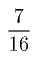分の一である３）［＃「３）」は縦中横、行右小書き］。死亡率が約三〇分の一のスウェーデンでは、出生は二八分の一である４）［＃「４）」は縦中横、行右小書き］。死亡率が三九ないし四〇分の一のブランデンブルグの一、〇五六箇村では、出生は約三〇分の一である５）［＃「５）」は縦中横、行右小書き］。死亡率が四八分の一のノルウェイでは、出生が三四分の一である６）［＃「６）」は縦中横、行右小書き］。以上一切の事例において、各国の情態が許すところの出生超過を適当に斟酌すれば、出生は明かに死亡によって左右されているのである（訳註）。
１） Id. c. vi. s. cxvi. p. 225.
２） Ibid. and c. ii. s. xxvii. p. 93.
３） Id. c. ii. s. xxviii. p. 80, and c. vi. s. cxvi. p. 225.
４） Id. c. vi. s. cxvi. p. 225.
５） Ibid.
６） Thaarup's Statistik, vol. ii. p. 4.
〔訳註〕第二―五版ではここに直ちに続いて次の一文があったが、第六版では削除された、――
『ロシアではこの斟酌は極めて大でなければならぬが、けだし、死亡率はおそらくわずかに四八ないし五〇分の一と考えてよいのに、出生は、現在人口増加が急速であるため、二六分の一という如き高率であるからである。』
統計学者はこれまで、あらゆる国を一括しての死亡率の一般的尺度を得ようと努めている。しかし仮にかかる尺度を得ることが出来るとしても、私はそれがどんな有用な目的に役立ち得るのか理解することが出来ない。それはヨオロッパまたは世界の人口を確かめる上にはほとんど何の役にも立たないであろう。またそれそれを特定国や特定地に当てはめれば最大の誤謬に陥ることになるべきは、明かである。人類の死亡率が国を異にし環境を異にするに従って、二〇分の一から六〇分の一に至るほどに大きく違っている時に、都市の数や人民の習慣や環境の健康性に関する一国の諸事情に関する知識を有たずに一般的平均を特定の場合に当てはめれば、必ず誤を犯すことになるであろうし、また右の如き諸事情に関する知識が得られれば、その国に適当する特定の比率もわかることとなり、おそらく一般的比率に頼る必要はなくなることであろう。２） Ibid. and c. ii. s. xxvii. p. 93.
３） Id. c. ii. s. xxviii. p. 80, and c. vi. s. cxvi. p. 225.
４） Id. c. vi. s. cxvi. p. 225.
５） Ibid.
６） Thaarup's Statistik, vol. ii. p. 4.
〔訳註〕第二―五版ではここに直ちに続いて次の一文があったが、第六版では削除された、――
『ロシアではこの斟酌は極めて大でなければならぬが、けだし、死亡率はおそらくわずかに四八ないし五〇分の一と考えてよいのに、出生は、現在人口増加が急速であるため、二六分の一という如き高率であるからである。』
しかしながら、諸国の死亡率に影響を及ぼす諸事情の中で、極めて一般的なものと考えることが出来、また同時に誰の眼にも全くはっきりとわかるところの、一箇の主要なる事情がある。これは、都市の数と、地方住民に対する都市住民の比率である。密集居住と坐業とが健康に及ぼす悪影響は普遍的であり、従って国の一般的死亡率は、農業に従事するものの数に比較してのかかる生活法をなすものの数に、著しく依存するであろう。この原理にもとづいて、都市人口の地方人口に対する比率が一対三であるときには死亡率は約三六分の一であるが、都市人口の村落人口に対する比率が三対五ないし三対七であるときには、この比率は三五分の一ないし三三分の一に上昇し、また右の比率が二対七ないし一対四であるときには、三六分の一以下に下降する、と計算されている。この計算にもとづいて一七五六年の表によって見ると、プロシアの死亡率は三八分の一、ポメラニアでは三七・五分の一、新辺疆伯領では三七分の一、選挙伯領では三五分の一となる１）［＃「１）」は縦中横、行右小書き］。
１） Sussmilch, Gttliche Ordnung, vol. iii. p. 60.
都市と農村を一括してのすべての国の死亡率の最近似平均尺度は、ジュウスミルヒによれば、三六分の一である１）［＃「１）」は縦中横、行右小書き］。しかしクロオメは、この尺度は、ジュウスミルヒ時代にはおそらく適当であったかもしれぬが、たいていのヨオロッパ諸国において都市の数も大きさも増加している現在としては、正確でない、と考えている２）［＃「２）」は縦中横、行右小書き］。彼は実際、この死亡率は、ジュウスミルヒの時代においてさえむしろ低きに失するのであり、今日では三〇分の一というのが平均尺度に近いことがわかる、という意見であるように思われる。ジュウスミルヒは、多くの他の統計学者と同様に、伝染病の年をその計算から除外する傾向がいささかあるから、彼れの比率が低きに失するというのはありそうなことであるが、しかしクロオメは、ジュウスミルヒの提唱せる一般的尺度に対立する死亡率の一般的尺度を確立するに足る証拠を提出しているわけではない。彼は、全プロシア王国の死亡率をもって三〇分の一となすブシングを、引用している３）［＃「３）」は縦中横、行右小書き］。しかし、この推論は三箇年間の表から得られたものであることがわかるが、これは、何らかの一般的平均を決定せんがためには短か過ぎる期間である。プロシア王国に対するこの比率は、実際、クロオメがその後で与えている観察と、全く矛盾している。一七四八年に終る五箇年間の表によれば、死亡率はわずかに三七分の一でしかない４）［＃「４）」は縦中横、行右小書き］。同一期間において、出生は死亡に対し一三一対一〇〇であった。シレジアでは、一七八一年ないし一七八四年の死亡率は三〇分の一であり、出生対死亡の比率は、一二八対一〇〇であった。ゲルデルランドでは、一七七六年ないし一七八一年の死亡率は二七分の一、出生率は二六分の一であった。この二州はこの王国中で死亡率が最高の州である。ある他の州ではそれは極めて低い。一七八一年ないし一七八四年には、ナフシャテル及びバレンギンの平均死亡率はわずかに四四分の一、出生率は三一分の一であった。ハルベルシュタット公国では、一七七八年ないし一七八四年に、死亡率は更に低く、わずか四五ないし四六分の一であり、出生の死亡に対する比率は一三七対一〇であった５）［＃「５）」は縦中横、行右小書き］。ttliche Ordnung, vol. iii. p. 60.
１） Vol. i. c. ii. s. xxxv. p. 91.
２） Crome,ber die Grsse und Bevlkerung der Europischen Staaten, p. 116.
３） Id. p. 118.
４） Id. p. 120.
５） Id. p. 122.
クロオメが下している一般的結論は、次の如くである。すなわち、ヨオロッパ諸国は三階級に分類し得、その各々には異る尺度が当てはめられるべきである。都市住民の地方住民に対する比率が一対三というが如く高い、最も富裕にして最も人口稠密な国においては、死亡率は一対三〇と考え得よう。人口及び耕作に関して中位の状態にある国においては、死亡率は三二分の一と２） Crome,
ber die Grsse und Bevlkerung der Europischen Staaten, p. 116.３） Id. p. 118.
４） Id. p. 120.
５） Id. p. 122.
１） Id. p. 127.
以上の比率は、伝染病の年の結果が十分計算の中に表われているとしても、なお一般死亡率を過大ならしめるように思われる。ヨオロッパのたいていの都市に近年普及してきているように思われる清潔上の習慣の改善は、おそらく、衛生の点で、都市の大いさの増大を埋め合せて余りあるであろう。一八二五年（訳註――本章の以下の部分は第六版のみに現わる。）
現在の膨脹した形におけるプロシアの人口について一八一七年に人口調査が行われたが、それによると総人口は一〇、五三六、五七一、その
１） Supplement to the Encyclopdia Britannica, article Prussia.
〔訳註〕これらの数字には誤りがある。
ここに挙げた数字によると、出生対死亡の比率は一四九対一〇〇、出生対結婚四対一、出生対総人口一対二三・二、死亡対総人口、男一対三三、女一対三六、合計一対三四・五、結婚対総人口一対九四となる。死亡以上に出ずる出生の超過が総人口に対する比率は一対六二である。これは、もし継続すれば、人口を約四三年にして倍加せしむべき超過である。しかしながら、この比率がどれだけ継続したかは述べてないから、これからは何ら正確な結論を下すことは出来ない。しかし人口の非常に急速に増加しつつあることには、ほとんど疑いはない。dia Britannica, article Prussia.〔訳註〕これらの数字には誤りがある。
［＃改ページ］
第五章 スイスにおける人口に対する妨げについて
スイスの状態は多くの点において他のヨオロッパ諸国と極めて異り、それに関して蒐集された事実の若干は極めて興味がありかつ本書の一般的原理を極めて有力に例証する傾向があるから、別個の考慮を払う価値があるように思われる。
約三五年ないし四〇年以前スイスでは、この国の人口減退に関する突如たる大警鐘が打鳴らされたように思われる。そして数年前設立されたベルン経済学会の会報は、勤労や技術や農業や工業の衰退や、人口消滅の切迫せる危機やを
１） 一七六六年度の各種報告を参照。
しかしながら、その頃、極めて価値多い材料を載せた一論文が、ヴヴェイの牧師ミウレ氏によって発表された。彼は進んで救治策を指摘する前に、まず弊害の存在を証明することが必要だと考えた。彼は各教区の創設時にまで遡ってその記録簿を極めて丹念周到に研究し、第一期は一六二〇年に終り、第二期は一六九〇年に終り、第三期は一七六〇年に終るところの、各七〇年からなる三期間中に生じた、出生数を比較してみた１）［＃「１）」は縦中横、行右小書き］。この比較によって、出生数は第一期よりもむしろ第二期の方が少く、そして（第二期における若干の遺漏と第三期における若干の重複を仮定した上で）第三期における出生数もまた第二期より少いことを見出して、彼は、一五五〇年以来この国が引続き人口が減退したことに対する証拠は、議論の余地なき正しいものと考えたのである。
１） Mmoires, etc., par la Socit Economique de Berne. Anne 1766, premire partie, p. 15 et seq. octavo. Berne.
右の前提をすべて認めても、その結論はおそらく彼が想像したほど確実ではない。すなわち、彼れの報告に現われている他の事実からして、私は、スイスはこの期間には、前章で想像した場合に該当するのであり、従って慎慮や清潔等に関する人民の習慣の改善がこの国の一般的健康性を徐々として増大するに至ったのであり、また彼らをしてその子供のより多くを成人に達するまで養育し得せしめることにより、より少数の出生をもって必要な人口を供給するに至ったのである、と信ぜざるを得ないのである。云うまでもなく、年出生の総人口に対する比率は、おそい時期の方が昔よりも低かったであろう。moires, etc., par la Socit Economique de Berne. Anne 1766, premire partie, p. 15 et seq. octavo. Berne.ミウレ氏の正確な計算から見ると、最終期中には死亡率は異常に低く、かつ嬰児期から青春期まで育つ子供の比率は異常に高かったことが、わかる１）［＃「１）」は縦中横、行右小書き］。前二期においてはこれは決して同一程度ではあり得なかったであろう。ミウレ氏自身、『この国の昔の人口減退は、往時しばしば人口を荒廃せしめた頻々たる
１） Id. table xiii. p. 120.
２） Id. table xiii. p. 22.
彼はその表の一つで一三一二年以来スイスで流行した２） Id. table xiii. p. 22.
１） Id. table iv. p. 22.
１） Id. table i. p. 21.
今の実例において、一七の教区の出生の合計は、第一期の七〇年間において、四九、八六〇とされているが、これは一年約七一二となる。これに二六を乗ずれば、一八、五一二という人口が得られる。最終期においては出生の合計は四三、九一〇１）［＃「１）」は縦中横、行右小書き］とされているが、これは一年約六二六となる。これに三六を乗ずれば、二二、五三六という人口が得られる。かくてもしこの乗数が正しければ、証明せんとした減少の代りに甚だしい増加が存在したことが、わかるであろう。
１） Id. table i. p. 16.
私が第一期の死亡率を過大に見積らなかったのには多くの理由があるのであるが、なかんずく、ジュネエヴの隣接都市についての計算がそれであって、それによれば、一六世紀には、生命蓋然率すなわち出生者の半数が生存する年齢はわずか四・八八三で四箇年と十分の九以下であり、平均寿命は一八・五一一で約一八年半であることがわかる。十七世紀には生命蓋然率は一一・六〇七で一一年半以上、平均寿命は二三・三五八である。十八世紀には生命蓋然率は二七・一八三すなわち約二七年五分の一に増加し、また平均寿命は三二年五分の一となった１）［＃「１）」は縦中横、行右小書き］。
１） See a paper in the Bibliothque Britannique, published at Geneva, tom. iv. p. 328.
おそらく程度は同じでなかろうが同じ種類の死亡率低減の現象がスイスに生じたことは、極めて確実である。そして吾々は、上述せる他の諸国の記録簿から、より大なる死亡率は当然により大なる出生率を生ずることを、知っているのである。que Britannique, published at Geneva, tom. iv. p. 328.出生が死亡に依存するというこの事実については、ミウレ氏自身多くの事例を提供している。しかし彼は真の人口原理を知らないので、それはただ彼を驚かすのみであって、彼はこれを応用していないのである。
彼は、スイス婦人の出産性の欠乏について述べて、プロシア、ブランデンブルグ、スウェーデン、フランス、また実に彼が記録簿を見たすべての国は、洗礼の総人口に対する比率は、これが三六分の一なるヴォー州よりも高いと云っている１）［＃「１）」は縦中横、行右小書き］。彼は更に附言して、最近リヨン州で行われた計算から見ると、リヨン州だけでは洗礼比率が一対二八であり、諸小都市では一対二五であり、地方教区では二三ないし二四分の一であることがわかる、と云っている。彼は
１） Mmoires, etc., par la Scit Econ. de Berne. Anne 1766, premire partie, p. 47, 48.
２） Id. p. 48.
３） Id.
彼は曰く、『子供が嬰児期の危険から最もよく免かれ、また、いかなる計算法によって計算してみても、平均寿命が他国よりも高い国こそが、まさに、出産性が最小であるというのは、何に由来するのであろうか。また我国の一切の教区の中で、最高の平均寿命を与える教区が、増加傾向の最小なる教区だというのは、どうしてであろうか。moires, etc., par la Scit Econ. de Berne. Anne 1766, premire partie, p. 47, 48.２） Id. p. 48.
３） Id.
『この問題を解くために、私は次の推測を、だがほんの推測として挙げてみたい。これは、あらゆる場所において適当な人口の均衡を維持せんがため、神は賢明にも、各国において生命力がその増殖力と反比例を保つように、事物を調整したのではなかろうか１）［＃「１）」は縦中横、行右小書き］。
１） Id. p. 48 et seq.
『事実上、経験は私の推測を確証する。アルプス山脈中レエザンという村は、人口が四〇〇であるが、その出生は一年わずか八人ほどである。ヴォー州は大体同一人口に対し一一人、リヨン州では一六人である。しかし、二〇歳になると、この八、一一、一六という数字が同じ数になってしまうのだとすれば、ある場所で生命力が与えるところのものを、他の場所では増殖力が与えることが、わかるであろう。かくて最も健康的な国も、増殖力が少いために、人口過剰とはならず、また不健康な国はその異常な増殖力によって、その人口を保つことが出来るであろう。』ミウレ氏が、記録簿から、最も健康な人民は最も増殖力が小であることを見出したときの驚きがどんなであったかは、彼がこれを説明するために奇蹟に頼っていることで、判断することが出来よう。しかし、この場合において、解決が困難だからといって、このような推測に頼らなければならぬ必要は少しもない。この事実は、婦人の出産性はその健康性と反比例的に変動するというような奇妙な仮定に頼らなくとも、説明し得よう。
各国の健康性には確かに大きな差異があり、それは部分的には土壌及び位置から生じ、また部分的には人民の習慣及び職業から生ずるものである。これらの原因、または何であろうとその他の原因により、大きな死亡率が生ずる時には、それに比例する数の出生がすぐその後から生ずるものであり、これは労働に対する需要の増加による年結婚数の増加と、より若く従って当然より多産的な年齢に結婚が行われる各結婚の出産性の増大との、両者によるものである。
これに反し、反対の原因によりある国または教区の健康性が著しく大である時には、もし人民の習慣により、過剰人口の吐け口として移民が行われないならば、やがて予防的妨げの絶対的必要が極めて強く人民の注意に迫り、ために彼らはこれを採用せざるを得なくなり、もしこれを採用しなければ餓死するということになるであろう。従って結婚は極めて晩婚となるので、啻に年々の結婚数が全人口に対比して小となるばかりでなく、また各個々の結婚の生殖力も当然に小となるであろう。
ミウレ氏が言及しているレエザンの教区においては、これら一切の事情がなみならぬ程度で共存していたように思われる。その位置はアルプス山脈に位しているが、しかし高過ぎることはないから、おそらく空気は最も清浄で衛生的であった。そして人民の職業は、全部牧畜であったから、従って最も健康的なものであった。ミウレ氏の計算の正確なことはこれを疑うことが出来ないが、それによれば、この教区における生命蓋然率は、六一年というが如き異常な高さにあったことがわかる１）［＃「１）」は縦中横、行右小書き］。そして平均出生数が三〇年に亙りほとんど正確に死亡数と等しかったという事実は２）［＃「２）」は縦中横、行右小書き］、人民の習慣上移住が行われず、そしてこの教区の人口を支持すべき資源がほとんど停止していたことを、明かに立証するものであった。従って吾々は、牧場は限られており、量においても質においても容易には増大し得なかったであろう、と断言することが出来る。そこで飼育し得る家畜の数はもちろん、同様にまたこれら家畜の世話に必要な人間の数も、限られていたことであろう。
１） Id. table v. p. 64.
２） Id. table i. p. 15.
かかる事情の下においては、青年期に達した若者は、誰かが死んで、牧人か搾乳者かその他類似の職業が空席となるまでは、その父の家を去って結婚することはどうして出来ようか。そして、人民の健康が非常によいのでこうしたことはなかなか起らぬに違いないから、彼らの大多数は、その青年期の大部分を独身で暮らさなければならず、しからざれば自分も家族も餓死してしまうという最も明かな危険を犯すことになるであろう。この事情はノルウェイの場合よりもいっそう甚だしいのであり、また出生と死亡とがほとんど等しいという事情からして特にはっきりと現われるのである。２） Id. table i. p. 15.
父親が不幸にして普通以上の大家族を有つならば、その結果として結婚数は増加よりはむしろ減少の傾向を示すであろう。彼はおそらくその小さな所有地で子供達全部に適当な仕事を見出すことは出来ないであろうが、しかしたぶん倹約すればその全部を家庭で食わしていくことくらいは出来るであろう。しかし子供達は明かに長い間かからなければ父親の許を去ることが出来ぬであろうし、また息子の中で最初に結婚するのもおそらく父の死後となるであろう。しかるにもし父親が二人しか息子を有たなかったとすれば、その一人はおそらく親の家を去ることなくして結婚することが出来ようし、またもう一人は父の死と同時に同時に結婚することが出来よう。おそらく一般的に云って、四人の未婚成年がいるかいないかが、この上結婚して新家庭をつくる余地があるかないかの差異を作り出すものと、云い得るであろう。
この教区では、ほとんど例外なしに、極めて晩婚であり、しかもその位置が極めて健康的であるために夫婦の一方の死亡による結婚の解消は極めておそいのであるから、現存する結婚の大部分では夫婦の年齢が非常に進んでおり、従ってたいていの婦人は子供を産まなくなってしまっていることは、明かである。従って現存結婚総数の年出生数に対する比率は、一二対一という極めて異常な比率であることがわかった。出生率は人口のわずかに約四九分の一にすぎず、そして十六歳以上の者がそれ以下の［＃「以下の」は底本では「以上の」］者に対する比率は約三対一であった１）［＃「１）」は縦中横、行右小書き］。
１） Id. p. 11 and 12.
この教区と対照をなすものであり、かつ人口の測定に当って出生数がいかに頼りにならぬかということの証拠として、ミウレ氏は、ユラ地方のサン・セルジュの教区を引合いに出しているが、そこでは、現在結婚数の年出生に対する比率はわずかに四対一であり、出生数は人口の二六分の一で、十六歳以上の者と以下の者との数はちょうど同じであった１）［＃「１）」は縦中横、行右小書き］。
１） Ibid.
彼は曰う、これらの教区の人口をその年出生率から判断すれば、レエザンはせいぜいのところサン・セルジュを越すこと五分の一以上ではないと思われるであろうが、しかし実際の計測をすると、前者の人口は四〇五、後者のそれはわずか一七〇であることがわかった１）［＃「１）」は縦中横、行右小書き］、と。
１） Id. p. 11.
また曰う、私は、最も著しい対照をなしている教区を選んだのであるが、しかし他の教区ではその差異がそれほどはなはだしくはないけれども、しかも、場所が異れば、距離が非常に近く、また環境の点では明かに類似していても、その比率に著しい差異のあることが、常に見出されるであろう１）［＃「１）」は縦中横、行右小書き］、と。
１） Id. p. 13.
以上の如き観察を下し、また私が紹介しなかった同一傾向を有する他の観察を下して後なお、彼が、ヴォー州の人口減退の証拠の全部を出生率に求めているのは、奇妙なことである。この比率は時期を異にし位置を異にするにつれて異るものではないと想像すべき十分の理由はない。レエザンとサン・セルジュとの二教区の出産性の著しい対照は、時間と事情との力が変化し得る原因に依存している。サン・セルジュでは成人に達する子供の数の比率が大きいところから見れば、その自然的健康性はレエザンのそれに比して遥かに劣るものではないことがわかる１）［＃「１）」は縦中横、行右小書き］。その出生の死亡に対する比率は七対四であった２）［＃「２）」は縦中横、行右小書き］。しかしその全住民数は一七一を越さなかったのであるから、この大きな出生超過が、過去二世紀の間、規則正しく人工に附加され得なかったことは、明かである。従ってそれは、近年この教区の農業または取引が急に増大したのによるか、または移住の習慣によるかの、いずれかによって起ったものに相違ない。私は後者の仮定が正しいと思う。そしてそれは、前述の成人の比率がより小である事実によって確証されるように思われる。この教区はユラ地方に位置を占め、パリからジュネエヴに至る大道に沿っていて、明かに移住に便利な位置である。そして事実上、それは都市や平低地方に対する人間を繁殖させる教区たる役割を演じたように思われる。そして成年の一定数が年々出ていくので、残った者全部には、結婚して多数の子供を養う余地が作られたのである。
１） Id. table xiii. p. 120.
２） Id. table i. p. 11.
特定教区における移住の習慣は、啻に環境に依存するばかりでなく、またおそらくしばしば偶然の出来事に依存する。私は、三、四囘の移住が大成功を収めれば全村がしばしば冒険心を与えられ、また三、四囘のそれが失敗すればこれと反対の精神が生ずることを、ほとんど疑うことが出来ない。もし移住の習慣がレエザンの村に導入されたならば、出生率が直ちに変化すべきことは疑い得ない。そして二十年を経た後には、その記録簿を調べた結果は、ミウレ氏が計算した当時にサン・セルジュの教区の比率と異っていただけの相違を、同じくミウレ氏の当時の比率に対し示すことであろう。従って、より大なる死亡率の外になお他の諸原因が共合して、出生率による異る時代における人口の測定を著しく不正確ならしめることが、わかるであろう。２） Id. table i. p. 11.
ミウレ氏が蒐集した事実はすべて価値多きものである。もっとも彼が下した推論は常に必ずしも価値多きものとは考え得ないけれども、彼は、ヴヴェーについて、若干の計算を試みているが、これは結婚の出産性に関する問題を真に確かめ、そして――当時この特定目的を有っていたわけではないが――これを測定する通常の方法の不正確を証示する性質を、もつものである。彼は、三七五人の母親が二〇九三人の生産児を産んだことを見出した。これは各一人の母親が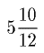人または約六人の子供を産んだことになる１）［＃「１）」は縦中横、行右小書き］。しかしながらここで母というのは、全部実際の母のことであって、妻のことではない。しかしヴヴェーにおける妻の
１） Id. p. 29 et seq.
２） 再婚や三婚があるから、結婚の出産性は常に既婚婦人の生殖力よりも低くなければならぬ。夫の数は考慮せずに母だけがここで考慮されている。（訳註――この註は第二版には全然なく、また第三版では次の形であった。『ミウレ氏はこの計算における母が一度以上結婚したものかどうかを述べていない。再婚や三婚があるから、結婚の出産性は常に既婚婦人の生殖力よりも低くなければならぬことは明かである。夫の数は考慮せずに母だけがここで考慮されているということは、ありそうなことである。』本文の形になったのは、第四版以後のことである。）
３） Mmoires, etc., par la Socit Econ. de Berne. Anne 1766, p. 32.
４） Id. table i. p. 21.
ヴォー州を八つの異る地区に分って、ミウレ氏は、次のことを発見した。すなわち七都市においては平均寿命は三六で、生命蓋然率または生れた者の半数が生存する年齢は三七年である。三六箇村においては、平均寿命は四〇、蓋然率は四七である。ユラ地方の七教区においてはこれら二つの比率は三八及び四二であり、十二の穀物生産教区においては三七及び四〇、大葡萄園地域の十八教区においては三四及び三七、葡萄園と高台との交錯した六教区においては三三・九及び三六、沼沢地の一教区においては二九及び二四である１）［＃「１）」は縦中横、行右小書き］。２） 再婚や三婚があるから、結婚の出産性は常に既婚婦人の生殖力よりも低くなければならぬ。夫の数は考慮せずに母だけがここで考慮されている。（訳註――この註は第二版には全然なく、また第三版では次の形であった。『ミウレ氏はこの計算における母が一度以上結婚したものかどうかを述べていない。再婚や三婚があるから、結婚の出産性は常に既婚婦人の生殖力よりも低くなければならぬことは明かである。夫の数は考慮せずに母だけがここで考慮されているということは、ありそうなことである。』本文の形になったのは、第四版以後のことである。）
３） M
moires, etc., par la Socit Econ. de Berne. Anne 1766, p. 32.４） Id. table i. p. 21.
１） Id. table viii. p. 92 et seq.
もう一つの表から見ると、一五歳以下で死亡する者の数は、特別なレエザンの教区においては五分の一以下であり、アルプス及びユラの他の多くの教区においては四分の一以下であることがわかる。ヴォー州全体としてはそれは三分の一以下であった１）［＃「１）」は縦中横、行右小書き］。
１） Id. table xiii. p. 120.
ロオザンヌやヴヴェーの如き大都会の若干においては、多数の外人が移住しているので、成人の一六歳以下の者に対する比率は、レエザン教区とほとんど同一であり、ほぼ三対一であった。移出民の多くない教区においては、この比率は約二対一であった。そして住民を他国に送り出す教区においては両者はもっと同数に近かった１）［＃「１）」は縦中横、行右小書き］。
１） Id. table xii.
ヴォー州の総人口を、ミウレ氏は、一一三、〇〇〇、その
１） Id. premire partie, p. 27.
ミウレ氏の表によれば、ヴォー州における年結婚の総人口に対する比率はわずかに一対一四〇に過ぎず１）［＃「１）」は縦中横、行右小書き］、これはノルウェイよりも低い数字である。re partie, p. 27.
１） Id. table i.
ミウレ氏のこれら一切の計算は、彼が考察した全地域を通じて、人口に対する予防的妨げが著しい程度で作用していることを意味するものである。そして同一の習慣が、スイスの他の地方にも、――もっとも場所が異るに従って、環境や人民の職業が健康性を左右しまたその地方の資源が人口増加に対する余地を作るか否かによって、場所により著しく差異はあろうが――行われている、と信ずべき理由がある。ベルン市では、一五八三年ないし一六五四年に、最高会議は、四八七家族がブルジョアの階級に加わることを認めたが、その
１） Statistique de la Suisse, Durand, tom. iv. p. 405. 8vo. 4 vols. Lausanne, 1796.
ベルン市の結婚していない者の比率は、寡婦鰥夫を含めて、成人の半数より遥か以上であり、十六歳以下の者の以上の者に対する比率は約一対三である１）［＃「１）」は縦中横、行右小書き］。これは予防的妨げが強力に働いていることの、有力な証拠である。
１） Beschreibung von Bern, vol. ii. table i. p. 35. 2 vols. 8vo. Bern. 1796.
ベルン州の農民は常に富裕をもって聞えているが、それは疑いもなく大いにこういう原因によるものである。あらゆる農民は、兵士として必要な武器や装具を所有していることを立証しなければ、結婚の許可を得ることが出来ないという法律が、しばらくの間行われていた。これは同時に極貧民を結婚させないものであり、それは多くの他の者に、ある程度の勤勉と節約を行わなければその希望を達し得ないことを知らしめて、もって彼らの習慣を好転せしめたであろう。この結婚という目的を抱いて国内か国外かで働いていた若者は、許可を得るに必要な額を得た時には、その誇りがむしろ高まり、単に結婚の許可を得るだけのものでは満足せず、更に家族扶養の資ともいうべきものを手に入れ得るまでは、引き続き働きつづけるであろう。私は、スイスに滞在中、比較的小さな州については詳しいことを知り得なくて大いに失望したが、これは国が争乱の中にあったために出来なかったのである。しかしながら、これらの小さな州はたいてい牧場であるから、人民の異常な健康や予防的妨げの絶対的必要という点で、ヴォー州のアルプス地方の教区に非常に似ているに違いない、と考えるべきである。ただし通常以上の移住の習慣や工業の開始（訳註１）によって、これらの事情に変化を生じている場合は、別である１）［＃「１）」は縦中横、行右小書き］。
１） ジュネエヴのプレヴォ氏は、本書の飜訳で、綿工業の開始された小州グラヴィについて若干の報告を行っている。それによると、この工業は最初は極めて繁栄し、そして早婚の習慣と著しい人口増加とを生じたが、しかしその結果として労賃は極度に低廉となり、そして人口の四分の一は、衣食の道を慈善に求めるに至った。出生及び死亡の人口に対する比率は、ヴォー州における如くに一対三六及び一対四五ではなく、一対二六及び一対三五となった。そして最終の飜訳に現われたその後の報告によれば、出生の人口に対する比率は、一八〇五年ないし一八一九年の一四年間に、一対二四であり、死亡のそれは一対三〇であった。
これらの比率は早婚の普及を示すものであり、そして、かかる地位とかかる境遇とにおけるその当然の結果は、――大きな貧困と大きな死亡率である。以上の知識をプレヴォ氏に与えたヘエル氏は、早くからかかる結果を予見していたように思われる。（訳註――この註の全部は第六版のみに現わる。）
〔訳註１〕『工業の開始』は第二版では『若干の地方に生じている工業の開始』とあった。
厳密な牧畜国の人口に対する限界は極めて明瞭である。山地の牧場ほど改良しにくい土地はない。それは必然的に主として自然に委ねざるを得ず、そして適度の家畜を入れてしまうと、それ以上ほとんどどうすることも出来ない。スイスのこれらの地方の大きな困難は、ノルウェイの場合と同様に、夏に山地で養われた家畜を冬の間養うべき十分なこれらの比率は早婚の普及を示すものであり、そして、かかる地位とかかる境遇とにおけるその当然の結果は、――大きな貧困と大きな死亡率である。以上の知識をプレヴォ氏に与えたヘエル氏は、早くからかかる結果を予見していたように思われる。（訳註――この註の全部は第六版のみに現わる。）
〔訳註１〕『工業の開始』は第二版では『若干の地方に生じている工業の開始』とあった。
もっと小さい州では、工業が開始され、これは、より多量の職業と、同時にまた穀物を購入のためのより多量の輸出とにより、もちろん著しく人口を増加せしめた。しかしスイスの学者の意見は一般に、工業が確立された地方は、大体において、健康と道徳と幸福との点において損害を受けている、というに一致しているように思われる。
牧畜は本来、それが雇傭し得る人数よりも遥かに多数の者に対する食物を生産する性質をもっている。従って、厳密な牧畜国では、多くの者は怠惰に暮し、またはせいぜいのところ不十分な仕事しかしていない。かかる事態は、当然に、移住の気性を起させるものであり、そしてスイス人がかくも外国の仕事に従事している主たる理由なのである。父親が（訳註）一人以上の息子を有つ時には、農場で必要とされないものは、結婚し得る唯一の機会として、兵役に応ずるか、またはある他の方法で移住しようという気に、強く誘われるのである。
〔訳註〕『父親が』以下の文章は第二版ではこれとかなり異っていた。それは第三版でそのまま踏襲されたが、第四版でかなりの訂正を加えられ、更に第六版でその上に加筆が行われて、この形となったものである。しかし内容上の変化があるわけではない。
上述の如く予防的妨げが極めて著しく行われている国に対し通常以上の移住の精神が働くならば、人口減退に関するかくも一般的な叫声がある時期にすら、これが人口増加に対する一時的妨げを生み出し得たということは、ありそうもないことではあるが、しかし可能ではある。もしそうであるとすれば、それは疑いもなく下層階級の人民の境遇の改善に貢献をしたのである。この時期の直後に、スイスを旅行した外国人はすべて、いずれもスイスの農民の状態が他国のそれよりもよいことに、気附いている。私は、最近のスイス旅行で、それが話で聞いたほどよくないのを見て、いささか失望した。この不幸な変化の大部分は、最近の擾乱中の人民の喪失と苦難とに帰するのが正しいであろう。しかし一部分はおそらく、人口を増加せんとする各政府の誤れる努力と、また指導が誤らずかつ一時的には人民の愉楽と幸福を増進することになる努力の、最終的帰結とに、帰すべきであろう。私はユラ地方のジュウ湖に旅行した時、右の最後の種類の結果を見て、大いに打たれたことがある。吾々の一行が湖の隅の小さな宿屋に
吾々を後にオルベ河の水源へと案内してくれた農夫は、この問題をもっと立入って論じ、私が今まで出会ったことのある誰にも劣らぬほど人口原理を理解しているように思われた。彼は曰う、女は子供をたくさん産み、山の空気は極めて清く健康的なので、絶対的欠乏の結果死ぬ者の外は子供はほとんど全く死なない。土地は痩せているので、毎年成人する人間に職業と食物を与えるには足りない。労賃はその結果として非常に低く、一家をちゃんと養っていくには全く足りない。しかし社会の大部分の窮乏と餓えに瀕する生活も、他人のための警告とはならず、彼らは引続き結婚をし、自分で養うことの出来ないたくさんの子供を産みつづけている、と。この早婚の習慣は実際地方の悪習と呼ぶべきものである、と彼は云い、そして彼はその結果として生じなければならぬ必然的不可避的な不幸を痛感するの余り、男子が四十歳まで結婚することを禁じ、そして四十歳になった時には、六人や八人も子供を産まないで、二人か三人しか産まない『老嬢』とだけ結婚を許す法律が、制定さるべきである、と考えているのである。
私は、彼がこの問題を論じた真面目さ、ことにその結論の提案には、感心せざるを得なかった。彼は過剰人口から起る窮乏を非常に強く目に見、体験したからこそ、かかる過激な救治策を提案したのに違いない。訊ねてみたら、彼自身非常に早婚をしたことがわかった。
この問題に関する理論的知識の点で、彼が誤を犯した唯一の点は、その推理を余りにも不毛な
彼がその国の優越的悪習と名づけたところのものの主たる原因について質問したところ、彼は理論的に非常に正確にそれを説明した。彼は曰う、石磨き工業が数年前に始まり、これは一時繁昌を極め、附近全体に高い労賃と職業を与えた。家族を養う便宜と子供達に早くから職業を見出すの便宜とは、早婚を大いに奨励した。そしてこの習慣は継続していったが、そこへ流行の変化や偶発事やその他の原因が起って、この工業はほとんど駄目になってしまった、と。彼はまた、近年非常に大きな移民が行われているが、しかしこの増殖法が極めて迅速に進むので、移住も国の過剰人口を解決するに足らず、その結果は彼が私に述べた如き、また私も一部分は目撃した如き、状態となったのである、と述べた。
その他、スイス及びサヴォイの諸地方の下層社会の者と話したときにも、その多くの者は、ジュウ湖の友人の如くに人口原理が社会に与える影響を理解するほどこれに精通してはいなかったけれども、しかも彼ら自身の個人的利害に影響するものとしてこれを十分明かに理解し、家族を養い得るという相応の見通しもなくして結婚すればおそらく自身に招くべき害悪に、十分気が附いているのを、私は見出した。これらの問題について広く行われている一般的観念から見れば、一般人をして、人口原理と、低廉な労賃及び貧困を生ずるその結果とを、理解せしめるのは、決して困難な仕事ではなかろう、と私は云いたい。
スイスには貧民のための絶対的備えはないけれども、各教区は一般に公共用の若干の領主権と土地財産とを所有しており、そしてそれ自身の貧民を養うものということになっている。しかしながらこの基金は限られているから、もちろんしばしば全く不十分となるであろう。そこで時々この目的のために義捐金募集が行われる。しかしこの金額は比較的僅少でありかつ不確実なので、
しかしながら、農業を促進せんとするベルン経済学会の努力は若干の成功を収め、国の資源の増大はより以上の人口を容れる余地を作り、そして近年生じた人口増加の、全部ではないとしても大部分に対して、適当な生活手段を提供した、と信ずべき理由がある。
一七六四年に、ベルン全州の人口は、ヴォー州を合せて、三三六、六八九であった。一七九一年にはそれが四一四、四二〇に増加していた。一七六四年ないし一七七七年には、その増加は毎年二、〇〇〇の割合で進む、一七七八年ないし一七九一年には毎年三、一〇九の割合で進んだ１）［＃「１）」は縦中横、行右小書き］。
１） Beschreibung von Bern, vol. ii. p. 40.
［＃改丁］第六章 フランスにおける人口に対する妨げについて
革命前のフランスの教区記録簿（訳註１）は、特に慎重に記録されたわけでもなければ、特に長年月に亙って記録されたわけでもなく、また発表されたことのあるもので極めて異常な結果を示すものもほとんどないから、革命に伴った事情で大いに世を驚かした事情がなかったならば、私は何も特にこの国を特別の一章を設けて論じはしなかったであろう。その事情とは、かくも長期の破壊的の争乱の間死亡者が多かったにもかかわらず、人口が減少しなかったということである１）［＃「１）」は縦中横、行右小書き］。
１） 本章は一八〇二年に書かれ、アミアンの平和以前のフランスの状態について述べているものである。（訳註――この註は第六版のみに現わる。）
〔訳註１〕『教区記録簿』は第二版では『死亡表』とある。
各県知事の報告にもとづいた大きな国家的著作が、現在パリである程度進んでおり、これが完成した暁には、統計学一般の資料に極めて貴重な寄与をなすものと期待して差支えないであろう。しかしながら全県知事の報告はなお完成していないが、その監督主任をしている人から、私は、フランスの旧領土の人口は革命中減少するよりはむしろ増加したことは、確実だということだけは、既にわかっている、と確言された。〔訳註１〕『教区記録簿』は第二版では『死亡表』とある。
かかることは、もし本当であるとすれば、極めて有力の本書の一般原理を確証するものである。そして差当りこれを事実と見るならば、かかる事柄とどのようにして起り得たかをやや詳細に辿ることは、この問題に若干の光明を投ずることとなろう。
あらゆる国には、常に、年々青春期に達する人間の
プウシェ氏がパリで一八〇〇年に著わした『一般統計論』Essai d'une Statistique G
nrale の中のある計算によれば、フランスにおける一八歳ないし五〇歳の未婚男子数は一、四五一、〇六三であり、同じ年齢の未婚既婚を問わず男子の総数は五、〇〇〇、〇〇〇である１）［＃「１）」は縦中横、行右小書き］。この計算が正確にいつ行われたのかはわからぬけれども、しかし著者は平時においてという表現を使っているから、おそらく彼は革命前の時期を云っているのであろうと思われる。そこで吾々は、この一、四五一、〇六三［＃「一、四五一、〇六三」は底本では「一一、四五一、〇六三」］という数字は、革命勃発時における兵役適齢の未婚男子の全一団を現わすものと仮定しよう。
１） P. 32. 8vo. 78 pages.
戦争勃発前のフランス人口は、憲法議会によって、二六、三六三、〇七四と推算された１）［＃「１）」は縦中横、行右小書き］。そしてこの計算は過大であると信ずべき理由はない。ネッケルは二四、八〇〇、〇〇〇という数を挙げているが、当時の年出生は百万を越え、従って彼れの乗数二五・四分の三をもってすれば、総人口はほとんど二千六百万となる、という確信を表明している２）［＃「２）」は縦中横、行右小書き］。しかもこの計算は、憲法議会の推算に先立つ十年に行われたものである。
１） A. Young's Travels in France, vol. i. c. xvii. p. 466. 4to. 1792.
２） De l'Administration des Finances, tom. i. c. ix. p. 256. 12mo. 1785.
しからば年出生を百万をやや上廻るものとし、プウシェのある計算から事実と思われる如く１）［＃「１）」は縦中横、行右小書き］に五分の二をやや上廻るものが一八歳未満で死亡するとすれば、六〇〇、〇〇〇人以上の者が年々一八歳に達する、ということになる。２） De l'Administration des Finances, tom. i. c. ix. p. 256. 12mo. 1785.
１） Essai, p. 31.
年結婚は、ネッケルによれば、二一三、七七四人である１）［＃「１）」は縦中横、行右小書き］。しかしこの数は人口が増加しつつある時にとった十年間の平均であるから、おそらく低きに過ぎるであろう。これを二二〇、〇〇〇とすれば、結婚年齢に達する六〇〇、〇〇〇の
１） De l'Administration des Finances, tom. i. c. ix. p. 255.
なるほど十年経てば本来の未婚男子の一団の多くは兵役年齢を越すであろう。しかしこれは、彼らの結婚生活によって相殺され、また実に相殺されて余りあるであろう。五十歳の人間は一般に兵役年齢を過ぎたものと考えられるが、しかしもし彼が姙娠可能の女と結婚するならば、人口増加の上では決して無用ではないことを、最初から考慮に入れなければならぬ。そして事実上、毎年一五〇、〇〇〇の新兵の補充は、主として年々一八歳に達する三〇〇、〇〇〇の男子から取られ、従って年結婚数は多く未婚者の本来の一団の残留部分から供給されるであろう。四十歳五十歳の鰥夫や独身者は、通常の事態においては適当な配偶者を得るのが困難であろうが、このように夫が少い時にはこの困難もおそらく除去されるであろう。そして六〇〇、〇〇〇という人間がいなくなるので、もちろん年結婚数が非常に増加する余地が与えられるであろう。この増加は確かに起った。しからざれば独身を続けたはずの本来の独身者の一団のサア・フランシス・ディヴェルヌワは、確かにフランスの損害を誇張する傾向を有ち、またおそらくかなり誇張していると思われるのであるが、彼は一七九九年までのフランス軍隊の陸海を通じての全損失を、百五十万と見積っている１）［＃「１）」は縦中横、行右小書き］。この問題を例証するために私のとった概数はサア・フランシス・ディヴェルヌワ氏の見積りよりも六十万だけ多い。しかしながら彼は、革命に伴う他の破壊原因による死亡をこの上百万人計上している。しかしこの損失はあらゆる年齢あらゆる性に無差別に生じたのであるから、同じ程度には人口に影響を及ぼさず、従ってサア・フランシスの計算以上に生ずる血気旺んな六〇〇、〇〇〇の男子によって相殺されて余りあるであろう。更におそらく、革命戦の後期においては、徴兵が旧領土よりも新領土において更に厳重に行われたのであり、そしてこれら新領土の人口は五、六百万と見積られているから、それは軍隊で死んだと想像されている百五十万人のうちの大きな比率をなしたことであろう。
１） Tableau des Pertes, etc., c. ii. p. 7. ――ガルニエ氏は、そのアダム・スミス仏訳版の註において、フランス人口のわずかに六十分の一が戦死したに過ぎぬと計算している。彼は、直ちに編成されたものはわずかに五〇〇、〇〇〇に過ぎず、戦争中にこの数に追加されたものは四〇〇、〇〇〇であると想像し、そして自然死を遂げたものの数を斟酌した上で、戦争のために増加した死亡はわずかに毎年約四五、〇〇〇に過ぎぬと想像している。Tom. v. note xxx. p. 284. もし実際の損失が、ここに述べてあるところ以上に出でぬとするならば、出生のわずかの増加がこれを容易に恢復したことであろう。しかし私は、これらの推算は、サア・フランシス・ディヴェルヌワの推算が過大であると同程度に、過小である、と考えたいのである。
革命の初期において（訳註）離婚を大いに便ならしめた法律は、道徳的見地からも政治的見地からも極めて悪法であったが、しかし、それは男子が非常に不足しているという情勢の下において、それはいささか一夫多妻の慣習のような作用をし、そして夫の数に比例して子供の数を増加させたであろう。これに加うるに、夫のない婦人が全部子供を産まないとは思われない。私生児の出生総数に対する比率は、革命前の四七分の一から現在一一分の一に増大している１）［＃「１）」は縦中横、行右小書き］。そしてこれは道徳的堕落の憂鬱な証拠ではあるけれども、たしかに出生数の増加には寄与したであろう。そしてフランスの農婦は。革命期間中は、人手が足りないので、通常以上の所有をあげることが出来たから、おそらくこれらの子供達の多くは生き永らえたことであろう。
１） Essai de Peuchet, p. 28.
〔訳註〕『革命初期において』なる語は第五版より現わる。その他用語上の若干の修正がある。なおここでパラグラフが改められたのは第六版からである。
これら一切の事情の下において、フランスの農業が生活資料を無事に保証し続ける限り、その人口が、革命の進行中働いた一切の破壊原因にもかかわらず、依然減少しなかったということは、不可能ではあり得ぬのであり、またありそうもないことですらないことが、わかるのである。そして、いかにはなはだしくフランスの工業が損害を蒙ったにしても、その農業は衰滅よりはむしろ増進したことは、今では一般に認められているように思われる。戦争中のいかなる時期においても、召集された軍隊の数が、革命前に工業に従事していた人間の数を超過した、と考えることは出来ない。これらの工業の破壊によって失職し、しかも軍隊に加わらなかった者は、もちろん農業に参加したことであろう。そしてフランスでは、婦人が農場で大いに働くのが常に習慣なのであるが、この習慣は革命中おそらく増大したことであろう。同時に、最良の最も気鋭の働き手の大部分がいなくなったので、労働の価格は騰貴したであろう。そして新しい土地が耕作されるに至り、また最大の消費者１）［＃「１）」は縦中横、行右小書き］の大部分が外国に行って不在なので、食料品の価格は比例的には騰貴しないであろうから、この労働の真実価格の騰貴は、啻に結婚に対する有力な奨励たる作用を演じたばかりでなく、また農民をしてその生活を改良しそしてより多数の子供を養育し得せしめたであろう。〔訳註〕『革命初期において』なる語は第五版より現わる。その他用語上の若干の修正がある。なおここでパラグラフが改められたのは第六版からである。
１） ある時期に増加した子供の数が軍隊に行って留守になった男子の数と等しくなると仮定しても、これらの子供は、すべて非常に若いのであるから、同数の成人が消費すると等しい量を消費するとは想像し得ないであろう。
あらゆる時代に、フランスの小農業者及び小財産家の数は極めて多い。そしてかかる事態は一国民の純剰余生産物すなわち自由に処分し得る富にとって好都合なものではないけれども、しかしそれは時に絶対的生産物にとっては都合の悪いものではなく、そして常に人口増加を助勢する強い傾向を有つものである。貴族や僧侶の広大な所領地の多くの売却と分割により、地主の数は革命の間に著しく増加した。そしてこれらの所領地の一部分は、遊園地や遊猟場から成っていたので、この所領土は開墾されることになった。なるほど地租は啻に重税であるのみならず、その賦課が不公平である。しかしながらこの不都合はおそらく、耕作者が蒙っていた従来の圧迫が除去されたのでほぼ相殺されるであろうし、また大きな領地の売却と分割は、農業の側から見れば、または少くとも、単なる人口に関しては主要点をなす総生産物にとっては、明かな利点と考え得よう。かように考えてみると、革命中に生活資料は、増加しなかったとしても少くとも減少しなかったらしく思われる。そしてフランスの耕作の現状を一瞥すれば、この仮定はむしろ確証されるようである。
従って、吾々は、フランスの年出生は革命中七分の一だけ減少したという、サア・フランシス・ディヴェルヌワの臆測に同意することは出来ない１）［＃「１）」は縦中横、行右小書き］。これと反対に、むしろこの数だけ増加したという方が本当らしい。フランス全土における出生の総人口に対する平均比率は、革命前には、ネッケルによれば、一対二五・七五であった２）［＃「２）」は縦中横、行右小書き］。集っている知事の若干の報告によれば、多くの田舎の地方では、この比率は一対二二、二二・五、二三と、上っていることがわかっている３）［＃「３）」は縦中横、行右小書き］。そしてこれらの比率はある程度、人口の一部が入営して不在なのによるのであろうが、しかしそれは主として、通常以上に多数の子供が出生したのによるものなることを、私はほとんど疑わない。もし、すべての知事の報告を一緒にしてみて、出生数が総人口に比して増加していず、しかも人口が減少していないことがわかるならば、それはネッケルの出生率が過小であるか――これは非常にありそうなことである、けだしこの原因から彼は人口を過小に見積ったように思われるから、――または戦死者以外の死亡が通常よりも少かったか――これは労働の価格の騰貴と離村向都から云って、ありそうなことである――のいずれかである、ということになるであろう。
１） Tableau des Pertes, etc., c. ii. p. 14.
２） De l'Administration des Finances, tom. i. c. ix. p. 254.
３） Essai de Peuchet, p. 28.
ネッケル及びモーオーによれば、革命前のフランスの死亡率は、一対三〇ないし三一・八分の一であった１）［＃「１）」は縦中横、行右小書き］。地方人口の都市人口に対する比率が三・五対一であることを考えると２）［＃「２）」は縦中横、行右小書き］、この死亡率は異常に大であり、これはおそらく人口過剰から生じた窮乏によるものであろう。そして、ネッケルが全く是認しているところの３）［＃「３）」は縦中横、行右小書き］、アーサ・ヤングのフランスの農民の状態に関する記述４）［＃「４）」は縦中横、行右小書き］によれば、これは本当に事実であったように思われる。もし吾々が、この過剰人口の一部が除去されたために死亡率が三〇分の一から三五分の一に減少したと仮定すれば（訳註）、この有利な変化は、戦争によって辺境地方に生じた傷痍を癒やすに大いに役立つことであろう。２） De l'Administration des Finances, tom. i. c. ix. p. 254.
３） Essai de Peuchet, p. 28.
１） De l'Administration des Finances, tom. i. c. ix. p. 255. Essai de Peuchet, p. 29.
２） Young's Travels in France, vol. i. c. xvii. p. 466.
３） De l'Administration des Finances, tom. i. c. ix. p. 262 et seq.
４） 一般的には彼れの極めて貴重な Tour の c. xvii. vol i. を、及び同書の他の幾多の場所に散在しているこれらの問題に関する正しい観察を、参照。
〔訳註〕ここのところには第二版では次の註があった、――
『もし国内に残っていたものの間の死亡率が低減しなかったことがわかるならば、それは嬰児の比率の増加に帰せられ得ようが、これは本篇第六章で、プロシアの表に関して述べた事情に該当する。』
なお右に第六章とは『流行病が死亡記録簿に及ぼす影響』と題する章である。
本当らしいところは、上述の両原因が部分的に働いた、というところであろう。出生は増加し、国に残っていた者の死亡は減少した。そこで、この二つの事情を一緒にしてみると、知事の報告が全部わかったときには、戦場や暴力で斃れたものを含めても、革命中に死亡が出生を超過しなかったことがおそらくわかるであろう。２） Young's Travels in France, vol. i. c. xvii. p. 466.
３） De l'Administration des Finances, tom. i. c. ix. p. 262 et seq.
４） 一般的には彼れの極めて貴重な Tour の c. xvii. vol i. を、及び同書の他の幾多の場所に散在しているこれらの問題に関する正しい観察を、参照。
〔訳註〕ここのところには第二版では次の註があった、――
『もし国内に残っていたものの間の死亡率が低減しなかったことがわかるならば、それは嬰児の比率の増加に帰せられ得ようが、これは本篇第六章で、プロシアの表に関して述べた事情に該当する。』
なお右に第六章とは『流行病が死亡記録簿に及ぼす影響』と題する章である。
知事の報告は共和制第九年についてなされ、一七八九年と比較するということになっている。しかし出生の人口に対する比率が単にこの第九年の一箇年についてしか得られないのであるならば、それは革命中の出生の人口に対する平均比率を示さないであろう。この事件によって惹起された混乱中に、何らか正確な記録簿が維持されていたとは思われない。しかし理論上、私は、戦争勃発勅直後、及び戦争中の他の時期には、出生の総人口に対する比率は、一八〇〇年度及び一八〇一年におけるよりも大であったと考えざるを得ない１）［＃「１）」は縦中横、行右小書き］。もし、革命中結婚数が増加しなかったことが知事の報告によりわかるならば、その事情は明かに、本章で前述した私生児出生の異常な増加によって、説明されるものであり、これは現在は出生総数の十一分の一に上っているが、ネッケルの計算によれば、革命前には四十七分の一であったものである２）［＃「２）」は縦中横、行右小書き］。
１） 最近公刊された Statistique Gnrale et Particulire de la France, et de ses Colonies. には、第九年についての知事の報告が載っているが、これは右の推測を保証するように思われる。出生は九五五、四三〇、死亡は八二一、八七一、結婚は二〇二、一七七である。これらの数字はネッケルの推算とかなり違うが、しかし本書における一切の計算は、総人口についてもまた一平方リイグ当りの人口比率についても、フランスの旧領土が革命の初期よりも現在の方が人口が多いとしている。憲法議会の時期における人口の見積りについては既にこれを述べた。そしてこの時期において一平方リイグ当りの人口は九九六と計算された。共和制第六年には、土地台帳局の調査の結果は、人口二六、〇四八、二五四、一平方当り人口一、〇二〇を示している。第七年には、デペエルは、フランスの総人口を三三、五〇一、〇九四と計算しているが、そのうち二八、八一〇、六九四は旧フランスに属するものであり、一平方リイグ当りの人口は一、一〇一としている。しかしこの計算は憲法議会の行った第一囘推算を基礎とするものと思われるが、これは後に至って過大なりとして排斥されたものである。第九年及び第十年にはピイドモント及びエルバ島が合併されたので、総人口は三四、三七六、三一三に増加し、一平方リイグ当りの人口は一、〇八六となった。旧フランスに属する数は述べてない。それは約二八、〇〇〇、〇〇〇、であったように思われる。
かかる計算があるにもかかわらず、この著者はネッケルよりも低い出生倍数をとり、ネッケルの比率は都市では依然正しいけれども、地方では出生率は二一分の一、二二分の一、二二・五分の一、二三分の一と増加していると述べ――これは彼によれば徴兵忌避のための早婚によるものである――そして全体として二五が適当な倍数である、と結論している。しかしもし吾々がこの倍数を採用すれば、人口は二千八百万でなく二千五百万以下となる。実際なるほどただ一年限りの出生からは何らの正しい推論も引出し得ないけれども、しかし、これが論及された唯一の出生なのであるから、矛盾は明かである。おそらく今後の報告がこの難点を解決するであろうし、またその後の年の出生はもっと多いことであろうが、しかし私は、本文で述べた如くに、出生率の最大の増加は、第九年以前、おそらくは共和国が始って最初の六、七年の間、既婚者が軍籍から除かれていた頃のことであった、と考えたい。もしこの国民の農業部分の状態が革命によって改善されたとすれば、私は、出生率及び死亡率の両者が低減するものと確信せざるを得ない。フランスのような快適な気候の下においては、下層階級の極めて甚だしい窮乏のみが、ネッケルの云う如き三〇分の一という死亡率や二五・七五分の一という出生率を生じ得るであろう。従って、この仮定によれば、第九年の出生は不正確ではなく、そして将来は出生及び死亡は人口に対しそれほど高い比率にはならないかもしれない。この点に関するフランスと英蘭 との相違は全く驚くべきものがある。
この著作のうち人口に関する部分は、この問題に関し大した知識なしに書かれたものである。その一記述の如きは極めて妙である。結婚の人口に対する比率は一対一一〇、出生のそれは一対二五と書かれているが、この事実から産児の四分の一が結婚まで生存すると推論されている。もしこの推論が正しいとすれば、フランスの人口はまもなく減退することであろう。
生命の価値を算定するに当って、この著者はビュフォンの表を採用しているが、これは主としてパリ周辺の村落から得られた記録簿を基礎としているものであって、全然不正確なものである。これは出生時における生命の蓋然率をわずかに八年強としているが、これは、都市と地方とを一緒にすれば、正しい平均に遥かに及ばざるものである。
この著作には、私が既に再三論及したプウシェの論文に載せてある細論に対し、特記に価するものはほとんど何も加えられていない。全体として、私は、本章における私の推論はおそらくは十分な根拠を欠くことであろうが、そのいずれをも変更すべき十分な理由を認めないのである。実際、革命中の実際の人間の喪失に関するサア・Ｆ・ディヴェルヌワの計算を採用するに当って、私はこれが事実によって支持されていると考えたことはない。しかし、読者は、それを私が採用したのは、それが厳密に正しいと考えたからであるよりはむしろ、例証のためであったことを、気附かれることであろう。（訳註――この註が最初に現われたのは第三版からである。ただし右の形で現われているのは第五―六版であり、第三―四版では、第一パラグラフの、『しかしこの計算は憲法議会の行った第一囘推算を基礎とするものと思われるが、これは後に至って過大なりとして排斥されたものである。』の一文はなく、またその少し後の、『総人口は三四、三七六、三一三に増加し』の次には、次の一文が挿入されていた。『そして第七年とほとんど同一数が旧フランスに属するものと想像され、』）
２） Essai de Peuchet, p. 28. この私生児出生の増加が、サア・フランシス・ディヴェルヌワが指摘しているように、かの恐るべき収容所たる育児院に異例の数の子供を遺棄せしめることになったのは、極めてありそうなことである。しかしおそらくこの残酷な慣習は特定の地方に限られ、そして遺棄されたものの数も、全体としては、出生総数に対しては、何ら大きな比率には上らなかったことであろう。
サア・フランシス・ディヴェルヌワは曰く、『革命や戦争でどれだけ人が死んだかを調べることの出来る場所は戦場や病院だと思う者は、政治算術の第一原理をまだ知らないものである。それによって殺された者の数よりも、それによって今まで出生を阻まれ、また将来も阻まれるべき、子供の数の方が遥かに重要である。これこそがフランス人口の蒙った最大の痛手なのである。』また曰く、『死滅した男子総数のnrale et Particulire de la France, et de ses Colonies. には、第九年についての知事の報告が載っているが、これは右の推測を保証するように思われる。出生は九五五、四三〇、死亡は八二一、八七一、結婚は二〇二、一七七である。これらの数字はネッケルの推算とかなり違うが、しかし本書における一切の計算は、総人口についてもまた一平方リイグ当りの人口比率についても、フランスの旧領土が革命の初期よりも現在の方が人口が多いとしている。憲法議会の時期における人口の見積りについては既にこれを述べた。そしてこの時期において一平方リイグ当りの人口は九九六と計算された。共和制第六年には、土地台帳局の調査の結果は、人口二六、〇四八、二五四、一平方当り人口一、〇二〇を示している。第七年には、デペエルは、フランスの総人口を三三、五〇一、〇九四と計算しているが、そのうち二八、八一〇、六九四は旧フランスに属するものであり、一平方リイグ当りの人口は一、一〇一としている。しかしこの計算は憲法議会の行った第一囘推算を基礎とするものと思われるが、これは後に至って過大なりとして排斥されたものである。第九年及び第十年にはピイドモント及びエルバ島が合併されたので、総人口は三四、三七六、三一三に増加し、一平方リイグ当りの人口は一、〇八六となった。旧フランスに属する数は述べてない。それは約二八、〇〇〇、〇〇〇、であったように思われる。かかる計算があるにもかかわらず、この著者はネッケルよりも低い出生倍数をとり、ネッケルの比率は都市では依然正しいけれども、地方では出生率は二一分の一、二二分の一、二二・五分の一、二三分の一と増加していると述べ――これは彼によれば徴兵忌避のための早婚によるものである――そして全体として二五が適当な倍数である、と結論している。しかしもし吾々がこの倍数を採用すれば、人口は二千八百万でなく二千五百万以下となる。実際なるほどただ一年限りの出生からは何らの正しい推論も引出し得ないけれども、しかし、これが論及された唯一の出生なのであるから、矛盾は明かである。おそらく今後の報告がこの難点を解決するであろうし、またその後の年の出生はもっと多いことであろうが、しかし私は、本文で述べた如くに、出生率の最大の増加は、第九年以前、おそらくは共和国が始って最初の六、七年の間、既婚者が軍籍から除かれていた頃のことであった、と考えたい。もしこの国民の農業部分の状態が革命によって改善されたとすれば、私は、出生率及び死亡率の両者が低減するものと確信せざるを得ない。フランスのような快適な気候の下においては、下層階級の極めて甚だしい窮乏のみが、ネッケルの云う如き三〇分の一という死亡率や二五・七五分の一という出生率を生じ得るであろう。従って、この仮定によれば、第九年の出生は不正確ではなく、そして将来は出生及び死亡は人口に対しそれほど高い比率にはならないかもしれない。この点に関するフランスと
この著作のうち人口に関する部分は、この問題に関し大した知識なしに書かれたものである。その一記述の如きは極めて妙である。結婚の人口に対する比率は一対一一〇、出生のそれは一対二五と書かれているが、この事実から産児の四分の一が結婚まで生存すると推論されている。もしこの推論が正しいとすれば、フランスの人口はまもなく減退することであろう。
生命の価値を算定するに当って、この著者はビュフォンの表を採用しているが、これは主としてパリ周辺の村落から得られた記録簿を基礎としているものであって、全然不正確なものである。これは出生時における生命の蓋然率をわずかに八年強としているが、これは、都市と地方とを一緒にすれば、正しい平均に遥かに及ばざるものである。
この著作には、私が既に再三論及したプウシェの論文に載せてある細論に対し、特記に価するものはほとんど何も加えられていない。全体として、私は、本章における私の推論はおそらくは十分な根拠を欠くことであろうが、そのいずれをも変更すべき十分な理由を認めないのである。実際、革命中の実際の人間の喪失に関するサア・Ｆ・ディヴェルヌワの計算を採用するに当って、私はこれが事実によって支持されていると考えたことはない。しかし、読者は、それを私が採用したのは、それが厳密に正しいと考えたからであるよりはむしろ、例証のためであったことを、気附かれることであろう。（訳註――この註が最初に現われたのは第三版からである。ただし右の形で現われているのは第五―六版であり、第三―四版では、第一パラグラフの、『しかしこの計算は憲法議会の行った第一囘推算を基礎とするものと思われるが、これは後に至って過大なりとして排斥されたものである。』の一文はなく、またその少し後の、『総人口は三四、三七六、三一三に増加し』の次には、次の一文が挿入されていた。『そして第七年とほとんど同一数が旧フランスに属するものと想像され、』）
２） Essai de Peuchet, p. 28. この私生児出生の増加が、サア・フランシス・ディヴェルヌワが指摘しているように、かの恐るべき収容所たる育児院に異例の数の子供を遺棄せしめることになったのは、極めてありそうなことである。しかしおそらくこの残酷な慣習は特定の地方に限られ、そして遺棄されたものの数も、全体としては、出生総数に対しては、何ら大きな比率には上らなかったことであろう。
１） Tableau des Partes, etc., c. ii. p. 13, 14.
しかもなお、右の推理が十分の根拠をもつとしても、フランスは革命によってただ一人の出生さえ失っていないかもしれぬ。フランスは、それが失ったかもしれぬ二百五十万の個人を哀惜する最も正当な理由があろうが、しかしその子孫についてはかかる理由は何もない。けだしもしこれらの個人が国に残っていたならば、現在フランスに生存しているところの、他の両親から生れた同数の子供は、生れることはなかったであろうからである。もし、統治の最良なヨオロッパの国でも、吾々が、出生を阻まれた子供を哀惜しなければならぬとすれば、吾々は絶えず悲しんでばかりいなければならぬことになる。あらゆる国において、死亡による空席を出生が不断に充たす傾向があるが、しかしこれは道徳的見地から云って、云われない人命の犠牲に対する最小の言訳をも与えるものであり得ないことは、明かである。この場合に犯される積極的な罪悪、すなわち現在の住民にもたらされる苦痛、窮乏、広汎な荒廃と悲哀とは、人口の数の上での傷痍が急速に恢復されるということで、決して相殺され得るものではない。吾々は、最も差迫った必要に迫られた時の外には、人生の快楽の絶頂にある者の生命を同数の無力な幼児と交換する何らの政治的な権利も道徳的な権利も、有ち得ないのである。
フランスの人口は数的には革命によって何らの損害も蒙らなかったかもしれないが、もしその損失が少しでもこの問題に関する吾々の推測に等しいなら、フランスの軍事力は損害を受けないはずはない、ということも述べておかなければならぬ。その人口は今日、通常よりも遥かに大きな比率の婦人と子供から成っているに相違なく、未婚者または兵役年齢の者の一団は著しく減少しているに違いない。実際これは、既に届いている各知事の報告によって事実なることが知れているのである。
男子の涸渇が一国の人口に本質的な影響を及ぼし始める時点は、本来の未婚者の一団が消尽し、男子に対する年々の需要が、年々青春期に達する男子の
あらゆる時代に、フランスの兵役年齢の男子の数は、結婚せんとする傾向と１）［＃「１）」は縦中横、行右小書き］、子供の数が多いこととのために、総人口に対して小さな比率しか有たなかった。ネッケルは、この事情に特に留意している。彼は、農民がはなはだしく窮乏するとその結果は三、四歳以下の小児の恐るべき死亡率が生ずるものであり、その結果として、小児の数は成人の数に比較して常に過大となる、と云っている。彼はまた正当にも、この場合の百万人は、人民がそれほど窮乏していない国の同数のものと、同一の軍事力も同一の労働能力もあらわすものではない、と云っている２）［＃「２）」は縦中横、行右小書き］。
１） フランスにおける結婚の人口に対する比率は、ネッケルによれば、一対一一三である。tom. i. c. ix. p. 255.
２） De l'Administration des Finances, tom. i. c. ix. p. 263.
スイスは、革命前には、同時代のフランスよりも、遥かにより大なる比率の人口を、戦場に送り、または成人に適した労働に雇傭することが、出来たことであろう１）［＃「１）」は縦中横、行右小書き］。２） De l'Administration des Finances, tom. i. c. ix. p. 263.
１） 本書を書いて後に、私は『県会議事要録』Analyse des Procs Verbaux des Conseils Gnraux de Dpartement. を見る機会を得たが、これは第八年のフランスの国内状態に関する極めて詳細なかつはなはだ興味ある記事を載せている。人口に関しては、報告の載っている六九県のうち、一六県では人口は増加し、四二県では減少し、九県では停止的であるとされており、また二県では壮年人口は減少したと云われているが、しかし数の上では増減がない。しかしながら、これらの報告の大部分は現実の人口実測に基づくものではないように思われる。そしてかかる実証的資料なくしては、人口の問題に関する一般の世論、並びに兵役年齢の男子が著しく減少したという一般承認の事実によって、人々は当然に、人口は全体として減少したに違いない、と考えるに至るであろう。単に外見から判断しても、百人の成人に代えるに百人の子供をもってすることは、確かに、人口に関して同一の印象を与えないであろう。従って、第九年の人口実測が完了した時に、人口が全体として減少しなかったことがわかったとしても、私は少しも驚かないであろう。報告のあるものでは、『人民の間に拡がった一般的安易』及び『大土地所有の分割』が増加の原因であると述べられており、またほとんど全般に亙って、『早婚』及び『徴兵令を忌避するために増加した結婚』が特に指摘されている。
農業状態に関しては、七八の報告のうち、六は進歩、一〇は退歩したと云い、七〇は一般に奨励を要すると云い、三二は『開拓の増加』を喞 ち、一二は『開拓の奨励』を要求している。報告の一つは、『最近莫大な土地が開墾され、農業に従事する者をもってしては処理し得ないほど仕事が殖 えた』と述べており、また他のものは、『久しい以前から行われる尨大な開拓』に論及しているが、これは最初のうちは成功と思われたが、まもなく耕作面積を減らして集約度を高める方が有利であることがわかったものである。報告の多くは穀物の低廉なことと、これに十分な売口のないことを指摘しており、そして『共有地』の分割に関する問題を論じては、『この分割は、これを開拓することによって、疑いもなく事実産物を増加したが、しかし他方において、放牧場は存在しなくなり、家畜はおそらく減少した。』と云っている。従って全体として私は、この国の農業は大きな純生産物を挙げるように適切な処理を受けたとは思われないけれども、総生産物は革命中に少しも減少しなかったのであり、そしてかくも多くの新地を開墾しようとする企図は労働者の不足を更にいっそうはなはだしからしめた、と推論したい。そしてもしこの国の食物が革命中に減少しなかったことが認められるならば、極めて広く指摘されている労働価格の騰貴は、社会の労働階級の間に極めて有力な人口増加の奨励として作用したに違いない。
地租すなわち contribution foncire はあまねく不平の種となっている。実際それは極度の重税であり、その負担は非常に不公平であるように思われる。それは純生産物のわずか五分の一を徴収する意図のものであったが、しかし農業が一般に改良されておらず、小地主の数が多く、なかんずく投下資本に比して過大の土地を耕作しようと企てるので、それはしばしば四分の一、三分の一、はなはだしきは二分の一にすら達する。所有地が余りにも細分されて、農場で家族を養うためにはその地代と利潤とを合せなければならぬような場合には、地租は著しく耕作を阻害しなければならぬ、もっともしばしば英蘭 で見られる如くに、農場が大きな場合には、この種の結果はほとんどまたは全く伴わないのであるが。報告に述べてある農業に対する阻害の中には、新相続法による土地の過度の細分が指摘されている。大きな所領の若干の分割はおそらく農業の改良に貢献したであろう。しかしここに述べたような性質の細分は確かに反対の結果をもたらし、ことになかんずく純生産物を減少する傾向をもち、地租をして苛酷でもあればまた不生産的でもあるものたらしめるであろう。もし英蘭 の一切の土地が一年に二〇磅 をもたらす農場に分割されるならば、吾々はおそらく現在よりも人口が多くなるであろうが、しかし一国民としては極度に貧しくなり、そして現在と同一数の工業を維持することも同一の租税を徴収することも、全く不可能になるであろう。すべての県は、contribution foncire の低減をもって、農業の繁栄にとり絶対に必要なものと要求している。
養育院や慈善的施設の状態、乞食の流行や捨児の死亡率については、ほとんどあらゆる報告に最も歎かわしい光景が描かれており、このことから最初は吾々は、一切の下層階級のもの一般の間では貧困と窮乏の程度が増大したものと推論したくなる。しかしながら、養育院や慈善的施設は、革命の間、その収入のほとんど全部を失ったように思われる。そして外に頼るところのない多数のものからこのように突然生計の途を奪ったので、このことは、周知の都市における工業の失敗と、私生児の著しい増加と相俟って、報告に述べられているような一切の悲惨な外見を、周知の労働の価格騰貴と穀物の比較的低廉とから必然的に生ずる農業労働者一般の境遇の改善という大事実と衝突することなく、生ぜしめ得たのであり、そして一国の有効人口が主として供給されるのはこの農業部分からなのである。もし英蘭 の貧民税が突然廃止されるならば、疑いもなく従来それによって養われていたものの間には最も錯雑した災厄が生ずるであろうが、しかし私は、社会の労働部分一般の境遇も、この国の人口も、これによって損害を蒙るとは、考えないのである。フランスにおける私生児の比率は、全出生の四七分の一から一一分の一へというような異常な増加を示したのであるから、より多くのものが養育院に遺棄され、またこれらのうち通例以上のものが死亡することは明かであるが、しかも、通例の数以上のものが家庭で育てられ、そしてかかる恐るべき収容所の死亡を免れ得たであろう。養育院の基金が乏しいことから見て、適当な保姆は傭うことが出来ず、多数の子供が絶対的飢餓で死亡したことと思われる。養育院のあるものはついに新たな収容を拒避したが、これは極めて当然なことである。
報告は、全体として、フランスの国内状態に対して好ましい光景を示していない。しかし若干は疑いもなくこれら報告の性質に帰せらるべきものである。けだしこの報告は、各県の状態を説明した記述と、政府から援助または救済を得る目的をもつ特別の要求とから、成るものであるから、それがむしろ好ましくない方面の陳述に偏することは当然予期せらるべきことである。問題が新税の賦課や旧税の免除にある時には、人々は一般にその貧困を訴えるであろう。実際租税の問題については、フランス政府はいささか当惑しなければならぬように思われる。けだしそれは極めて適切にも、県会に勧奨して、漠然たる不平に耳を傾けることなく、特定の不平を述べて特定の救治策を提議し、特に他の租税を推奨することなくして一租税の廃止を要求することのないようにと云ったのであるが、しかし私には、すべての租税が非難されており、しかもこれに代るものを何ら提議することなくして一般的に非難されている場合が、最も多いように思われる。地租、動産税、入市税、関税は、すべてはげしい不平の種である。そして私の注目を惹いた唯一のこれに代る新税は狩猟税であるが、狩猟は現在フランスではほとんど消滅しているから、一切の残余を埋合すに足る収入を生ずるものとは期待し得ない。この著作は全体として極めて興味があり、そして各県の状態を知りその改善のためのあらゆる観察と提案とに耳を傾けようという政府の希望を示すものとして、統治者の大きな名誉に価するものである。それはしばらくの間は公刊されたが、しかしその配附はまもなく停止され、牧師や県会に限られることとなった。実際この記録は明かに、公的性質よりは私的性質を多くもっており、またたしかに一般配附を目的とする体裁をもっていないのである。
スペインの人口の状態については、読者はよろしく、タウンスエンド氏の価値多く興味ある同国の旅行記を見られたい。読者はそこでしばしば人口原理が極めて面白く例証されているのを見るであろう。スペインは特別の一章を設けて論ずべきであったが、しかしそうすると本書のこの部分が余りに長くなる恐れがあり、多くの国から同じ性質の推論を引出す必要上ほとんど止むを得ず同じことを繰返すことになってしまう恐れがある。その上、タウンスエンド氏の見事な叙述にそれ以上加えることは私には出来そうもないのである（訳註）。s Verbaux des Conseils Gnraux de Dpartement. を見る機会を得たが、これは第八年のフランスの国内状態に関する極めて詳細なかつはなはだ興味ある記事を載せている。人口に関しては、報告の載っている六九県のうち、一六県では人口は増加し、四二県では減少し、九県では停止的であるとされており、また二県では壮年人口は減少したと云われているが、しかし数の上では増減がない。しかしながら、これらの報告の大部分は現実の人口実測に基づくものではないように思われる。そしてかかる実証的資料なくしては、人口の問題に関する一般の世論、並びに兵役年齢の男子が著しく減少したという一般承認の事実によって、人々は当然に、人口は全体として減少したに違いない、と考えるに至るであろう。単に外見から判断しても、百人の成人に代えるに百人の子供をもってすることは、確かに、人口に関して同一の印象を与えないであろう。従って、第九年の人口実測が完了した時に、人口が全体として減少しなかったことがわかったとしても、私は少しも驚かないであろう。報告のあるものでは、『人民の間に拡がった一般的安易』及び『大土地所有の分割』が増加の原因であると述べられており、またほとんど全般に亙って、『早婚』及び『徴兵令を忌避するために増加した結婚』が特に指摘されている。農業状態に関しては、七八の報告のうち、六は進歩、一〇は退歩したと云い、七〇は一般に奨励を要すると云い、三二は『開拓の増加』を
地租すなわち contribution fonci
re はあまねく不平の種となっている。実際それは極度の重税であり、その負担は非常に不公平であるように思われる。それは純生産物のわずか五分の一を徴収する意図のものであったが、しかし農業が一般に改良されておらず、小地主の数が多く、なかんずく投下資本に比して過大の土地を耕作しようと企てるので、それはしばしば四分の一、三分の一、はなはだしきは二分の一にすら達する。所有地が余りにも細分されて、農場で家族を養うためにはその地代と利潤とを合せなければならぬような場合には、地租は著しく耕作を阻害しなければならぬ、もっともしばしばre の低減をもって、農業の繁栄にとり絶対に必要なものと要求している。養育院や慈善的施設の状態、乞食の流行や捨児の死亡率については、ほとんどあらゆる報告に最も歎かわしい光景が描かれており、このことから最初は吾々は、一切の下層階級のもの一般の間では貧困と窮乏の程度が増大したものと推論したくなる。しかしながら、養育院や慈善的施設は、革命の間、その収入のほとんど全部を失ったように思われる。そして外に頼るところのない多数のものからこのように突然生計の途を奪ったので、このことは、周知の都市における工業の失敗と、私生児の著しい増加と相俟って、報告に述べられているような一切の悲惨な外見を、周知の労働の価格騰貴と穀物の比較的低廉とから必然的に生ずる農業労働者一般の境遇の改善という大事実と衝突することなく、生ぜしめ得たのであり、そして一国の有効人口が主として供給されるのはこの農業部分からなのである。もし
報告は、全体として、フランスの国内状態に対して好ましい光景を示していない。しかし若干は疑いもなくこれら報告の性質に帰せらるべきものである。けだしこの報告は、各県の状態を説明した記述と、政府から援助または救済を得る目的をもつ特別の要求とから、成るものであるから、それがむしろ好ましくない方面の陳述に偏することは当然予期せらるべきことである。問題が新税の賦課や旧税の免除にある時には、人々は一般にその貧困を訴えるであろう。実際租税の問題については、フランス政府はいささか当惑しなければならぬように思われる。けだしそれは極めて適切にも、県会に勧奨して、漠然たる不平に耳を傾けることなく、特定の不平を述べて特定の救治策を提議し、特に他の租税を推奨することなくして一租税の廃止を要求することのないようにと云ったのであるが、しかし私には、すべての租税が非難されており、しかもこれに代るものを何ら提議することなくして一般的に非難されている場合が、最も多いように思われる。地租、動産税、入市税、関税は、すべてはげしい不平の種である。そして私の注目を惹いた唯一のこれに代る新税は狩猟税であるが、狩猟は現在フランスではほとんど消滅しているから、一切の残余を埋合すに足る収入を生ずるものとは期待し得ない。この著作は全体として極めて興味があり、そして各県の状態を知りその改善のためのあらゆる観察と提案とに耳を傾けようという政府の希望を示すものとして、統治者の大きな名誉に価するものである。それはしばらくの間は公刊されたが、しかしその配附はまもなく停止され、牧師や県会に限られることとなった。実際この記録は明かに、公的性質よりは私的性質を多くもっており、またたしかに一般配附を目的とする体裁をもっていないのである。
〔訳註〕この一パラグラフは、第二―第四版ではすぐ前の註の中の最後の一パラグラフをなしていたが、第五版から本文となった。
［＃改ページ］第七章 フランスにおける人口に対する妨げについて（続）（訳註――本章は第五版に新たに設けられたものである。）
共和制第九年分の各知事の報告、並びにその後一八一三年に政府が発表した若干の報告は、私が想像したよりも低い出生率を与えているが、それだからといって私は前章の推算や仮定を変更した方がよいとは思わない。それはけだし第一に、これらの報告は、結婚の奨励と出生率とが最大であったと思われる革命の初期を含んでおらず、また第二に、それはやはり、前章がその説明を目的とした主たる事実、すなわち革命中の死亡にもかかわらずフランス人口が減少しなかった――もっともこれは出生率の増加よりもむしろ死亡率の低減によって生じたものかもしれないが――という事実を、十分に確証するように思われるからである。
共和制第九年の報告によれば、出生、死亡、結婚の総人口に対する比率は、次の通りである、――
［＃ここから表］
出生／死亡／結婚
三三分の一／三八・五分の一／一五七分の一１）［＃「１）」は縦中横、行右小書き］
［＃ここで表終わり］
１） ジュネエヴのプレヴォ氏の手になる、本書仏訳第二巻八八頁の貴重な註を参照。プレヴォ氏は、第九年の出生、死亡、結婚の報告には脱漏がおそらくあろう、と考えている。彼は更に、一平方リイグ当りの人口比率は旧フランスでは一、〇一四であって一、〇八六ではないことを、証示している。しかしもし、記録簿に脱漏がありまた人口が過大に見積られている、と信ずべき理由があるのならば、真の比率はここに示したものとは本質的に異るであろう。
しかしこれらは事実上、わずか一箇年の比率に過ぎず、これからは何ら確実な推論を下すことは出来ない。これらの比率はまた、常により小さな出生、死亡、結婚の比率を有っていたかもしれぬ昔のフランスより三、四百万大きい人口にも適用されている。更にまた、『議事要録』中の若干の記述によれば、記録簿が非常に注意深く記録されてはいなかったように思われる節が非常に多い。かかる事情の下においては、右の比率は数字の含意するところを立証するものとは見做し得ないのである。『統計論』の後に出版されたプウシェの『統計学要論』Statistique El
mentaire によれば、共和制第十一年に、出生の総人口に対する平均比率を確かめるという表面の目的のために、シャプタル氏の命の下に一つの調査が行われた１）［＃「１）」は縦中横、行右小書き］。そして共和制第九年の報告の直後に、かかる調査が行われたことは、明かに、大臣が前記報告を正確と考えなかったことを証するものである。この目的を達するために、最も正確な報告を出しそうな村が、フランス全土に分布する三〇県から選ばれた。そして第八年、第九年、第十年分のこの報告は、出生率二八・三五分の一、死亡率三〇・〇九分の一、結婚率一三二・〇七八分の一を示している。
１） P. 331. Paris, 1805.
プウシェ氏は、人口の出生に対する比率は、この場合、以前に考えられていたより遥かに大であるけれども、この計算は実際の計測から得られたものであるから優先的に採用さるべきものと思う、と述べている。一八一三年に政府が発表した報告は、昔のフランスの人口を二八、七八六、九一一人としているが、これは、第九年の人口見積り二八、〇〇〇、〇〇〇と比較すると、一八〇二年から一八一三年に至るまでの一一年間に約八〇〇、〇〇〇の増加を示している。
結婚の報告はなく、出生及び死亡の報告もわずかに五十県分だけである。
この五十県では、一八〇二年ないし一八一一年の十年間に、出生総数は五、四七八、六六九、死亡総数は四、六九六、八五七であり、これは一六、七一〇、七一九の人口に対し、出生率三〇・五、死亡率三五・五を示すものである。
これら五十県は、それが最大の増加を示しているから選ばれたのだ、と考えるのは当然である。実際それは、第九年の計測の時から県の全部において生じた増加のほとんど全部を含んでいる。従って他の県の人口はほとんど停止的であったに違いない。更に、結婚の報告が公表されなかったのは、それが不満足と考えられたからであり、すなわち結婚の減少と私生児の出生率の増加を示したからであろう、と推測して差支えなかろう。
これらの報告、及びそれに伴う諸事情からして、革命以前の、及びその後の六、七年間――すなわち早婚が『議事要録』で言及され、『統計学要論』では出生率が二一、二二、二三分の一であると云われた頃――の、真の出生率がどれだけであったにしても、出生、死亡、結婚の比率は今日いずれもかつて想像されていたよりも著しく少い、と結論し得よう１）［＃「１）」は縦中横、行右小書き］。
１） 一七九二年に、早婚に極めて好都合な法律が通過した。これは第十一年に廃止され、これに代って一法律が発布されたが、これはプウシェによれば（p. 234.）結婚を著しく阻害するものであった。これら二つの法律は、一八一三年以前の十年間の出生及び結婚の比率の小なることを、革命勃発当初の六、七年間それが高くあり得たことと矛盾なく、説明するに役立つであろう。
もしこの事実を認めるならば、革命前の人口見積りは不正確であり、そして人口は一七九二年以来増加よりはむしろ減少しているということに、明かになるのではないか、と問うものがある。これに対して私は明確に、そういうことにはならぬ、と答える。出生、死亡、結婚の比率は、国を異にするにつれて極めて異るものであり、また同じ国でも、時期を異にし事情を異にすれば、極めて異るものであると信ずべき有力な理由があることは、前数章で吾々の見たところである。この種の変化がスイスに起ったことは、ほとんど確実であるように思われる。健康の増進から我国に同様の結果が起ったことも、疑問の余地なき事実と考えてよかろう。そして、もし吾々がこの問題について蒐集し得る最上の典拠を少しでも信頼するならば、死亡率が、過去一、二百年の間に、ヨオロッパのほとんどあらゆる国において、低減したことは、ほとんど疑い得ない。従って、出生、死亡、結婚の率が小さくなっていながら、同一の人口が維持され、または決定的な増加が生じたとしても、単にそれだけの事実では吾々は少しも驚く必要はない。そして唯一の問題は、フランスの実情がかかる変化をあり得べきことと思わせるか否か、ということである。
さて、革命以前のフランスの下層階級の境遇が極めて悲惨であったことは、一般に認められるところである。労働の労賃は、
１） Young's Travels in France, vol. i. p. 437.
他方において、革命と国有地分割とによって、フランスの農民の状態が決定的に改善されたことは、普く認められているところである。この問題に言及するあらゆる著者は、一部分は耕作の拡張により、また一部分は軍隊の需要により、労働の価格が著しく騰貴したことを、認めている。プウシェの『統計学要論』には、食料品の価格がほとんど変らなかったのに普通労働は二〇スウから三〇スウに騰貴した、と述べてあり１）［＃「１）」は縦中横、行右小書き］、バアベック氏はその最近の『フランス農業旅行記』Agricultural Tour in France の中で２）［＃「２）」は縦中横、行右小書き］、食事抜きの労働の価格が一日二十ペンスであり、そしてあらゆる種類の食料品は
１） P. 391.
２） P. 13.
かかる叙述には多少の誤りがあるとしても、それは明かに、フランスの下層階級の境遇が著しく改善された事実を確証するに足るものである。しかし、この窮乏の圧迫からの解除が、死亡率の減少を伴わずに起ることは物理的不可能に近い。そしてもしこの死亡率の減少が急速な人口増加を伴わなかったならば、それは、必然的に出生率の減少を伴ったに違いないのである。一八〇二年から一八一三年に至る中間期に、人口は増加したように思われるが、しかしそれは徐々たる増加であった。従って出生、死亡、結婚の比率の減少、または慎慮的抑制の作用の増大こそが、当時の事情上吾々の期待すべきものである。人口増加率、気候の自然的健康性、及び都市と工業の状態が、ほとんど同一と思われる二国において、貧困の圧迫の強い方の国は、出生、死亡、結婚の比率も大である、という命題ほど、議論の余地なき命題はおそらくないであろう。２） P. 13.
しからば、従来想像されているように、一八〇二年以来フランスの出生率が三分の一であるからといって、ネッケルはその乗数として二五・四分の三ではなく三〇という数を用うべきであった、ということにはならない。もし革命前及び革命以来のフランスの労働階級の状態について述べた説明が幾分でも事実に近いとすれば、右の両時期における人口の増進速度はほとんど同一であるように思われるから、現在の出生率はネッケルの書いた時期には当てはめ得ないであろう。同時に、彼れの採用した乗数が低過ぎるということも、決してあり得ぬことではない。フランスの人口が、一七八五年から一八〇二年に至る間に、二千五百五十万から二千八百万に増加したとは、いかなる事情の下においても信ずることは出来ない。しかしもし吾々が、乗数が当時二五・四分の三でなく二七であると認めるならば、これは幾分でもあり得そうに思われる範囲いっぱいを認めていることになるのであるが、しかもこれは、これを認めれば一七八五年ないし一八一三年におけるほとんど二百万の増加を意味するものであり、これは
革命勃発後六年または七年の間の出生の増加の問題については、決して永久に決定を与えられそうもない。
混乱の際に、記録簿が規則正しく記録されたとはほとんど想像することが出来ない。そしてそれは第九年に蒐集されなかったから、今後それが正確な形で提出される機会はないのである。
一八二五年（訳註――本書の以下の部分は第六版のみに現わる。）
本書の前版が現われて後に、フランスの人口に関し更に詳細なことが発表された。
一八一四年及び一八一五年に確定したフランスの全領土について、一八一七年以来、年々の出生、死亡、結婚に関する報告が規則的に行われ、そして一八二〇年には人口実測が行われた。
一八二五年の『経度局年報』には、一八二二年をもって終る六年間の出生、死亡、結婚の数が出ている。その総計は次の通りである。
［＃ここから表］
出生／死亡／結婚
五、七四七、二四九／四、五八九、〇八九／一、三一三、五〇二
［＃ここで表終わり］
その年平均は、
［＃ここから表］
出生／死亡／結婚／平均出生超過
九五七、八七五／七六四、八四八／二一八、九一七／一九三、〇二七
［＃ここで表終わり］
一八二〇年の人口は、各県の実測によれば、三〇、四五一、一八七であった。
以上の数からすると、年出生の人口に対する比率は一対三一・七九すなわち約三二分の一であり、年死亡率は一対三九・八一すなわち約四〇分の一、年結婚率は一対一三九、出生の死亡に対する比率は一二五・二三対一〇〇すなわちほとんど五対四、結婚の出生に対する比率は一対四・三七である。私生児の出生の嫡出児出生に対する比率は一対一四・六、男子出生の女子出生に対する比率は一六対一五、死亡以上に出ずる年出生の超過の総人口に対する比率、――これは、もし報告が正確ならば、増加率を決定するものであるが――一対一五七である。
一八二二年に終る六年間の出生、死亡、結婚の報告がどの程度に正確であるかは何とも云えない。この報告には規則性があってそのために立派に見える。しかしながら、外見では同じ規則性がありながら、我国の記録簿に、出生及び死亡の大きな脱漏があるのは、吾々のよく知るところである。このことは、二度の人口実測の中間の期間の、死亡以上に出ずる出生超過が、この実測によって明かとなった人口増加に著しく及ばないという事情で、すぐ証明されることである。フランスにおける最近二十五年間の人口実測は、
他方において、旧フランスの人口は、一八一三年に二八、七八六、九一一、一八二〇年には三〇、四五一、一八七で、この七年間の差すなわち人口増加は一、六六四、二七六であり、年平均増加は一九三、〇二六でなく、二三七、七三五である。そしてこの大きい方の年増加を七年間の中位人口と比較すると、一対一五六でなくて一対一二四となり、そしてこの増加率は人口を一〇八年ではなくて約八六年にして倍加せしめる率であって、これは一八二二年に終る六年間に出生及び死亡の報告中に大きな脱漏があるらしいことを示すものである。もし実際、この二つの人口実測が等しく真に近いとすれば、一八一七年以前の三年間に出生率の大きな差異が生じ得たと想像すべき理由はないから、フランスの記録簿は、我国のそれと同種類の――もっともその程度は同一ではないにせよ――訂正を必要とする。私は後章で
出生及び死亡の報告の脱漏を、右の如く斟酌しても、死亡率は以前に蒐集された記録簿のいずれにおけるよりも低いことは注意に価する。そして出生率もまた、革命前よりも、また前述の第八、第九、第十年における三〇県からの報告におけるそれよりも、小であるから、そしてまた、第九年の一般報告には大きな脱漏があり、また一八一三年の五〇県からの報告の脱漏はそれ以後の記録簿における脱漏よりも少くはないと信ずべきあらゆる理由があるのであるから、近年の人口増加率の逓増にもかかわらず、出生率は減退してきていると考えて差支えなかろう。この増加率の逓増は、革命以来の労働階級の境遇の改善によって惹起され、またおそらくは種痘の採用によって助勢されたところの、死亡率の減退によるものの如く思われる。それは、増加率の累進が出生率の低減と全く両立し得るものであり、またかかる出生率の低減は、いかなる一つまたは多くの理由によるものであろうととにかく死亡率が減少した場合に起る可能性の多いものであることを、示すものである。
異れる時期における諸国の人口を出生の増加によって測定することの［＃「ことの」は底本では「との」］誤りなることを［＃「ことを」は底本では「こことを」］示す、興味ありかつ適切な例証として、次のことは注目に価しよう。すなわちネッケルによれば、フランスの年出生は、一七八〇年に終る六箇年を平均して、九五八、五八六であった。ところが一八二二年に終る六箇年の出生は、前述の如く九五七、八七五である。だから出生によって人口を測定すれば、四二年間に人口は増加したよりはむしろ減少したように見えるであろうが、しかるに、実測によれば、人口はこの期間ほとんど四百万増加したと信ずべきあらゆる理由があるのである。
［＃改ページ］
第八章
我国の社会をほんの瞥見しただけで、あらゆる階級を通じて、人口に対する予防的妨げが極めて著しく行われていることを、吾々は嫌でも認めざるを得ぬ。主として都市に住んでいる上流階級のものは、不正な性関係に耽る便宜があるので、しばしば結婚の志向をもたない。また他のものは、家族をもつと仮定すると費用がかかると考え、また楽しみを奪われると考え、結婚をしないでいる。財産が多い時には、かかる考慮は確かに些細なことであるが、しかしこの種の予防的予見は、下層に下るに従って、重大な考慮を払わなければならなくなるのである。
辛うじて紳士階級の交りが出来るだけの所得しかない高等教育を受けた人は、もし彼が結婚して家族をもつならば、一切の従来の交際を絶たざるを得なくなることを、絶対に確信しているに違いない。教育ある人が当然に選択する婦人は、彼と同じ習慣と感情の中に育てられ、彼女が結婚によって落ち込まざるを得ぬ社会とは全く異る社会の親しい交渉になれている婦人である。男たるものはその愛情の対象を、おそらくは彼女の習慣と志向とに相反する地位に置くことに、容易に同意し得るであろうか。社会の階段を二、三段、ことに教育が終りを告げ無知が始まるあたりで、下ることは、一般人には、幻想的な悪とは考えられず現実的な悪と考えられるであろう。もし社交が望ましいものとすれば、それは確かに自由な平等な相互的な社交で、利益を受けると共に与える社交でなければならず、被護者が保護者に対し、貧民が富者に対するが如き、社交であってはならない。
かくの如き顧慮は、確かに、かかる階級にある多くのものが、年若くして愛着を感ずる志向に従うのを妨げているのである。しかし他のものは、情欲がもっと強いかまたは判断力がもっと弱いために、かくの如き顧慮を無視する。そして道徳的な愛というが如き悦ぶべき感情が時にそれに伴う一切の害悪を償ってなお余りありという具合に行かぬとすれば、それは実際つらいことであろう。しかし私は恐れる、かかる結婚の結果は、慎慮に富む人の予言を否定するよりはむしろ確証することが普通であることを、認めなければならないことを。
商人や農民の息子達は結婚しないように勧められ、そして彼らが家族を養い得べきある商売か農場を手に入れるまでは、この忠告に従う必要があることは、彼らの一般に認めるところである。しかし商売か農場を手に入れるのは、おそらく彼らがずっと年取ってからのことであろう。農場の不足は一般に喞たれていることであり、またあらゆる種類の取引は競争が激しいから、誰もが成功するということは出来ない。事務所の書記やあらゆる種類の商業や自由職業の競争者の間では、おそらく他のいかなる社会部門よりも人口に対する予防的制限が普及していることであろうと思われる。
一日十八ペンスか二シリングの稼ぎを得て独身で楽に暮している労働者は、一人を養うに足る以上には出ないと思われるわずかな額を四、五人に分つ前に、いささか躊躇することであろう。自分の愛する女と一緒に暮すためには、彼はおそらく、もっと安い賃銀にも、もっとつらい労働にも、喜んで堪えることであろうが、しかしもし大家族を有ち何らかの不幸に遭遇するならば、いかに倹約しても、いかに身体を働かしても、子供が飢えるのを目撃し、または扶養のため教区に依頼するという、断腸の思いを避け得ないことを、自覚するに相違ない。独立愛好心は確かに何人もこれが根絶を望まぬ感情である。しかし
富者の家庭に住んでいる召使は、結婚をあえてせんとするに当っては、更にいっそう強力な制約を突破しなければならない。彼らは生活の必要品や愉楽品を、ほとんどその主人と同じくらい豊富にもっている。労働者階級の仕事と食物に比べれば、彼らの仕事はやさしく食物は贅沢であり、またその誇りが害されれば主人を代える力のあることを自覚しているので、他に依存しているという観念は弱くなっている。このように現在は楽な地位にあるが、もし結婚すれば彼らの見通しはどうであろうか。取引をするにも農業をするにも知識も資本もなく、日々の労働で生活資料を稼ぐことには馴れず、従って出来ず、従って彼らの唯一の落着き先は、彼らの人生に対する幸福な夕暮の輝やかしい見込を確かに少しも与えてくれない、みすぼらしい居酒屋であろうと思われる。従って彼らの大多数は、この好ましからぬ将来の見通しに阻まれて、独身の現状に満足しているのである。
もしこの
１） 本章は、その結果が一八〇一年に公表された第一囘人口実測の直後、一八〇二年に書いたものである。（訳註――この註は第六版のみに現わる。ただしこれ以前の部分はもっと早く書かれたものである。次の訳註を参照。）
〔訳註１〕本章の最初からここまでに至る部分は、おおむね第一版の英蘭 に関する記述から書き写されたものである（Cf. 1st ed., pp. 63-69.）。第一版の右の個所は、古代及び支那の人口に対する妨げを論ずる箇所に続いて現われており、すなわち次の如き記述をもって始まっている、――
『近代ヨオロッパの主要諸国を検討してみると、それは牧畜民族であった当時以来人口の点で著しく増加してきているけれども、現在その増加は極めて緩慢であり、二十五年ごとにその人口を倍加することなく、そのためには三、四百年またはそれ以上必要であることが、わかるであろう。実際ある国は絶対に静止的であり、またあるものは退歩的ですらあるかもしれない。この緩慢な人口増加の原因は、両性間の情欲の衰滅に帰することは出来ない。この自然的性向はなお少しもその力を減ずることなく存在していると考える十分な理由がある。しからば何故 にその結果は人類の急速な増加となって現われないのであろうか。ヨオロッパのいずれか一国をとってみれば、他のいずれの国のこともそれで同じくわかるのであるが、この一国の社会状態をよく眺めてみると、吾々は、この問に答え、一家の扶養に伴う困難の予見が人口の自然的増加に対する予防的妨げとして働いており、また下層階級のある者からその子供らに適当な食物と注意とを与える力を奪うところのその現実の窮状が、積極的妨げとして働いている、と云うことが出来るのである。
『英蘭 はヨオロッパの最も繁栄せる国の一つであるから、十分一例として採ってよかろうし、またそれについて行われる観察は、ほとんど変更を加えずに人口増加の緩慢な他のいずれの国にも当てはまることであろう。
『予防的妨げは、英蘭 の一切の社会階級を通じてある程度作用しているように思われる。最高の地位にあるものの中にも、一家をもつと仮定すれば切りつめなければならぬ経費と止めなければならぬ楽しみとを考えて、結婚をしないでいるものがある。かかる考慮は確かに大したものではない。しかしこの種の予防的予見は、その地位が低くなるほどますます重大な考慮の種となるのである。』
右の記述に続いて上記の諸パラグラフが出てくるのであり、すなわち第一段では予防的妨げと積極的妨げとが共に行われていることを説いて、その予防的妨げの説明として上記の記述が出ているのである。従ってこれに続いて今度は積極的妨げの説明があるのであるが、これは第二版以下では削除された。削除された部分（第五章の冒頭）は次の如くである、――
『人口に対する積極的妨げとは、私は、既に始った増加を抑圧する妨げを意味するのであるが、これは、もっぱらではないとしても、主として、社会の最下層階級に限られる。この妨げは、私が右に述べた他方の妨げほど誰の眼にも明かに映るものではない。そしてその作用の力と範囲とを明確に証明するためには、おそらく、吾々が現在もっている以上の資料を必要とするであろう。しかし私は、年々死亡する多数の子供の中 、非常に多大の比率が、時々ひどい窮状にさらされまたおそらく不健康な住居と苛酷な労働とに運命づけられて、その子供に適当な食物と注意とを与え得ないと想像されるものに属するという事実は、死亡表を注意深く見たものが普く認めていることである、と信ずる。貧民の子供のこの死亡率はあらゆる都市において絶えず注意されている。それは確かに同じ程度には地方には存在しない。しかしこの問題は、在来は十分な検討を受けていないから、地方においてさえも中流や上流の階級よりも貧民の子供の方が比例上余計死ぬわけではないと云い得るわけではない。実際、六人の子供をもち、時には絶対的なパンの欠乏に悩む、労働者の妻が、その子供に生命を維持するに必要な食物と注意とを常に与えることが出来ようとは、到底想像出来ない。農民の息子や娘は、物語に書いてあるような薔薇の天使の姿はしていない。彼らがその発育中にいじけ、一人前になるのに長い年月を要することは、田舎の久しく住んでいるものの認めざるを得ないことである。十四歳か十五歳と思われる男児が、聞いてみるとしばしば十八歳か十九歳である。そして鋤を牽くのは確かに健康によい運動に違いないのに、この仕事をしている子供には脚にふくらはぎの見られるものが滅多にない。これは適当な栄養か十分な栄養かの不足にのみ帰し得べき事情である。』
そして第一版では、これに続いて、英蘭 貧民法が論ぜられているのである。
これらの摘要の結果は、〔訳註１〕本章の最初からここまでに至る部分は、おおむね第一版の
『近代ヨオロッパの主要諸国を検討してみると、それは牧畜民族であった当時以来人口の点で著しく増加してきているけれども、現在その増加は極めて緩慢であり、二十五年ごとにその人口を倍加することなく、そのためには三、四百年またはそれ以上必要であることが、わかるであろう。実際ある国は絶対に静止的であり、またあるものは退歩的ですらあるかもしれない。この緩慢な人口増加の原因は、両性間の情欲の衰滅に帰することは出来ない。この自然的性向はなお少しもその力を減ずることなく存在していると考える十分な理由がある。しからば
『
『予防的妨げは、
右の記述に続いて上記の諸パラグラフが出てくるのであり、すなわち第一段では予防的妨げと積極的妨げとが共に行われていることを説いて、その予防的妨げの説明として上記の記述が出ているのである。従ってこれに続いて今度は積極的妨げの説明があるのであるが、これは第二版以下では削除された。削除された部分（第五章の冒頭）は次の如くである、――
『人口に対する積極的妨げとは、私は、既に始った増加を抑圧する妨げを意味するのであるが、これは、もっぱらではないとしても、主として、社会の最下層階級に限られる。この妨げは、私が右に述べた他方の妨げほど誰の眼にも明かに映るものではない。そしてその作用の力と範囲とを明確に証明するためには、おそらく、吾々が現在もっている以上の資料を必要とするであろう。しかし私は、年々死亡する多数の子供の
そして第一版では、これに続いて、
１） Observ. on the Results of the Population Act, p. 11, printed in 1801. 人口条令に対する囘答は、ついに幸にも、我国の人口問題が長年包まれていた曖昧な点を明かにし、そして政治計数家に若干の極めて貴重な資料を与えてくれた。同時にまた、それは、それから得らるべき推論に関して推理や推測を全然加える必要のないほどに完全なわけではないことを、告白しなければならない。だからこの問題が現在の努力の後に中断されてしまわないことを、熱心に希望しなければならない。最初の困難が克服されたのであるから、十年ごとの人口実測は容易に慣れた仕事となり得よう。そして出生、死亡、結婚の記録簿は、少くとも五年ごとには受取り得よう。私は、在来吾々が想像するを常としていたよりも多くの推論が、一国の国内状態に関し、かかる記録簿から得らるべきことを、確信するものである。
前世紀の初頭に、ショオト博士はこの比率を約一対一一五と見積った１）［＃「１）」は縦中横、行右小書き］。おそらくこの計算は当時は正しかったであろう。商業及び農業のより急速な増進により人口が以前よりも急速に増したにもかかわらず、現存結婚率が低減しているのは、一部分は近年見られる死亡率の低減の原因であり、また一部分はその結果である。
１） New Observ. on Bills of Mortality, p. 265. 8vo. 1750.
この条令に基づく結婚の報告は、記録簿のいかなる他の部分よりも、不正確の疑いを蒙るおそれの少いものということになっている。ショオト博士は、その『都市及び農村死亡表に関する新観察』New Observations on Town and Country Bills of Mortality において曰く、私は、『我国民の卓越せる裁判官たる観察をもって、人類の成長及び増加は、人類の性質における何ものかによるよりも、人民が結婚するに当って感ずる戒慎的困難により、家族扶養上の煩苦と経費との予想により、制限されるところが多い、と結論する。』そしてこの観念に従って、ショオト博士は、結婚せる貧民を養うために、独身生活者に重税と科料を課することを提唱している１）［＃「１）」は縦中横、行右小書き］。
１） Id. p. 247.
この卓越せる裁判官の観察は、出生を阻まれる数に関しては、全く正当である。しかし未婚者は処罰せらるべし、という推論はそうとは思われない。自然の増殖力はなるほど我国では十分に発揮させられているどころではない（訳註）。しかも吾々が、労働の価格が大家庭を維持するに足りないことや、貧困から直接間接に起る死亡の数を考え、更にこれに加うるに、我国の大都市や工場や救貧院で夭折する無数の子供のことを考える時には、吾々は、もし年々生れるものがこの夭折によって大いに減少されないとすれば、成人となるべき追加数に仕事と食物とを与えるために、労働の維持のための基金は、従来我国で見られたことのない速度で増加しなければならぬということを、承認せざるを得なくなるのであろう。
〔訳註〕この『自然の増殖力はなるほど我国では十分に発揮させられているどころではない。』という一文は、第三版にはじめて現われたものであり、第二版ではこの箇所は次の如くなっていた、――
『………という推論はそうとは思われない。思うに、我国では、自然の増殖力の半ば以上は発揮させられておらないが、しかも国が適当に養い得る以上の子供がいる、というのは、真を距 る極めて遠いものではないであろう。
『もし吾々が、年出生をもって、短期間にはしばしば大陸に現われ１）［＃「１）」は縦中横、行右小書き］またアメリカの多くの地方ではおそらく絶えず現われている比率たる、人口の二〇分の一を占めるものと仮定し、また二〇歳以下の死亡をもって三分の一と認める――ショオト博士によれば、ある地方ではこの死亡はわずかに五分の一または四分の一に過ぎないのであるから２）［＃「２）」は縦中横、行右小書き］、三分の一というのはほどよい仮定であるが――ならば、またもし、すべてのものが、決して早過ぎはしない二〇歳という年齢で結婚するとすれば、この場合人口の三〇分の一が年々結婚することとなろう。換言すれば、現在の如くに一二三人につき一結婚ではなく、六人につき一年結婚があることになろう。従って、我国では自然の増殖力の半ば以上は発揮させられていない、と立派に云えるのである。しかも吾々が、…………
『………という推論はそうとは思われない。思うに、我国では、自然の増殖力の半ば以上は発揮させられておらないが、しかも国が適当に養い得る以上の子供がいる、というのは、真を
『もし吾々が、年出生をもって、短期間にはしばしば大陸に現われ１）［＃「１）」は縦中横、行右小書き］またアメリカの多くの地方ではおそらく絶えず現われている比率たる、人口の二〇分の一を占めるものと仮定し、また二〇歳以下の死亡をもって三分の一と認める――ショオト博士によれば、ある地方ではこの死亡はわずかに五分の一または四分の一に過ぎないのであるから２）［＃「２）」は縦中横、行右小書き］、三分の一というのはほどよい仮定であるが――ならば、またもし、すべてのものが、決して早過ぎはしない二〇歳という年齢で結婚するとすれば、この場合人口の三〇分の一が年々結婚することとなろう。換言すれば、現在の如くに一二三人につき一結婚ではなく、六人につき一年結婚があることになろう。従って、我国では自然の増殖力の半ば以上は発揮させられていない、と立派に云えるのである。しかも吾々が、…………
『１） プロシアでは疫病 流行後に、第一の異常の年を除去すれば、五年間の平均で、出生の総人口に対する比率は一対一八以上であった。（Table iv. page 253.）ニュウ・ジャアシイでは、プライス博士によれば（Observ. on Revers. Paym. vol. i. p. 283.）それは一対一八であり、また奥地の植民地ではおそらく一対一五であった。
『２） New Observ. on Bills of Mortality, p. 59.』
『２） New Observ. on Bills of Mortality, p. 59.』
従って第三版以後では、数字による例解が省略された上で、二つのパラグラフが一つにまとめられたのである。
従って独身者や晩婚者は、かかる行動によって現実の人口を多少でも減少せしめるものではなく、単に、しからざれば過度となるべき幼少死亡率を低減するだけのことであり、従ってかかる見地からすれば、何らのひどい非難や処罰に価するものではないと思われるのである。出生及び死亡の報告には脱漏があると想像されているが、これには十分の根拠がある。従ってそれが総人口に対してとる比率を幾分でも正確に見積ることは困難であろう。
もし
１） 人口は九、一六八、〇〇〇、年死亡は一八六、〇〇〇と見積る。（Obs. on the Results of Pop. Act, p. 6 and 9.）
我国の都市人口の地方人口に対する正確な比率がどうであろうとも、この島の南部地方は、この比率が一対三以上に達している事態に確かに位しているのであり、また実にそれが一対二以上であると信ずべき十分な理由がある。クロオメが樹立した法則によれば、死亡率は従って三〇分の一以上であり１）［＃「１）」は縦中横、行右小書き］、ジュウスミルヒによれば三三分の一以上であるはずである２）［＃「２）」は縦中横、行右小書き］。『人口条令の結果に関する諸観察』には３）［＃「３）」は縦中横、行右小書き］、埋葬記録簿の脱漏の蓋然的原因が数多く指摘されているが、しかしこれら脱漏の合計については何の計算も与えられておらず、従って私はかかる計算を提供すべき何の資料ももたない。従って私は、この脱漏が全体として、現在の年死亡率を四〇分の一たらしめる如き数であると仮定すれば、これは、我国の諸事情を考えてみて、想像し得る最低の死亡率であるはずであり、そしてもしそれが真であるならば、それは我国が、慎慮と清潔に関する人民の習慣の点でも、また環境の自然的健康性の点でも、一般よりも驚くべきほどに優れていることを示すものである、と云うに止めよう４）［＃「４）」は縦中横、行右小書き］。実際、死亡率を低下せしめる傾向あるこれら二つの原因の双方が、我国において著しい程度で作用していることは、ほとんど確証された事実であると思われる。上述せる年結婚率の小さいことは、貧民法があるにもかかわらず、幸福にとり極めて好都合な慎慮の習慣が、社会の大部分を通じて広く行われていることを示すものである。そして我国の田舎の教区が一般に非常に健康的であることは、最も明白な証拠から見てわかるところである。プライス博士は、種々の教区の牧師から蒐集されかつ積極的人口実測によって得られたパアシヴァル博士の記述を引用しているが、それによれば若干の村落では、年死亡者はわずかに四五分の一、五〇分の一、六〇分の一、六六分の一、またははなはだしきは七五分の一に過ぎない。これらの教区の多くでは、出生の死亡に対する比率は二対一以上であり、ある一教区では三対一以上である５）［＃「５）」は縦中横、行右小書き］。しかしながらこれらは特別の場合であり、農村一般には当てはめ得ない。平地のある教区では、特に沼沢に近い教区では、この比率は非常に異っており、その少数においては死亡が出生を超過している。ショオト博士がことさら環境の非常な相違のあるところを選んで記録簿を蒐集した五四の地方教区においては、平均死亡率は三七分の一というほど高かった６）［＃「６）」は縦中横、行右小書き］。これは確かに、我国の農村教区一般の現在の死亡率よりも遥かに高いものである。ショオト博士の採った時期には若干の大きな伝染病が含まれているが、これはおそらく通常の比率以上であったことであろう。しかし疾病流行季は常に包含さるべきものであり、しからざれば、吾々は大きな誤に陥るであろう。ジュウスミルヒが検討したブランデンブルグの一、〇五六箇村においては、順年六年の死亡率は四三分の一であり、混合年一〇年の死亡率は約三八・五分の一であった７）［＃「７）」は縦中横、行右小書き］。サア・Ｆ・Ｍ・イードゥンが述べている
１） Ueber die Bevlkerung der Europischen Staaten, p. 127.
２） Sussmilch, Gttliche Ordnung, vol. iii. p. 60.
３） P. 6.
４） 我国の人口が従来、少くともこれを出生または死亡の比率から推算しようと試みた人々によって、過少に見積られたのは、少しも驚くに足りない。最近の人口条令が出るまでは、当然他国と同程度に正確と考えられた我国の年死亡の実際報告が、人口の四九分の一以下となろうとは、何人も想像し得なかったであろう。もしフランスの実際報告に、一七八〇年をもって終る十年間という如き昔でさえも、四九を乗ずるならば、その人口は当時四千万以上ということになろう。年死亡の平均は八一八、四九一であった。Necker, de l'Administration des Finances, tom. i. c. ix. p. 255. 12mo. 1785.
５） Price's Observ.［＃「Observ.」は底本では「Obsers.」］ on Revers. Paym. vol. ii. note, p. 10. First additional Essay, 4th edit. 特定の教区においては、私信の方がおそらく公けの報告より信頼出来る。けだし一般に、ある程度この問題に興味をもち従って当然正確を期するためより多くの努力を払う牧師のみが、信頼されるからである。
６） New Observations on Bills of Mortality, table ix. p. 133.
７） Gttliche Ordnung, vol. i. c. ii. s. xxi. p. 74.
８） Estimate of the Number of Inhabitants in Great Britain.
我国のかくも多数の住民を包含しているロンドンの死亡率は、プライス博士によれば、彼がその計算をなした当時に、二〇・七五分の一であり、ノリジでは二四分の一、ノオサンプトンでは二六・五分の一、ニュウベリでは二七・五分の一１）［＃「１）」は縦中横、行右小書き］、マンチェスタでは二八分の一、リヴァプウルでは二七・五分の一２）［＃「２）」は縦中横、行右小書き］、等々であった。彼は、年々都市で死亡するものの数は、マンチェスタやリヴァプウル３）［＃「３）」は縦中横、行右小書き］、その他の繁栄を極める工業都市で事実見られる如くに、死亡の最も少い年頃の人間の流入による急速な人口増加の結果たる場合を別とすれば、滅多に二八分の一というが如き低率になるものではない、と云っている。一般に彼は、大都市の死亡率は一九分の一４）［＃「４）」は縦中横、行右小書き］ないし二二及び二三分の一、普通都市では二四分の一ないし二八分の一、地方村落では四〇分の一ないし五〇分の一である、と考えている５）［＃「５）」は縦中横、行右小書き］。lkerung der Europischen Staaten, p. 127.２） Sussmilch, G
ttliche Ordnung, vol. iii. p. 60.３） P. 6.
４） 我国の人口が従来、少くともこれを出生または死亡の比率から推算しようと試みた人々によって、過少に見積られたのは、少しも驚くに足りない。最近の人口条令が出るまでは、当然他国と同程度に正確と考えられた我国の年死亡の実際報告が、人口の四九分の一以下となろうとは、何人も想像し得なかったであろう。もしフランスの実際報告に、一七八〇年をもって終る十年間という如き昔でさえも、四九を乗ずるならば、その人口は当時四千万以上ということになろう。年死亡の平均は八一八、四九一であった。Necker, de l'Administration des Finances, tom. i. c. ix. p. 255. 12mo. 1785.
５） Price's Observ.［＃「Observ.」は底本では「Obsers.」］ on Revers. Paym. vol. ii. note, p. 10. First additional Essay, 4th edit. 特定の教区においては、私信の方がおそらく公けの報告より信頼出来る。けだし一般に、ある程度この問題に興味をもち従って当然正確を期するためより多くの努力を払う牧師のみが、信頼されるからである。
６） New Observations on Bills of Mortality, table ix. p. 133.
７） G
ttliche Ordnung, vol. i. c. ii. s. xxi. p. 74.８） Estimate of the Number of Inhabitants in Great Britain.
１） Price's Observ. on Revers. Paym. vol. i. note, p. 272.
２） Id. vol. ii. First additional Essay, note, p. 4.
３） Id.
４） ストックホルムの死亡率は、ワルゲンティンによれば、一九分の一である。
５） Observ. on Revers. Paym. vol. ii. First additional Essay, p. 4.
かかる叙述に対しては、プライス博士には都市の不健康を誇張する傾向があるという反対論がなされるかもしれない。しかしこの反対論は、ロンドンに関して重要性を有つだけであるように思われる。右に記された他の諸都市の数字は、彼独特の意見が影響を及ぼし得ない文書から得られたものである１）［＃「１）」は縦中横、行右小書き］。しかしながら、啻にロンドンのみならず２） Id. vol. ii. First additional Essay, note, p. 4.
３） Id.
４） ストックホルムの死亡率は、ワルゲンティンによれば、一九分の一である。
５） Observ. on Revers. Paym. vol. ii. First additional Essay, p. 4.
１） ロンドンの人口または死亡率の推算は、最近の人口実測以前には、周知の如き記録簿の大きな脱漏があるので、常に多くの推測や意見に依存していた。しかしここに挙げた諸都市については事情はこの程度に至っていなかった。プライス博士は、人口減退の問題について大きな誤りを犯したように思われるが、彼はこれに言及するに当って、極めて率直に、自分はおそらく一度提出した意見を固持しようという気持に無意識に支配されたかもしれぬ、と述べている。（訳註――この註は第三版より現わる。）
２） Increase and Decrease of Diseases, p. 32. 4to. 1801.
３） P. 13.
大都市や、また普通都市においてすら、幼年期に対し特に好ましくない何物かが、確かにあるように思われる。そして死亡が主としてどの社会部分に生ずるかを見れば、死亡が、通常かつ正当に都市に帰せられているより高度の奢侈と淫蕩に由来するよりは、子供達の弱い肺にとり好ましくないと考え得る空気のむさ苦しさと、彼らがほとんど必然的に経験するとじこめられた生活とに、由来するものなることを、示すように思われる。最良の体躯をもち、最も規則正しく静かに暮している夫婦でも、都市ではその子供を田舎におけると同様に健康にすることは滅多になかろう。２） Increase and Decrease of Diseases, p. 32. 4to. 1801.
３） P. 13.
ロンドンでは前の計算によれば、産児の半数は三歳以下で死亡し、ウィーン及びストックホルムでは二歳以下、マンチェスタでは五歳以下、ノリジでは五歳以下、ノオサンプトンでは十歳以下で死亡する１）［＃「１）」は縦中横、行右小書き］。これに反し地方村落では、産児の半数が三十、三十五、四十、四十六、及びそれ以上までも生きる。ヨオクシアのアクウォス教区では、リイ博士が二〇年間に死亡したすべてのものの年齢について作った極めて正確な計算によれば、住民の半数は四六歳まで生きるように思われる２）［＃「２）」は縦中横、行右小書き］。そしてもし、死亡率が六〇分の一、六六分の一、またはなはだしきは七五分の一というほど低い、前記諸教区の若干において、これと同一の計算がなされていたならば、産児の半数が五十歳または五五歳まで生存したことがわかったことであろう。
１） Price's Observ. on Revers. Paym. vol. i. p. 264-266. 4th edit.
２） Id. vol. i. p. 268.
都市において出生者の半数が生存する年齢の計算は、人口の見積り数よりも、記録簿に現われている出生及び死亡の数に依存するから、それは、ある場所の住民が年々死亡する比率に関する計算よりも、不確実になる可能性が少い。２） Id. vol. i. p. 268.
この都市の死亡率によって生ずる空席を充たし、また一切のより以上の人口需要に応ずるためには、地方からの補充が不断に供給される必要のあることは明かである。そしてこの供給は事実上地方の過剰出生から常に流入しているように思われる。出生が死亡を超過する都市においてすら、かかる結果は、その土地で生れたものでないものの結婚によって生ずるのである。我国の地方都市の増大が現在より遥かに急速でなかった時代においてすら、ショオト博士は、結婚者の十九分の九は他所者であると計算した１）［＃「１）」は縦中横、行右小書き］。ウェストミンスタ病院で調査した既婚男子一、六一八人既婚女子一、六一八人の
１） New observations on Bills of Mortality, p. 76.
２） Price's Observ. on Revers. Paym. vol. ii. p. 17.
プライス博士は、死亡が出生を超過するところの、隣接教区を含んでのロンドンは、年々一〇、〇〇〇人の供給を必要とする、と想像している。グラントは彼れの時代において、ロンドンだけのための供給を六、〇〇〇人と見積っている１）［＃「１）」は縦中横、行右小書き］。そして彼は更に、２） Price's Observ. on Revers. Paym. vol. ii. p. 17.
１） Short's New Observ., Abstract from Graunt, p. 277.
２） Id. p. 276.
従ってこれら一切の需要は地方から供給されるのであるから、もし吾々が、全王国の出生の死亡に対する比率を、かかる多数の移民を送っているに違いない地方教区で観られる比率によって見積るならば、非常に大きな誤りに陥るべきことは明かである。２） Id. p. 276.
しかしながら吾々は、少くとも農業労働の維持のための基金が依然として損われぬ限り、地方がかかる移民によって人口減退を生ずるという、プライス博士の危惧に、追従する必要はない。出生率と結婚率とは、いずれも、我国の都市と工場との増加にもかかわらず、地方に対する人口需要は決して逼迫していないことを、明かに立証しているのである。
１） これは脱漏報告が一八一〇年に補充される前に書かれたものである。この補充を加えると、一八〇〇年の出生は二五五、四二六ではなく二六三、〇〇〇となり、従って登録出生率は三五分の一に増加する。――次章参照。（訳註――この註は第五版より現わる。）
２） 最近五箇年間の平均洗礼数は二五五、四二六。人口は九、一九八、〇〇〇。（Observ. on Results, p. 9.）
〔訳註１〕第二―第四版ではこれに直ちに続いて次の如くあった、――
『そしてこの脱漏は埋葬におけるより大であると推測されている。しかしながら、この点については、少くとも最近二十箇年間に関しては――おそらくそれ以前には事実であったであろうが――これと見解を共にしないのである。現在の結婚率によって見れば、一七八〇年以来生じたと思われているより急速な人口増加は、出生の増加よりは死亡の減少から生じたものであることが、わかるのである。』
ショオト博士は、２） 最近五箇年間の平均洗礼数は二五五、四二六。人口は九、一九八、〇〇〇。（Observ. on Results, p. 9.）
〔訳註１〕第二―第四版ではこれに直ちに続いて次の如くあった、――
『そしてこの脱漏は埋葬におけるより大であると推測されている。しかしながら、この点については、少くとも最近二十箇年間に関しては――おそらくそれ以前には事実であったであろうが――これと見解を共にしないのである。現在の結婚率によって見れば、一七八〇年以来生じたと思われているより急速な人口増加は、出生の増加よりは死亡の減少から生じたものであることが、わかるのである。』
１） New Observ. p. 267.
２） 私的調査においては、非国教徒及びその子供に洗礼を受けさせぬものは、もちろん人口の中に数えられないであろう。従ってかかる調査は、その及ぶ範囲では、真の出生率をより正確に表わすであろう。そして吾々は、公けの報告における周知の出生の脱漏を推算するためにこれを使用して少しも差支えないのである。
３） Estimate of the Number of Inhabitants in Great Britain, etc., p. 27.
〔訳註〕第二版ではここのところは次の如くなっている、――
『外国で死亡したと想像し得るもの、及びこの期間の比較的初期におけるより大なる一般死亡率を斟酌しても、』
『人口条令の結果に関する諸観察』には、２） 私的調査においては、非国教徒及びその子供に洗礼を受けさせぬものは、もちろん人口の中に数えられないであろう。従ってかかる調査は、その及ぶ範囲では、真の出生率をより正確に表わすであろう。そして吾々は、公けの報告における周知の出生の脱漏を推算するためにこれを使用して少しも差支えないのである。
３） Estimate of the Number of Inhabitants in Great Britain, etc., p. 27.
〔訳註〕第二版ではここのところは次の如くなっている、――
『外国で死亡したと想像し得るもの、及びこの期間の比較的初期におけるより大なる一般死亡率を斟酌しても、』
１） P. 6.
三六分の一という死亡率は、おそらく、この世紀全体の平均としては低過ぎるであろうが、しかし三六分の一という死亡率に基づいて計算された一二対一〇という出生対死亡の比率は、一国の人口を一二五年にして倍加せしめるものであり、従ってこの世紀全体に対する平均たり得る大いさの、出生対死亡の比率である。最近の計算でこれ以上急速な増加を示すものはない（訳註）。
〔訳註〕このパラグラフがこの形になったのは第三版よりのことである。第二版ではこれは次の如くあった、――
『もし吾々が、一七八〇年頃の死亡率をもって、現在の如く四〇分の一ではなく三六分の一と仮定すれば、これは、一一七対一〇〇という如き高い比率ではないとしても、健康状態の増進を大きく斟酌したことになろう。そして出生率が現在とほとんど同一であったと仮定すれば、一七八〇年頃の出生は死亡に対し三六対三〇すなわち一二対一〇であったことになろうが、この比率は、三六分の一という死亡率に基づいて計算すれば、一国の人口を一二五年にして倍加せしめるものであり、従ってこの世紀全体に対する平均たり得る大いさの、比率である。我国の人口を最高に見積っても、それは革命当時の二倍とはならない。』
しかしながら吾々は、この出生対死亡の比率、または出生及び死亡の総人口に対する何らかの仮定的比率が、この世紀を通じてほとんど斉一に継続したと考えてはならない。相当の期間記録されたあらゆる国の記録簿を見れば、時期を異にするにつれ著しい変動が生じていることがわかる。ショオト博士は、この世紀の中頃に、出生の死亡に対する比率を一一対一〇と見積った１）［＃「１）」は縦中横、行右小書き］。そしてもし出生が同じ時期に人口の二十八分の一であったならば、死亡率は三〇・八分の一という高率であったのである。吾々は現在出生の死亡に対する比率は［＃「比率は」は底本では「比は率」］一三対一〇以上であると想像している。しかしもし吾々がこの比率をもって、次の百年間の人口増加を測定する指標とするならば、吾々はおそらく非常に大きな誤謬に陥るに違いない。吾々は、我国の資源が、一三対一〇というが如き永久的な出生対死亡の比率を許す如き速度で、相当の期間増加するとは――実際この比率が主として大きな国外流出によって惹起されたのでない限り――合理的に想像することは出来ないのである。『もし吾々が、一七八〇年頃の死亡率をもって、現在の如く四〇分の一ではなく三六分の一と仮定すれば、これは、一一七対一〇〇という如き高い比率ではないとしても、健康状態の増進を大きく斟酌したことになろう。そして出生率が現在とほとんど同一であったと仮定すれば、一七八〇年頃の出生は死亡に対し三六対三〇すなわち一二対一〇であったことになろうが、この比率は、三六分の一という死亡率に基づいて計算すれば、一国の人口を一二五年にして倍加せしめるものであり、従ってこの世紀全体に対する平均たり得る大いさの、比率である。我国の人口を最高に見積っても、それは革命当時の二倍とはならない。』
１） New Observ. tables ii. and iii. p. 22 and 44 ; Price's Observ. on Revers. Paym. vol. ii. p. 311.
蒐集し得た一切の資料からして、サア・フランシス・ディヴェルヌワは次の如く述べているが、これは極めて正しい、曰く、『もしヨオロッパの各国が毎年その人口の正確な報告を作って発表し、第二欄に綿密に正確な小児の死亡年齢を記入するならば、この第二欄は政府の相対的の功績とその国民の比較上の幸福を示すことであろう。しからば単純な算術的叙述がおそらく、引証し得るあらゆる論証よりも決定的なものとなるであろう１）［＃「１）」は縦中横、行右小書き］。』かかる表から下さるべき推論の重要性については、私は全く彼に同意する。そしてかかる推論を下すに当っては、子供の出生数を表わす欄よりも、幼年期を生残して成人に達したものの数を表わす欄の方に、より多くの注意を払うべきは、明かである。そしてこの後者の数は、ほとんど常に、出生の総人口に対する比率が最小の場合に最大であろう。この点において我国はノルウェイとスイスの次に位するのであるが、これは我国の大都市や工場の数を考えると、確かに極めて異常な事実である。我国の一切の人口需要が十分に満たされていることほど明かなことはあり得ないのであるから、もしこれが低い出生率で実現されているとすれば、それは死亡率が極めて低いことの決定的な証拠であり、これは吾々が正当に誇ってよい特徴である。将来の調査によって、私が出生と埋葬の両者における脱漏を大きく見積り過ぎたことがわかれば、それは他の事情にして同一なる限り幸福と善政との最も確実な
１） Tableau des Pertes, etc., c. ii. p. 16.
〔訳註〕第二版ではこの次に若干パラグラフがあったが、これは第三版以下では削除された。それは次の如くである、――
『都市と工業地域の教区からサア・Ｆ・Ｍ・イードゥンが得た計算の一つによれば、年出生の年結婚に対する比率は三対一である１）［＃「１）」は縦中横、行右小書き］。一七九九年で終る一二年間の一一一の農村教区においては、年出生の年結婚に対する比率は四対一以上である２）［＃「２）」は縦中横、行右小書き］。これから見ると、我国の都市では産児の半数以上が、また地方ではその半数以下が、結婚まで生存するように思われるかもしれぬ。しかし二三四頁（訳註――『結婚の出産性』に関する章の終りの部分）で述べた理由により、おそらくその反対が真であろう。我国の都市では若年期に死亡が生ずるので、産児の半数以下しか結婚まで生存しないことは疑問の余地なく、そして結婚の多くは単に新来者が行うところである。地方では、移民となって出るものが他の地方で結婚するので、半数以上のものが結婚まで生存するのである。――もっとも再婚や三婚を考慮に入れれば、半数以上多くは超えないであろうが。しかし、二六二頁（訳註――『伝染病の影響』に関する章の終りの方）で述べたことからすれば、予防的妨げの働いている程度は、産児の中 結婚まで生存するものの比率によっては決定し得ず、年結婚と年出生とが総人口に対する比率に依存するものである。そしてこれら二つの比率の中 の第一が、一二三分の一から八〇分の一ないし七〇分の一に上り、また第二が三〇分の一から二四分の一、二二分の一、または二〇分の一に上るまでは、都市は人口の点で地方からはなはだしく供給を仰ぐとは云い得ないのである。
〔訳註〕第二版ではこの次に若干パラグラフがあったが、これは第三版以下では削除された。それは次の如くである、――
『都市と工業地域の教区からサア・Ｆ・Ｍ・イードゥンが得た計算の一つによれば、年出生の年結婚に対する比率は三対一である１）［＃「１）」は縦中横、行右小書き］。一七九九年で終る一二年間の一一一の農村教区においては、年出生の年結婚に対する比率は四対一以上である２）［＃「２）」は縦中横、行右小書き］。これから見ると、我国の都市では産児の半数以上が、また地方ではその半数以下が、結婚まで生存するように思われるかもしれぬ。しかし二三四頁（訳註――『結婚の出産性』に関する章の終りの部分）で述べた理由により、おそらくその反対が真であろう。我国の都市では若年期に死亡が生ずるので、産児の半数以下しか結婚まで生存しないことは疑問の余地なく、そして結婚の多くは単に新来者が行うところである。地方では、移民となって出るものが他の地方で結婚するので、半数以上のものが結婚まで生存するのである。――もっとも再婚や三婚を考慮に入れれば、半数以上多くは超えないであろうが。しかし、二六二頁（訳註――『伝染病の影響』に関する章の終りの方）で述べたことからすれば、予防的妨げの働いている程度は、産児の
『１） Estimate of the Number of Inhabitants in Great Britain, p. 10.
『２） Id. p. 79.
『２） Id. p. 79.
『もし、都市と地方とを一緒にし、また現在の再婚や三婚や私生児を除外して、正確に産児の半数が結婚まで生存するとすれば、各結婚は出生の死亡に対する比率を一二・五分の一対一〇たらしめるには出生五を産まなければならない。そしてもし我国の出生の死亡に対する比率がこれ以上すなわち一三・三分の一対一〇であるならば、一切の事情を含んで、吾々は各結婚につき五・二分の一以下を認め得るようには、思えないのである。
『産児のうち結婚まで生存するものの比率を、年出生の年結婚に対する比率によって判断するに当っては、再婚及び三婚の数と私生児の数は、相互に是正し合う傾向がある。再婚及び三婚は結婚まで生存するものの比率を過大に与える傾向があり、私生児はこれを過小に与える傾向がある。これら二つの攪乱原因のうちいずれが大であるかは、その国の特定の事情に依存しなければならない。
『最近の報告によれば、我国においては、産児の半数よりも遥かに多くが結婚まで生存するように思われる。しかし出生の脱漏が本章で想像したほどであると推定すれば、結果はむしろ反対になる。』
一八〇〇年に終る五箇年を平均して、出生の結婚に対する比率は三四七対一〇〇であった。一七六〇年にはそれは三六二対一〇〇であったが、このことから、出生の記録簿は、いかに欠陥があるにせよ、従前は現在より確かに欠陥が大きくはなかったという推論が下されている１）［＃「１）」は縦中横、行右小書き］。しかし記録簿の外見上のこの種の変化は、脱漏とは全然関係のない原因からも起り得よう。この世紀の中頃に比較して後期の健康状態が増進したという一般に認められている事実により、幼年期を生きのびる子供の数が増加すれば、産児のうち結婚まで生存するものの比率はもちろん増大し、そしてこの事情によって（訳註）出生に比較しての結婚の比率は現在の方が大となるであろう。他方において、もし以前の結婚が早婚であるために現在よりもむしろ多産的であったとすれば、その結果として結婚に比較しての出生の比率がより大となるであろう。これらの諸原因の一方または両者が働けば、まさに記録簿に見られる結果が生ずるであろう。従ってかかる結果が存在するというだけでは、記録簿の正確性が増大したという想像を否定する推論は、何ら正当に下し得ない。年出生の結婚に対する比率に及ぼす上記二原因の影響は、後の章で説明することとする。『産児のうち結婚まで生存するものの比率を、年出生の年結婚に対する比率によって判断するに当っては、再婚及び三婚の数と私生児の数は、相互に是正し合う傾向がある。再婚及び三婚は結婚まで生存するものの比率を過大に与える傾向があり、私生児はこれを過小に与える傾向がある。これら二つの攪乱原因のうちいずれが大であるかは、その国の特定の事情に依存しなければならない。
『最近の報告によれば、我国においては、産児の半数よりも遥かに多くが結婚まで生存するように思われる。しかし出生の脱漏が本章で想像したほどであると推定すれば、結果はむしろ反対になる。』
１） Observ. on the Results of the Population Act, p. 8.
〔訳註〕本パラグラフのこの箇所以下は第二版ではこれと異る。それは次の如くである、――
『………そしてこの事情によってまさに記録簿に見られる結果が生ずるであろう。この問題に関し既に述べたところからして、読者は、予防的妨げの作用を減ずることなくしてこの変化が生じ得ることに、気が附くであろう。もし産児の半数が三〇歳ではなく四〇歳まで生存するならば、より大なる比率のものが結婚まで生存してしかも結婚がより晩婚となることは、明かである。』
なおこの次のパラグラフも、第三版では若干の用語上の訂正の行われたものである。
出生及び死亡の登録は、この世紀の後期より初期の方が脱漏が多かった、と想像すべき正当な根拠があるか否かという一般的問題については、私は次の如く云いたい。すなわち最近の報告は、初期のものが不正確であるとなす疑念を確証し、かつこの世紀の初期の記録簿は、あらゆる見地から見て、過去の人口の見積りの基礎としては不確実な資料を提供したものであるということを証示する、傾向がある。一七一〇年、一七二〇年、一七三〇年には、報告から見れば、死亡が出生を超過したように見える。そしてこの世紀の前半を含む一七五〇年までの六期間を採り１）［＃「１）」は縦中横、行右小書き］、出生の合計を死亡の合計と比較するならば、出生の超過は極めて小であり、出生のみの計算に基づいて、この期間に生じたと想像される百万という増加を説明するには全く足りない２）［＃「２）」は縦中横、行右小書き］。従って、記録簿が極めて不正確であり出生における脱漏が死亡における脱漏より大であるのか、または各十年を隔てるこれらの時期が正しい平均を表わさないか、といずれかである。これら特定の年は、出生の死亡に対する比率に関して、他の年よりも不利な年であったのかもしれない。実際、その中の一七一〇年という一年は、大きな凶作と困厄の年であったのは周知のことに属する。しかし、もしこの疑念が正しく最初の六期に影響を及ぼし得た――これは極めてありそうなことであるが――としても、吾々は、一七八〇年で終る次の三期に関しては、反対の事件が起ったのではなかろうかと、正当に疑い得よう。すなわちこの三十年間には、同一の計算法によって、百五十万の増加があったように思われるであろう３）［＃「３）」は縦中横、行右小書き］。とにかく、このようにして採った別々の三年は、決して正当な平均を確立するに足るものとは考え得ないことを、認めなければならない。そしてこれらの特定の年が出生について通常以上に好都合であったのではないかという疑念をむしろ強めるものは、一七八〇年ないし一七八五年の出生の増加が異常に小であることであり４）［＃「４）」は縦中横、行右小書き］、そしてこれは、もし一七八〇年の出生が偶然に平均以上であったのならば、以前よりも緩慢な増加を仮定しなくとも当然そうあるべきことなのである。〔訳註〕本パラグラフのこの箇所以下は第二版ではこれと異る。それは次の如くである、――
『………そしてこの事情によってまさに記録簿に見られる結果が生ずるであろう。この問題に関し既に述べたところからして、読者は、予防的妨げの作用を減ずることなくしてこの変化が生じ得ることに、気が附くであろう。もし産児の半数が三〇歳ではなく四〇歳まで生存するならば、より大なる比率のものが結婚まで生存してしかも結婚がより晩婚となることは、明かである。』
なおこの次のパラグラフも、第三版では若干の用語上の訂正の行われたものである。
１） Population Abstracts, Parish Registers. Final Summary, p. 455.
２） Observ. on the Results of the Population Act, p. 9.
３） Ibid.
４） Ibid.
従って、大体において、初期の記録簿にありそうな不正確と、少数の別々の年から一般的推論を下す誤謬の非常に危険なことを考えた上で、私は、その後翌年の数字が与えられ従って正確な出生平均を得ることが出来るようになった一七八〇年以後までは、吾々は、出生からの計算に基づいた過去人口の見積りを信頼出来るとは、考えない。この意見を確証するより以上の論拠としては、私は、２） Observ. on the Results of the Population Act, p. 9.
３） Ibid.
４） Ibid.
１） Population Abstracts, Parish Registers, p. 455.
『人口条令の結果に関する諸観察１）［＃「１）」は縦中横、行右小書き］』には、出生から計算した前世紀を通じてのこの世紀の異る時期におけるこれらの人口推算が真に近いということは、ありそうなこととは思われないが、しかし全く不可能ではない。けだし相反する誤謬が互に是正し合っているかもしれぬからである。しかしそれらが基づいている出生率の斉一という仮定は、計算そのものによって誤りなることがわかる。これらの計算によれば、人口の増加は一七六〇年ないし一七八〇年の期間の方が、一七八〇年ないし一八〇〇年よりも急速であったというのであるが、しかし一七八〇年頃の死亡率は一八〇〇年のそれよりも、一一七対一〇〇の比率で大であったことがわかる。従って一七八〇年以前の出生率は一八〇〇年のそれよりも、遥かに大であったはずであり、しからざれば、人口はこの期間より急速に増加し得なかったことであろう。このことは、出生率の斉一というが如きものを仮定することを、立どころに否定するものである。
私は実際、他国の類推とキング氏及びショオト博士の計算からして、出生率はこの世紀の初期及び中頃の方が末期よりも大であった、と仮定すべきであったかもしれない。しかしこの仮定は、『人口条令の結果』の中で与えられているよりも小さな人口を――ここで与えられている人口は小に過ぎると信ずべき有力な理由があるのであるが――この世紀の初期に与えることになるであろう。ダヴィナントによれば、一六九〇年における家屋の数は一、三一九、二一五であり、そしてこの計算は多きに過ぎると考えるべき理由はない。現在一戸当りの人数の比率は五・五分の三と想像されているが、これをわずか五人と見ても、六百五十万以上の人口となるが、この時から一七一〇年までに人口がほとんど百五十万も減少したとは全然信じ得ない。出生における脱漏が現在よりも遥かに大であり、そして死亡における脱漏よりも大であったのだということの方が、遥かに本当らしい。そしてこれは、前に言及した、この世紀の前半には出生から計算した人口増加は、出生の死亡に対する比率が保証するよりも遥かに大であるという観察によって、更に確証される。従ってあらゆる見地から見て、出生による計算はほとんど信頼し得ないものである（訳註）。
〔訳註〕以上二つのパラグラフは第三版より現われたものである。
読者は、本書の論述の過程において、脱漏の疑を別としても、出生または死亡の記録簿は、常に人口の推算に対し極めて不確実な資料しか提供し得ないことが、わかったはずである。あらゆる国の事情は変化するから、それらは共に当てにならぬ指針である。出生は外見的により規則正しく見えるので、政治的統計家は一般に、死亡に優先してこれを彼らの推算の基礎として採用している。ネッケルは、フランスの人口推算に当って、伝染病や移民は死亡における一時的差異を惹起すものであり、従って出生が最も確実な基準である、と云っている１）［＃「１）」は縦中横、行右小書き］。しかし記録簿における出生の外見的な規則性という事情こそが、時として大きな誤りに導くであろう。もしある国において、二、三年まとめての埋葬の記録簿を手に入れ得るならば、
１） De l'Administration des Finances, tom. i. c. ix. p. 252. 12mo. 1785.
吾々は実際、一七〇〇年以来［＃改丁］
第九章
人口条令による一八一一年の報告は疑いもなく異常な結果を現わした。それは加速度的な大増加率を示し、都市の増加と工業に従事する人口の比率の増加にもかかわらず、人民の健康が大いに増進されたことを示すものである。かくしてそれは、一国の資源が急速に増加しつつある時には、ほとんどいかなる重圧の下においても、人口は直ちに増進を開始するということの、新しい適齢を提供したのである。
一八〇〇年の人口の量、並びに記録簿に与えられた出生、死亡、結婚の比率は、出生の死亡に対する比率が四対三であり、死亡率が四〇分の一である場合に生ずべき増加以上の比率で、人口がしばらくの間増加したことを、明かに示している。
これらの比率は、一国の人口に毎年一二〇分の一を加え、したがってそれが継続するとなれば、第十一章の第二表によれば、八三・五年ごとに人口を倍加せしめるであろう。これは、富裕にしてかつ人口稠密な国においては、増加よりはむしろ減少が合理的に期待される増加率である。しかし、かくの如き減少は少しも起らず、一八一〇年までは著しく加速度的に進んできたことがわかるのである。
一八一〇年には、各教区からの報告によれば、陸海軍人等を三〇分の一加えて、
１） See the Population Abstracts published in 1811, and the valuable Preliminary Observations by Mr. Rickman.
十年間の登録洗礼数は、二、八七八、九〇六、登録埋葬数は一、九五〇、一八九であった。従って出生超過は九二八、七一七で、これは右の二つの人口実測の示す増加数に遠く及ばない。この不足は、一八〇〇年の実測が事実より低すぎたか、出生及び埋葬の登録が不正確であったか、またはこれら両原因が一緒に働いたか、そのいずれかによってのみ、生じ得たものである。けだし、一八〇〇年の人口が正確に測定され、そして記録簿が一切の出生及び埋葬を包含しているならば、両者の差額は真の人口増加に及ばないよりむしろこれを超過するはずであり、換言すればそれは陸海軍等に属して国外で死んだものの数だけちょうどこれを超過するであろうからである。右の結果を生ずるについては両原因とも関係しているのであり、ただし後の原因すなわち記録簿の不正確の方が遥かに大きく関係がある、と信ずべき理由がある。
この世紀を通じての人口を測定するにあたり１）［＃「１）」は縦中横、行右小書き］、出生は常に人口数に対して同一の比率をもつものと想定されている。しかしかかる推定が、異る遠く隔たった時期の一国人口の極めて不正確な測定にしばしば導くものであることは、既に見たところである。しかしながら、一八〇〇年ないし一八一〇年において、人口は極めて急速に増加したことが知られているから、おそらくこの時期に出生率は本質的には低減しなかったのであろう。しかしもし、最後の実測が正確と仮定して、一八一〇年の出生を一八〇〇年の出生と比較するならば、その結果は、一八〇〇年の人口はその年の実測の示すよりも大である、ということになるであろう。
１） Page xxv. of the Preliminary Observations on the Population Abstracts, printed in 1811. にあるこの世紀を通じての人口の表を参照。
かくて一八一〇年に至る五箇年間の出生の平均は二九七、〇〇〇で、一八〇〇年に至る五箇年間の出生の平均は二六三、〇〇〇である。しかし、二九七、〇〇〇対二六三、〇〇〇の比をもってすれば、出生率を同一と仮定すれば、一八一〇年の人口一〇、四八八、〇〇〇に対して九、二八七、〇〇〇が一八〇〇年の人口でなければならず、これは人口実測の結果たる九、一九八、〇〇〇人とは異ってくる。一七九五年ないし一八〇〇年の人口増加が、表によれば、それ以前のたいていの五箇年間に比し異常に小さいことも、更に注意しなければならぬ。そして記録簿を一瞥すれば、一七九五年以後の五箇年間の出生率が、一七九六年及び一八〇〇年の減少数を含んで、一般的平均以上であるよりは以下であるらしいことがわかる。これらの理由により、またこの問題に関する一般的印象によると、おそらく一八〇〇年の実測が事実以下なのであり、そしてたぶん当時の人口は少くとも、九、二八七、〇〇〇、すなわち報告にあるよりも約一一九、〇〇〇だけ多かったのだと考えて、間違いないであろう。しかしこのように推定してみても、記録簿に現われている全十年間の死亡以上に出ずる出生の超過も、また出生の死亡に対する比率も、いずれも九、二八七、〇〇〇から一〇、四八八、〇〇〇に至る増加を説明するに足りないであろう。しかもこの増加が右の二つの時期の出生率で示されているよりも遥かに少いということは、おそらくなかろう。従って、非常に不正確なことがわかっている出生及び死亡の記録簿、なかんずく出生の記録簿における、脱漏について、必ずや若干の斟酌をしなければならぬのである。
結婚の記録簿にはほとんどまたは全く脱漏がないと信ずべき理由がある。そしてもし吾々が、出生の脱漏を六分の一と仮定すれば、これは出生の結婚に対する比率を四対一に維持し、しかもこの比率は、他の根拠１）［＃「１）」は縦中横、行右小書き］から十分確証されるように思われる。で、もし右の仮定が許されるならば、死亡の脱漏をもって、十箇年間の死亡以上に出ずる出生の超過を、出生の超過によって測定された人口増加と一致せしめる如き数である、と考えてよかろう。
１） See the Preliminary Observations on the Population Abstracts, p. xxvi.
十箇年間の登録出生数は、前述の如く、二、八七八、九〇六であり、これを六分の一だけ増加すれば、三、三五八、七二三である。登録埋葬数は一、九五〇、一八九であり、十二分の一を増加すれば、二、一一二、七〇四となる。前者から後者を引けば、一、二四六、〇一九が得られるが、これは出生の超過であり、十箇年間の人口増加であって、これを一八一〇年の修正人口、九、二八七、〇〇〇人に加えると、一〇、五三三、〇一九となるが、これは、一八一〇年の人口実測以上に出ずること四万五千であって、十年間に国外で死亡したと思われる数をほとんどちょうど残すこととなる。国外での死亡者数は一般に男子出生の四・四分の一パアセントと計算されているが、しかし今の場合には、問題の時期に国外で死亡した男子の数をもっと正確に確かめる方法がある。最近の人口報告では、男子と女子との出生と死亡が別々になっている。そして男子と女子との死亡と比較しての、女子出生以上に出ずる男子出生の超過から見れば、四万五千人の男子が国外で死亡したことがわかるのである１）［＃「１）」は縦中横、行右小書き］。
１） See Population Abstracts, 1811, page 196 of the Parish Register Abstract.
一八〇〇年ないし一八一〇年の国外死亡男子の比率が通常より低くなっているのは確かに極めて異常なことであるが、しかしこの期間の記録簿はこれを立証するものの如く思われるから、私はこれに従って計算を行うこととした。
従って、右に推定した出生及び埋葬の脱漏はこの限りではよくこれと一致するように見える。一八〇〇年ないし一八一〇年の国外死亡男子の比率が通常より低くなっているのは確かに極めて異常なことであるが、しかしこの期間の記録簿はこれを立証するものの如く思われるから、私はこれに従って計算を行うこととした。
同一の推定が、十箇年間における九、二八七、〇〇〇から一〇、四八八、〇〇〇への増加をも説明する如き、出生対死亡の比率並びに死亡率を、与えるか否かを、確かめる必要がなお残っている。
一八一〇年の人口を、これに先立つ五箇年間の平均出生に六分の一を加えたもので除すと、出生の人口に対する比率は一対三〇であることがわかる。しかし、もし人口がある速度で増加しているならば、五箇年間の出生の平均は、この期間の終末における人口と比較して、低過ぎる出生率を与えなければならぬことは、明かである。更にまた、五箇年間について正しい比率も十箇年間については正しくないということは、常にあり得ることである。問題の期間における人口の増進に当てはめ得る真の比率を得るためには、吾々は、全期間に対する出生の年平均を、全期間の平均人口または中位人口と比較しなければならない。
出生の総数に六分の一を加えれば、前述の如く、三、三五八、七二三となり、そして十箇年間の年平均は三三五、八七二である。中位人口すなわち一〇、四八八、〇〇〇（一八一〇年の人口）と九、二八七、〇〇〇（一八〇〇年の修正人口）との中項は、九、八八七、〇〇〇である。この後者の数を出生の平均で除すと、出生の人口に対する比率は一対三〇ではなく一対二九・五弱となるが、これは大きな相違である。
同様にして、一八一〇年の人口を、それに先立つ五箇年間の埋葬の平均に一二分の一を加えたもので除すと、死亡率は約五〇分の一となるであろう。しかし出生に関すると同一の理由により、五箇年間の埋葬の平均をこの期間の終末の人口と比較すると、低過ぎる埋葬率とならざるを得ない。更にまた、今の場合において、埋葬の人口に対する比率が決して全期間を通じて引続き同一でないことは、周知のことに属する。事実上記録簿は明かに、この国の健康状態の改善と、十箇年間逓増的な死亡率の低減を示している。そして年出生の平均数は二六三、〇〇〇から二八七、〇〇〇へ、すなわち八分の一以上増加しているのに、埋葬はわずかに一九二、〇〇〇から一九六、〇〇〇へ、すなわち四八分の一増加したに過ぎない。しからば当面の目的のためには、平均死亡率を平均または中位人口と比較することが明かに必要である。
十箇年間の埋葬の総数に一二分の一を加えれば、前述の如く、二、一一二、七〇四となり、また中位人口は九、八八七、〇〇〇である。後者を前者で除すと、埋葬の年平均の人口対比率は一対四七弱となる。しかし出生率一対二九・五、死亡率一対四七をもってすれば、一国の人口は年々全体の七九分の一ずつ加えられることになり、十年にして人口を、二八七、〇〇〇から一〇、五三一、〇〇〇に増加させ、国外での死亡四三、〇〇〇を残し、そして出生超過に基づく計算とほとんど全く一致することとなるのである１）［＃「１）」は縦中横、行右小書き］。
１） 出生及び死亡が与えられている場合、一定時期から任意の期間を隔てた時期の一国の人口を推算する一般公式は、Bridge's Elements of Algebra, p. 225. にある。
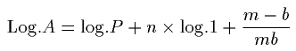
Ａは任意年数後の所要人口を示し、ｎは［＃「ｎは」は底本では「ｍは」］年数、Ｐは一定時期の現在人口、１／ｍ［＃「１／ｍ」は分数］は年死亡の人口に対する比率すなわち死亡率、１／ｂ［＃「１／ｂ」は分数］は年出生の人口に対する比率、すなわち出生率を示す。
今の場合では、 P=9,287,000; n=10; m=47; 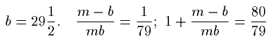
今の場合では、 P=9,287,000; n=10; m=47; 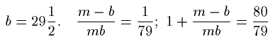
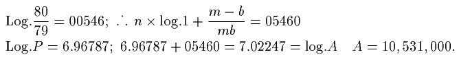
従って吾々は、前に推定した一八〇〇年ないし一八一〇年の出生及び死亡の脱漏は、真に近いと考え得よう。しかしもし、出生六分の一、埋葬一二分の一というこの脱漏が、一八〇〇年ないし一八一〇年の期間につきほとんど正しいと考え得るならば、それはおそらく一七八〇年ないし一八〇〇年の期間にも大して誤りを犯す危険なしに当てはめることが出来、そして出生だけに基づく結論の若干を是正するに役立ち得よう。正確な人口実測に次いでは、死亡以上に出ずる出生の超過による計算が最も信頼し得るものである。実際記録簿が一切の出生及び死亡を含み、そして既知の人口から出発する手段があるならば、それは明かに現実の人口実測と同じことである。そして記録簿の脱漏と国外の死亡についてほとんど正確な斟酌をする場合には、出生の総人口に対する比率――これがかかる頻々たる変化を蒙りやすいことは既にわかっているのであるが――によるよりも、このようにした方が、現実の人口実測に遥かにより近い計算が得られるであろう。
一七八〇年ないし一八〇〇年の二〇年間に報告された出生の総数は、五、〇一四、八九九であり、埋葬の総数は、三、八四〇、四五五である。前者に六分の一、後者に一二分の一を加えれば、両者は五、八五〇、七一五及び四、一六〇、四九二となる。そして前者から後者を減ずれば、死亡以上に出ずる出生の超過は一、六九〇、二二三となるであろう。この超過を、出生から計算したリックマン氏の表の中の、七、九五三、〇〇〇という一七八〇年の人口に加えると、結果は九、六四三、〇〇〇となるが、これは国外の死亡につき適当の斟酌をしても、なお前に修正した一八〇〇年の人口より遥かに以上であり、また人口実測の結果として得られた表の中の数よりも更にいっそう以上である。
しかし今述べたばかりのより安全な根拠から出発し、そして一八〇〇年の修正人口を確証されたものと考えて、それから、この場合約一二四、〇〇〇と思われる国外死亡者の蓋然数を引いた二十年間の出生超過を、差引くと、一七八〇年の人口は七、九五三、〇〇〇でなく七、七二一、〇〇〇となる。その数の方が真に近いと信ずべき十分の理由がある１）［＃「１）」は縦中横、行右小書き］。しかも、啻に一七八〇年のみならず、更にその間の多くの年においても、出生による見積りからすれば、人口実測を行えばわかる本当の数よりも、人口はより大となり増加はより不規則になるのである。これは、出生の人口に対する比率が変化するものであり、そして一七八〇年及びその後の二十年間の他の時期に、一八〇〇年よりも大であったことから、生じたものである。
１） 一七八〇年と一七八五年との人口の差が極めて小さく表に出ているが、この事実はこれら二つの見積りの一方が誤っていることをはっきり意味するように思われる。
例えば一七九五年には、人口は九、〇五五、〇〇〇とされ、一八〇〇年には九、一六八、〇〇〇とされている１）［＃「１）」は縦中横、行右小書き］。しかしもし吾々が、第一の数を正しいと仮定し、その五年間の死亡以上に出ずる出生の超過を加えるならば、記録簿の脱漏を少しも斟酌しなくとも、一八〇〇年の人口は九、一六八、〇〇〇ではなく、九、三九八、〇〇〇であったはずであることを見出す。またはもし吾々が一、八〇〇年につき報告された数を正しいとすれば、それから、それに先立つ五箇年間の出生の超過を差引いて、一七九五年の人口は九、〇五五、〇〇〇ではなく、八、八二五、〇〇〇であったはずであることが、わかるであろう。だから出生による一七九五年の見積りは正確であり得ないということになる。
１） Population Abstracts, 1811. Preliminary View, p. xxv.
この期間の人口を知るためには、最も安全な方法は、上述の修正を記録簿に当てはめ、また国外死亡として男子出生の四・四分の一を斟酌して、残りの出生超過を一八〇〇年の修正報告数から差引くことである。この場合において、結果は、一七九五年の人口、八、八三一、〇八六となるが、これはこの五年間の増加が、出生から計算した表にあるわずか一一三、〇〇〇ではなく、四五五、九一四であることを、意味するものである。もし吾々が進んで同様な方法で一七九〇年ないし一七九五年の期間を見るならば、死亡以上に出ずる出生の超過（前述の修正を行い、かつ国外死亡として男子出生の四・四分の一を斟酌した上で）は、四一五、六六九となるであろうが、これを上記の如くして測定した一七九五年の人口、八、八三一、〇八六から差引けば、一七九〇年の人口として八、四一五、四一七が残る。
同一の原則によって、一七八五年ないし一七九〇年の中間期における死亡以上に出ずる出生の超過は四一六、七七六となるであろう。従って、一七八五年の人口は七、九九八、六四一であろう。同様にして、一七八〇年ないし一七八五年の中間期の死亡以上に出ずる出生の超過は二七七、五四四であり、一七八〇年の人口は七、七二一、〇九七であろう。
従って、一七八〇年ないし一八一〇年の人口に関する二種の表は次の如くなるであろう、――
［＃ここから表］
一八一一年刊行人口摘要緒論にある、出生のみから計算した表
一七八〇年の人口／七、九五三、〇〇〇
一七八五年／八、〇一六、〇〇〇
一七九〇年／八、六七五、〇〇〇
一七九五年／九、〇五五、〇〇〇
一八〇〇年／九、一八六、〇〇〇
一八〇五年／九、八二八、〇〇〇
一八一〇年／一〇、四八八、〇〇〇
［＃ここで表終わり］
［＃ここから表］
記録簿の脱漏及び国外死亡を斟酌して、死亡以上に出ずる出生の超過から計算した表
一七八〇年／七、七二一、〇〇〇
一七八五年／七、九九八、〇〇〇
一七九〇年／八、四一五、〇〇〇
一七九五年／八、八三一、〇〇〇
一八〇〇年／九、二八七、〇〇〇
一八〇五年／九、八三七、〇〇〇
一八一〇年／一〇、四八八、〇〇〇
［＃ここで表終わり］
第一表すなわち出生のみから計算した表では、各五年ごとの人口増加は次の通りである、――
［＃ここから表］
一七八〇年ないし一七八五年／六三、〇〇〇
一七八五年同 一七九〇年／六五九、〇〇〇
一七九〇年同 一七九五年／三八〇、〇〇〇
一七九五年同 一八〇〇年／一一三、〇〇〇
一八〇〇年同 一八〇五年／六六〇、〇〇〇
一八〇五年同 一八一〇年／六六〇、〇〇〇
［＃ここで表終わり］
第二表すなわち前記の修正を加えた後、死亡以上に出ずる出生の超過から計算した表は、各五年ごとの人口増加は次の如くなろう、――
［＃ここから表］
一七八〇年ないし一七八五年／二七七、〇〇〇
一七八五年同 一七九〇年／四一七、〇〇〇
一七九〇年同 一七九五年／四一六、〇〇〇
一七九五年同 一八〇〇年／四五六、〇〇〇
一八〇〇年同 一八〇五年／五五〇、〇〇〇
一八〇五年同 一八一〇年／六五一、〇〇〇
［＃ここで表終わり］
人口の増加は前表によるよりも後表による方が遥かに自然的であり蓋然的であるように思われる。
一七八〇年ないし一七八五年の期間に、人口の増加がわずかに六三、〇〇〇であって、その次の時期には六五九、〇〇〇であるとか、または一七九五年ないし一八〇〇年の期間にそれがわずかに一一三、〇〇〇であって、その次の時期には六六〇、〇〇〇であるとかいうのは、どの点から見てもありそうなことではない。しかし蓋然性を
これらの期間における人口の増加を、出生の死亡に対する比率及び死亡率によって測定しても、同一の結果が生ずるであろう。最初の期間には増加は前述の増加よりも遥かに大きなものとなり、他の期間には遥かに小さなものとなるであろう。
同様な観察は、旧表の他の期間のあるもの、なかんずく前述の一七九五年ないし一八〇〇年の期間についても、同じことが云えよう。
他方において、もし各期間における出生の死亡に対する比率が、かなり正確に測定され、そして中位人口と比較されるならば、この基準によって決定される人口増加率は、あらゆる期間において、前記の修正を施した死亡以上に出ずる出生の超過によって決定される増加率と、ほとんど一致するであろう。そして前記の修正がある程度不正確であるとしても、――これはありそうなことだが――何らかのかかる不正確から起る誤りは、旧表の基礎となっている仮定、すなわち出生は人口に対し常に同一の比率を保つという仮定から、必然的に生じなければならぬ誤りより、遥かに小なるべき傾向があるということも、更に注意に価することである。
もちろん私は、よりよい資料が見つからぬ場合には、このようにして行われる人口の推算に決して反対しようというつもりはない。しかし現在の場合では、埋葬と洗礼の記録簿が一七八〇年の古きまでも毎年与えられており、そしてこれらの記録簿は、最近の人口実測という確固たる立脚点があるのであるから、一七八〇年以来の人口に対してそれ以前よりも正確な表を与え、同時に、出生のみによる推算は、なかんずく特定期間の人口増加を見るためには、不正確であることを証示する、手段を提供しているのである。大きな国の総人口を見積るに当っては、二、三十万は大したことではない。しかし五年間または十年間の増加率を見積るに当っては、この程度の誤りは全く致命的である。適宜に選んだ五箇年間の増加率について結論を作るに当っては、思うに、問題の期間の人口増加が六三、〇〇〇であるかそれとも二七七、〇〇〇であるか、一一三、〇〇〇［＃「一一三、〇〇〇」は底本では「一一五、〇〇〇」］であるか、それとも四五六、〇〇〇であるか、六五九、〇〇〇であるか、それとも四一七、〇〇〇であるかは、本質的差異をなすものであることが、認められるであろう。
この世紀の一七八〇年に先立つ期間に関しては、洗礼及び埋葬の記録簿は各年ごとに報告されていないから同一の修正を施すことは出来ない。そして記録簿が互にある隔たりをもつ別々の年についてしか与えられていない、この期間以前の出生から計算した表には、啻に五箇年を平均した出生の人口に対する比率に変化があるという事情からばかりではなく、またかく選定された箇々の年がかなり正確にかかる平均を表わさないという事情によっても、非常に大きな誤りが生じ得ることは明かである１）［＃「１）」は縦中横、行右小書き］。『人口摘要』の『緒論２）［＃「２）」は縦中横、行右小書き］』にある洗礼、埋葬、結婚に関する貴重な表をちょっと見ただけでも、箇々の年の出生、死亡、結婚から下された人口に関する推論が、いかにほとんど信頼すべからざるかがわかるであろう。もし例えば吾々が、一八〇〇、一八〇一両年の人口と、次の一八〇二、一八〇三両年の人口を、結婚の人口に対する比率は常に同一と仮定して、この比率から測定するとすれば、初めの二箇年の人口が九百万ならばこれに続く二箇年の人口は千二百万よりはるか以上となることとなり、かくて短期間に、三百万以上、すなわち三分の一以上増加したように見えるであろう。また一八〇〇、一八〇一両年の出生を一八〇三、一八〇四両年に比較して行われる測定の結果も、これと多くは異らないであろう。少くともかかる測定は、三年間に二百六十万の増加を示すであろう。
１） 一七六〇年ないし一七七〇年に極めて急速な人口増加のあったことを意味するこの両年の表の数は、これらの原因のいずれかによって、相互に適当な比例を保っていないことを、私は疑わない。おそらく一七七〇年の数が過大に失するのであろう。
２） P. 20.
読者は出生、死亡、結婚、が総人口に対して小さな比率しかもたず、従って一時的原因から起り得るこれらの何らかの変動は、おそらく、人口総数の同様の変動を伴い得ないことを考えるならば、かかる結果を見ても少しも驚かないであろう。ただ一年間に出生が三分の一増加するということはあり得ようが、それは人口を三分の一増加せしめることはなく、おそらくわずかに十八分の一か十九分の一増加せしめるに過ぎないであろう。２） P. 20.
従って、前章において述べた如くに、この世紀の一七八〇年に先立つ時期の、十年おきの出生のみの報告から計算された人口の表は、よりよい資料がないので極めて概略に行った推算であると考え得るに過ぎず、特定の時期の比較上の増加率を知るためにはほとんど全く信をおき得ないものである、ということになる。
一八一〇年の人口を、本章で前述した一八〇〇年の［＃「一八〇〇年の」は底本では「一八一〇年の」］修正人口と比較すると、これは、両年の人口実測の差よりも緩慢な増加を示している。そして更に、四七対二九・二分の一という出生の死亡に対する推定比率は実際以上であるよりもむしろ以下であるように思われたのであった。しかもこの比率は、富みかつ人口稠密な国土としては全く異常なものである。それは一国の人口に毎年七九分の一を加え、そしてそれが継続するならば、本篇第十一章の第二表によれば、五十五年以下にして人口を倍加するであろう。
これは事の性質上永続的たり得ない倍加率である。それは、農業と工業との両者における、労働に対する需要の偉大なる増加並びに生産力の偉大なる増加に刺戟されて、生じたものである。これらは、人口の急速な増加に対し最も効果的な奨励をなす要素である。ここに生じた事実は、人口原理の適切な例証であり、そして大都市や工業や人民の漸次に獲得する富裕な贅沢な習慣にもかかわらず、もし一国の資源が急速な増加を許すならば、またもしこれらの資源が労働に対する需要の逓増をもたらす如くに好都合に分配されるならば、人口は必ずやそれと歩調を合わせて進むべきことの、証拠なのである。
一八二五年（訳註――本章の以下の部分は第六版のみに現わる。）
一八一七年に本書の最終版を刊行して後、第三囘の人口調査が行われたが、その結果は著しく吾々の注意に価するものである。
一八二一年の実測、及びリックマン氏の公表報告の緒論にある一八一一年及び一八〇一年の修正報告によれば、大ブリテンの人口は、一八〇一年には一〇、九四二、六四六であり、一八一一年には一二、五九六、八〇三であり、一八二一年には一四、三九一、六三一であった。
最初に述べたようにして得られ、一八一一年に陸海軍に編入された多数の男子を含む、これらの数字は、一八〇〇年ないし一八一一年に一五パアセント、一八一〇年ないし一八二一年にはわずかに一四・四分の一パアセントを示している１）［＃「１）」は縦中横、行右小書き］。しかし陸海軍及び商業に加えられた六四〇、〇〇〇の男子のうち、三分の一以上は
１） Preliminary Observations, p. viii.
２） Ibid.
２） Ibid.
上記の数と増加率とは、リックマン氏が、『人口摘要』の『緒論』の中で与えているものであることは、前に述べたところである。しかし本章の前の方で、私は、第一囘の実測は一八一一年のものほど正確ではないということの、私には十分な根拠と思われるところを述べたが、一八一一年の実測もおそらく一八二一年のものほどは正確でないらしい。そうすると二つの期間の増加率は上記のようには大きくはないことになろうが、しかしそれでもなおそれは極めて異常であることがわかるであろう。
前に推定した見積りによれば、一八〇一年の実測で得られた人口は、約一一九、〇〇〇だけ実際より少かった。そしてもしこの理由によって、一八〇一年の人口調査の女子人口が六〇、〇〇〇だけ脱漏しているとし、また一八一一年のそれが三〇、〇〇〇だけ脱漏していると仮定すれば、各期間における
これは、この国の領土と比較してのその実際の人口と、その大都市や工場が多いこととを考えれば、疑いもなく極めて異常な倍加率である。しかしながらそれは、『人口摘要』の『緒論』に述べられているものよりは低い。しかもこの低い増加率によってさえ、教区記録簿における脱漏は、ことに出生に関しては、最近は減少するよりはむしろ増加していると考える必要がある。そしてこれはリックマン氏の『緒論』における言明が裏書きしている。彼は曰く、『記録洩れの洗礼及び埋葬に関する問題は、一八一一年の脱漏程度においてほとんど四対一の差を示し、記録洩れの洗礼の年平均数は（数州の終末に述べた如く）一四、八六〇であり、埋葬は（ロンドンを除き）三、八九九であった。現在は脱漏程度において五対一であり、記録洩れの洗礼の年平均数は（数州の終末に述べた如く）二三、〇六六であり、埋葬は（ロンドンを除き）四、六五七である。』更に続けて曰く、『最も人口稠密な地方、特に住民の多くが非国教徒であるところでは、牧師が通常見積りをあえてするのを避けるので、これもまた記録洩れの洗礼の全量または比率を現わしていない。』これに反し、埋葬地は目に見えるものであり、そしてこれに関係するものの中でも牧師は通常埋葬数（多かれ少かれ正確な）内容を知ることが出来るのである。
かかる理由から、非国教徒の数の増加その他の原因によって、出生記録簿の脱漏は最近はおそらく減少よりはむしろ増加してきているらしい。しかし一八一二年の条令以来、出生の記録簿は前よりも注意深く記録されていると考えられている。そして、一八二〇年をもって終る一〇箇年間では、出生の結婚に対する比率がより大であることは、確実である、――もっとも出生及び結婚の総人口に対する比率は共に、一八〇〇年におけるよりも、また一八一〇年をもって終る十箇年間におけるよりも、小であるけれども。かかる事情の下においては、出生及び埋葬の脱漏の蓋然数について何らかの新しい結論を引出す前に、より以上の文献が現われるのを待った方がよいかもしれぬ。確実と考え得ることは、出生を六分の一、埋葬を十二分の一だけ加え、国外死亡者につき適宜斟酌すれば、これはリックマン氏の数字による一七八一年ないし一八〇一年の二十箇年間の人口増加を説明して余りあるものであるけれども、それは実測による一八〇一年ないし一八二一年の二〇箇年間の人口増加を説明するには足りない、ということこれである。
人口実測の結果は、なかんずく最近二囘のそれは、各所に住所をもつものが一囘以上数えられたので、実数以下よりもおそらく以上になっていると推察されている、と私は聞いた。この推定は、外見上は人口が異常な速度で増加したにもかかわらず、出生及び結婚の総人口に対する比率が減少した事実を説明するものと、認めなければならぬ。しかし同様な比率の減少は、死亡率の減少によっても生ずるであろう。そして死亡率の減少は他の理由から満足に確証されたのであるから、それは立派に右の現象の大部分を説明するであろう。そして二重計算によるものと正当に考え得るものがあるとしても、それはほんのわずかな数であるはずである。
出生及び埋葬の両者に大きな脱漏があり、それは後者より前者の方が大であることは、全く疑い得ない。報告の作成に関係したあらゆる僧侶の証言は、リックマン氏によれば、この点で一致している。そしてもし吾々が、一八〇一年ないし一八二一年の脱漏の比率をもって、一七八一年ないし一八〇一年について仮定したと同一であると仮定し、この前者の人口実測における二重記入の数はおそらく脱漏の数によって相殺されるものと推定すれば、国外死亡を除外した出生の超過だけで、人口は、一八二一年の人口実測よりも一八四、四〇四だけ多くなり、また国外死亡を酌量してこれを加えると（それは、この場合、男子の出生の超過を男女の死亡に比較したところから見ると、一二八、六五一であることがわかる）、三一三、〇五五だけ多くなることがわかるであろう。
過去二囘の報告において、脱漏によって相殺されない二重記入がかかる数に上ると仮定すれば、これら人口実測は更に極めて驚くべき人口増加を示すであろう。一八〇一年ないし一八一一年の期間の増加率はほとんど一三パアセント（一二・八八）となり、これは約五七年にして人口を倍加するであろう。そして一八一一年ないし一八二一年の期間では増加率はほとんど全く一五パアセント（一四・九五）となり、これは人口を五〇年にして倍加するであろう。
吾々は現在のところ人口実測の誤りが不足にあるか過大にあるかがわからないのであるから、私は、本章の前の方で与えた一七八一年ないし一八一一年の修正人口表を改めた方がよいとは考えたことはない。それは、出生のみによる推算よりも遥かに安全な原理に基づいているのであるから、従ってそれはとにかく『緒論』において与えられているよりも正確な人口増加を示すものでなければならぬ。
実際人口報告を考察してみればみるほど、出生率は常にほとんど同一であろうという仮定に基づく過去の人口の推算が、すべていよいよ不確実であることがわかる。もし一八二一年以後の人口を、リックマン氏がその前年に行ったと同一の方法で見積るとすれば、一八二一年の人口は人口実測の示す如き一二、二一八、五〇〇ではなく、わずかに一一、六二五、三三四に過ぎないこととなり、換言すれば五九三、一六六すなわちほとんど六〇〇、〇〇〇だけ一八二一年の人口実測よりも少いことが、わかるであろう。そしてその理由は、リックマン氏の提唱する方法によりかつ脱漏を斟酌しないで推定したところの出生の人口に対する比率が、一八二一年にはわずかに一対三六・五八に過ぎず、一八〇一年には一対三四・八にも上ると、いう事実にあるのである。
人口実測が正確であると仮定すれば、出生率の変動は、（脱漏を斟酌せず、そして各期末の人口をそれに先立つ五箇年間の平均出生と比較すれば、）一八〇一年は一対三四・八、一八一一年は一対三五・三、一八二一年は一対三六・五八となるであろう。
結婚の人口に対する比率については、同様の、またはむしろより大なる変動が生ずるのが見られるであろう。
一八〇一年にはこの比率は一対一二二・二であり、一八一一年には一対一二六・六、一八二一年には一対一三一・一である。そしてもし、一八二〇年をもって終る二〇年間に、脱漏が極めて少いと思われる結婚が、人口に対して、一八〇一年と同一の比率を採っているものと仮定して、人口を結婚によって推定するならば、一八二一年の人口は、一二、二一八、五〇〇ではなく、わずかに一一、三七七、五四八となり、換言すれば一八二一年の人口実測よりも八四〇、九五二だけ少くなるであろう。
しからば、もし吾々がこの計算に幾らかでも信をおけるとすれば１）［＃「１）」は縦中横、行右小書き］、出生、死亡、または結婚の比率に基づく過去の人口の推算には少しも信をおきえない。吾々が人口実測をやってみた二〇年間にこれらの比率にかくも本質的な変動を惹起したと同一の原因は、その以前にも同じ程度に働いたことであろう。そして、一国の健康の増進が、啻に死亡率を低減せしめるのみならず、また出生及び結婚の比率をも低減せしめるものであることは、一般にその真なることがわかるであろう。
１） 愛蘭 及び蘇格蘭 から英蘭 への移住は、ある程度、人口実測の結果が死亡以上に出ずる出生の超過から得られる数字を超過することの、説明となるであろう。
［＃改ページ］第十章
たいていの
１） Statistical Account of Scotland, vol. i. p. 167.
しかしながら、正確と考えられている記録簿から見ると、地方教区では死亡率は低く、四五分の一、五〇分の一及び五五分の一という比率ですら珍らしくないことがわかる。ウィルキイ氏によるケトル教区の死亡表から計算した生命蓋然率の表によれば、生児の平均寿命は四六・六年１）［＃「１）」は縦中横、行右小書き］という高率であり、そして第一年に死亡するものの比率はわずかに十分の一に過ぎない。ウィルキイ氏は更に附言して、第一巻に発表された三六教区の報告から見ると、生児の平均寿命は四〇・三年であることがわかる、と云っている。しかし、ウェブスタ博士の調査により
１） Id. vol. ii. p. 407.
２） Id. vol. xxi. p. 383.
２） Id. vol. xxi. p. 383.
１） Population Abstracts, Parish Registers, p. 459.
２） Id. p. 458.
３） Statistical Account of Scotland, vol. xxi. p. 383. ここに記した英蘭 との比較は、第一囘人口実測の当時に関するものである。一八〇〇年以来蘇格蘭 の死亡率が低減し出生の死亡に対する比率が増大したことは、ほとんど疑いがない。（訳註――この註の文章の部分すなわち『ここに記した』云々以下は、第六版より現わる。）
結婚については、推説を下すことは更にいっそう困難であろう。それは極めて不規則に記録されているので、従って、『人口摘要』にはそれについて何の報告も載っていない。私は、『統計報告』Statistical Account からすれば、２） Id. p. 458.
３） Statistical Account of Scotland, vol. xxi. p. 383. ここに記した
統計報告を概観すると、
この改善の一部分は、おそらく、予防的妨げの増加に帰せらるべきであろう。若干の教区では、晩婚の習慣が指摘されており、そしてこの習慣が指摘されていない多くの場所でも、出生や結婚の比率、その他の事情から、それが行われているものと推論して差支えなかろう。エルジン教区に関する報告の筆者は１）［＃「１）」は縦中横、行右小書き］、
１） Vol. v. p. 1.
より少い人手しか必要としない牧畜法や改良農法の採用によって、人口がむしろ減少した地方で、こうした結果は主として起ったのである。そして、前世紀の終りまたは今世紀の始め以来の人口の減少が、その各時期における出生率で推算されているのは、特にスイスやフランスについて注意した誤りに陥ったものであり、その結果として人口の相違は実際よりも大きくなったことを、私はほとんど疑わないのである１）［＃「１）」は縦中横、行右小書き］。
１） ある筆者はこの事情に着目し、そして、従前は出生は総人口に対して、現在よりも大きな比率を保っていたように思われる、と述べている。彼は曰う、おそらくより多くのものが生れたし、またより大なる死亡率があったのであろう、と。Parish of Montquitter, vol. vi. p. 121.
この問題について私が種々の報告からして下すべき一般的推論は、結婚が以前よりも晩婚になったということである。しかし、若干の明白な例外もある。工業が導入された教区では、子供が六、七歳になればすぐ職業が得られるので、早婚の習慣が当然に伴生する。そしてこの工業が引続き繁栄し増大する間は、それから生ずる害悪はそれほどは目につかない。もっとも人道の士たるものは、それがそれほど目につかない理由の一つは、かかる職業につく子供の間に生ずる不自然な死亡率によって新家族を容れる余地が作り出されることにあることを、嘆息しつつ告白せざるを得ないのである。しかしながら、
１） Vol. i. p. 385.
シェットランドのブレッセイ・ビュラ及びクウォルフに関する報告には１）［＃「１）」は縦中横、行右小書き］、農場は極めて小さく、また鋤を有つものはほとんどない、と書いてある。土地保有者の目的は、自分の土地に出来るだけ多数の漁夫をもつことであり、この事実は農業の改良に対する大きな障害である。彼らの漁撈はその主人のためのものであり、主人は彼らに全く不十分な手間賃を支払うか、または魚を低率で買取るかである。この筆者は曰く、『たいていの地方では、人口増加は利益と考えられているが、これは正当である。しかしながらシェットランドの現状では反対である。農場は細分されている。若者は何らの資財もなく結婚を奨励されている。その結果は貧困と窮迫である。現在これら諸島には、それが適当に養い得る人数の二倍がいると信ぜられている。』
１） Vol. x. p. 194.
ファイフ郡のアウホテルデランに関する報告の筆者１）［＃「１）」は縦中横、行右小書き］は、労働者の食物は乏しくて不断の苛酷な労働がその体躯に与える結果に抗することが出来ず、そのためその身体は自然の指示する時期以前に衰耗してしまう、と云い、更に附言して曰く、『人口が引続き自発的に、結婚によってかかる辛い境遇に入り込むということは、両性の結合と独立の愛とが、いかに人類天性の原則であるかを示すものである、』と。この言葉の中で、独立の愛というのは子孫の愛と変えた方がおそらく適当であろう。
１） Vol. i. p. 449.
ジュラ島は１）［＃「１）」は縦中横、行右小書き］、不断の数多くの移住にもかかわらず、絶対的に住民が過剰であるように思われる。時には一つの農場に五六十人もいる。筆者は、かかる住民の大群は、工業やその他の産業が知られていない場所では、地主に対する極めて大きな負荷であり、国家にとり無用のものである、と云っている。
１） Vol. xii. p. 317.
もう一人の筆者は１）［＃「１）」は縦中横、行右小書き］、一七七〇年のアメリカ行大移民と、最近の戦争中の多数の若者の喪失にもかかわらず、人口が急速に増加したことに、驚いている。彼はその適当な原因を挙げるのは困難であると考え、そして、もし人口がこのように増加し続けるならば、ある仕事が人々に見出されぬ限り、この地方はまもなく彼らを養い得なくなるであろう、と述べている。またカランダア教区に関する報告では２）［＃「２）」は縦中横、行右小書き］、筆者は、この地の村々や、同様の状態にある他の村々は、裸体の飢に瀕している多数の人民で充ち満ちており、彼らは家とパンを求めて続々と溢れ出ている、と云い、また、ある町または村の人口がその住民の産業を超過するに至る時には、常に、その瞬間からその土地は衰弱しなければならぬ、と云っている。
１） Parish of Lochalsh, County of Ross, vol. xi. p. 422.
２） Vol. xi. p. 574.
急速な人口増加の傾向を極めてよく示す一例が、エルジン郡のデュウシル教区１）［＃「１）」は縦中横、行右小書き］の記録簿に表われている。そして、重複の誤りは脱漏の誤りよりもおそらく少いのであるから、これは注意に価するように思われる。年出生の総人口に対する比率は一対一二であり、結婚のそれは一対五五、死亡のそれは同率である。出生の死亡に対する比率は七〇対一五、すなわち四・三分の二対一である。死亡の誤りは脱漏の側にあるように思われるから、吾々は死亡数に関して若干の不正確を想定してよかろうが、しかし総人口の三分の一に上る極めて異常な年出生率はそれほど誤っているとは思えず、そしてこの教区に関する他の事情は、この記述を確証する傾向がある。八三〇の人口のうちわずかに独身者三人に過ぎず、そして一結婚当り七人の子供が生れている。しかもそれにもかかわらず、人口は一七四五年以来大いに減少していると想像されている。従ってかかる過度の人口増加の傾向は、過度の移住の傾向によって惹起されたものであることがわかる。筆者は非常に大きな移住のことを述べており、相当程度の生活愉楽品を享受している全種族が、単なる出来心や、また自己の主人となり自作人となるという空想から、２） Vol. xi. p. 574.
１） Vol. iv. p. 308.
明かに移住の習慣により惹起されたかかる異常な出生率は、単にその人民の一部を除去するだけで一国の人口を減少することの極度に困難なるを証示するものである。だがただその産業を、またその生活の源泉を除去すれば、その結果は直ちに現われるのである。この教区では、一結婚当りの平均出生数は、年出生の年結婚に対する比率からするとわずかに四・三分の二人に過ぎないように見えるであろうが、実は七人であると云われていることが、観られるであろう。この差異は他の多くの教区にも生じているのであり、吾々はこのことからして、これらの報告の筆者は、極めて適切にも、単なる年出生の結婚に対する未訂正の比率に依拠するというのとは違う他の計算方法を採用したのであり、そして彼らの与える結果はおそらく、個人的な調査や記録簿の研究を行って、一人の女が結婚中に産んだ子供の数に基づいて与えられたのだと、結論してよいであろう。
１） Vol. vii. p. 194.
実測によって、一結婚当り約三人の子供があり、すなわち一家に五人またはわずか四人半しかいない――これは極めて普通の比率であるが――ことがわかった場合に、吾々は、一結婚当りの平均出生数は三人以上に多く出ずるものでない、と推論してはならない。吾々は、本年の一切の結婚または世帯にもちろん子供がなく、前年の一切のそれにはただ一人、その前年の一切のそれには二人も子供があろうとは期待し難く、そして四年前の一切のそれに至っては、通常の事態においては、確かに三人以下しかないことを、想起しなければならない。五人の子供の
１） 平均して、同一家族内の子供の年齢の差は、約二歳と計算されている。
２） Vol. iv. p. 308.
〔訳註〕第二版ではこの次に一パラグラフがあったが、これは第三版に至って削除された。それは次の如くである、――
『私がこの事情に着目したのは、結婚は一般に、通常想像されているよりも多産的であるということを証明するために、提出された証拠に対し、かかる調査の結果からおそらく提出されると思われる反対論を、避けんがためである。一結婚当りの子供の平均数を六人、七人、及び七人半だとする蘇格蘭 の多くの教区の報告は、この仮定を極めて力強く確証する傾向がある。そしてこの同じ教区において、年出生の年結婚に対する比率は滅多に三・五、四、または四・五対一以上ではないのであるから、それは同時に結婚の出産性をこのようにして測定する方法の誤りを証明するものである。筆者がこの方法を採用した教区においては、彼らは一般に、当然予期される如くに、三人、三人半、四人、四人半をもって、一結婚当りの子供の平均数としているのである。』
２） Vol. iv. p. 308.
〔訳註〕第二版ではこの次に一パラグラフがあったが、これは第三版に至って削除された。それは次の如くである、――
『私がこの事情に着目したのは、結婚は一般に、通常想像されているよりも多産的であるということを証明するために、提出された証拠に対し、かかる調査の結果からおそらく提出されると思われる反対論を、避けんがためである。一結婚当りの子供の平均数を六人、七人、及び七人半だとする
１） 最近議会において、蘇格蘭 の貧民法は、英蘭 のそれとは極めて異って解釈され実施されているが、本質的にはそれと異るものではない、と述べられた。しかし、この問題に関する法律がどうあろうとも、実際は一般にここに記した通りである。そして現在の問題に関係があるのは実際の点だけである。（訳註――この註は第三版に現われ、そこでは前半は、『大蔵省のロウズ氏は、貧民の問題に関する最近のパンフレットの中で、この記述を論難している。しかし、この問題に………』となっている。本文の形になったのは第四版からである。）
その結果として、一般人は、こんな乏しい当てにならぬ救済を乞う必要を避けるために非常な努力をしている。報告の多くには、彼らは疾病や老齢に備えて蓄えをしないことは滅多になく、一般に、教区の救済を受けなければならぬ恐れのあるものの、大きくなった子供や親戚は、普く一家の恥辱と考えられているかかる堕落を出来るなら防止しようと、進んで助力をするのである。各種教区の報告の筆者はしばしば、極めて強い言葉で
１） Vol. vii. p. 74.
ケエラヴェロックに関する報告には１）［＃「１）」は縦中横、行右小書き］、貧民はいかに給養せらるべきかという問題に答えて、極めて適切に次の如く述べてある。『窮迫と貧困とはそれを救済するために作られた資金に比例して増大する。慈善の方策は、それを分配すべき必要が生ずるまでは、眼に見えぬようにしておくべきである。
１） Vol. vi. p. 21.
以上の如きものが大体において
１） Parishes of Forbes and Kearn, County of Aberdeen, vol. xi. p. 189.
広く拡っているリウマチスや、一般人の間に頻々とある肺病も、著しい程度にこれら諸原因に帰せられている。どこでも特殊の事情により、貧民の境遇が悪化した時には、常に右の疾病特に後者の流行が激しくなるのが、見られている。軽い神経性熱病や、その他もっと激しい致命的なものが、しばしば流行し、そして時に多数の生命を奪い去る。しかし、従前
１） Parish of Duthil, vol. iv. p. 308.
２） Vol. vi. p. 121.
〔訳註〕これらの『十六世紀』とあるのは、おそらくいずれも『十七世紀』の誤りであろう。
これと同様な多くの叙述は、『統計報告』の各所に現われているが、欠乏により時々生ずる惨情の性質と程度を示すには以上で十分であろう。２） Vol. vi. p. 121.
〔訳註〕これらの『十六世紀』とあるのは、おそらくいずれも『十七世紀』の誤りであろう。
一七八三年にはハイランド地方のある地方に人口減退が起り、そしてこれが、この地方で住民の数がウェブスタ博士の調査以後減少している理由であると云われている。たいていの小農業者は一般に、当然予期される如く、凶作のために絶対的に没落してしまった。ハイランド地方のこの種の人々は、当てにならぬ生計の資を求めて、普通労働者としてロウランド地方に移住せざるを得なかった１）［＃「１）」は縦中横、行右小書き］。ある教区では、この前の調査の時にも、この凶年時における農業者没落の結果は、彼らの窮迫した状態と、その必然的結果たる一般民の貧困と窮乏の増大の裡に、なお看取し得るところであった。
１） Parish of Kincardine, County of Ross, vol. viii. p. 505.
バンフ郡グレインジ教区に関する報告１）［＃「１）」は縦中横、行右小書き］には、一七八三年には緑肥による一切の改良は中止され、農業者は穀物を栽培すること以外には何も考えなかった、とある。借地人は大部分没落した。これより以前には肺病はその後ほどは多くなかった。これは、一七八三年の凶作と粗悪な食物に、並びに一七八二年及び一七八七年の長期の不作に帰して間違いないのであり、――この両年とも労働者は収穫の続く三箇月の間ひどい寒さと湿気とに曝された――しかし主としては、下層階級の生活様式に生じた変化に帰すべきなのである。従来は一家の主人は誰でも弱麦酒の一杯も飲めたし、また時々は自分のささやかな畜群の中から羊の一匹も殺すことは出来たが、今では事情は一変している。貧民の間にしばしば見られる生活必需品の欠乏、彼らの湿っぽくて臭い家屋、及び中流階級の間の憂鬱は、この教区に疾病と死亡が多い主たる原因であるように思われる。若い者は肺病で、年寄は水腫と神経性熱病で、斃れているのである。
１） Vol. ix. p. 550.
この教区の状態は、他に似ているものもあるけれども、吾々は、この教区の疾病は、一七八三年の不作と粗食の結果として増加したと云われていることを、述べておこう。同一の事情は他の多くの教区でも指摘されており、そして、絶対的の飢饉で死ぬものはほとんどないけれども、致命的な疾病がほとんど常に伴生するものである、と云われている。
ある教区では、出生及び結婚の数は、年の豊凶によって影響されるとも云われている。
ロス郡のディングウォール教区１）［＃「１）」は縦中横、行右小書き］では、一七八三年の不作後は、出生は平均より一六少く、最近の最低数より一四少かった。一七八七年は豊年であった。そして翌年には出生が同様の比率で増加し、そして平均以上一七であり、他の年の最高数以上一一であった。
１） Vol. iii. p. 1.
オークネイのダンロスネスに関する報告１）［＃「１）」は縦中横、行右小書き］では、筆者は、年結婚数は季節に依存すること大であると云っている。豊年にはそれは三〇またはそれ以上に上るが、しかし不作の場合にはその半数にも達しないであろう。
１） Vol. vii. p. 391.
一七五五年におけるウェブスタ博士の調査の時以来の
１） 一八〇〇年の人口実測の報告によれば、蘇格蘭 の総人口は約一、五九〇、〇〇〇であり、従ってこの時までの増加は三二〇、〇〇〇以上であった。一八一〇年には人口は一、八〇五、六八八であり、一八二〇年には二、九〇三、四五六であった。（訳註――この註は第五版及び第六版において訂正加筆さる。）
〔訳註〕第二版においてはこの次に一パラグラフあったが第三版以後では削除された。それは次の如くである、――
『以上の概観において、社会に広く存在していることが見られた人口に対する妨げは、明かに、道徳的抑制、罪悪、及び窮乏とすることが出来る。』
『以上の概観において、社会に広く存在していることが見られた人口に対する妨げは、明かに、道徳的抑制、罪悪、及び窮乏とすることが出来る。』
一八二五年（訳註――本章の以下の部分は第六版のみに現わる。）
最近の一八二一年の人口実測によれば、
［＃改丁］
第十一章 結婚の出産性について（訳註）
〔訳註〕本章は、第二版では、ロシアを論じた章の次の第四章となっており、主としてロシアと関係あるものであったが、第三版から書き改められて、この場所に移された。第二版の訳文は本章の終りの方に載せる。
各国の出生、死亡、及び結婚の記録簿、並びに実際人口と増加率とから、結婚の現実の出産力、及び結婚まで生存する産児の真の比率を、演繹し得ることが、極めて望ましいであろう。この問題はおそらく正確な解決を与え得ないかもしれないが、しかし吾々は、次の如き考察に留意するならば、幾分か正確な解決に近づき、そして多くの記録簿に現われている困難の若干を説明することが出来るであろう。しかしながら、たいていの国の記録簿では、出生及び死亡の脱漏の方が結婚の脱漏より多いと信ずべき理由があり、従って結婚の比率はほとんど常に過大になっているということを、前提しなければならぬ。我国で最近行われた人口実測では、結婚の記録はほとんど正確と考えて差支えないのに、出生及び死亡には非常に大きな脱漏のあることは確実に知られている。そしておそらく同様な脱漏は、程度はおそらく同一ではなかろうが、他の諸国一般にもあることであろう。
もし吾々が（訳註）人口は停止的であり、移民の出入も私生児もなく、出生、死亡、及び結婚の記録簿が正確であり、かつ引続き常に人口に対して同一の比率を採るところの、一国を、想定するならば、年出生の年結婚に対する比率は、再婚及び三婚をも含んでの各結婚当りの産児数を現わすこととなり、また再婚及び三婚について訂正を加えるならば、それはまたしばしば結婚まで生存する産児の比率をも現わすであろうが、他方年死亡率は正確に平均寿命を現わすであろう。
〔訳註〕このパラグラフを含んで以下三パラグラフは第六版のみに現わる。
しかしもし人口が増加か減少かしつつあり、また出生、死亡、結婚が同一率で増加または減少しつつあるならば、かかる運動は必然的に一切の比率を攪乱するであろうが、けだし、記録簿では時を同うする出来事も自然の順序では時を同うするものでなく、そして増加または減少がその間に起りつつあるに違いないからである。第一に、ある年の出生は、自然の順序では、時を同うする結婚から生ずるものではあり得ず、主としてそれよりも前の年の結婚から生ずるものでなければならない。
では、再婚及び三婚を含む任意に選んだ結婚の出産性を断定するために、ある国の記録簿の一定期間（例えば三〇年）を切り離し、この切り離された期間に含まれる一切の結婚によって生れた出生を、調べてみよう。この期間の初期の結婚が、この期間に含まれない結婚から生ずる多数の出生と併置され、またその終期には、この期間に含まれる結婚から生れた出生が、その次の期間の結婚と併置されることは、明かである。さて、もし吾々が前者の数を控除し、後者を加算することが出来るならば、吾々はこの期間の結婚によって生れた一切の出生を正確に知り、そしてもちろんかくの如き結婚の真の出産性を知ることが出来るであろう。もし人口が停止的であるならば、加算すべき出生数が控除すべき出生数と正確に同数であり、記録簿に見られる出生の結婚に対する比率は正確に結婚の出産性を表わすであろう。しかし人口が増加か減少かしつつあるならば、加算せらるべき数は控除せらるべき数と決して同数でなく、そして記録簿の出生の結婚に対する比率は、決して結婚の出産性を正しく表わさないであろう。人口が増加しつつある場合には、加算せらるべき数は明かに控除せらるべき数より大であり、そして云うまでもなく記録簿に現われた出生の結婚に対する比率は、常に結婚の出産性を過小に表わすであろう。また人口が減少しつつある場合には、これと反対の結果を生ずるであろう。従って問題は、出生と死亡とが同数でない場合に、いくらを加算しいくらを控除すべきか、という点に存する。
ヨオロッパにおける出生の結婚に対する平均比率は、約四対一である。例証のために、各一結婚が隔年ごとに一人の割合で四人の子供を産む、と仮定しよう１）［＃「１）」は縦中横、行右小書き］。この場合、記録簿の期間のどこから始めても、その前の八年間の結婚はわずかにその出生の半数しか産んでおらず、そして残りの半数はこの期間に含まれる結婚と併置され、従ってそれから控除しなければならぬことは明かである。同様にして、この期間の最後の八年間の結婚はその出生のわずか半数しか産んでおらず、従って他の半数が加算されなければならない。しかし任意の八年間の出生の半数は、これに続く三年四分の三の全出生とほとんど同数と考え得よう。最も急速な増加の場合には、それはむしろ次の三年半の出生を超過し、また緩慢な増加の場合には、次の四年間の出生に接近するであろう。従ってその中項は、三年四分の三と見積り得よう２）［＃「２）」は縦中横、行右小書き］。従って、この期間の最初の三年四分の三の出生を控除し、またこの期間後の三年四分の三の出生を加算するならば、吾々は、この期間に含まれるすべての結婚により生れた出生とほぼ同数の出生数を得、また云うまでもなくこれらの結婚の出産性を得ることになろう。しかしもし一国の人口が規則正しく増加しており、そして出生、死亡、結婚が引続き常に相互に、また総人口に対し、同一の比率を保っているならば、任意の期間の全出生が、一定年数後の同一の長さの他の任意の期間の全出生に対し、例えば任意の一箇年または五年平均の出生は、同年数後の一箇年または［＃「または」は底本では「は」］五年平均の出生に対し、同一の比率を採るであろう。そしてこれは結婚についても同様であろう。従って、結婚の出産性を測定するためには、吾々は、今年または五年平均の結婚を、翌年三年四分の三後の一年または五年平均の出生と、比較するだけでよいのである。
１） 蘇格蘭 の統計報告では、同一家族に属する子供の年齢の平均間隔は、約二年と計算されている。
２）英蘭 に最近生じている増加率（一八〇二年）によれば、この期間は約三年四分の三ということになるであろう。
吾々は、今の事例において、各一結婚は四人の出生を産むものと仮定した。しかしヨオロッパにおける出生の結婚に対する平均比率は四対一であり１）［＃「１）」は縦中横、行右小書き］、そしてヨオロッパの人口は現在増加していることが分っているから、結婚の出産性は四以上でなければならぬ。もし、この事情を酌量し、三年四分の三ではなく四年という間隔を採るならば、真実に遠からぬものと云い得よう。そして疑いもなく、この期間は国を異にするにつれて異るであろうけれども、しかしそれは吾々が最初想像するほど大きなものではなかろう。けだし結婚がより多産的な国では、出生は一般により短い間隔で生じ、またより多産的ならざる国ではより長い間隔を置いて生ずるものであり、従って出産性の程度が異っても、この期間は依然同一であり得ようからである２）［＃「２）」は縦中横、行右小書き］。２）
１） 前述の如くに、一切の記録簿では、出生及び死亡の脱漏が結婚のそれより多いと信ずべき理由があるならば、真の比率はもっと大であろう。（訳註――この註は第五版より現わる。ただし第六版で用語若干訂正。）
２） 人民の移住が多いところでは、計算はもちろん紊されるであろう。特に、住民が頻々と変っており、またしばしば近隣地方の人民が結婚式を挙げることのある、都市では、出生の結婚に対する比率による推論は信頼を置き得ない。
以上の観察からして、人口増加が急速であれば急速であるほど、結婚の真の出産性は、記録簿における出生の結婚に対する比率をますます超過する、ということになるであろう。２） 人民の移住が多いところでは、計算はもちろん紊されるであろう。特に、住民が頻々と変っており、またしばしば近隣地方の人民が結婚式を挙げることのある、都市では、出生の結婚に対する比率による推論は信頼を置き得ない。
ここに述べた法則は、任意に選んだ結婚の出産性を測定せんとするものである。しかしこの意味の出産性は、初婚または既婚婦人の出産性とは慎重に区別しなければならず、更に最も好適な年齢にある婦人一般の自然的出産性とはいっそう慎重に区別しなければならぬ。おそらく婦人の自然的出産性は、世界の大部分においてほとんど同一であろう。しかし結婚の出産性は、各国に特有な各種の事情、なかんずく晩婚の数によって影響を受けやすいものである。あらゆる国において、再婚及び三婚はそれだけ極めて重大な意義を有するものであり、そして平均比率に本質的な影響を与えるものである。ジュウスミルヒによれば、全ポメラニアで、一七四八年と一七五六年とを含めてその期間に、結婚したものの数は五六、九五六であり、そのうち一〇、五八六は鰥夫寡婦であった１）［＃「１）」は縦中横、行右小書き］。ブッシングによれば、プロシア及びシレジアで、一七八一年に結婚者二九、三〇八の
１） Gttliche Ordnung, vol. i. tables, p. 98.
２） Sussmilch, vol. iii. tables, p. 95.
３） フランスでは、革命前には、私生児の比率は全数の四七分の一であった。我国ではおそらくこれより低いであろう。
〔訳註〕第三―五版では、この次になお若干のパラグラフがあったが、それは第六版で削除された。それは次の如くである、――
『結婚まで生存する産児の比率を見出すためには、吾々はまず結婚から六分の一を控除し、次いでかくの如くして修正を加えた任意の年の結婚を、平均結婚年齢と平均死亡年齢の差に等しい間隔を置いている記録簿の死亡と、比較しなければならない。
『かくて例えば、もし結婚の死亡に対する比率が一対三であるならば、結婚から六分の一を控除すればこの比率は五対一八となり、そして年々結婚する初婚者の数は年死亡数に対して一〇対一八となるであろう。この場合、中位死亡年齢を中位結婚年齢より十年おそいと仮定し、この十年間に死亡が九分の一増加するとすれば、年々死亡年齢の差だけの間隔を置いた年死亡数と比較すれば、一〇対二〇となり、この事実から、産児の半数が結婚まで生存するということになろう。
『この法則の根拠は、記録簿一般に関する次の観察によって、明かとなるであろう。
『人口が停止的な国においては、同時的死亡は出生と比較すれば同数であり、云うまでもなく全産児中の死亡を表わすであろう。そして結婚は、またはもっと適切に云って、出生と死亡との両者と比較した結婚者の数は、再婚及び三婚につき適当な斟酌をすれば、結婚まで生存する産児の正しい比率を表わすであろう。しかしもし人口が増加か減少をしつつあり、また出生、死亡、結婚が同一率で増加か減少をしつつあるならば、出生と比較した死亡と、出生及び死亡に比較した結婚は、記録簿において時を同うする出来事が自然の順列においても時を同うするのでない限り、以前に表わしたものをもはや表わさないであろう。
『第一に、死亡は出生と同時的であり得ず、平均して常に平均寿命または中位死亡年齢と等しいだけの間隔を置いていなければならぬことは、明かである。従って、全出生中の死亡は、移民がない場合には、記録簿の中に存在するにもかかわらず、または存在するであろうにもかかわらず、しかも、人口が停止的な場合を除いては、出生及び死亡の同時期は決してこれを示さず、そして吾々はわずかに、もし死亡を、記録簿の出生から平均寿命に等しいだけの間隔をおいて、とるならば、死亡が出生に等しいことを見出すのを、期待し得るに過ぎない。そして実際上、出生及び死亡は、このようなとり方をすれば、常に同数であることが見出されるであろう。』
第二に、ある年の結婚はその結婚を行うものの出生とは決して時を同うすることは出来ず、常に平均結婚年齢に等しいだけの間隔を置いていなければならぬことは、明かである。もし人口が増加しつつあるならば、今年の結婚は、今年の出生よりも少数の出生により行われるものであり、そして云うまでもなく、時を同うする出生と比較しての結婚は、常に、産児のttliche Ordnung, vol. i. tables, p. 98.２） Sussmilch, vol. iii. tables, p. 95.
３） フランスでは、革命前には、私生児の比率は全数の四七分の一であった。我国ではおそらくこれより低いであろう。
〔訳註〕第三―五版では、この次になお若干のパラグラフがあったが、それは第六版で削除された。それは次の如くである、――
『結婚まで生存する産児の比率を見出すためには、吾々はまず結婚から六分の一を控除し、次いでかくの如くして修正を加えた任意の年の結婚を、平均結婚年齢と平均死亡年齢の差に等しい間隔を置いている記録簿の死亡と、比較しなければならない。
『かくて例えば、もし結婚の死亡に対する比率が一対三であるならば、結婚から六分の一を控除すればこの比率は五対一八となり、そして年々結婚する初婚者の数は年死亡数に対して一〇対一八となるであろう。この場合、中位死亡年齢を中位結婚年齢より十年おそいと仮定し、この十年間に死亡が九分の一増加するとすれば、年々死亡年齢の差だけの間隔を置いた年死亡数と比較すれば、一〇対二〇となり、この事実から、産児の半数が結婚まで生存するということになろう。
『この法則の根拠は、記録簿一般に関する次の観察によって、明かとなるであろう。
『人口が停止的な国においては、同時的死亡は出生と比較すれば同数であり、云うまでもなく全産児中の死亡を表わすであろう。そして結婚は、またはもっと適切に云って、出生と死亡との両者と比較した結婚者の数は、再婚及び三婚につき適当な斟酌をすれば、結婚まで生存する産児の正しい比率を表わすであろう。しかしもし人口が増加か減少をしつつあり、また出生、死亡、結婚が同一率で増加か減少をしつつあるならば、出生と比較した死亡と、出生及び死亡に比較した結婚は、記録簿において時を同うする出来事が自然の順列においても時を同うするのでない限り、以前に表わしたものをもはや表わさないであろう。
『第一に、死亡は出生と同時的であり得ず、平均して常に平均寿命または中位死亡年齢と等しいだけの間隔を置いていなければならぬことは、明かである。従って、全出生中の死亡は、移民がない場合には、記録簿の中に存在するにもかかわらず、または存在するであろうにもかかわらず、しかも、人口が停止的な場合を除いては、出生及び死亡の同時期は決してこれを示さず、そして吾々はわずかに、もし死亡を、記録簿の出生から平均寿命に等しいだけの間隔をおいて、とるならば、死亡が出生に等しいことを見出すのを、期待し得るに過ぎない。そして実際上、出生及び死亡は、このようなとり方をすれば、常に同数であることが見出されるであろう。』
しかしこの時期との隔りが大きいから、結婚をこれと時を同うする死亡と比較するのが、本質的にはそれほど正確ではないけれども、しばしばより便であろう（訳註１）。平均結婚年齢と平均死亡年齢との間隔は、ほとんど常に、結婚と出生との間隔よりも小であろう。従って時を同うする年死亡と比較した年結婚の方が、出生と比較した結婚よりも、結婚まで生存する産児の真の比率を、よく表わすであろう１）［＃「１）」は縦中横、行右小書き］。出生と比較した結婚は、再婚及び三婚につき適当な斟酌を行っても、人口が絶対的に停止的であるのでない限り、結婚まで生存する産児の真の比率を決して表わすことは出来ない。しかし（訳註２）、人口が増加しつつあっても減少しつつあっても、平均結婚年齢はなお平均死亡年齢と等しくあり得よう。そしてこの場合には、時を同うする死亡と比較した記録簿の結婚は（再婚及び三婚につき修正を行えば）、結婚まで生存する産児の真の比率をほとんど（訳註３）表わすであろう２）［＃「２）」は縦中横、行右小書き］。しかしながら、一般に、人口増加が進行中の場合には、平均結婚年齢が平均死亡年齢よりも少く、従って時を同うする死亡と比較した結婚の比率は、結婚まで生存する産児の真の比率を表わすには大に過ぎるであろう。そこでこの比率を見出すためには、吾々は、ある特定の年の結婚を、記録簿においてその年から平均結婚年齢と平均死亡年齢との差に等しいだけ間隔を置いた、その後の年の死亡と比較しなければならない。
１） プライス博士は極めて正当にも曰く、（Observ. on Revers. Pay. vol. i. p. 169, 4th edit.）『一国において進行中の増加の及ぼす一般的結果は、一定数の産児のうち結婚するものの真の比率よりも、年々結婚する者の年死亡に対する比率を、大ならしめ、またそれの年出生に対する比率を、小ならしめるにある。この真の比率は一般に右の二つの比率の中間にあるものであるが、しかし常に前者の方に近い。』この説に私は全く同意するが、しかしこの章句に対する註では彼は誤謬に陥っているように思う。彼は、結婚の出産性が増大すれば（生命の蓋然率と結婚に対する奨励とが引続き同一であるとして）、年出生も埋葬も、年結婚に比例して、増大する、と云っている。年出生率が増大することは確かに本当であり、そして私はここに、前版でこの点についてプライス博士と意見を異にした私の誤謬を、承認する。しかし私はなお、埋葬の結婚に対する比率は、ここに仮定された事情の下では、必ずしも増大しないと考えている。
出生の結婚に対する比率が増大する理由は、出生は、自然の順序上、それから生ずる結婚よりもかなりに前に起るから、その増加は、時を同うする結婚の記録簿よりも出生の記録簿に遥かに影響を及ぼす、という事実である。しかし同じ理由は死亡に関しては決して通用しないが、けだし平均死亡年齢は一般に結婚年齢よりおそいからである。そしてこの場合、出生と結婚との最初の間隔が過ぎた後には、残る永続的結果は、結婚の記録簿は時を同うせる死亡の記録簿よりも出生の増加によって影響を蒙る、ということであろう。従って埋葬の結婚に対する比率は増加するよりもむしろ減少するであろう。平均結婚年齢がしばしば中位死亡年齢よりかなり早いという事情に注意しなかったので、プライス博士がこの註で下している一般的結論もまた、厳密に正確とは思われないのである。
２） 全産児は死亡しなければならぬものであるから、死亡はある場合出生と同数と考えてよいことに、読者は気が附くであろう。もし一定期間にある国に生じた全出生が既婚と未婚を区別して記録されているならば、死亡総数と比較した既婚死亡者数は、結婚まで生存した出生者の比率を正確に表わすことは、明かである。
〔訳註１〕この文は第六版のみに現わる。第三―五版では、『第三に、』という語を冒頭に加えてその次の文から始っている。
〔訳註２〕第三―四版では、ここに『何らかの比率によって』の句がある。
〔訳註３〕第三―第四版には『ほとんど』の語はない。なおこのパラグラフにはその他の用語修正がある。
平均結婚年齢と平均死亡年齢との間には、何ら（訳註）必然的な関連はない。その資源が急速な人口増加を許す国においては、平均寿命すなわち平均死亡年齢は極めて高く、しかも結婚年齢は非常に若いことがあろう。かかる場合には、記録簿における同時期の死亡数と比較しての結婚は（再婚及び三婚につき修正を行っても）、産児のうちで結婚まで生存するものの真の比率を表わすにははなはだしく大に過ぎるであろう。かかる国では、吾々は、平均死亡年齢は四〇歳、結婚年齢はわずかに二〇歳と想像してもよかろう。かかることは稀であろうが、しかしその場合には、結婚と死亡との間隔は出生と結婚との間隔と等しいであろう。出生の結婚に対する比率が増大する理由は、出生は、自然の順序上、それから生ずる結婚よりもかなりに前に起るから、その増加は、時を同うする結婚の記録簿よりも出生の記録簿に遥かに影響を及ぼす、という事実である。しかし同じ理由は死亡に関しては決して通用しないが、けだし平均死亡年齢は一般に結婚年齢よりおそいからである。そしてこの場合、出生と結婚との最初の間隔が過ぎた後には、残る永続的結果は、結婚の記録簿は時を同うせる死亡の記録簿よりも出生の増加によって影響を蒙る、ということであろう。従って埋葬の結婚に対する比率は増加するよりもむしろ減少するであろう。平均結婚年齢がしばしば中位死亡年齢よりかなり早いという事情に注意しなかったので、プライス博士がこの註で下している一般的結論もまた、厳密に正確とは思われないのである。
２） 全産児は死亡しなければならぬものであるから、死亡はある場合出生と同数と考えてよいことに、読者は気が附くであろう。もし一定期間にある国に生じた全出生が既婚と未婚を区別して記録されているならば、死亡総数と比較した既婚死亡者数は、結婚まで生存した出生者の比率を正確に表わすことは、明かである。
〔訳註１〕この文は第六版のみに現わる。第三―五版では、『第三に、』という語を冒頭に加えてその次の文から始っている。
〔訳註２〕第三―四版では、ここに『何らかの比率によって』の句がある。
〔訳註３〕第三―第四版には『ほとんど』の語はない。なおこのパラグラフにはその他の用語修正がある。
〔訳註〕第三―五版にはここに『絶対的に』の語がある。
以上の観察を記録簿一般に当てはめるならば、吾々は、出生、死亡、結婚の比率は変化するのであり、また平均結婚年齢はわからないのであるから、産児のうち結婚まで生存するものの真の比率を見出し得ることは滅多にないのであるけれども、しかも吾々はそこに含まれる知識から多くの有益な推論を下し、また若干の外見的な矛盾を調和することは出来る。そして結婚が死亡に対して極めて大きな比率をとる国においては、結婚年齢は平均死亡年齢よりも遥かに若いと信ずべき理由があるのが、一般にわかるであろう。トゥック氏が作り本書六二頁に引用した一七九九年のロシアの表では、結婚の死亡に対する比率は、一〇〇対二一〇となっていた。再婚及び三婚につき修正を行って結婚から六分の一を控除すれば、それは一〇〇対二五二となる。これによると二五二の出生のうちその二〇〇が結婚まで生存したということになるようであるが、しかし吾々は、二五二のうち二〇〇が結婚まで生存するというほどに健康的な国というものは、考えることが出来ない。しかしながら吾々が、ロシアの結婚年齢が平均寿命すなわち平均死亡年齢よりも一五年若いと仮定すれば――これは妥当な仮定と思われるが――結婚まで生存する比率を見出すためには、吾々は、今年の結婚を一五年後の死亡と比較しなければならない。出生の死亡に対する比率を（六二頁で述べた如くに）一八三対一〇〇、死亡率を五〇分の一と仮定すれば、年増加は人口の約六〇分の一となり、従って一五年にして死亡は〇・二八やや強増加しているであろう。そしてその結果は、結婚は一五年後の死亡と比較して、一〇〇対三二二ということになろう。すなわち三二二の出生のうち、二〇〇が結婚まで生存することになるであろうが、これはロシアの子供の周知の健康性と、結婚年齢の若いことから見て、あり得べき比率である。結婚の出生に対する比率は一〇〇対三八五であるから、結婚の出産性は、前述の法則により、一〇〇対四一一となり、すなわち各結婚は、再婚及び三婚も含んで、平均して四・一一の出生をもたらすであろう。
ロシアに関する章の初めの方に載せた表はおそらく正確でなかろう。出生にも死亡にも、なかんずく死亡には、脱漏があると考えて差支えなく、従って結婚率は過大になっている。ロシアにおけるこの大きな結婚率には、このほかになお理由があり得よう。カザリン女帝は、新法典に対する教書の中で、両親が、未だ実際は子供である息子を、女奴隷を買う費用を省く目的で、成人の女子と結婚させるという、農民の間に一般に行われている習慣に、言及している。これらの女子は一般に父の情婦になると云われており、女帝はこの習慣は人口増加に有害なものとして特にこれを非難したのである。この慣行は当然に、再婚及び三婚の数を通常以上に増加せしめ、そして云うまでもなく、記録簿における結婚の出生に対する比率を通常以上に増大させるのである。
『フィラデルフィア協会会報』Transactions of the Society at Philadelphia (vol. iii. No. vii. p. 25.) には、『合衆国における生命蓋然率に関する諸観察』Observations on the Probability of Life in the United States. と題するバアトン氏の一文が載っているが、それでは、結婚の出生に対する比率は一対四・五となっている。彼は実際は六・五と云っているが、彼れの数字からは四・五にしかならない。しかしながら、この比率は主として都市からとられたものであるから、出生はおそらく低過ぎることであろう。そして教会と地方との平均としては五と考えて十分差支えなかろうと思う。同じ典拠によれば、死亡率は約四五分の一である。そしてもし人口が二十五年ごとに倍加するものとすれば、出生は約二〇分の一であろう。結婚の死亡に対する比率は、以上の仮定に立てば、一対二・九分の二となり、そして再婚及び三婚について修正を行えばほぼ二対二・七となろう。しかし、二七の出生の
１） もしバアトン氏が述べている比率が正しいとすれば、アメリカにおける平均寿命はロシアにおけるよりも著しく短いということになるば、さればこそ私は、結婚年齢と死亡年齢との差を、ロシアの如くに十五年とせずにわずか十年としたのである。人口の増加しつつある国における平均寿命を測定する、プライス博士の方法によれば（vol. i. p. 272.）、ロシアにおけるこの平均寿命は約三八であり（出生二六分の一、死亡五〇分の一、中項三八分の一）、結婚年齢を二三歳とすれば、その差は一五年［＃「一五年」は底本では「一〇年」］である。
アメリカでは平均寿命は同一の原理によればわずかに三二・二分の一であり（出生二〇分の一、死亡四五分の一、中項三二・五分の一）、結婚年齢を二二歳半とすれば、その差は一〇年である。
右を書いて後に、サン生命保険協会の保険技師ミルン氏の計算を見て、プライス博士の、人口が増加しつつある国における平均寿命の測定法は決して正しくなく、そしてかかる国における真の平均寿命は、年死亡率と年出生率の中項よりも年死亡率に遥かに近いと信ずべき、理由がわかった。しかし私は本章の計算においては中位比率を残しておくことにするが、それはけだし、この中項の方が、平均寿命の長さよりも、死亡が現在の出生と等しくなる時期、または現在の結婚と一致する時期を、よく表わすと思うからである。年出生が著しく年死亡を超過する進歩的な国においては、年死亡が現在年出生と等しくなる時期は、平均寿命よりも短い。（訳註――この最後のパラグラフのみは第六版のみに現わる。）
アメリカでは平均寿命は同一の原理によればわずかに三二・二分の一であり（出生二〇分の一、死亡四五分の一、中項三二・五分の一）、結婚年齢を二二歳半とすれば、その差は一〇年である。
右を書いて後に、サン生命保険協会の保険技師ミルン氏の計算を見て、プライス博士の、人口が増加しつつある国における平均寿命の測定法は決して正しくなく、そしてかかる国における真の平均寿命は、年死亡率と年出生率の中項よりも年死亡率に遥かに近いと信ずべき、理由がわかった。しかし私は本章の計算においては中位比率を残しておくことにするが、それはけだし、この中項の方が、平均寿命の長さよりも、死亡が現在の出生と等しくなる時期、または現在の結婚と一致する時期を、よく表わすと思うからである。年出生が著しく年死亡を超過する進歩的な国においては、年死亡が現在年出生と等しくなる時期は、平均寿命よりも短い。（訳註――この最後のパラグラフのみは第六版のみに現わる。）
１） これは一八〇〇年以前の人口の状態に当てはまる。（訳註――この註は第五版より現わる。）
２） 出生三〇分の一、死亡四〇分の一、中項三五分の一。結婚年齢を二八歳と仮定すれば、その差は七年となる。（訳註――第三―五版ではこれに直ちに続いて次の如くあったが、第六版で削除された。『出生及び死亡の脱漏についてこの場所及び前の章で行った斟酌については、私は準拠すべき極めて確実満足な根拠は何もなかったのであるから、これは不正確であるかもしれず、またおそらく過大であろう、もっともかかる斟酌を行っても、国情を考えると死亡率は異常に低いように思われるが。しかしながら、増加率を異にする国では、年死亡はその比較上の健康状態の非常に不正確な基準であることを、注意しなければならない。人口増加が進行中の場合には、人口のうち毎年死滅する部分は、今述べたロシアやアメリカの場合で非常に明瞭にわかったように、平均寿命とは極めて異るものである。そして英蘭 の人口増加は近年はフランスよりも急速なのであるから、この事情は疑いもなく、年死亡の大きな相違を生ずる上に、一部分与って力あることであろう。』）
以上の事例によって、記録簿により、結婚の出産性及び結婚まで生存する産児の比率を断定するために、前に設けた法則をどのように適用すべきかが、十分にわかるであろう。しかもなお、それは単に近似たるに過ぎず、正確なりとして信頼し得る諸結果を得るというよりはむしろ外見的困難を説明する目的をもつものに外ならないことを、忘れてはならない（訳註）。２） 出生三〇分の一、死亡四〇分の一、中項三五分の一。結婚年齢を二八歳と仮定すれば、その差は七年となる。（訳註――第三―五版ではこれに直ちに続いて次の如くあったが、第六版で削除された。『出生及び死亡の脱漏についてこの場所及び前の章で行った斟酌については、私は準拠すべき極めて確実満足な根拠は何もなかったのであるから、これは不正確であるかもしれず、またおそらく過大であろう、もっともかかる斟酌を行っても、国情を考えると死亡率は異常に低いように思われるが。しかしながら、増加率を異にする国では、年死亡はその比較上の健康状態の非常に不正確な基準であることを、注意しなければならない。人口増加が進行中の場合には、人口のうち毎年死滅する部分は、今述べたロシアやアメリカの場合で非常に明瞭にわかったように、平均寿命とは極めて異るものである。そして
〔訳註〕後半の『しかもなお』以下は、第六版のみに現わる。
再婚及び三婚についての修正がいかに重大な意義を有するかを考えなければならぬ。各結婚当りの出生を四とし、出生と死亡とが同数であると仮定すれば、一見したところ、かかる結果を生ずるためには、産児の正確に半数が結婚まで生存することが必要であると思われるであろう。しかしもし、再婚及び三婚を考えて六分の一を結婚から控除し、これを死亡数と比較するならば、比率は一対四・五分の四となるであろう。そして結婚まで生存する子供は半数ではなく四・五分の四の更にまた、鰥夫の再婚数は寡婦のそれよりも遥かに多いのであるから、もし結婚まで生存する男子の比率を知りたければ、吾々は結婚から六分の一ではなくたっぷり五分の一を控除しなければならぬということを、注意しなければならぬ１）［＃「１）」は縦中横、行右小書き］。この修正に従えば、もし各結婚当りの出生が四であるとすれば、人口を維持するためには、五人のうちわずか二人の男児が結婚まで生存するだけで足り、また各結婚当りの出生が五であるとすれば、この目的のためには、三分の一以下で足りるであろう。他の計算についても同様である。結婚まで生存する男子の比率を測定するに当っては、男子の出生率がより高いことも若干斟酌しなければならない（訳註１）。
１） ポメラニアの結婚二八、四七三のうち、五、九六四の男子は鰥夫であった。Sussmilch, vol. i. tables, p. 98. またブッシングによれば、プロシア及びシレジアの結婚一四、七五九のうち、三、〇七一の男子は鰥夫であった。Sussmilch, vol. iii. tables, p. 95. ミウレは男子一〇〇が一般に女子一一〇と結婚すると計算している。Mmoires par la Socit Economique de Berne. Anne 1766, premire partie, p. 30.（訳註――この註は第四版より現わる。）
〔訳註１〕このパラグラフ全部は第四版より現わる。
死亡以上に出ずる出生の超過を生み出すには三つの原因が働いているように思われる。すなわち、第一に、結婚の出産性、第二に、産児のうち結婚まで生存するものの比率、第三に、平均寿命と比較してのこれら結婚の年齢の若さ、すなわち、死亡による世代の推移に比較しての、結婚及び出生による世代の短かさである。プライス博士はこの最後の原因を考慮から逸したように思われる。けだし彼は、極めて正しくも、生産性が同一と仮定すれば、増加率は結婚の奨励と産児の平均寿命とに依存する、と云っているけれども、しかもこれを説明するに当って、彼は、平均寿命の増大は単に成人して結婚するものの数の増加に影響を及ぼすに過ぎぬものの如く考え、これに加うるに、結婚年齢と死亡年齢との間隔にも影響を及ぼすものなることを考えていないように思われるからである。しかしもし何らかの増加原則が存在するならば、換言すれば、もし現世代の一結婚は次世代の一以上の結婚を――再婚及び三婚を含んで――生ずるならば、死亡による世代の推移に比較してこれらの世代の継起が早く繰返されれば繰返されるほど、増加はいよいよ急速となることは、明かである。moires par la Socit Economique de Berne. Anne 1766, premire partie, p. 30.（訳註――この註は第四版より現わる。）〔訳註１〕このパラグラフ全部は第四版より現わる。
これら三原因のいずれか一つに有利な変化が起れば、他の二つがそのままでも、明かに人口に対し影響が生じ、そして記録簿における死亡以上に出ずる出生の超過を増大せしめるであろう。はじめの二原因に関しては、そのいずれの増加も、出生の死亡に対する比率に対しては同一の影響を及ぼすけれども、しかし結婚の出生に対する比率に及ぼす影響はその方向が反対であろう。結婚の出産性が大であれば大であるほど、出生の結婚に対する比率は大となり、結婚まで生存する産児の数が大であれば大であるほど、出生の結婚に対する比率は小となるであろう１）［＃「１）」は縦中横、行右小書き］。従って、もし一定の限度内で、結婚の出産性と結婚まで生存する産児の数とが同時に増加するならば、記録簿における出生の結婚に対する比率は前と少しも変らないこともあろう。そしてこれあるが故に、各国の記録簿は、増加率が極めて異るにもかかわらず、しばしば出生と結婚に関しては同一の結果を示すのである。
１） プライス博士は自らこの点を力説していながら（vol. i. p. 270. 4th edit.）、しかも健康性と多産性とはおそらくほとんど不可分の増加原因であると云い（p. 275.）、その証拠として出生及び結婚の記録簿を引証している。しかし、これらの原因は疑いもなく並存することもあろうが、しかしもしプライス博士の推理が正しいとするならば、かかる並存はおそらく出生及び結婚の表からは推論され得ないのである。実際、彼が結婚の出産性を証示するものとして記録簿を引証しているスウェーデンとフランスとの二国は、決して著しく健康ではないことは、人の知るところである。そして彼が言及している都市の記録簿は、彼れの所期の如く、出産性の欠乏を示しはしようが、しかも彼れの前の推理によれば、同時に健康性の大なることを示すものであり、従って両者の存在しないことの証拠として持ち出さるべきものではない。プライス博士が確証しようとする一般的事実、すなわち地方の境遇は都市よりも健康的でもあれば多産的でもあるという事実は、なお依然として事実であろう。しかしこの事実は確かに単に出生と結婚の表からは推論し得ないものである。ヨオロッパ諸国に関しては、最も出産性の低いものが最も健康性が高く、最も健康性の低いものが最も出産性が高いことが、一般に見出されるであろう。不健康な国で結婚年齢のより若いことが、この事実の明瞭な理由である。
出生の結婚に対する比率は、実際、増加率を断定すべき何の基準をもなすものではない。一国の人口は五対一の比率の場合にも停止的のことも減少していることもあろうし、また四対一の比率の場合にもある速度で増加していることもあろう。しかし増加率が与えられるならば、それが他の源泉から得られたものであっても、出生の結婚に対する比率は記録簿の上で大きいよりも小さい方が明かに望ましいのであるが、けだしこの比率が小であれば小であるほど、結婚まで生存する産児の比率は大でなければならず、また云うまでもなくその国はそれだけ健康的でなければならぬからである。クロオメは１）［＃「１）」は縦中横、行右小書き］、一国の結婚が四以下の出生を生ずるときには、人口が極めて
１） Ueber die Bevlkerung der Europis. Staat. p. 91.
産児の大部分が結婚まで生存するからといって、その国の結婚は早婚であるとか、または人口に対する予防的妨げが普及していないとかいうことには、ならないということを、注意しなければならぬ。ノルウェイやスイスの如き国では、産児の半数が四〇歳以上まで生存するのであるが、これらの国では、半数よりもやや以上が結婚まで生存するけれども、二〇歳ないし四〇歳のものの多数が独身状態にあることは明かであり、そして予防的妨げは著しく行われているように思われる。lkerung der Europis. Staat. p. 91.
１） 現在（一八二五年）及び過去十年間、または二十年間ですら、産児の半数は四五歳まで生存すると信ずべき理由がある。（訳註――この註は第六版のみに現わる。）
予防的妨げの尺度は、おそらく、年出生の総人口に対する比率の小なることである。年結婚の人口に対する比率は、事情を同うする諸国においてのみは正しい基準たりうるにすぎず、結婚の出産性または青春期以下の人口の比率及び人口増加率に差異のある場合には、不正確である。もし一国の全結婚が数の多少は別として、早婚であり、従って多産的であるならば、同一の出生率を生ずるためには、結婚率がより小とならなければならない。しからざれば、同一の結婚をもってより大なる出生率をもたらすであろう。この後者の場合はフランスに当てはめ得るように思われるが、この国では出生も死亡もスウェーデンより大きいが、しかし結婚率はほとんど同一かまたはむしろ以下なのである。そしてこの二つの国を比較した場合に、その国の人口の予防的妨げが都市で最も行われていることにはほとんど疑いはあり得ないが、それにもかかわらず、都市では地方よりも結婚率が大であるのは、一部分は、青春期以下の人口の比率が小であること、並びに外来者の流入に、よるものである。この反対もまた真であろう。従って、人口の半数が十六歳以下のアメリカのような国においては、年結婚率は、予防的妨げの作用が実際いかに少いかを正確に表わしはしないであろう。
しかし、たいていの国の婦人の自然的出産性はほとんど同一であると仮定すれば、出生率の小なることは一般に、かなり正確に、予防的妨げの行われる程度を表現するものであるが、ただしこの場合それが主として晩婚従って不生産的結婚によって生じたものであるか、または独身で一生を終る青春期以上の人口の比率が高いのによって生じたものであるかは、問わないのである（訳註）。
〔訳註〕本章のここまでのところは、第三版に書き改められたものが大体第六版まで踏襲されているのであって、第二版のものは全部削除されている。ここまでの第二版の分は（前述の如くそれは同版では第四章となっているが）次の如くである、――
『第四章 結婚の出産性について
『前章で触れた如くロシアにおいては出生の死亡に対する比率は異常なるものがあり、またかかる比率は極めて急速な増加を確証している人口実測によってかなりに確証されているのであるが、かかる事実にもかかわらず、たいていの州においては、各一結婚はわずかに三人の子供を産むに過ぎぬように思われる。
『しかしちょっと考えてみるならば、一国の人口が規則正しく減少するのを防止するためには、各一結婚が、平均して、一結婚を、換言すれば結婚まで生存する子供二人を、産まなければならぬことは、明かであろう。もしその結果がこれに達しないならば、結婚数は徐々として減少していき、そして各一結婚当りの子供の数が依然同一であるならば、人口は云うまでもなく減少し続けるであろう。もし各一結婚が正確に二人の結婚する子供を産むならば、結婚数と子供の数とはどの世代でも同数であるから、人口は減退することも増加することも出来ず、正確に停止的でなければならない。
『各一結婚の産児の数が、ロシアの若干の州の表によると事実らしく見える三人であると仮定すれば、この三人のうち一人が嬰児期、独身期に死亡する全部であると見るのは、比率が小に過ぎることが認められるであろう。しかしこの比率を認めれば――これは今の場合にはおそらく真実であるかもしれぬが――一結婚ごとに正確にちょうど二人の子供が新婚まで生存するということになり、この場合には、前述せるところによって、いかなる増加も不可能である。しかもこれらの同じ州では、出生の死亡に対する比率は、二六対一〇、二二対一〇、二一対一〇、二〇対一〇、等となっており、これは極めて急速な増加を意味する。従ってこの表は極めて甚だしい矛盾を有つわけである。しかも出生及び結婚に関する記述の正確なことを疑う理由はない。そして埋葬の若干の脱漏を斟酌すれば、出生の超過はなお大であろうし、また実際人口が増加しつつあることは前章で述べた人口実測によって確証されているのである。
『これらの表は矛盾はしているけれども、しかしそれは、各一結婚当りの産児数を表わす他国の表以上の矛盾を有っているわけではない。そして、それはおそらく、私が接したことのある一切の政治算術家がこの問題に関して陥っている極めて重大な誤りを説明することとすれば、次章において取扱う機会のある表のよりよき理解をはかる上に与って力あることであろう。
『これらの表は、実際は、年結婚と年出生に関する実測である。そして両者の間の比率はもちろんその年に行われた出生の結婚に対する比率を正確に表わしている。しかしこの比率は、各個の結婚がその存続期間中に産んだ出生数を表わすものと推定されている。いかなる理由によってかかる推定が行われているかは、以下に述べるところによってわかるであろう。
『もし、移民の出国も入国もないある国において、極めて長期間に亙って生じた出生と結婚の数を得ることが出来るならば、結婚数の二倍、または同じことであるが、結婚者の数が、結婚まで生存した産児の数を正確に表わすことは、明かである。そしてこの数と出生数との差は、これまた正確に、嬰児期、独身期に死亡した産児の比率を表わすであろう。しかし、この期間における出生及び結婚の総数は、明かに、年出生の合計と年結婚の合計以上のものではない。従ってもしある国において、年出生と年結婚との間の平均比率を得ることが出来るならば、この比率は、その総数と同じことを、明瞭に表わすであろう。換言すれば、年出生と比較した年結婚者数は結婚まで生存する産児の比率を、また両者の差は、嬰児期、独身期に死亡する産児の比率を、正確に表わすであろう。例えば、もし年結婚の年出生に対する平均比率が、ある国において、一対四であるならば、この事実は、産児四人のうち二人が結婚まで生存し、他の二人は嬰児期、独身期に死亡することを、意味するであろう。これは極めて重要なかつ興味ある知識であり、これから最も有益な推論が引出さるべきものである。しかしそれは、各個の結婚がその存続中に産む出生数とは、全然異るものである。従って、右に行った産児の半数が結婚まで生存するという極めて通例の比率を仮定すれば、各個の結婚当りの産児が四であろうと二であろうと、または一〇〇であろうと、年結婚の年出生に対する比率は一対四であろう。産児一〇〇という数をとれば、今の仮定によれば、五〇が結婚まで生存し、出生一〇〇ごとに二五の結婚があり、しかも結婚の出生に対する比率は依然一対四であろう。同じ比率が明かに各一結婚当りの結婚二と云う場合にも妥当するが、けだしこの比率は一結婚がその存続期間中に産む子供の数によって少しも影響されるものではなく、単に結婚まで生存するこれらの子供の数、または一結婚の元となる出生数に、関するに過ぎないからである。
『年出生の年結婚に対する比率が各個の結婚当りの出生率と同一になる唯一の場合は、出生と死亡とが正確に同数の場合である。そしてこの場合それが同一になる理由は、出生と死亡とを正確に同数ならしめるためには、吾々は、各一結婚は正確にもう一つの結婚を生じ、そして各一結婚から何人の子供が生れるかを問わず彼らは一組のほかは全部嬰児期、独身期に死亡するものと、仮定しなければならぬ、という事実である。かくて、もし各一結婚が五人の子供を産み、そのうち二人だけが新婚まで生存するとすれば、年結婚の年出生に対する比率は一対五であり、この後の数は、仮設によって、各個の結婚が産む出生数と同一のものである。しかし各一結婚の産児が結婚する一組以上か以下の場合には、換言すれば人口が増加しつつあるか減少しつつある場合には、常に、年出生の年結婚に対する比率は、各個の結婚がその存続期間中に産む出生の比率とは同一であり得ないのである。
『従って、それらが同一であると仮定する場合には、常に、いかなる人口増加も不可能である、ということになる。かくて、もし右の推理が承認され、年々結婚する者の年々生れる子供の数に対する比率が結婚まで生存する産児の比率を本当に表わすことが認められるならば、同時にまた、これらの表を作ったものが仮定しているように、それらは各個の結婚が産む出生数を表わすものと仮定すれば、かかる表が全部、人口の停止的なることを証明していることは、明かである。しかるに他の報告によって、急速な増加が進行中であることが、確実に知られている。かくて、スウェーデンにおいて、もし吾々が、一対四・一という年結婚の年出生に対する比率が、四・一の出生のうち一組が結婚まで生存することを表わすものと――これは事実そうなのだが――認め、かつ同時に、ワルゲンティン、ジュウスミルヒ、クロオメ、プライス、その他に従って、各一結婚はその存続期間中にわずかに四・一の出生を齎らすに過ぎぬと仮定すれば、四・一の出生のうち二・一が嬰児期、独身期に死亡し、わずかに各結婚当り二人の子供が新婚まで生存する、ということになり、この場合には何らの増加も不可能なのであるが、しかし死亡［＃「死亡」は底本では「出亡」］以上に出ずる出生の超過から見ると、また現実の人口実測から見てさえ、人口増加が著しいことが完全に確かめ得るであろう。
『プライス博士はこの問題を考察した結果、人口の増減が生じつつある国においては、表は各一結婚当りの出生数を正確には表わさないことに気が附いた。しかし彼が、この点に関する正しい結論と私の考えるところに決して到達していないことは、彼が、産児の半数が結婚まで生存すると仮定すれば、もし結婚の出産性が増大するとすれば、出生は結婚の四倍以上に上るであろう、と述べているところからわかる１）［＃「１）」は縦中横、行右小書き］。しかるに実際は、正確に産児の半数が結婚まで生存する限り、結婚の出産性がどれだけ変動しようとも、年出生は常に正確に年結婚の四倍であろう２）［＃「２）」は縦中横、行右小書き］。
『第四章 結婚の出産性について
『前章で触れた如くロシアにおいては出生の死亡に対する比率は異常なるものがあり、またかかる比率は極めて急速な増加を確証している人口実測によってかなりに確証されているのであるが、かかる事実にもかかわらず、たいていの州においては、各一結婚はわずかに三人の子供を産むに過ぎぬように思われる。
『しかしちょっと考えてみるならば、一国の人口が規則正しく減少するのを防止するためには、各一結婚が、平均して、一結婚を、換言すれば結婚まで生存する子供二人を、産まなければならぬことは、明かであろう。もしその結果がこれに達しないならば、結婚数は徐々として減少していき、そして各一結婚当りの子供の数が依然同一であるならば、人口は云うまでもなく減少し続けるであろう。もし各一結婚が正確に二人の結婚する子供を産むならば、結婚数と子供の数とはどの世代でも同数であるから、人口は減退することも増加することも出来ず、正確に停止的でなければならない。
『各一結婚の産児の数が、ロシアの若干の州の表によると事実らしく見える三人であると仮定すれば、この三人のうち一人が嬰児期、独身期に死亡する全部であると見るのは、比率が小に過ぎることが認められるであろう。しかしこの比率を認めれば――これは今の場合にはおそらく真実であるかもしれぬが――一結婚ごとに正確にちょうど二人の子供が新婚まで生存するということになり、この場合には、前述せるところによって、いかなる増加も不可能である。しかもこれらの同じ州では、出生の死亡に対する比率は、二六対一〇、二二対一〇、二一対一〇、二〇対一〇、等となっており、これは極めて急速な増加を意味する。従ってこの表は極めて甚だしい矛盾を有つわけである。しかも出生及び結婚に関する記述の正確なことを疑う理由はない。そして埋葬の若干の脱漏を斟酌すれば、出生の超過はなお大であろうし、また実際人口が増加しつつあることは前章で述べた人口実測によって確証されているのである。
『これらの表は矛盾はしているけれども、しかしそれは、各一結婚当りの産児数を表わす他国の表以上の矛盾を有っているわけではない。そして、それはおそらく、私が接したことのある一切の政治算術家がこの問題に関して陥っている極めて重大な誤りを説明することとすれば、次章において取扱う機会のある表のよりよき理解をはかる上に与って力あることであろう。
『これらの表は、実際は、年結婚と年出生に関する実測である。そして両者の間の比率はもちろんその年に行われた出生の結婚に対する比率を正確に表わしている。しかしこの比率は、各個の結婚がその存続期間中に産んだ出生数を表わすものと推定されている。いかなる理由によってかかる推定が行われているかは、以下に述べるところによってわかるであろう。
『もし、移民の出国も入国もないある国において、極めて長期間に亙って生じた出生と結婚の数を得ることが出来るならば、結婚数の二倍、または同じことであるが、結婚者の数が、結婚まで生存した産児の数を正確に表わすことは、明かである。そしてこの数と出生数との差は、これまた正確に、嬰児期、独身期に死亡した産児の比率を表わすであろう。しかし、この期間における出生及び結婚の総数は、明かに、年出生の合計と年結婚の合計以上のものではない。従ってもしある国において、年出生と年結婚との間の平均比率を得ることが出来るならば、この比率は、その総数と同じことを、明瞭に表わすであろう。換言すれば、年出生と比較した年結婚者数は結婚まで生存する産児の比率を、また両者の差は、嬰児期、独身期に死亡する産児の比率を、正確に表わすであろう。例えば、もし年結婚の年出生に対する平均比率が、ある国において、一対四であるならば、この事実は、産児四人のうち二人が結婚まで生存し、他の二人は嬰児期、独身期に死亡することを、意味するであろう。これは極めて重要なかつ興味ある知識であり、これから最も有益な推論が引出さるべきものである。しかしそれは、各個の結婚がその存続中に産む出生数とは、全然異るものである。従って、右に行った産児の半数が結婚まで生存するという極めて通例の比率を仮定すれば、各個の結婚当りの産児が四であろうと二であろうと、または一〇〇であろうと、年結婚の年出生に対する比率は一対四であろう。産児一〇〇という数をとれば、今の仮定によれば、五〇が結婚まで生存し、出生一〇〇ごとに二五の結婚があり、しかも結婚の出生に対する比率は依然一対四であろう。同じ比率が明かに各一結婚当りの結婚二と云う場合にも妥当するが、けだしこの比率は一結婚がその存続期間中に産む子供の数によって少しも影響されるものではなく、単に結婚まで生存するこれらの子供の数、または一結婚の元となる出生数に、関するに過ぎないからである。
『年出生の年結婚に対する比率が各個の結婚当りの出生率と同一になる唯一の場合は、出生と死亡とが正確に同数の場合である。そしてこの場合それが同一になる理由は、出生と死亡とを正確に同数ならしめるためには、吾々は、各一結婚は正確にもう一つの結婚を生じ、そして各一結婚から何人の子供が生れるかを問わず彼らは一組のほかは全部嬰児期、独身期に死亡するものと、仮定しなければならぬ、という事実である。かくて、もし各一結婚が五人の子供を産み、そのうち二人だけが新婚まで生存するとすれば、年結婚の年出生に対する比率は一対五であり、この後の数は、仮設によって、各個の結婚が産む出生数と同一のものである。しかし各一結婚の産児が結婚する一組以上か以下の場合には、換言すれば人口が増加しつつあるか減少しつつある場合には、常に、年出生の年結婚に対する比率は、各個の結婚がその存続期間中に産む出生の比率とは同一であり得ないのである。
『従って、それらが同一であると仮定する場合には、常に、いかなる人口増加も不可能である、ということになる。かくて、もし右の推理が承認され、年々結婚する者の年々生れる子供の数に対する比率が結婚まで生存する産児の比率を本当に表わすことが認められるならば、同時にまた、これらの表を作ったものが仮定しているように、それらは各個の結婚が産む出生数を表わすものと仮定すれば、かかる表が全部、人口の停止的なることを証明していることは、明かである。しかるに他の報告によって、急速な増加が進行中であることが、確実に知られている。かくて、スウェーデンにおいて、もし吾々が、一対四・一という年結婚の年出生に対する比率が、四・一の出生のうち一組が結婚まで生存することを表わすものと――これは事実そうなのだが――認め、かつ同時に、ワルゲンティン、ジュウスミルヒ、クロオメ、プライス、その他に従って、各一結婚はその存続期間中にわずかに四・一の出生を齎らすに過ぎぬと仮定すれば、四・一の出生のうち二・一が嬰児期、独身期に死亡し、わずかに各結婚当り二人の子供が新婚まで生存する、ということになり、この場合には何らの増加も不可能なのであるが、しかし死亡［＃「死亡」は底本では「出亡」］以上に出ずる出生の超過から見ると、また現実の人口実測から見てさえ、人口増加が著しいことが完全に確かめ得るであろう。
『プライス博士はこの問題を考察した結果、人口の増減が生じつつある国においては、表は各一結婚当りの出生数を正確には表わさないことに気が附いた。しかし彼が、この点に関する正しい結論と私の考えるところに決して到達していないことは、彼が、産児の半数が結婚まで生存すると仮定すれば、もし結婚の出産性が増大するとすれば、出生は結婚の四倍以上に上るであろう、と述べているところからわかる１）［＃「１）」は縦中横、行右小書き］。しかるに実際は、正確に産児の半数が結婚まで生存する限り、結婚の出産性がどれだけ変動しようとも、年出生は常に正確に年結婚の四倍であろう２）［＃「２）」は縦中横、行右小書き］。
『１） Observations on Revers. Paym. vol. i. p. 270, note.
『２） 換言すれば、出生をして結婚に影響を及ぼさしめるに足る時が経過したときには。
『なるほどこの時期以前には、プライスの述べるところは正しいであろう。しかし実際上は、一国の婦人が突然通常以上に多産的になるということは滅多にない。そしてこの演繹の原本たる一般死亡表では、出生が結婚に影響を及ぼすようになっていないならば、それはいかなる種類の正しい平均をも表わし得ず、従ってあらゆる見地においてほとんど全く無用であろう、
『２） 換言すれば、出生をして結婚に影響を及ぼさしめるに足る時が経過したときには。
『なるほどこの時期以前には、プライスの述べるところは正しいであろう。しかし実際上は、一国の婦人が突然通常以上に多産的になるということは滅多にない。そしてこの演繹の原本たる一般死亡表では、出生が結婚に影響を及ぼすようになっていないならば、それはいかなる種類の正しい平均をも表わし得ず、従ってあらゆる見地においてほとんど全く無用であろう、
『プライス博士がこの問題を理解していないその上の証拠には、彼はこれにつき長い念入りの註釈を加えているけれども、しばしば年出生と結婚の表をもって各一結婚当りの産児数を表わすものとしており、特に、スウェーデンの比率をもって該国の結婚の出産性の程度を示すものと指摘している１）［＃「１）」は縦中横、行右小書き］。彼は単に、年出生と結婚の表は、あらゆる場合において、結婚の出産性を正確に表わすものでないと考えたに止り、それがこれと絶対的に何の関係もなく、また、単に不正確であるどころか、他の知識なくただかかる表からだけでは、ある国の結婚の出産性がその持続期間中に出生二を生ずる如きものであるか、または出生一〇〇を生ずる如きものであるかは、決して云い得ないものであることに、少しも気附いていないように思われる。
『１） Observations on Revers. Paym. vol. i. p. 275.
『従ってかかる表は、結婚の出産性の表わすものと考えれば、全く無用のものとして排斥されなければならぬが、しかし結婚まで生存する産児の比率を表わすものと考えれば、極めて貴重なものであり、極めて興味ありかつ望ましい知識を与えるものとして保存されなければならない。
『先女帝カザリンは、ロシアの新法典に関する告示の中で曰く、「我が農民は、大部分、一結婚から十二人、十五人、はなはだしきは二十人の子供を挙げている１）［＃「１）」は縦中横、行右小書き］。」これは確かに誇張であるが、しかしおそらく、この言葉は、ロシアの婦人は一般に多産的であるという知識に基づくものであろう。しかも作られた表によると、たいていの州では、わずか三人の子供しか産まぬことがわかるが、これは女帝の言葉とは全く両立し得ないものである。しかし以上の推理によれば、これらの表は単に、三人の産児のうち二人が結婚まで生存することを表わすだけのことであり、これは若干の州で認められている幼少年期の異常な健康状態と一致するものである。おそらくこれら諸州の各一結婚は出生約六を産み、そのうち四が結婚まで生存するのであろう。そして、表によれば、適当な比率の出生を結婚まで保持するこの仮定は、死亡以上に出ずる出生の超過及び急速な人口増加を、説明するであろう。
『先女帝カザリンは、ロシアの新法典に関する告示の中で曰く、「我が農民は、大部分、一結婚から十二人、十五人、はなはだしきは二十人の子供を挙げている１）［＃「１）」は縦中横、行右小書き］。」これは確かに誇張であるが、しかしおそらく、この言葉は、ロシアの婦人は一般に多産的であるという知識に基づくものであろう。しかも作られた表によると、たいていの州では、わずか三人の子供しか産まぬことがわかるが、これは女帝の言葉とは全く両立し得ないものである。しかし以上の推理によれば、これらの表は単に、三人の産児のうち二人が結婚まで生存することを表わすだけのことであり、これは若干の州で認められている幼少年期の異常な健康状態と一致するものである。おそらくこれら諸州の各一結婚は出生約六を産み、そのうち四が結婚まで生存するのであろう。そして、表によれば、適当な比率の出生を結婚まで保持するこの仮定は、死亡以上に出ずる出生の超過及び急速な人口増加を、説明するであろう。
『１） Chap. xii. p. 188. 4to. 1770. Petersburgh.
『年出生が年結婚に対して四対一となっている州では、前に打樹てた原則によれば、三のうち二ではなく、わずかに四のうち二が、結婚まで生存する。そして埋葬における脱漏１）［＃「１）」は縦中横、行右小書き］につき大きな斟酌をしてもこれらの州の若干で見られる出生の超過を生ずるためには、各一結婚につきその継続期間中に八という如き高い出生があったものと想像しなければならぬであろう。
『１） 私は、産児のわずか半数が結婚まで生存する場合には、一結婚当りの子供の数がいくらであろうと、出生の死亡に対する比率は決して二対一という如き高率ではあり得ないと思う。従ってわずかに産児の半数が結婚まで生存し、同時に出生の死亡に対する比率が二対一以上であることを意味する、ヴェロネッシュのそれの如き表は、死亡における大きな脱漏と移民出国とによってのみ説明され得るものである。
『全国の年出生の結婚に対する一般比率をトゥック氏が述べている通りと見積るならば、三六二の出生のうち二〇〇が結婚まで生存することがわかるであろう１）［＃「１）」は縦中横、行右小書き］。そしてトゥック氏が与えているように二・四分の一対一ではなく、二対一という出生の死亡に対する比率を生ずるためには、換言すれば埋葬における脱漏として四分の一の斟酌を行えば、各一結婚当り七または七半の出生を仮定しなければならぬが、これはある程度女帝の言葉を保証することになろう２）［＃「２）」は縦中横、行右小書き］。
『１） Tooke's View of Russian Empire, vol. ii. b. iii. p. 147.
『２） 私は周知の死亡における脱漏の測定法を知らないから、私が推定した出生の死亡に対する比率はどうも適当ではないらしいが、そうだとすると結果は云うまでもなく変ることとなり、従ってこれを余り重要視してはならない。
『２） 私は周知の死亡における脱漏の測定法を知らないから、私が推定した出生の死亡に対する比率はどうも適当ではないらしいが、そうだとすると結果は云うまでもなく変ることとなり、従ってこれを余り重要視してはならない。
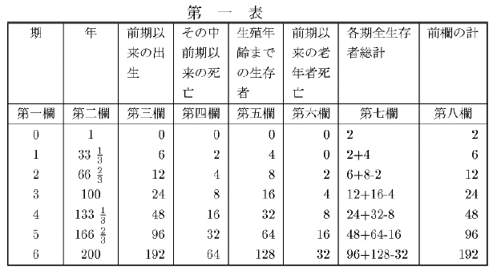
『これは、ウォレイスがその「人口数論」の中で行っている計算の計画に従って表を構成し、かつ産児数と結婚まで生存する数とに関する各種の仮定から生ずる出生の死亡に対する比率を観察して、行った、概算である。この論文は誰もが有っているわけではないから、私は、読者が私の行った計算の根拠がわかるようにここに挿入することにする。
『それは一組の夫婦から出発しているが、しかし云うまでもなく、二人から出発しようと二百万人から出発しようと同じことである。それには八欄あり、その内容は各々の頭に説明してある。
『ウォレイス氏のこの表の目的は、単に、一組からの人口増加と倍加期間とを示すにあるに過ぎぬのであるが、しかしその構成に何も本質的な欠陥が見られないならば、それはもっと広汎にかつ有益に用いられ得よう。
『期間は三三年三分の一とされているが、しかし真の増殖期間は云うまでもなく、平均結婚年齢により国を異にするにつれて異るであろう。各一結婚は六人の子供を産み、そのうち二人すなわち三分の一は嬰児期、独身期に死亡し、また四人すなわち三分の二は二つの結婚をなし子供の養育に当るまで生存するものと、仮定されている。
『第二期の数を検討すると、出生を表わす第三欄には一二とあり、嬰児期、独身期の死亡を表わす第四欄には四、親の死亡を表わす第六欄には二とある。従って同期における出生の死亡に対する比率は、一二対四プラス二、すなわち一二対六、すなわち二対一であり、そしてこの比率は他の期間全部を通じ引続き同一である。この事実から、思うに、ある国で出生が死亡に対し二対一であり産児の三分の二が結婚まで生存するならば、各一結婚は正確に六人の子供を産まなければならぬ、と推論して差支えなかろう。
『任意の同期間の出生と結婚とを検討すると、第二期には出生一二、結婚者八、すなわち出生一二対結婚四という比率が見られ、第三期には出生二四、結婚者一六、すなわち出生二四対結婚八という比率が見られ、かくて常に比率は三対一である。しかしこれらの期間における出生の総計の結婚の総計に対する比率は、正確に年平均と同一でなければならず、従って年出生は年結婚に対して三対一である。通常の計算方法によれば、この事実から、各一結婚当り子供六人という仮定から出発したにもかかわらず、各一結婚は子供三人を産むものと推論されることになる。この矛盾は、本章の前の方で述べた推理を力強く確証するものであり、また年出生の年結婚に対する比率は各一結婚当りの子供の数を表わすものではなく、これとは全く別物の、結婚まで生存する産児の数を表わすものであることを、示すものである。
『もし今の場合の如くに三分の二ではなく、わずか産児の半数が結婚まで生存する――この方がもっと普通の比率であるが――ものと仮定すれば、第二期には、出生を表わす第三欄に九、結婚者を表わす第五欄に四・二分の一という数字を得る。従って結婚は出生に対して一対四となるが、これはヨオロッパの最も通常の平均である。もっとも今の場合には、吾々は依然各一結婚はその持続期間中に六人の子供を産むものと仮定している。同じ仮定によれば、出生は死亡に対し九対四・二分の一プラス二、すなわち一八対一三、すなわち約一三・五分の四対一〇であろう。従って、出生が死亡に対して一三・五分の四対一〇すなわち一三八対一〇〇であり、また産児の半数が結婚まで生存する場合には、各一結婚は出生六を産まなければならぬと推論し得よう。
『もし吾々が、一結婚当りの出生は五であり、産児の半数が結婚まで生存すると仮定すれば、表によれば、出生は死亡に対して約一三・五分の一対一〇であり、従って吾々は、同様に、出生が死亡に対し一二・五分の一対一〇であり、また産児の半数が結婚まで生存する場合には、各一結婚は五人の子供を産まなければならぬ、と推論し得よう。
『かかる原則によれば、もしある国で出生の死亡に対する比率と出生の結婚に対する比率とを得ることが出来るならば、吾々は各一結婚当りの産児数にかなり近いものを計算することが出来よう１）［＃「１）」は縦中横、行右小書き］。この数字は実際、旧式の計算方法の結果とは非常に異るものとなるであろう。しかしこの事情はむしろそれが正しいことを示すものである。けだし人口に関する既知の事実は、ヨオロッパの一般平均として四以下を与えるところの一結婚当りの出生数の通常の測定方法によっては、おそらく説明し得ないからである。
『これは、ウォレイスがその「人口数論」の中で行っている計算の計画に従って表を構成し、かつ産児数と結婚まで生存する数とに関する各種の仮定から生ずる出生の死亡に対する比率を観察して、行った、概算である。この論文は誰もが有っているわけではないから、私は、読者が私の行った計算の根拠がわかるようにここに挿入することにする。
『それは一組の夫婦から出発しているが、しかし云うまでもなく、二人から出発しようと二百万人から出発しようと同じことである。それには八欄あり、その内容は各々の頭に説明してある。
『ウォレイス氏のこの表の目的は、単に、一組からの人口増加と倍加期間とを示すにあるに過ぎぬのであるが、しかしその構成に何も本質的な欠陥が見られないならば、それはもっと広汎にかつ有益に用いられ得よう。
『期間は三三年三分の一とされているが、しかし真の増殖期間は云うまでもなく、平均結婚年齢により国を異にするにつれて異るであろう。各一結婚は六人の子供を産み、そのうち二人すなわち三分の一は嬰児期、独身期に死亡し、また四人すなわち三分の二は二つの結婚をなし子供の養育に当るまで生存するものと、仮定されている。
『第二期の数を検討すると、出生を表わす第三欄には一二とあり、嬰児期、独身期の死亡を表わす第四欄には四、親の死亡を表わす第六欄には二とある。従って同期における出生の死亡に対する比率は、一二対四プラス二、すなわち一二対六、すなわち二対一であり、そしてこの比率は他の期間全部を通じ引続き同一である。この事実から、思うに、ある国で出生が死亡に対し二対一であり産児の三分の二が結婚まで生存するならば、各一結婚は正確に六人の子供を産まなければならぬ、と推論して差支えなかろう。
『任意の同期間の出生と結婚とを検討すると、第二期には出生一二、結婚者八、すなわち出生一二対結婚四という比率が見られ、第三期には出生二四、結婚者一六、すなわち出生二四対結婚八という比率が見られ、かくて常に比率は三対一である。しかしこれらの期間における出生の総計の結婚の総計に対する比率は、正確に年平均と同一でなければならず、従って年出生は年結婚に対して三対一である。通常の計算方法によれば、この事実から、各一結婚当り子供六人という仮定から出発したにもかかわらず、各一結婚は子供三人を産むものと推論されることになる。この矛盾は、本章の前の方で述べた推理を力強く確証するものであり、また年出生の年結婚に対する比率は各一結婚当りの子供の数を表わすものではなく、これとは全く別物の、結婚まで生存する産児の数を表わすものであることを、示すものである。
『もし今の場合の如くに三分の二ではなく、わずか産児の半数が結婚まで生存する――この方がもっと普通の比率であるが――ものと仮定すれば、第二期には、出生を表わす第三欄に九、結婚者を表わす第五欄に四・二分の一という数字を得る。従って結婚は出生に対して一対四となるが、これはヨオロッパの最も通常の平均である。もっとも今の場合には、吾々は依然各一結婚はその持続期間中に六人の子供を産むものと仮定している。同じ仮定によれば、出生は死亡に対し九対四・二分の一プラス二、すなわち一八対一三、すなわち約一三・五分の四対一〇であろう。従って、出生が死亡に対して一三・五分の四対一〇すなわち一三八対一〇〇であり、また産児の半数が結婚まで生存する場合には、各一結婚は出生六を産まなければならぬと推論し得よう。
『もし吾々が、一結婚当りの出生は五であり、産児の半数が結婚まで生存すると仮定すれば、表によれば、出生は死亡に対して約一三・五分の一対一〇であり、従って吾々は、同様に、出生が死亡に対し一二・五分の一対一〇であり、また産児の半数が結婚まで生存する場合には、各一結婚は五人の子供を産まなければならぬ、と推論し得よう。
『かかる原則によれば、もしある国で出生の死亡に対する比率と出生の結婚に対する比率とを得ることが出来るならば、吾々は各一結婚当りの産児数にかなり近いものを計算することが出来よう１）［＃「１）」は縦中横、行右小書き］。この数字は実際、旧式の計算方法の結果とは非常に異るものとなるであろう。しかしこの事情はむしろそれが正しいことを示すものである。けだし人口に関する既知の事実は、ヨオロッパの一般平均として四以下を与えるところの一結婚当りの出生数の通常の測定方法によっては、おそらく説明し得ないからである。
『１） 換言すれば、表の構成に、またはそれから下し得ると思われる推論に、不正確が何もないと仮定して。今のところでは私は不正確はないと思う。
『ビュフォンはその著作に若干の死亡表を挿入しているが、これは彼のつもりでは全人類に当てはめ得るものと考えらるべきものである１）［＃「１）」は縦中横、行右小書き］。もし吾々が、一結婚当り子供四人という平均を、ビュフォンの死亡率推定に当てはめるならば、ヨオロッパの人口は、有力な増加傾向を有つことなく、数年にして絶滅するの危険に瀕している、と思われるであろう。それは、幾何級数において増加してはおらず、幾何級数において減少していることになろう。もし、各一結婚につき認められた四人の子供のうち二人が八歳一箇月以下で死亡するものとすれば、吾々が期待し得る極点は、新婚一を得るためには一人半が生残しなければならぬということ、または現在の結婚四は次代の結婚三を生じなければならぬということ、これである。これは久しからずしてヨオロッパの人口を皆無ならしめる減少率である。
『１） Histoire Naturelle de l'Homme, tom. iv. p. 420. 12mo. 1752.
『しかし本当のことは、双方の計算が誤っているのである。ビュフォンの表は、パリとその周辺の村落の記録簿から得られたものであり、一般に適用し得るものとは決して考え得ないものである。他の誤りの源泉は、本章でこれまで指摘してきたものである。
『産児の半数が八、九歳以下で死亡するのは、特殊な境遇におかれている不健康な都市や村に限られる。ヨオロッパ中の平均をとれば、啻に産児の半数以上が青春期以上まで生存するのみならず、更に各一結婚は遥かに四以上、思うに五以上の出生を産むことを、私はほとんど疑わない。人口を妨げる貧困は、出生数を減少するよりも有力に死亡数を増加する傾向のあるものである。
『年出生と年結婚の表から結婚まで生存する産児の比率に関して断定を下すことは、右に打樹てた原則に従ってそれが有用たり得る唯一の観点なのであるが、このことをなすに当っては、特別の注意を払わなければ大きな誤りに導く虞れのある一つの事情がある。
『移民が出ている地方教区においては、結婚まで生存する比率は過小に与えられ、また引続き他所者を受入れている都市においては、この比率は遥かに過大に与えられるであろう。年出生の年結婚に対する比率は一般に地方の方が都市よりも高い。しかしもし住民の移動がないならば、都市の比率は遥かに最高であろう。もし地方教区において、出生が結婚に対し四または四・二分の一対一であるならば、この事実は、その地の出生四または四・二分の一のうち、その地で二が結婚まで生存したことを意味するが、しかしおそらく多数のものが移民となって出ており他の地で結婚しているであろうから、従って吾々は、この比率から、四または四・二分の一のうちわずかに二が結婚まで生存したとは、積極的に推論することは出来ない。
『都市では、出生の結婚に対する比率は極めてしばしばわずかに三、及び三・二分の一対一であり、この事実は、三人または三人半の子供のうち二人が結婚まで生存したことを意味するように思われよう。しかしこれらの都市では、おそらく死亡表から、産児の遥か半数以上が青春期以下で死亡することが知られている。従って上記の比率はおそらく、都市で生れて結婚まで生存する子供の真の比率を表わし得ないものであり、その出生は記録簿に現われないのにその結婚は現われている他所者の流入によって生じたものである。幼少年期の大きな死亡率のある都市では、その地で生れたものの結婚以外には記録されぬならば、年出生の年結婚に対する比率は、各一結婚に対しその存続期間中生れる子供の比率よりも大であり、そしておそらく、三または三・二分の一対一ではなく、六または七対一に達するであろう。
『ライプチヒでは、出生の結婚に対する比率はわずかに二・八対一である１）［＃「１）」は縦中横、行右小書き］。そしてジュウスミルヒは、この事実をもって各一結婚当りの産児がわずかに二・八なることを意味するものと想像して、この異常な出産性の低さを説明するのに当惑している。しかし記録簿におけるこの外見は、疑いもなく、他所者の大きな流入によるか、または近隣地方の住民の結婚式を市内で挙げる慣習によって、生ずるものである。
『産児の半数が八、九歳以下で死亡するのは、特殊な境遇におかれている不健康な都市や村に限られる。ヨオロッパ中の平均をとれば、啻に産児の半数以上が青春期以上まで生存するのみならず、更に各一結婚は遥かに四以上、思うに五以上の出生を産むことを、私はほとんど疑わない。人口を妨げる貧困は、出生数を減少するよりも有力に死亡数を増加する傾向のあるものである。
『年出生と年結婚の表から結婚まで生存する産児の比率に関して断定を下すことは、右に打樹てた原則に従ってそれが有用たり得る唯一の観点なのであるが、このことをなすに当っては、特別の注意を払わなければ大きな誤りに導く虞れのある一つの事情がある。
『移民が出ている地方教区においては、結婚まで生存する比率は過小に与えられ、また引続き他所者を受入れている都市においては、この比率は遥かに過大に与えられるであろう。年出生の年結婚に対する比率は一般に地方の方が都市よりも高い。しかしもし住民の移動がないならば、都市の比率は遥かに最高であろう。もし地方教区において、出生が結婚に対し四または四・二分の一対一であるならば、この事実は、その地の出生四または四・二分の一のうち、その地で二が結婚まで生存したことを意味するが、しかしおそらく多数のものが移民となって出ており他の地で結婚しているであろうから、従って吾々は、この比率から、四または四・二分の一のうちわずかに二が結婚まで生存したとは、積極的に推論することは出来ない。
『都市では、出生の結婚に対する比率は極めてしばしばわずかに三、及び三・二分の一対一であり、この事実は、三人または三人半の子供のうち二人が結婚まで生存したことを意味するように思われよう。しかしこれらの都市では、おそらく死亡表から、産児の遥か半数以上が青春期以下で死亡することが知られている。従って上記の比率はおそらく、都市で生れて結婚まで生存する子供の真の比率を表わし得ないものであり、その出生は記録簿に現われないのにその結婚は現われている他所者の流入によって生じたものである。幼少年期の大きな死亡率のある都市では、その地で生れたものの結婚以外には記録されぬならば、年出生の年結婚に対する比率は、各一結婚に対しその存続期間中生れる子供の比率よりも大であり、そしておそらく、三または三・二分の一対一ではなく、六または七対一に達するであろう。
『ライプチヒでは、出生の結婚に対する比率はわずかに二・八対一である１）［＃「１）」は縦中横、行右小書き］。そしてジュウスミルヒは、この事実をもって各一結婚当りの産児がわずかに二・八なることを意味するものと想像して、この異常な出産性の低さを説明するのに当惑している。しかし記録簿におけるこの外見は、疑いもなく、他所者の大きな流入によるか、または近隣地方の住民の結婚式を市内で挙げる慣習によって、生ずるものである。
『１） 〔Sussmilch's Go:ttliche Ordnung, vol. i. c. v. s. lxxxiii. p. 171.
『記録簿がかなり注意深く記録されていると想像されているジュネエヴでは、一七〇一年ないし一七六〇年の結婚数は二一、四九三であり、同期の出生数は四二、〇七六であった。この事実から、各一結婚は平均して二人以下の子供しか産まなかったものと、推論されている。これらの数を挙げている『英国文庫』Bibliothque Britannique 中の貴重な論文の筆者は１）［＃「１）」は縦中横、行右小書き］、当然この結果にいささか驚いているが、それでもなおこれをもってジュネエヴの婦人の出産性の尺度として採用している。しかしながら、この事情は、疑いもなく、新来者の不断の流入から生ずるものであり、彼らの結婚は記録簿に現われるが出生には現われないのである。もし各個の母親から生れる子供の数を注意深くジュネエヴの死亡表において辿るならば、その結果が極めて異るべきことを、私は信じて疑わないのである。
que Britannique 中の貴重な論文の筆者は１）［＃「１）」は縦中横、行右小書き］、当然この結果にいささか驚いているが、それでもなおこれをもってジュネエヴの婦人の出産性の尺度として採用している。しかしながら、この事情は、疑いもなく、新来者の不断の流入から生ずるものであり、彼らの結婚は記録簿に現われるが出生には現われないのである。もし各個の母親から生れる子供の数を注意深くジュネエヴの死亡表において辿るならば、その結果が極めて異るべきことを、私は信じて疑わないのである。
『１） Tom. iv. p. 38. note.
『パリでは、年出生の年結婚に対する比率は約四・二分の一対一であり１）［＃「１）」は縦中横、行右小書き］、従って婦人は大都市としては通常以上に多産的であると考えられている。しかしこの比率からはかかる推論は正当に下し得ないのであり、この比率はおそらく、単に、市内で生れたものでないものの結婚が余り行われず、近隣の村で結婚式を挙げる習慣のあることにより、生ずるものである。パリでは総人口に比例して少数の結婚しか行われぬこと２）［＃「２）」は縦中横、行右小書き］、及びパリ周辺の村では通常以上の結婚が行われる事実が、この仮定を確証するように思われる。
『１） 〔Sussmilch's Go:ttliche Ordnung, vol. i. c. v. s. lxxxv. p. 174.
『２） パリでは、年結婚の総人口に対する比率は、ジュウスミルヒによれば、一対一三七であり、クロオメによれば、一対一六〇である。ジュネエヴではそれは、一対六四であり、そしてこの異常な結婚率は、確かに主として、他所者の大きな流入によるものである。年出生の年結婚に対する比率が新来者または移民退去によって大きな影響を蒙る場所では、いずれにしてもそれからは正確な推論はほとんど下し得ない。それは結婚の出産性を表わしもしなければ、また結婚まで生存する産児の比率を表わしもしない。
『２） パリでは、年結婚の総人口に対する比率は、ジュウスミルヒによれば、一対一三七であり、クロオメによれば、一対一六〇である。ジュネエヴではそれは、一対六四であり、そしてこの異常な結婚率は、確かに主として、他所者の大きな流入によるものである。年出生の年結婚に対する比率が新来者または移民退去によって大きな影響を蒙る場所では、いずれにしてもそれからは正確な推論はほとんど下し得ない。それは結婚の出産性を表わしもしなければ、また結婚まで生存する産児の比率を表わしもしない。
『人口増加の速度は、各一結婚当りの産児の数と、この数のうち結婚まで生存するものの比率とに、依存する。この速度の尺度は、死亡以上に出ずる出生の超過が総人口に対して採る比率である。』
以上が第二版の削除された部分であるが、この次のパラグラフは、第三版以後と同じく、『出生の死亡に対する』云々ではじまるものであり、訳註で特に断ってあるものの外は大体次と同じである。
出生の死亡に対する比率、及びこれらの総人口に対する比率が分れば、読者が一見してこれから増加率と倍加期間を知ることが出来るように、私はユウラアの計算になる二表をジュウスミルヒから転載することとするが、この表は私は極めて正確なものと信じている。第一表は死亡率が三六分の一と仮定した場合に限るから、従ってかかる死亡率の国でなければ適用し得ない。第二表は一般的であり、もっぱら埋葬以上に出ずる出生の超過が総人口に対して採る比率を基礎とするものであるから、従って死亡率の以上が第二版の削除された部分であるが、この次のパラグラフは、第三版以後と同じく、『出生の死亡に対する』云々ではじまるものであり、訳註で特に断ってあるものの外は大体次と同じである。
〔訳註〕『私は今また』以下は第六版のみに現わる。
出生と埋葬との間の比率が与えられるならば、死亡率の大であればあるほど倍加期間の短いことが見られるであろう。けだしこの仮定によれば、出生は死亡と共に増加し、そして両者が総人口に対する比率は、死亡率がより小であり、年長者の数がより多い場合よりも、大であるからである。トゥック氏によれば、ロシアの死亡率は五八分の一、出生率は二六分の一である。埋葬の脱漏を斟酌して死亡率を五二分の一と仮定すれば、出生は死亡に対して二対一、出生超過の総人口に対する比率は五二分の一となる１）［＃「１）」は縦中横、行右小書き］。第二表によれば、倍加期間はこの場合約三六年であろう。しかし、出生の死亡に対する比率を、二対一としておいて、第一表の如くに死亡率を三六分の一と仮定すれば、埋葬以上に出ずる出生の超過は総人口の三六分の一となり、そして倍加期間はわずかに二五年となるであろう（訳註）。
１） ここに挙げた比率は、トゥック氏の第二版の附表から採ったものとは異る。しかしここではそれは問題をより容易にかつより明瞭に例証するものと思われる。
〔訳註〕第二版ではこの次に一パラグラフあったが後版では削除された。それは次の如くである、――
『非常に健康的であり、その結果として成人の数の大である国では、出生は、総人口に対して、成人の数がこれより少い場合と同一の比例を決してとらないものである。従って死亡以上に出ずる出生の超過は、短期間には、従前の人口に等しい人口を生み出すことは出来ない。』
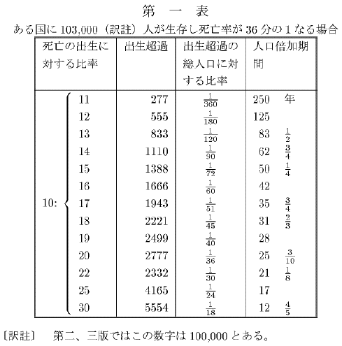〔訳註〕第二版ではこの次に一パラグラフあったが後版では削除された。それは次の如くである、――
『非常に健康的であり、その結果として成人の数の大である国では、出生は、総人口に対して、成人の数がこれより少い場合と同一の比例を決してとらないものである。従って死亡以上に出ずる出生の超過は、短期間には、従前の人口に等しい人口を生み出すことは出来ない。』
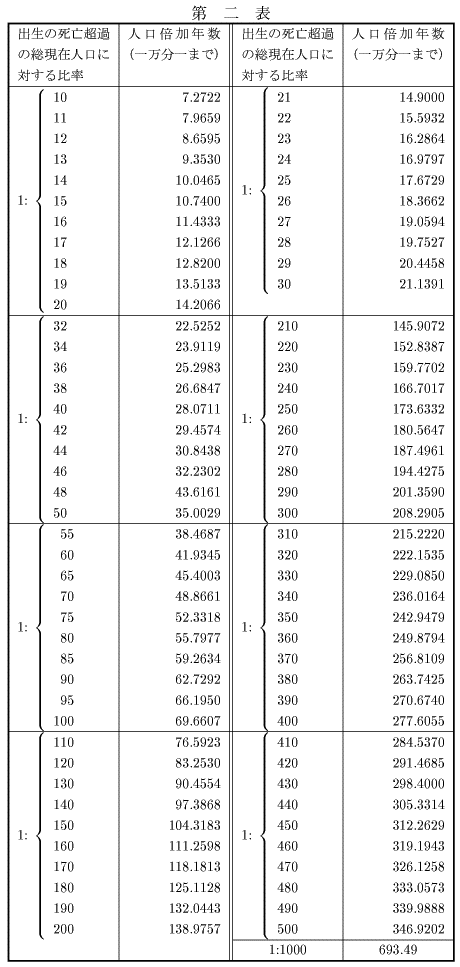
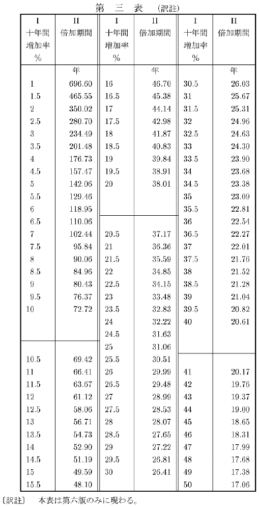
［＃改丁］
第十二章 伝染病が出生、死亡、及び結婚の記録簿に及ぼす影響（訳註）
〔訳註〕本章は第二版ではヨオロッパ中部を論じた章の次の第六章となっていたが、第三版ではかなり書き改められた上でここへ移された。書き改められた場所は後半であり、前半は特別に断った個所の外はおおむね第二版のままである。
ジュウスミルヒが蒐集し五〇年ないし六〇年の期間を包含する極めて貴重な死亡表から見ると、ヨオロッパのあらゆる国が、その人口増加を阻止する週期的な疾病流行季に見舞われ、また一世紀におそらく一、二囘、その住民の三分の一ないし四分の一を一掃する猛烈悪性の
１） Sussmilch, Gttliche Ordnung, vol. i. table xxi. p. 83 of the tables.
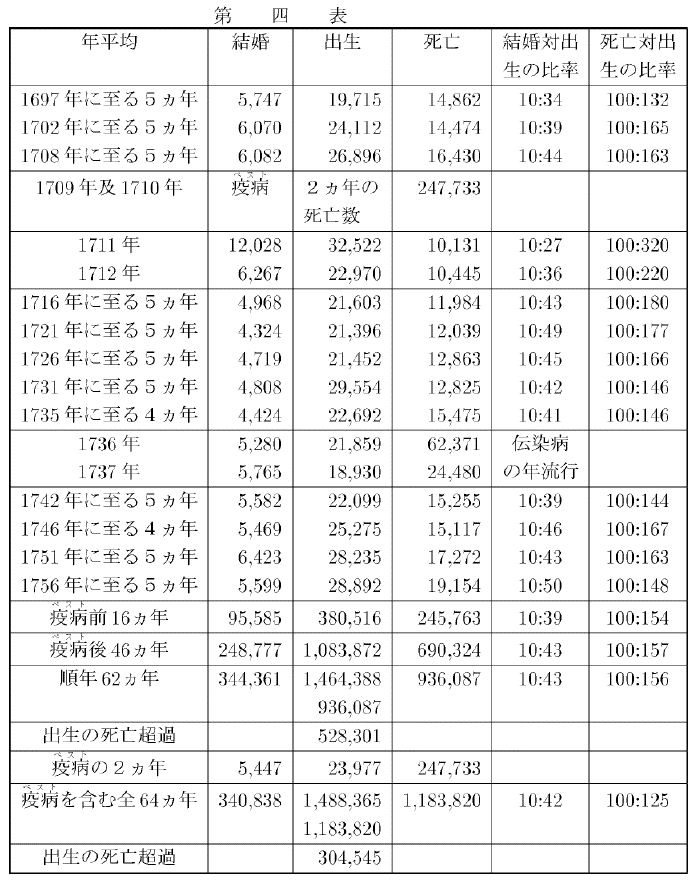ttliche Ordnung, vol. i. table xxi. p. 83 of the tables.ここに書写したものの原表は、全期間内の各年の結婚、出生、死亡を含んでいるが、これを縮小するために、私は、各年の数が特別の観察に価する場合を除いては、四、五年の短期間から得られた一般平均を掲げるに止めた。大
ジュウスミルヒは、人民の三分の一以上が
１） 疫病 以前の人口は、ジュウスミルヒの計算によれば（vol. i. ch. ix. sect. 173.）、五七〇、〇〇〇であったが、これから疫病の死亡数二四七、七三三を控除すると、その残り三二二、二六七は疫病後の人口となる。これを一七一一年の結婚数と出生数とで割ると、結婚は人口の約二十六分の一、出生は約十分の一となる。かかる異常な比率は、いかなる国においてもただ一年だけ起り得るものである。もしそれが継続するとすれば、それは人口を十年以内で倍加するであろう。表の中には誤りがあり、また疫病流行年の出生及び結婚が一七一一年に含まれているということは、あり得る。もっとも死亡は慎重に区別されているから、こういうことになっているのははなはだ奇妙に思われるのであるが。しかしながらそれは大して重要なことではない。その他の年が一般原理を例証するに十分である。（訳註――この註の終末の『表の中には誤りがあり』以下は、第四版より現われたものである。）
翌一七一二年には、結婚数はもちろん著しく減少したに違いない。けだし青春期にあるほとんどすべてのものは前年に結婚してしまったので、この年の結婚は主として、この時期以後、年結婚数は減少した人口によって規制されはじめ、そして云うまでもなく
ジュウスミルヒは、
１） Sussmilch, Gttliche Ordnung, vol. i. c. v. s. lxxxvi. p. 175.
表に含まれた六四年間の各時期における出生の死亡に対する比率の変動は、特別の注意に価するものである。もし吾々が、ttliche Ordnung, vol. i. c. v. s. lxxxvi. p. 175.ジュウスミルヒは、
１） History of Air, Seasons, etc., vol. ii. p. 344.
〔訳註〕第二版ではこの次に二パラグラフあったが、第三版では削除された。第二版の削除された部分は次の如くである、――
『疫病 後の四六年を平均して、年出生の年結婚に対する比率は四三対一であり、換言すれば、本篇第四章（訳註――前章冒頭の訳註を参照）で打ち樹てた原則によると、産児四三の中 、その二〇が結婚まで生存する。この期間における出生の死亡に対する平均比率は一五七対一〇〇である。しかし、四三人の子供の中からわずかに二〇が、すなわち四・三の中から二が、結婚まで生存すると仮定して、かかる増加を生み出すためには、私は、該章で述べた理由により、各結婚当りの出生は八でなければならぬと信ずる。
『クロオメは、一国の出生が四以下の場合には、人口は極めて危殆な状態にある、と云っている。そしてこの問題に関する他の著者達と同じく、彼は、各結婚当りの子供の数を、年出生の年結婚に対する比率によって、測定している。しかし私はこれに反し、これら表における年結婚が四人以上の子供を与えるときの方が、人口は危殆な状態にあるのだ、と云いたい。その場合には産児の半数以下しか結婚まで生存しないであろうが、もしそうであるならば、幾分でも大きな増加を生ずるためには、各結婚当りに異常な数の子供が生れなければならない。プロシアでは、結婚は極めて多産的であり、従って著しい子供の死亡率を見ながら、人口増加は停止しなかった。しかしこの死亡率そのものは好ましい基準とは考え得ない。そして急速な増加が進行中の他の諸国においては、年出生の年結婚に対する比率は、一般に、四対一というほどに高くなく、または普通の計算法によれば、各結婚は四人以上の子供しか産んでいない。』
なお直前のパラグラフは、かなりの加筆を受けた後、第三版以下では前章に再現している。二四五―二四六頁参照。
従って（訳註）、ある国の過去の人口を測定するに当って一定の出生率を仮定することが、いかに誤謬の基となりやすいかが、わかるであろう。今の事例においては、右の仮定によれば、死亡数から見て『
『クロオメは、一国の出生が四以下の場合には、人口は極めて危殆な状態にある、と云っている。そしてこの問題に関する他の著者達と同じく、彼は、各結婚当りの子供の数を、年出生の年結婚に対する比率によって、測定している。しかし私はこれに反し、これら表における年結婚が四人以上の子供を与えるときの方が、人口は危殆な状態にあるのだ、と云いたい。その場合には産児の半数以下しか結婚まで生存しないであろうが、もしそうであるならば、幾分でも大きな増加を生ずるためには、各結婚当りに異常な数の子供が生れなければならない。プロシアでは、結婚は極めて多産的であり、従って著しい子供の死亡率を見ながら、人口増加は停止しなかった。しかしこの死亡率そのものは好ましい基準とは考え得ない。そして急速な増加が進行中の他の諸国においては、年出生の年結婚に対する比率は、一般に、四対一というほどに高くなく、または普通の計算法によれば、各結婚は四人以上の子供しか産んでいない。』
なお直前のパラグラフは、かなりの加筆を受けた後、第三版以下では前章に再現している。二四五―二四六頁参照。
〔訳註〕これとこの次との二パラグラフは、第二版になく、第三版以下のものである。
これと同種の変動は、その程度こそ違え、ジュウスミルヒが蒐集した一切の表の死亡、出生、結婚の比率に現われている。そしてこれらの問題に関する論者は、わずか数年の比率から、過去及び将来の計算を余りにも行い勝ちであるから、かかる変動の実例をもう少し挙げて読者の注意を促すのが、有益であろうと思われる。ブランデンブルグ選挙伯領では１）［＃「１）」は縦中横、行右小書き］（訳註）、一七一二年で終る一五箇年間に、出生の死亡に対する比率はほとんど一七対一〇であった。一七一八年で終る六箇年間には、この比率は一三対一〇に下り、一七五二年で終る四箇年間にはわずかに一一対一〇となり、一七五六年で終る四箇年間には一二対一〇であった。一七五九年で終る三箇年間には死亡が著しく出生を超過した。出生の総人口に対する比率は与えられていないが、しかし出生の死亡に対する比率に見られるこの大きな変動が、もっぱら死亡の変動から生じたものではなかろう。出生の結婚に対する比率はかなり斉一で、両極端もわずかに三八対一〇及び三五対一〇に過ぎず、中項は約三七対一〇である。この表では、一七五七年に始まる三箇年までは大きな伝染病はなく、そしてこの表はこの期間で終っている。
１） Sussmilch's Gttliche Ordnung, vol. i. tables, p. 88.
〔訳註〕これ、及びその次の二つの、三パラグラフは、第二版のものに対し第三版で著しく加筆訂正されたものである。
ポメラニア大公国では１）［＃「１）」は縦中横、行右小書き］、六〇年間（一六九四年ないし一七五六年、その両年を含む）の出生の死亡に対する比率は一三八対一〇〇であった。しかし六箇年を一期とすればそのある期間では、それは一七七対一〇〇、及び一五五対一〇〇というが如き、高率であった。がまたある期間にはそれは一二四対一〇〇、及び一三〇対一〇〇というが如き低率であった。五年ないし六年を一期とする各期における出生の結婚に対する比率の両極端は、三六対一〇及び四三対一〇であり、六〇箇年間の中項は約三八対一〇である。伝染病流行年も時々発生したらしく、そのうち三箇年は死亡が出生を超過した。しかしこの一時的人口減少は、これに相応する出生の減少を齎らさず、しかも全表中最大の結婚率をもつ年は、一度は伝染病の翌年、もう一度は翌々年に現われている。しかしながら死亡の超過は、表の最後の年たる一七五九年に終る三箇年までは大きくはなかった。ttliche Ordnung, vol. i. tables, p. 88.〔訳註〕これ、及びその次の二つの、三パラグラフは、第二版のものに対し第三版で著しく加筆訂正されたものである。
１） Id. vol. i. tables, p. 91.
ブランデンブルグ新辺疆［＃「辺疆」は底本では「辺彊」］伯領では１）［＃「１）」は縦中横、行右小書き］、一六九五年ないし一七五六年――この年を含む――の六〇年間に、出生の死亡に対する平均比率は、最初の三〇年間には一四八対一〇〇、後の三〇年間には一二七対一〇〇、全六〇年間には一三六対一〇〇であった。五箇年を一期とする若干期間では、一七一及び一六七対一〇〇というが如き高率であり、またある期間では、一一八及び一二八対一〇〇というが如き低率であった。一七二六年に終る五箇年間には、年平均出生は七、〇一二で、一七四六年に終る五箇年間は六、九二七であって、これによれば、出生から判断して、人口はこの中間の二〇年間に減少したものと推論し得るかもしれぬ。しかしこの期間における出生と死亡との平均比率から見ると、その間に伝染病流行年があったにもかかわらず、人口は著しく増加したに違いないように思われる。したがって出生の総人口に対する比率は決定的な変化を遂げたに相違ないのである。同じ表の他の二〇年間にも、出生と結婚との両者に関して同様の結果が見られる。出生の結婚に対する比率の両極端は三四対一〇及び四二対一〇であり、中項は約三八対一〇である。一七五七年に始まる三箇年は、他の表におけると同様に、極めて死亡の多い年であった（訳註）。
１） Id. p. 99.
〔訳註〕これ以下の第二版の諸パラグラフは第三版では削除され新しいものがこれに代った。削除された第二版の部分は次の如くである、――
『ロシアでは、年出生の年結婚に対する比率は、わずかに約三六対一〇に過ぎないけれども、非常に急速な増加が進行中であることは、吾々の知るところである。そして、もし吾々が、人口増加が更にいっそう急速なアメリカの表を有っているならば、年出生の年結婚に対する比率が四対一以下なることを見ることであろう１）［＃「１）」は縦中横、行右小書き］。
〔訳註〕これ以下の第二版の諸パラグラフは第三版では削除され新しいものがこれに代った。削除された第二版の部分は次の如くである、――
『ロシアでは、年出生の年結婚に対する比率は、わずかに約三六対一〇に過ぎないけれども、非常に急速な増加が進行中であることは、吾々の知るところである。そして、もし吾々が、人口増加が更にいっそう急速なアメリカの表を有っているならば、年出生の年結婚に対する比率が四対一以下なることを見ることであろう１）［＃「１）」は縦中横、行右小書き］。
『１） 「合衆国における生命蓋然率に関する諸観察」と題する、バアトン氏の手になる「フィラデルフィア協会会報」にある一文（Vol. iii. No. vii. p. 25.）から見ると、私がここに述べた蓋然率は違っていないとも限らない。もし実際、バアトン氏の計算が、合衆国全般について真と考え得るならば、産児の半数は一三または一四歳以下で死亡することとなり、従って産児の半数は結婚まで生存し得ないであろう。しかし事実は、バアトン氏の計算は、国全般に適用しているけれども、フィラデルフィア市とその他確かに健康状態のよくない一、二の町や村から得てきたものなのである。我ヨオロッパの最大諸都市は、云うまでもなく、産児の半数が一二・五歳以下で死亡するというフィラデルフィアほどには、健康状態がよくないが、しかし我が中級都市の多くは遥かにこれより健康的である。フィラデルフィアで四五分の一、サレムで四七分の一という、バアトン氏の死亡率の計算は、確かに彼れの他の見積りと矛盾するものであり、従って短期間につき、しかも伝染病流行の年を除外して、採ったものでなければそうはならない。実際、彼はこの種の除外を行ったことを一、二の場合で認めており、従って彼れの計算は信頼し得ないものである。彼は一結婚当りの出生は六・五と述べているが、しかし彼が与えている数字の方は四・五でしかない。そして後者が一結婚当りの子供の正しい比率であると仮定し、またもし同時に産児の半数は一四歳以下で死亡すると仮定するならば、一切のアメリカの人口増加は不可能であろう。全体として、吾々はこの一文にある計算は合衆国全般には適用し得るとは考え得ず、産児の半数が、またヨオロッパの如くに二五歳、三〇歳、またはそれ以上まで生存することなく、一四歳以下で死亡するとも考え得ないが、しかしもし、それが青春期未満の大きな死亡率を意味するとしたら、アメリカで確実に進行中の急速な人口増加を説明するためには、各結婚当りの出生は七ないし八の多きに上るものと、考えなければならない。フランクリン博士は、アメリカでは一結婚当りの出生は八で、産児の半数は結婚まで生存すると想像しているが、これがおそらく真に近いであろう。Miscell. p. 3.（訳註――バアトンに関する評言は第三版以下では前章で行われている。二三七頁以下参照。）
『これに反し、出生の死亡に対する比率が一三対一〇であり従って人口増加が急速でないシベリアでは、年出生の年結婚に対する比率は四・一対一、すなわち四一対一〇である１）［＃「１）」は縦中横、行右小書き］。またフランスでは、人口増加はシベリアよりも緩慢であるけれども、この比率は、革命前には、四・五対一であった。コルシカでは、その人口はおそらく継続的に急速な増加を示しているとは云い得ないが、出生は結婚に対し五対一であると云われている。ノルウェイにおける出生の死亡に対する比率はスウェーデンよりも大であるが、年出生の年結婚に対する比率は、ノルウェイでは三八対一〇、スウェーデンでは四一対一〇である。
『１） Sussmilch, id. table xx. p. 81.
『従って年出生の年結婚に対する比率が四対一以下の場合は一国の人口は危殆な状態にある、とは云い得ない。これに反しかかる比率は人口増加に好都合であり、そして人口増加の極めて急速な多数の国に存在していることがわかっている。四対一以上の比率は、それ自身としては、人口増加にとり都合が悪く、ある国では結婚の出産性が異常に高いために時にこの比率を示しながら人口が増加していることがあるが、しかし一般には、人口増加の緩慢な国に見られる率である。
『私はあらゆる機会をとらえてこの問題を例証しようと思うのであるが、それはけだしかくも多数の立派な著者が、各結婚がその継続期間中に産む子供の数を、年出生の年結婚に対する比率で測定するという誤りに、陥っているからであり、そして私は、かかる多数の権威者の一致した見解と私が意見を異にする十分な理由を、読者に納得させたいからである。これらの著者はいずれも、彼らが利用する表の与える結果を見て、驚きの意を表わしている。なかんずくジュウスミルヒ及びクロオメは、一結婚当り四ないし四・五の子供という平均は、その多くは一二人以上の子供を産む特定女子の出産性について吾々の有つ経験に反する――もっともこの子供の多くは養育中に死亡するかもしれぬが――と云っている１）［＃「１）」は縦中横、行右小書き］。そしてワルゲンティンは、北部地方の婦人の出産性が高いという有名な事実との関連で、この数字の低いことを指摘しているのである２）［＃「２）」は縦中横、行右小書き］。
『私はあらゆる機会をとらえてこの問題を例証しようと思うのであるが、それはけだしかくも多数の立派な著者が、各結婚がその継続期間中に産む子供の数を、年出生の年結婚に対する比率で測定するという誤りに、陥っているからであり、そして私は、かかる多数の権威者の一致した見解と私が意見を異にする十分な理由を、読者に納得させたいからである。これらの著者はいずれも、彼らが利用する表の与える結果を見て、驚きの意を表わしている。なかんずくジュウスミルヒ及びクロオメは、一結婚当り四ないし四・五の子供という平均は、その多くは一二人以上の子供を産む特定女子の出産性について吾々の有つ経験に反する――もっともこの子供の多くは養育中に死亡するかもしれぬが――と云っている１）［＃「１）」は縦中横、行右小書き］。そしてワルゲンティンは、北部地方の婦人の出産性が高いという有名な事実との関連で、この数字の低いことを指摘しているのである２）［＃「２）」は縦中横、行右小書き］。
『１） Gttliche Ordnung, vol. i. c. v. s. lxxxiii. p. 169. Crome, p. 91.
『２） Sussmilche, vol. i. c. v. s. lxxxv. p. 173.
ttliche Ordnung, vol. i. c. v. s. lxxxiii. p. 169. Crome, p. 91.『２） Sussmilche, vol. i. c. v. s. lxxxv. p. 173.
『私は、プライス博士や、その他ほとんどすべての政治算術家が、人口原理を全く誤解したのは、結婚の出産性の測定法に関するこの誤りに主として由来するものと、確信せざるを得ない。もし実際この計算法が正しいならば、人口減退の恐怖には実際十分の根拠があるということになろう。
『ある国の表から、年出生の年結婚に対する比率が四対一以上であり、換言すれば、先に樹立した原則によって産児の半数以下しか結婚まで生存しない場合に、この結果が、青春期以下の多数のものが未婚で死亡する――予防的妨げの作用――によって生ずるのか、または子供の高い死亡率――積極的妨げの作用――によって生ずるのかは、かかる比率だけからは決定し得ない。しかし死亡と出生の比率は、一般に、そのいずれであるかを確証するであろう。プロシアでは、それは疑いもなく主として子供の死亡率によって生じたものである。そして各結婚当りに極めて多数の子供が生れる場合には、食物不足はなくとも十分な注意の不足によって多くのものが死亡するということは、ありそうなことと思われる。私は、下層階級の婦人が極めて早婚をする時には、彼らがもっと晩婚し、子供の数が少いので従ってもっと行届いた世話をすることが出来る場合に比較して、啻に子供の数が多いばかりでなく、またその多数を失うということは、一般に認めなければならぬことと思う。ジュウスミルヒが与えている表から見ると、プロシアでは、この期間中に、産児の半数は二四歳以下で死亡したことがわかる１）［＃「１）」は縦中横、行右小書き］。そして産児の半数近くが結婚まで生存したから、結婚は早婚であったはずであり、そして予防的妨げは多くは働き得なかったであろう。
『ある国の表から、年出生の年結婚に対する比率が四対一以上であり、換言すれば、先に樹立した原則によって産児の半数以下しか結婚まで生存しない場合に、この結果が、青春期以下の多数のものが未婚で死亡する――予防的妨げの作用――によって生ずるのか、または子供の高い死亡率――積極的妨げの作用――によって生ずるのかは、かかる比率だけからは決定し得ない。しかし死亡と出生の比率は、一般に、そのいずれであるかを確証するであろう。プロシアでは、それは疑いもなく主として子供の死亡率によって生じたものである。そして各結婚当りに極めて多数の子供が生れる場合には、食物不足はなくとも十分な注意の不足によって多くのものが死亡するということは、ありそうなことと思われる。私は、下層階級の婦人が極めて早婚をする時には、彼らがもっと晩婚し、子供の数が少いので従ってもっと行届いた世話をすることが出来る場合に比較して、啻に子供の数が多いばかりでなく、またその多数を失うということは、一般に認めなければならぬことと思う。ジュウスミルヒが与えている表から見ると、プロシアでは、この期間中に、産児の半数は二四歳以下で死亡したことがわかる１）［＃「１）」は縦中横、行右小書き］。そして産児の半数近くが結婚まで生存したから、結婚は早婚であったはずであり、そして予防的妨げは多くは働き得なかったであろう。
『１） Id. vol. iii. tab. xxi. p. 29.
『スウェーデンでは、産児の半数は三三歳まで生存し１）［＃「１）」は縦中横、行右小書き］、そして約半数またはそれ以下が結婚まで生存するから、予防的妨げは、なお著しい程度にというわけにはいかないが、プロシアより遥かに多く、作用しているであろう。産児の中 これより低い比率が結婚まで生存するフランスでは、予防的妨げの作用はおそらくスウェーデンの有様と余り違わないであろう、――もっとも、私は確かにこれよりやや低いと考えるが。ネッケルによれば２）［＃「２）」は縦中横、行右小書き］フランスにおける結婚の人口に対する比率は一対一一三・三分の一である。
『１） Price's Observ. on Revers. Paym. tab. xliii. p. 132.
『２） De l'Administration［＃「l'Administration」は底本では「l'Administratian」］ des Finances, tom. i. c. ix. p. 255. 12mo. 1785.
『２） De l'Administration［＃「l'Administration」は底本では「l'Administratian」］ des Finances, tom. i. c. ix. p. 255. 12mo. 1785.
『予防的妨げの作用は、総人口が年結婚に対してとる比率で測定するのが最もよい１）［＃「１）」は縦中横、行右小書き］。そしてこの比率は、各年結婚当りの年出生数に、各年出生当りの人口数を乗ずれば、得られるけれども、しかし、産児の半数以下が結婚まで生存するからそれは低く、または産児の半数以上が結婚まで生存するから高い、ということにはならない。プロシア領のうち表に含まれている地方では、そこに出ている期間内で、産児の半数以下しか結婚まで生存しなかったが、しかも年結婚の総人口に対する比率は一対九二というように高かった２）［＃「２）」は縦中横、行右小書き、底本では「１）」］。産児の半数以上が結婚まで生存するノルウェイでは、年結婚の総人口に対する比率は一対一三〇というように低い。その理由は、人口の年出生に対する比率、すなわち乗数が、これら二つの場合において著しく異るからである。
『１） この測尺によっても、それから得られる推定は全く信頼がおけるというわけではない。けだしそれは、結婚の出産性や、青春期未満の人口の比率によって、影響を蒙る可能性があるからである。もし一国で行われる一切の結婚が、少数であろうと多数であろうと、早婚であり、従って多産的であるならば、同一の出生率を生ずるためにより低い結婚率でよいことは明かであり、または同一の結婚率をもってより高い出生率が生ずるであろう。この後者の場合は、結婚率はスウェーデンとほとんど同一またはやや以下であるが、出生及び死亡はこれより高いフランスに、当てはめ得るように思われる。そして比較される二国において、その一方が他方よりも、青春期未満の人口の比率が遥かに高い場合には、年結婚の総人口に対する一般比率は、結婚適齢者における予防的妨げの作用の同一なることを決して示しはしないであろう。記録簿の中で、予防的妨げが地方よりも都市において作用することが少いような形を示させるものは、実は一部分は、都市では青春期未満の人口の比率が低いという事実と、外来者の流入となのである。実に結婚適齢の未婚者が最大なのは都市であることには、ほとんど疑いはあり得ない。だから予防的妨げは都市においてより多く作用しているのであり、従って人口の半数以上が十五歳以下のアメリカの如き国においては、年結婚の総人口に対する比率は、予防的妨げがいかに実際働いていないかということを、正確に表現しないであろう。この問題は複雑であり、やや注意を要するものである。
『２） Sussmilch, Gttliche Ordnung, vol. i. c. iv. s. lxxi. p. 141.
『２） Sussmilch, G
ttliche Ordnung, vol. i. c. iv. s. lxxi. p. 141.
『ノルウェイでは、おそらく、産児の半数は四十三歳、四十四歳、またはそれ以上まで生存するのであろう。従って、産児のやや半数以上が結婚まで生存するけれども、二〇歳ないし四四歳の者が必ずや数多く未婚生活をしているのであり、換言すれば予防的妨げが著しい程度に行われているのであろう。スイスのヴォー州の一部では、産児の半数は四五歳までも生存する。従ってもし四〇歳までは誰も結婚せず四〇歳になれば全部が結婚するとすれば、産児の半数以上は結婚まで生存するであろうが、しかし全部が四〇歳以下には未婚なのであるから、予防的妨げは非常に著しい程度に行われていると云い得よう。
『従って、産児のうち大きな比率のものが結婚まで生存するからといって、吾々は予防的妨げが行われていないと推論し得ないことは、明かである。
『オランダでは、記録簿から見ると、産児の半数以上が結婚まで生存することが１）［＃「１）」は縦中横、行右小書き］、わかるであろう。しかし上述した、オランダ諸村落における、年結婚の総人口に対する比率から見ると、予防的妨げが多くは作用しているはずのないことは明かである。ブランデンブルグ選挙伯領では、一六九四年ないし一七五六年に、産児の半数以上が結婚まで生存した。しかしジュウスミルヒの与えている表から見ると、この選挙伯領では、産児の半数は二二歳以下で死亡している２）［＃「２）」は縦中横、行右小書き］。従って結婚は実際極めて早婚であったに違いない。そして、ある場所で与えられているこの選挙伯領の結婚率から見ると、それは、挙げられている国の中でオランダを除いていずれの国よりも、総人口に対する比較において大きいことがわかる３）［＃「３）」は縦中横、行右小書き］。しかしながらなお、もし産児の半ばが二二歳以下で死亡するというのが本当ならば、半ば以上が結婚まで生存すると考えるのは、むしろ困難である。
『従って、産児のうち大きな比率のものが結婚まで生存するからといって、吾々は予防的妨げが行われていないと推論し得ないことは、明かである。
『オランダでは、記録簿から見ると、産児の半数以上が結婚まで生存することが１）［＃「１）」は縦中横、行右小書き］、わかるであろう。しかし上述した、オランダ諸村落における、年結婚の総人口に対する比率から見ると、予防的妨げが多くは作用しているはずのないことは明かである。ブランデンブルグ選挙伯領では、一六九四年ないし一七五六年に、産児の半数以上が結婚まで生存した。しかしジュウスミルヒの与えている表から見ると、この選挙伯領では、産児の半数は二二歳以下で死亡している２）［＃「２）」は縦中横、行右小書き］。従って結婚は実際極めて早婚であったに違いない。そして、ある場所で与えられているこの選挙伯領の結婚率から見ると、それは、挙げられている国の中でオランダを除いていずれの国よりも、総人口に対する比較において大きいことがわかる３）［＃「３）」は縦中横、行右小書き］。しかしながらなお、もし産児の半ばが二二歳以下で死亡するというのが本当ならば、半ば以上が結婚まで生存すると考えるのは、むしろ困難である。
『１） Id. vol. i. table xvii. p. 51.
『２） Id. vol. iii. table xxii. p. 35.
『３） ジュウスミルヒの同一諸国に対する比率と計算とは、時々相互にいささか矛盾するように見える。これは、それが時期を異にして作られたためであるからである。ブランデンブルグ選挙伯領の結婚の人口に対する比率は、一七〇〇年ないし一七五五年には（vol. i. ch. iv. sec. lxxi. p. 141.）九〇分の一、また一七二二年までは八七分の一となっている。しかし一七三八年ないし一七四八年の期間を含むに過ぎぬもう一つの計算では、同選挙伯領の村落の比率は一〇九分の一、小都市のそれは九八分の一である（sec. lx. p. 129.）。
『同選挙伯領の産児の半ばが二二歳以下で死亡するという表は、増加が急速でありかつ表によれば産児の半ば以上が結婚まで生存することを示す時期から、得られたものではない。
『２） Id. vol. iii. table xxii. p. 35.
『３） ジュウスミルヒの同一諸国に対する比率と計算とは、時々相互にいささか矛盾するように見える。これは、それが時期を異にして作られたためであるからである。ブランデンブルグ選挙伯領の結婚の人口に対する比率は、一七〇〇年ないし一七五五年には（vol. i. ch. iv. sec. lxxi. p. 141.）九〇分の一、また一七二二年までは八七分の一となっている。しかし一七三八年ないし一七四八年の期間を含むに過ぎぬもう一つの計算では、同選挙伯領の村落の比率は一〇九分の一、小都市のそれは九八分の一である（sec. lx. p. 129.）。
『同選挙伯領の産児の半ばが二二歳以下で死亡するという表は、増加が急速でありかつ表によれば産児の半ば以上が結婚まで生存することを示す時期から、得られたものではない。
『この難点の解決に寄与しかつあらゆる場合において留意すべき一事情で、なお触れなかったものがある。これは再婚及び三婚の数である。ポメラニア公国においては、一七四八年ないし一七五四年の七箇年間に、結婚二三、三二四のうち、六、一七〇はその一方が結婚の経験をもつものであり、一、二一四はその双方がその経験をもつものであることが、見られた。従って結婚まで生存する産児数を知るためには、後者の総数と前者の半数とを控除しなければならない。そしてこの原因により、一切の表は、結婚まで生存する産児の比率を実際より大きく示すのである。今の場合では、おそらく、産児のたっぷり半分が未婚で死亡する。そして私は、かかる訂正は、特に、結婚率のかくも高いオランダ村落に対し行われなければならぬと信ずるが、けだし二三分の一という死亡率が産児の半分を二十歳になる前に滅ぼしてしまわないと考えることは、困難であるからである。これに加うるに、私は、オランダ村落の結婚の多くは、都市のそれと同様に、その地の出生者でないものの間に行われるものであることを、ほとんど疑わないのである。オランダのあらゆる地方へは外国人の不断の流入がある。それはドイツの墓地と呼ばれている。（訳註――この最後の部分は、第四版からは『ヨオロッパ中部における人口に対する妨げについて』と題する章の第四番目の註で別の言葉で、触れられている。）
『疫病 流行期の不規則ではあるが週期的な囘起については、読者はジュウスミルヒの蒐集した価値多き死亡表を見られたい。これら諸表を通じて散見している普通の伝染病流行期は…………』
第二版は、この最後の部分のところから、第三版以後の諸版の最後から第二番目のパラグラフに続く。
マグデブルグ大公国では１）［＃「１）」は縦中横、行右小書き］（訳註）、一七五六年に終る六四年間に、出生の死亡に対する平均比率は一二三対一〇〇であり、この期間の最初の二八年間には一四二対一〇〇、後の三四年間にはわずかに一一二対一〇〇であり、五箇年を一期とした場合、その一期間には一七〇対一〇〇というが如く高率であり、また二期間では死亡が出生を超過した。軽微な伝染病は表全体にかなり濃厚に分布している。連年三、四の伝染病が発生して人口を減少せしめた事例が二度あるが、その後には結婚と出生の増加が現われている。出生の結婚に対する比率の両極端は四二対一〇及び三二対一〇であり、六四年間の中項は三九対一〇である。この表についてジュウスミルヒは、平均死亡数は一七一五年または一七二〇年より後に三分の一の人口増加があったことを示しているが、しかも出生及び結婚は人口が停止的、否むしろ減少していることを証明するであろう、と云っている。しかしながら彼はこの結論を下すにあたり、一七五九年に終る伝染病流行の三箇年間を加算しているが、この期間には結婚も出生も共に減少したように思われるのである。『
第二版は、この最後の部分のところから、第三版以後の諸版の最後から第二番目のパラグラフに続く。
１） Id. p. 103.
〔訳註〕これ、及び以下四つの、五パラグラフは、第三版より現われたものである。
ハルベルシュタット王国では１）［＃「１）」は縦中横、行右小書き］、一七五六年に終る六八年間に、出生の死亡に対する平均比率は一二四対一〇〇であったが、しかし五箇年を一期とする若干の期間では、それは一六四対一〇〇というが如き高率であり、またある期間では一一〇対一〇〇というが如き低率であった。全六八年間の増加は著しかったが、しかも一七二三年に終る五箇年間では、平均出生数は二、八一八で、一七五〇年に終る四箇年間では二、六二八であり、これから見ると人口は二七年間に著しく減少したように思われるであろう。同様な外見は、三二箇年の期間中の結婚に関しても起っている。〔訳註〕これ、及び以下四つの、五パラグラフは、第三版より現われたものである。
１） Id. p. 108.
平均結婚数は、一七一八年に終る五箇年間には七二七で、一七五〇年に終る五箇年間には六八九であった。これら両期間中に死亡率は著しい増加を示したことであろう。伝染病は頻々と生じたように思われる。死亡が出生を超過するほどに伝染病がはげしかったときは、ほとんど常に、そのすぐ後には通常以上の比率の結婚を生じ、そして数年にして出生率の増大を惹起した。表全体における最大の結婚数は一七五一年に生じているが、これは死亡が出生の三分の一以上も超過した一七五〇年の伝染病の翌年に当り、そしてその後四、五年間は、最大の出生率を示している。出生の結婚に対する比率の両極端は、四二対一〇及び三四対一〇であり、六八年間の中項は三八対一〇である。残余の表も同様の結果を示している。しかし以上によって、出生及び結婚、並びに死亡の、総人口に対する比率には、絶えず変動が生じていることが、十分にわかることであろう。
変動の最も少い比率は、出生と結婚との相互の間の比率であることが、観られるであろう。その明白な理由は、この比率は主として、云うまでもなく大きな変化を生じないところの結婚の出産性によって影響されるということ、これである。吾々は実際、結婚の出産性は、表における出生の結婚に対する比率の変化ほど、大きな変化があるとは、想像し得ない。またそれはかく変動する必要もないが、けだしもう一つの原因が、同じ結果を生ずるように寄与しているからである。特定の年の結婚と時を同うする出生は、主としてそれより何年か前に行われた結婚に属するものである。従って、もし四、五年間、大きな比率の結婚が行われ、その後偶然一、二年間その比率が小さくなれば、その結果として、記録簿上では、その一、二年の間、出生の結婚に対する比率は大きくなるであろう。また反対に、四、五年間は比較的に結婚が少なく、次いで、一、二年間にそれが多くなるならば、その結果として出生の結婚に対する比率は小さくなるであろう。この事実は、プロシア及びリトアニアの表にはっきりと例証されており、そしてジュウスミルヒの蒐集したすべての他の表を一見すれば、確証されることである。すなわちこれらの表を見ると、出生の結婚に対する極端な比率は、一般に、出生数よりも結婚数によって影響されるものであり、従って結婚の出産性の変動よりは、結婚に対する志向または奨励の変動から、生ずるものであることが、わかるのである（訳註）。
〔訳註〕ここまでが、第三版よりはじめて現われたものであり、これ以下は全部第二版からのままである。
これらの表を通じて散見している普通伝染病流行年は、云うまでもなく、結婚及び出生に対して、プロシアの表における大これらの表に現われた、人口の急速な増加の時期の後に
［＃改ページ］
第十三章 以上の社会観察による一般的推論
上来述べ来った諸妨げが緩慢な人口増加の直接的原因であり、そしてこれらの妨げが主として生活資料の不足から生ずるものであることは、生活資料の何らかの急激な増大によってこれらの妨げがかなりの程度除去された時には、常に必ず比較的急速な増加が生ずることから見て、明かであろう（訳註）。
〔訳註〕本章の次のパラグラフ以下の部分は、第一版の第六章及び第七章に該当する。ただし細かい文字上の訂正加筆が多過ぎるから、重要ならざる変更は一切指摘しないこととした。
余地と食物の十分な健康国に樹てられた新植民地は、すべて、絶えず急速な人口増加を遂げたことは、普く認められているところである。古代ギリシアの時代から生じた植民地の多くは、一、二世紀する間に、母国に匹敵するに至り、時にはこれを凌駕することさえあった。シシリイのシラキュウスとアグリゲンツム、イタリイのタレンツムとロクリ、小アジアのエフェソスとミレトスは、あらゆる記録によれば、少くとも古代ギリシアのいずれの都市とも比肩するものであった。これらの植民地はいずれも、蒙昧野蛮な諸民族の住んでいた地方に樹てられたものであり、彼らはたやすく新来住者に屈服し、その結果新来住者は云うまでもなく豊富な沃地を獲得した。イスラエル人は、カナンの地をさまよっている間はその増加は極めて遅々たるものであったが、エジプトの肥沃な地方に定着するや、その滞留の全期間に亙って十五年ごとに人口を倍加したと計算されている１）［＃「１）」は縦中横、行右小書き］。しかし遠い事例を縷説せずとも、アメリカにおけるヨオロッパ人の植民地は、思うに未だかつて疑われたことのない一命題の真理なることを、十分に証明するものである。ほとんどまたは何物をも提供せずに肥沃な土地を豊富に得られるということは、一般に一切の障害に打勝つほど強力な人口増加の原因たるものである。
１） Short's New Observ. on Bills of Mortality, p. 259. 8vo. 1750.
いかなる植民地も、メキシコ、ペルウ、キトウにおけるスペインの植民地ほど劣悪な監理を受けているものは、容易にあり得ないであろう。母国の圧政と迷信と罪悪とはその植民地に多量にもたらされた。国王は法外な租税を誅求し、その貿易には勝手極まる制限が課せられ、そして総督は主人のためにも自分のためにも苛斂誅求を逞しくするに後れをとらなかった。しかもかかる一切の困難にもかかわらず、植民地は急速にその人口を増加した。インディアンの一村落にすぎなかったキトウ市は、約五十年以前に五、六万の住民を有した、とウロアは述べている１）［＃「１）」は縦中横、行右小書き］。征服以後に創設されたリマは、一七四六年の大震災前に、それと同一またはより以上の人口を有していた、と同じ著者は云っている。メキシコは十万の人口を有すると称されているが、これは、スペインの著者達の誇張にもかかわらず、モンテズマ時代の人口の五倍に当ると想像されている２）［＃「２）」は縦中横、行右小書き］。
１） Voy. d'Ulloa, tom. i. liv. v. ch. v. p. 229. 4to. 1752.
２） Smith's Wealth of Nations, vol. ii. b. iv. ch. viii. p. 363.
ほとんど同様の圧政下にあるブラジルのポルトガル植民地には、三十年以上前に、ヨオロッパ系の住民六十万が存在した、と想像された１）［＃「１）」は縦中横、行右小書き］。２） Smith's Wealth of Nations, vol. ii. b. iv. ch. viii. p. 363.
１） Id. p. 365.
オランダ及びフランスの植民地は、独占的営利会社の統治下にあるが、それでもあらゆる不便を蒙りながら繁栄を続けた１）［＃「１）」は縦中横、行右小書き］。
１） Id. p. 368, 369.
しかし、これら好都合な諸事情は相合して、史上ほとんど比類のない急速な人口増加を生ぜしめた。すべての北部諸州を通じて、人口は二十五年にして倍加したことが見出された。一六四三年にニュウ・イングランドの四州に植民した本来の人数は二一、二〇〇であった。その後、そこに入ってきたものよりも出ていったものの方が多いと計算されている。しかも一七六〇年にはそれは五十万に増加した。従って彼らは前後を通じ二十五年にして倍加したのである。ニュウ・ジャアシイでは倍加期間は二十二年、ロウド・アイランドではそれよりも更に短かかったらしい。農業にもっぱら従事し奢侈の知られなかった奥地の植民地では、彼らはその人口を十五年にして倍加すると想像された（訳註１）。当然最初に植民の行われる海岸地方では、倍加の期間は約三十五年であり、またある海港都市では人口は全く停止していた１）［＃「１）」は縦中横、行右小書き］。アメリカで行われた最近の人口調査から見ると、全洲を総括して、彼らはなお引続き二五年以内に（訳註２）その人口を倍加していることがわかる２）［＃「２）」は縦中横、行右小書き］。そして全人口は、今ではヨオロッパ移民により実質的影響を蒙らないほどに大となっており、また海岸に近い都市や地方の若干の人口増加が緩慢であることが知られているから、この国の内部地方では一般に、増殖のみによる倍加期間は、二五年より遥か以下であったに違いないことは、明かである（訳註３）。
１） Price's Observ. on Revers. Paym. vol. i. p. 282, 283, and vol. ii. p. 260. 私は最近、プライス博士がこれらの事実を得てきたスタイルズ博士の説教の抜萃を若干見る機会を得た。ロウド・アイランドを論じて、スタイルズ博士は、この植民地全体の倍加期間は二五年であるけれども、それは場所を異にするにつれて相違があり、内部では二〇年及び一五年である、と云っている。グロウスタア、シチュエイト、コヴェントリ［＃「コヴェントリ」は底本では「コヴェンリ」］、ウェスト・グリニチ、及びイクシタの五都市の人口は、西紀一七四八年には五、〇三三であり、西紀一七五五年には六、九八六であった。これは、わずか一五年の倍加期間を意味する。彼は後に、ケント州は二〇年にして倍加し、プロヴィデンス州は一八年にして倍加する、と述べている。（訳註――第二―五版ではこの註にはなおこの後に二パラグラフあったが、これは第六版では削除された。削除されたものは次の如くである、――
『私はまた最近、「合衆国人口に関する事実と計算」Facts and calculations respecting the population of the United States. という一論を見たが、これはその最初の植民以来の合衆国全体の倍加期間をわずか二〇年としている。私はこの論文が何の典拠を基礎としているのか知らないが、しかしそれが公けの事実と人口実測とに関する限りにおいて、それは信頼すべきものと考える。その期間の一つは極めて驚くべきものがある。一七八二年の下院への報告によれば人口は二、三八九、三〇〇とあり、一七九〇年の人口調査では四、〇〇〇、〇〇〇とあるが、この九年間の増加は一、六一〇、七〇〇である。それからヨオロッパの移民として年一万、すなわち九〇、〇〇〇を控除し、また彼らの五パアセント、四年半の増加、すなわち二〇、二五〇を斟酌すると、残った増加はこの九年間で増殖のみによって一、五〇〇、四五〇となるが、これはほぼ七パアセントであり、従ってこの率による倍加期間は一六年以下であろう。
『もし合衆国の全人口に対するこの計算が幾分でも真に近いとすれば、特定地方では、増殖のみによる倍加期間はしばしば一五年以下であったことは、疑い得ない。戦争直後の期間は非常に急速な増加の期間であったらしい。』）
２） See an article in the supplement to the Encyclopdia Britannica on Population, p. 308 ; and a curious table, p. 310, calculated by Mr. Milne, Actuary to the Sun Life Assurance Office. 後者ははっきりと合衆国で計算された増加率を確証し例解し、そしてそれが移民の渡来によって重大な影響を蒙り得ないことを証示している。
〔訳註１〕第一版ではここに重要な註があったが、第二版以下では削除された。それは、次の如くである、――
『この種の場合においては、土地の力は、そこで人間の有ち得る一切の食物需要に十分応じ得るものと思われる。しかし、もしこのことから、人口と食物とは常に実際同一率で増加すると仮定するとすれば、吾々は誤謬に陥るであろう。一方は依然幾何的比率であるが、他方は算術的比率であり、換言すれば、一方は乗法で増加するが、他方は加法で増加する。ほとんど人間がおらず多量の沃土がある場合には、年々の食物増加を供給する土地の力は、適度の水流で補給を受ける大きな貯水池に比較し得よう。人口が急速に増加すればするほど、ますます多量に水がいることとなり、従って毎年ますます多量が取られることとなろう。しかし疑いもなくそれだけ早く貯水池の水は涸れ、水流だけが残るであろう。一エイカアに一エイカアと附け加えられ、ついに一切の沃土が占有された時には、年々の食物増加は既に所有された土地の改良に依存することとなるであろう。そしてこの適度の水流でさえ徐々として逓減しつつあるであろう。しかし人口は、食物がそれに与えられ得るならば、不滅の力をもって増進し、一期間の増加は次の期間のより大なる増加の力を与え、かくしてこれは際限なく続くであろう。』
〔訳註２〕この文の最初の『アメリカで行われた』以下パラグラフの終りまでは、第二版の加筆であるが、ただし『二五年以内に』とあるは第六版の訂正であり、第二―五版では『二五年ごとに』とある。
〔訳註３〕第一版ではこの次に一パラグラフあったが、第二版以後では削除されている。それは、次の如くである、――
『かかる事実は、人口が、それに対する二大妨げたる窮乏及び罪悪が除去されるに正確に比例して、増加するものであり、かつ人民の幸福と純潔の最も正しい基準はその増加であることを、証示する如く思われる。ある人々がその商売上必然的に逐いやられる都市の不健全は、一種の窮乏と考えなければならず、また一家を養う困難を見越した結果少しでも結婚が阻害されるならば、これも立派にこの部類に属せしめられ得よう。略言すれば、人口に対する妨げにして何らかの種類の窮乏または罪悪に属しないものを考えることは困難である。』
一八二〇年の第四囘人口調査によれば、アメリカ合衆国の人口は、七、八六一、七一〇であった。大英国は、かかる人口を生み出す元となった少数のものを移民として出したために、現在それだけ人口が少い、と考えるべき理由は何もない。反対に、ある程度の移民は、母国の人口増加に有利なことは周知のことに属する。アメリカに最多数の移民を送ったスペインの二州が、その結果として人口がより多くなったことは、特に注目されているところである。［＃「。」は底本では「、」］『私はまた最近、「合衆国人口に関する事実と計算」Facts and calculations respecting the population of the United States. という一論を見たが、これはその最初の植民以来の合衆国全体の倍加期間をわずか二〇年としている。私はこの論文が何の典拠を基礎としているのか知らないが、しかしそれが公けの事実と人口実測とに関する限りにおいて、それは信頼すべきものと考える。その期間の一つは極めて驚くべきものがある。一七八二年の下院への報告によれば人口は二、三八九、三〇〇とあり、一七九〇年の人口調査では四、〇〇〇、〇〇〇とあるが、この九年間の増加は一、六一〇、七〇〇である。それからヨオロッパの移民として年一万、すなわち九〇、〇〇〇を控除し、また彼らの五パアセント、四年半の増加、すなわち二〇、二五〇を斟酌すると、残った増加はこの九年間で増殖のみによって一、五〇〇、四五〇となるが、これはほぼ七パアセントであり、従ってこの率による倍加期間は一六年以下であろう。
『もし合衆国の全人口に対するこの計算が幾分でも真に近いとすれば、特定地方では、増殖のみによる倍加期間はしばしば一五年以下であったことは、疑い得ない。戦争直後の期間は非常に急速な増加の期間であったらしい。』）
２） See an article in the supplement to the Encyclop
dia Britannica on Population, p. 308 ; and a curious table, p. 310, calculated by Mr. Milne, Actuary to the Sun Life Assurance Office. 後者ははっきりと合衆国で計算された増加率を確証し例解し、そしてそれが移民の渡来によって重大な影響を蒙り得ないことを証示している。〔訳註１〕第一版ではここに重要な註があったが、第二版以下では削除された。それは、次の如くである、――
『この種の場合においては、土地の力は、そこで人間の有ち得る一切の食物需要に十分応じ得るものと思われる。しかし、もしこのことから、人口と食物とは常に実際同一率で増加すると仮定するとすれば、吾々は誤謬に陥るであろう。一方は依然幾何的比率であるが、他方は算術的比率であり、換言すれば、一方は乗法で増加するが、他方は加法で増加する。ほとんど人間がおらず多量の沃土がある場合には、年々の食物増加を供給する土地の力は、適度の水流で補給を受ける大きな貯水池に比較し得よう。人口が急速に増加すればするほど、ますます多量に水がいることとなり、従って毎年ますます多量が取られることとなろう。しかし疑いもなくそれだけ早く貯水池の水は涸れ、水流だけが残るであろう。一エイカアに一エイカアと附け加えられ、ついに一切の沃土が占有された時には、年々の食物増加は既に所有された土地の改良に依存することとなるであろう。そしてこの適度の水流でさえ徐々として逓減しつつあるであろう。しかし人口は、食物がそれに与えられ得るならば、不滅の力をもって増進し、一期間の増加は次の期間のより大なる増加の力を与え、かくしてこれは際限なく続くであろう。』
〔訳註２〕この文の最初の『アメリカで行われた』以下パラグラフの終りまでは、第二版の加筆であるが、ただし『二五年以内に』とあるは第六版の訂正であり、第二―五版では『二五年ごとに』とある。
〔訳註３〕第一版ではこの次に一パラグラフあったが、第二版以後では削除されている。それは、次の如くである、――
『かかる事実は、人口が、それに対する二大妨げたる窮乏及び罪悪が除去されるに正確に比例して、増加するものであり、かつ人民の幸福と純潔の最も正しい基準はその増加であることを、証示する如く思われる。ある人々がその商売上必然的に逐いやられる都市の不健全は、一種の窮乏と考えなければならず、また一家を養う困難を見越した結果少しでも結婚が阻害されるならば、これも立派にこの部類に属せしめられ得よう。略言すれば、人口に対する妨げにして何らかの種類の窮乏または罪悪に属しないものを考えることは困難である。』
アメリカにおいてかくも急速に増加した英国移民の本来の人数がいくらであろうと、それは別として、吾々はここに問いたい、
〔訳註〕第一版では『食物の不足』の代りに『余地と食物との不足、換言すれば窮乏』とある。
肥沃なフランダアス州は、あれほど頻々と最も破壊的な戦争の舞台となったけれども、数年を経過すれば、常に以前と同じ富と人口とに立帰った。前述した、フランスの人口が減少しなかった事実は、極めて適切な一例である。ジュウスミルヒの表は、大きな死亡率の後に、極めて急速な増加が起ることを、絶えず立証しており、そして私が前に挿入したプロシアとリトアニアの表は１）［＃「１）」は縦中横、行右小書き］、この点において、特に顕著である。一六六六年のロンドンの恐るべき
１） 二六八―二六九頁参照。
〔訳註〕ここまでが第一版の第六章に該当するところであり、これ以下は第七章に該当する。第一版第七章は伝染病に関する観察から始まるが、この第七章冒頭の部分は第二版以下では削除された。それは、次の如きものである、――
『清潔にたいして注意した結果、疫病 はついに完全にロンドンから駆逐されたように思われる。しかし、疾病流行季や伝染病をさえ生ずる第二次原因のうちには、密集せる人口と不健全な不十分な食物を数えるべきであるというのは、あり得べからざることではない。私は、プライス博士が、英蘭 及びウェイルズの人口に関する論争の追記に対する註の一つに抜萃している、ジュウスミルヒ氏の表の若干を眺めて、こういうことを云う気になったのである。それは極めて正確なものと考えられている。そしてもし、かくの如き表が一般的であるならば、人口がある国において抑止されかつ生活資料以上の増加を阻止される各種の様式に、大きな光明を投ずることであろう。私は、表の一部を、プライス博士の説明と共に、抜萃することとする。
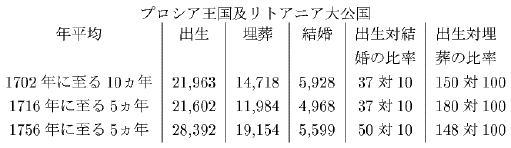
『「注意。一七〇九年及び一七一〇年には流行病がこの国の住民二四七、七三三を奪い、一七三六年及び一七三七年には伝染病が流行し、これがまたもその増加を妨げた。」
『出生の埋葬に対する最大の比率は、大流行病後の五箇年間に現われていることを、注意し得よう。
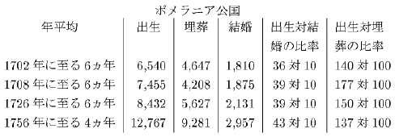
『「この場合には、非常に悪性の伝染病が一度も増加を阻止しなかったので、住民は五六年にしてほとんど倍加したことがわかるが、しかし最後の期間（一七五六年に至る）の直後の三箇年には疾病が非常に流行し、ために出生は一〇、二二九に低下し、埋葬は一五、〇六八に増加した。」
『この場合、住民の数は、彼らを健康に保つに必要な食物の備えよりも急速に、増加したのではなかろうか。人民大衆は、この仮定によれば、生活の困難が増大し、そして一軒に押込められる人数は増加することであろう。そしてこれが、三疾病流行年を生ぜしめた原因に属するというのは、確かにあり得ないことではない。たとえその国が、絶対的な意味で極度に密集し人口稠密になっていなくとも、これらの原因はかかる結果を生じ得よう。たとえ人口稀薄な国であっても、食物の生産が増加し家屋の建築が増加しないうちに人口増加が生ずるならば、人口はある程度余地と生活資料とに悩まなければならぬ。来る八年または十年間英蘭 における結婚が通常以上に多産的となるとすれば、または通常以上に多数の結婚が行われるとすれば、家屋数を同一と仮定すれば、小屋一軒当りに五、六人ではなく七、八人が住まなければならず、そしてこのことは、生活の困難の増大と相俟って、おそらくは一般人民の健康に対し極めて不利な影響を与えることであろう。
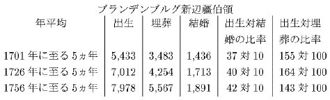
『「一七三六年ないし一七四一年の六年間に伝染病が流行し、増加を妨げた。」
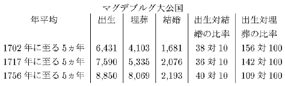
『「一七三八年、一七四〇年、一七五〇年、及び一七五一年には特に、疾病が流行した。」
『この問題についてこれ以上知りたい読者は、ジュウスミルヒ氏の表を見られたい。私の行った以上の抜萃は、不規則であるが週期的な疾病流行季の囘起を証示するに足るものであり、そして十中八九、余地と食物との稀少が、これを齎らした主要原因の一つと考えられるのである。』
既に掲げた（訳註）各国の記録簿によって見ると、その人口増加は、不規則ではあるが週期的な〔訳註〕ここまでが第一版の第六章に該当するところであり、これ以下は第七章に該当する。第一版第七章は伝染病に関する観察から始まるが、この第七章冒頭の部分は第二版以下では削除された。それは、次の如きものである、――
『清潔にたいして注意した結果、
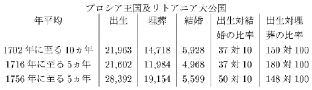
『「注意。一七〇九年及び一七一〇年には流行病がこの国の住民二四七、七三三を奪い、一七三六年及び一七三七年には伝染病が流行し、これがまたもその増加を妨げた。」
『出生の埋葬に対する最大の比率は、大流行病後の五箇年間に現われていることを、注意し得よう。
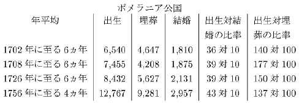
『「この場合には、非常に悪性の伝染病が一度も増加を阻止しなかったので、住民は五六年にしてほとんど倍加したことがわかるが、しかし最後の期間（一七五六年に至る）の直後の三箇年には疾病が非常に流行し、ために出生は一〇、二二九に低下し、埋葬は一五、〇六八に増加した。」
『この場合、住民の数は、彼らを健康に保つに必要な食物の備えよりも急速に、増加したのではなかろうか。人民大衆は、この仮定によれば、生活の困難が増大し、そして一軒に押込められる人数は増加することであろう。そしてこれが、三疾病流行年を生ぜしめた原因に属するというのは、確かにあり得ないことではない。たとえその国が、絶対的な意味で極度に密集し人口稠密になっていなくとも、これらの原因はかかる結果を生じ得よう。たとえ人口稀薄な国であっても、食物の生産が増加し家屋の建築が増加しないうちに人口増加が生ずるならば、人口はある程度余地と生活資料とに悩まなければならぬ。来る八年または十年間
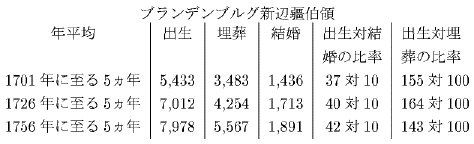
『「一七三六年ないし一七四一年の六年間に伝染病が流行し、増加を妨げた。」
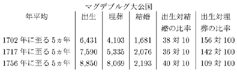
『「一七三八年、一七四〇年、一七五〇年、及び一七五一年には特に、疾病が流行した。」
『この問題についてこれ以上知りたい読者は、ジュウスミルヒ氏の表を見られたい。私の行った以上の抜萃は、不規則であるが週期的な疾病流行季の囘起を証示するに足るものであり、そして十中八九、余地と食物との稀少が、これを齎らした主要原因の一つと考えられるのである。』
１） New Observ. on Bills of Mortality, p. 96.
〔訳註〕これを含んでこの後の合計一〇パラグラフは第一版にはない。
彼れの表にある伝染病流行年、すなわち〔訳註〕これを含んでこの後の合計一〇パラグラフは第一版にはない。
１） Hist. of Air, Seasons, etc., vol. ii. p. 366.
２） Id. p. 202.
表に列挙されている大飢饉及び凶作二五四のうち、一五は紀元前に属し１）［＃「１）」は縦中横、行右小書き］、その最初はアブラハムの時代にパレスチナに起ったものである。この一五を引いて、その残りで紀元後の年数を割ると、この恐るべき災難の襲来した平均間隔は、わずかに約七年半に過ぎぬことがわかるであろう。２） Id. p. 202.
１） Id. p. 206.
どれだけかかる『人類の過剰の恐るべき矯正』が、人口の過度に急速な増加から生じたものであるかは、これを幾分でも正確に決定することの極めて困難な点である。たいていの吾々の疾病の原因は、吾々には、非常に神秘的に見え、またおそらく実際その種類が非常に多いから、そのうちいずれかの一つを強調しすぎることは早計であろう。しかしこれらの原因の中には、吾々は確かに、住居と食物に関する一国の備えが許す以上に急速な人口増加の自然的結果たる、密集家屋と不十分または不健全な食物を、数えるべきである、と云っても過言ではないであろう。吾々のもつほとんど一切の伝染病の歴史書は、伝染病は一般に、下層階級の間で主として猖獗を極めると書いて、この仮定を確証する傾きがある。ショオト博士の表ではこの事情がしばしば述べてある１）［＃「１）」は縦中横、行右小書き］。そして更に、伝染病流行年の極めて多数は、凶作と不良な食物季節の後に生じたかまたはこれと時を同うして生じたものであることが、わかる２）［＃「２）」は縦中横、行右小書き］。他の場所で彼はまた、激しい
１） Id. p. 206 et seq.
２） Id. p. 206 et seq. and 336.
３） New Observ. p. 125.
４） Id. p. 108.
吾々は、不断の経験から、熱病は、我国の牢獄や、我国の工場や、我国の密集した救貧院や、我国の大都市の狭隘な街路に醸成されることを、知っているが、これらの環境は、いずれも、その結果において極貧に類似するように思われる。そして吾々は、この種の原因が、その程度を悪化し、従前にはヨオロッパに、かくも頻々と生じた２） Id. p. 206 et seq. and 336.
３） New Observ. p. 125.
４） Id. p. 108.
人類に対する他の大きな災厄（訳註）、すなわち飢饉については、人口の増加が絶対的にこれを発生せしめるというのは、事実に反する、と云い得よう。人口の増加は、たとえ急速であっても、必然的に漸進的である。そして人間の体躯は極めて短期間といえども食物なくしては支持し得ないから、これを養うべき食料が存在する以上の人類は成長し得ないことは明かである。しかし人口原理が絶対に飢饉を発生せしめ得るものではないとはいえ、それは飢饉に対する道を準備するものである。そしてしばしば下層階級をして生命を維持すべきほとんど最小量の食物で生活するを余儀なからしめることにより、季節の不良によるちょっとした食物の不足をすら惨憺たる凶饉たらしめるのであり、従って飢饉の主たる原因の一つであると云い得よう。凶饉の接近の前兆として、ショオト博士は、一年または、それ以上続いた豊作を挙げている１）［＃「１）」は縦中横、行右小書き］。そしておそらくこの説は正しいであろうが、けだし物が安く豊富であれば、一般的に、多数の人の結婚を促す結果となり、そしてかかる事情の下では、平年作の囘起ですらが食物の不足を惹起し得ようからである。
１） Hist. of Air, Seasons, etc., vol. ii. p. 367.
〔訳註〕飢饉については第一―二版では本章の終末近くにこれと異る内容の一パラグラフがあった。その場所の訳註を参照。
ヨオロッパにおける最も普遍的な致命的な伝染病と考え得る天然痘は、多くの地方で規則的に囘起してはいるけれども、一切の伝染病の中でおそらく最も説明の困難なものである１）［＃「１）」は縦中横、行右小書き］。ショオト博士は、この疾病の歴史から見て、これは天候や季節の過去または現在の情勢とはほとんどまたは全く関係するところがないらしく、そして厳霜の候には幾分減退するが、時期と空気の状態とを問わず伝染流行する、と云っている。吾々は思うに天然痘がどういう状況の下ではっきり発生したかという事例は知らない。従って私は、貧困と密集家屋とがそれを絶対的に発生せしめたのだとは云うつもりはない。しかし私は、その囘起が規則的であり、そしてそれが、子供なかんずく下層階級の子供の間に猖獗を極めるところでは、通常よりも甚だしい上記の事情が、常に天然痘の発生に先行しまたは同伴しなければならぬ、ということにならざるを得ない、換言すればその流行が終ると、子供の平均数が増加し、人民はその結果としてより貧しくなり、家屋はますます密集して、そしてついに次囘の襲来がこの過剰人口を除き去るのである、と。〔訳註〕飢饉については第一―二版では本章の終末近くにこれと異る内容の一パラグラフがあった。その場所の訳註を参照。
１） Hist. of Air, Seasons, etc., vol. ii. p. 411.
これらの場合にはいずれも、現実の疾病を発生せしめる人口原理の結果をいかに軽視するとしても、吾々は、それが伝染に途を開く原因であり、その範囲と害とを著しく大ならしめる力をもつことを、認めざるを得ないのである。ショオト博士は、激しい致命的伝染病は、虚弱者や老衰者の多くを一掃するので、その後には一般に通常見られぬ健康状態が現われる、と云っている１）［＃「１）」は縦中横、行右小書き］。この事実のもう一つの原因は、おそらく、余地と食物との量の増加、従って下層階級の者の境遇の改善であろう。ショオト博士によれば、非常に多産的な年の後には非常に死亡と疾病の多い年が来、また死亡の多い年の後にはしばしば非常に多産的な年が来るのであって、これはあたかも自然が死亡による損失を防止しまたは急速に恢復しようと欲しているが如くである。一般に疾病と死亡の多い年の翌年は、残った生殖能力者に比して出生が多いものである。
１） Id. p. 344.
この最後の結果は（訳註）、プロシアとリトアニアの表に極めてはっきりと例証されていることは１）［＃「１）」は縦中横、行右小書き］、吾々の既に見たところである。そしてこの表やジュウスミルヒの他の表から見ると、一国の生産物が増加しまた労働に対する需要が増大し、ために結婚を大いに助勢するほど労働者の境遇が改善される時には、早婚の慣習は一般に継続し、ついに人口は生産物の増加以上に増加することとなり、そして疾病流行年となるのがその自然的な必然的な帰結であるように思われる。大陸の記録簿は、急速な人口増加がかくの如くして致命的な疾病によって阻止された幾多の事例を示している。そしてこの事実から推論し得ることは、生活資料は人口増加を助勢するに足るほど増加しつつあるけれども、しかし増加する人口のあらゆる要求に応ずるには、足りない国は、人口増加が平均的生産物とより均衡を保っている国よりも、週期的伝染病に襲われやすい、ということである。
１） New Observ. p. 191.
〔訳註〕これと次との二パラグラフはおおむね第一版より。Cf. 1st ed., pp. 119-120.
この反対ももちろん真実であろう。週期的疾病に襲われる国においては、それほどかかる疾病に襲われない国に通常見られるよりも、流行病の中間期における人口の増加すなわち死亡以上に出ずる出生の超過が大である。もしトルコやエジプトが前世紀の間平均人口においてほとんど停止的であるとすれば、その週期的〔訳註〕これと次との二パラグラフはおおむね第一版より。Cf. 1st ed., pp. 119-120.
現在の増加率または減少率から算出した将来人口の増減の推測に信頼し得ないのは、この理由によるものである。サア・ウィリアム・ペティは、一八〇〇年にはロンドン市は五、三五九、〇〇〇の人口になろうと計算したが１）［＃「１）」は縦中横、行右小書き］、実際は今日その五分の一もない。イートン氏は最近、今後一世紀にトルコ帝国の人口は絶滅すると予言したが２）［＃「２）」は縦中横、行右小書き］、これは確かに起りそうもないことである。もしアメリカが今後一五〇年間、現在と同一の比率で増加し続けるならば、その人口は支那の人口をも超過するであろう。しかし、予言は危険であるけれども、私は、五、六百年の後はともかく一五〇年ではこんな増加は起らない、とあえて云いたいのである。
１） Political Arithmetic, p. 17.
２） Survey of the Turkish Empire, c. vii. p. 281.
ヨオロッパは疑いもなく、現在よりも従来の方が、２） Survey of the Turkish Empire, c. vii. p. 281.
最近一世紀の間
１） Necker's［＃「Necker's」は底本では「Necker」］ de l'Administration des Finances, tom. i. c. ix. p. 255.
〔訳註１〕ここの句に『最近一世紀の間』なる語が挿入されたのは第六版であり、また『平均比率』の語は第二―四版では『最高平均比率』とあった。
〔訳註２〕この前の二パラグラフと、このパラグラフのここまでとは、第二版以後のものであり、第一版ではこれに代えて次の如くあった、――
『ある国における五年または十年間の出生の埋葬に対する比率は、従って、その真の人口増加を判断するには極めて不適当な基準であることが、わかるであろう。この比率は確かに、かかる五年または十年間の増加率を示すものである。しかし吾々はこれからは、その前の二十年間の増加如何 、またはその後の二十年間の増加如何 は、推論し得ない。プライス博士は、スウェーデン、ノルウェイ、ロシア、及びナポリ王国は急速の増加しつつある、と云っている。しかし彼が与えている記録簿の抜萃は、この事実を確証するに足る範囲に亙る期間のものではない。しかしながら、スウェーデン、ノルウェイ、及びロシアは、プライス博士が採っている短期の出生の埋葬に対する比率が示す如き率ではないとしても１）［＃「１）」は縦中横、行右小書き］、たしかに人口が実際増加しつつあるらしい。一七七七年に終る五箇年間に、ナポリ王国における出生の埋葬に対する比率は、一四四対一〇〇であった。しかしこの比率は、百年間にこの王国がなしとげた増加よりも遥かに大きな増加を表わしている、と想像すべき理由があるのである。
〔訳註１〕ここの句に『最近一世紀の間』なる語が挿入されたのは第六版であり、また『平均比率』の語は第二―四版では『最高平均比率』とあった。
〔訳註２〕この前の二パラグラフと、このパラグラフのここまでとは、第二版以後のものであり、第一版ではこれに代えて次の如くあった、――
『ある国における五年または十年間の出生の埋葬に対する比率は、従って、その真の人口増加を判断するには極めて不適当な基準であることが、わかるであろう。この比率は確かに、かかる五年または十年間の増加率を示すものである。しかし吾々はこれからは、その前の二十年間の増加
『１） See Dr. Price's Observations, 2 Vol. Postscript to the controversy on the population of England and Wales.
『ショオト博士は、二つの期間における英蘭 の多数の村と市場都市との記録簿を比較しているが、その第一の期間は、エリザベス女王から前世紀（訳註――十七世紀）の中頃までであり、第二の期間は前世紀終末の色々の年から現世紀の中頃までである。この抜萃の比較から見ると、前期においては出生は埋葬を一二四対一〇〇の比率で超過したが、後期ではわずかに一一一対一〇〇の比率で超過しているに過ぎない。プライス博士は、前期の記録簿は信頼出来ないと考えているが、しかしおそらくこの場合それは不正確な比率は与えていないであろう。少くとも、後期よりも前期の方が埋葬以上に出ずる出生の超過が大であると期待すべき、多数の理由がある。ある国の人口の自然的増加においては、その後期よりも初期の方が、他の事情にして等しければ１）［＃「１）」は縦中横、行右小書き］、より良い土地が耕作されることであろう。そして生産物のより大なる比例的増加は、ほとんど常に、人口のより大なる比例的増加を伴うであろう。しかし、埋葬以上に出ずる出生の超過をして現世紀の中頃よりもエリザベス女王の末期において当然より大ならしめるべきこの大原因の外に、私は、前期において疫病 が時々暴威を振ったのでこの比率はやや増大する傾向がなければならぬ、と考えざるを得ない。この恐るべき疾病の襲来した中間期の十年の平均を採ったとすれば、または疫病 流行年が偶然的なりとして排除されたとすれば、記録簿は確かに、真の平均人口増加としては高きに過ぎる出生の埋葬に対する比率を与えるであろう。一六六六年の大疫病後の数年間には、おそらく通常以上の埋葬以上の出生の超過があったことであろうし、ことに英蘭 は現在よりも革命の際（これはわずかにそれより二二年後に起ったものである）の方が人口が多かったという、プライス博士の意見が根拠あるものであれば、いっそうそう思わざるを得ない。
『１） 私は、他の事情にして等しければ、と云うが、けだしある国の生産物の増加は、常に著しく、そこに行われる勤労の精神とこの精神の指導様式とに、依存するからである。人民の知識と習慣その他の一時的原因、なかんずくその当時の市民的自由と平等との程度は、常に、この精神を刺戟し指導するに当り大きな影響を及ぼさざるを得ないものである。
『キング氏は、一六九三年に、ロンドンを除く大英国全体の出生の埋葬に対する比率は、一一五対一〇〇であると述べている。ショオト博士は、現世紀の中頃に、これを、ロンドンを含んで一一一対一〇〇としている。一七七四年に終る五箇年間のフランスではこの比率は一一七対一〇〇であった。もしこれらの記述が真に近いとすれば、また特定の時期にこの比率に非常に大きな変動が何もないとすれば、フランス及び英蘭 の人口は…………』
〔訳註３〕ここには第二―四版では次の如き註があった、――
『この記述は、ある程度まで、最近フランスで、革命以来生じた出生の増加によって、実証されている。』
ニュウ・ジャアシイでは（訳註）、出生の死亡に対する比率は、一七四三年に終る七年間を平均して三〇〇対一〇〇であった。フランス及び〔訳註３〕ここには第二―四版では次の如き註があった、――
『この記述は、ある程度まで、最近フランスで、革命以来生じた出生の増加によって、実証されている。』
〔訳註〕これ、及びこの後の、六パラグラフは、大体において第一版からのものである。Cf. 1st ed., pp. 126-133.
両性間の情欲はあらゆる時代においてほとんど同一であるように思われるから、それは常に、代数の用語で云えば、与えられたる量と考え得よう。いかなる国においてもそれが生産するか獲得するかすることが出来る食物以上に人口が増加するのを妨げる必然の大法則は、吾々の眼前に横わり、吾々の理解力にとり明瞭明白な法則であるから、吾々はそれを一瞬も疑うことが出来ない。自然が過剰人口を抑圧するためにとる種々なる様式は、実際吾々に、それほど確実に規則的には映らないが、しかし吾々が常に必ずしもその様式を予言出来ないとしても、その事実は確実に予言することが出来る。もし出生の死亡に対する比率が数年間、その国の増加または獲得された食物の比率を遥かに超過する人口増加を示すならば、吾々は、移民が行われないかぎり、死亡はまもなく出生を超過し、そして数年間見られた増加はその国の真の平均的な人口増加ではあり得ないことを、確信し得よう。もしほかに人口減退の原因がなく、またもし予防的妨げが非常に強くは働かないとすれば、あらゆる国は疑いもなく週期的なあらゆる国の人口真実の永久的の増加の本当の基準は、生活資料の増加である。しかしこの基準ですらある軽微な変動を免れないが、しかしながらこの変動は、完全に吾々の観察し得るところである。ある国では人口増加が強制されているように見える。換言すればその人民は漸次にほとんど最小可能量の食物で生活するように慣らされてきている。かかる国では、人口が生活資料の増加なくして永続的に増加した時期があったに違いない。支那やインド及びベドウィン・アラビア人の占拠する国は、本書の前の方で述べた如くに、この部類に属するように思われる。これら諸国の平均生産物はわずかに住民の生命を辛うじて支えるに足るに過ぎぬように思われ、従って不作により少しでも食料不足が起れば、それはもちろん致命的でなければならない。かかる状態にある国民は必然的に飢饉の襲来を蒙らなければならない。
労働の報酬が現在極めて潤沢なアメリカでは、不作の年には甚だしい節約を行っても、それほど困ることはない。従って飢饉はほとんど不可能のように思われる。が、アメリカの人口が増加するにつれ、労働者の報酬は早晩その潤沢さを大いに減ずるものと、予期し得よう。この場合には、人口は、それに比例する生活資料の増加なくして、永続的に増加するであろう。
ヨオロッパ各国には、それぞれの国に行われる生活の習慣の相違から生ずる、住民数と食物消費量との比率の若干の変化があるに違いない。
彼等もおそらく早晩、必然という厳酷な法則の不断の作用により、支那の下層民のような生活に没落するかもしれず、その時は、この国は同一量の食物をもってより大なる人口を養うことであろう。しかしこれを実現するのは常に困難な企てでなければならず、そしていやしくも人道の友たるものはこれが不成功に終らんことを希望するであろう（訳註）。
〔訳註〕ここまでの六パラグラフは大体において第一版を基礎とするものであるが、第一版のこのパラグラフの後半とその次の一パラグラフとは、第二版で削除された。それは次の如くである、――
『人口に対し与えらるべき奨励ほど普通に耳にすることはない。もし人口増加の傾向が、私が述べたほど大であるならば、それがこれほど要求されているのに実現しないのは奇妙に思われるであろう。その本当の理由は、より大なる人口に対する要求がそれを養うに必要な基金を準備することなくして行われている、という事実である。耕作を促進して農業労働に対する需要を増大し、従ってそれと共に国の生産物を増加し、そして労働者の境遇を改善すれば、それに比例する人口増加については何の危惧の必要もないのである。何か他の方法でこの目的を実現しようとする企ては、罪悪であり残酷であり圧制的であり、従ってかなりの自由の存するいかなる国においても成功し得ないものである。人口増加を強制し、これによって労働の価格を低め、従ってまた陸海軍費と輸出製造品原価とを低めるのは、一国の支配者と富者の利益であるように思われるかもしれない。しかしあらゆるこの種の企ては、なかんずくそれが慈善という欺瞞的装いのもとに行われ、従って一般人民が快く喜んで受容される可能性のある際には、貧民の友たるものはこれを注意深く監視し執拗に拒否すべきものなのである。
『私は、ピット氏が、その貧民法案の中に、労働者が三人以上も子供を有てばその一人につき一週一シリングを与えるという条項を作った点で、何らかの不正な意図を有っているとは、決して思わない。この法案が議会に提出される前には、またその後もしばらくの間は、かかる法令は極めて便宜なものと考えたことを、私は告白するが、しかしこの問題をもっと考えてみたところ、私は、たとえその目的が貧民の境遇の改善にあるとしても、それはその所期する目的そのものを挫折せしめるべきものである、と信ぜざるを得なくなった。それは私の知る限りでは国の生産物を増加する傾向を何も有たない。そしてもしそれが生産物を増加することなくして人口を増加せしめる傾向があるならば、その必然的不可避的結果として、同一の生産物がより多数のものに分たれなければならず、その結果として一日の労働はより少量の食物を購買することとなり、貧民は従って一般により悲惨な境遇に陥らなければならぬように、思われるのである。』
なおこれ以後の四パラグラフは、大体において第一版を基礎とする。Cf. 1st ed., pp. 135-139.
私は、人口が、それに比例する生活資料の増加なくして永続的に増加し得る場合があることを、述べた。しかし、食物とそれにより養われる人口との間の比率の、国を異にするにより生ずる変化には、越し得ない限度があることは、明かである。人口が絶対的に減少しつつはない国においては、すべて、食物は必然的に、労働者階級を扶養し維持するに足るものでなければならない。『人口に対し与えらるべき奨励ほど普通に耳にすることはない。もし人口増加の傾向が、私が述べたほど大であるならば、それがこれほど要求されているのに実現しないのは奇妙に思われるであろう。その本当の理由は、より大なる人口に対する要求がそれを養うに必要な基金を準備することなくして行われている、という事実である。耕作を促進して農業労働に対する需要を増大し、従ってそれと共に国の生産物を増加し、そして労働者の境遇を改善すれば、それに比例する人口増加については何の危惧の必要もないのである。何か他の方法でこの目的を実現しようとする企ては、罪悪であり残酷であり圧制的であり、従ってかなりの自由の存するいかなる国においても成功し得ないものである。人口増加を強制し、これによって労働の価格を低め、従ってまた陸海軍費と輸出製造品原価とを低めるのは、一国の支配者と富者の利益であるように思われるかもしれない。しかしあらゆるこの種の企ては、なかんずくそれが慈善という欺瞞的装いのもとに行われ、従って一般人民が快く喜んで受容される可能性のある際には、貧民の友たるものはこれを注意深く監視し執拗に拒否すべきものなのである。
『私は、ピット氏が、その貧民法案の中に、労働者が三人以上も子供を有てばその一人につき一週一シリングを与えるという条項を作った点で、何らかの不正な意図を有っているとは、決して思わない。この法案が議会に提出される前には、またその後もしばらくの間は、かかる法令は極めて便宜なものと考えたことを、私は告白するが、しかしこの問題をもっと考えてみたところ、私は、たとえその目的が貧民の境遇の改善にあるとしても、それはその所期する目的そのものを挫折せしめるべきものである、と信ぜざるを得なくなった。それは私の知る限りでは国の生産物を増加する傾向を何も有たない。そしてもしそれが生産物を増加することなくして人口を増加せしめる傾向があるならば、その必然的不可避的結果として、同一の生産物がより多数のものに分たれなければならず、その結果として一日の労働はより少量の食物を購買することとなり、貧民は従って一般により悲惨な境遇に陥らなければならぬように、思われるのである。』
なおこれ以後の四パラグラフは、大体において第一版を基礎とする。Cf. 1st ed., pp. 135-139.
他の事情が同一ならば、一国の人口の多寡は、それが生産しまたは獲得し得る人類食物の量に比例し、また幸福の程度は、この食物の分配される量、すなわち一日の労働が購買する量に比例する、と断定し得よう。麦産国は畜産国よりも人口が多く、また米産国は麦産国よりも人口が多い。しかし彼らの幸福は、人口の粗密にも、国の貧富にも、国の新旧にも依存せず、人口と食物とが相互にとる比率に依存するのである。
この比率は一般に、新植民地で最も良いのであるが、そこでは、古国の知識と勤労とが、国の肥沃な無主の土地に充用されるのである。他の場合では、国の新旧はこの点において大きな重要性を有たない。おそらく大英国の食物は、二千年、三千年、または四千年以前よりも、現在の方がより潤沢にその住民に分配されている。そして、
もしある国が、技術のより進んだ国民によって決して侵略されることなく、それ自身の文明の自然的進歩のままに委ねられるならば、その生産物を一単位と考え得る時から百万単位と考え得る時まで、数千年数万年の間、人民の大衆が、直接にか間接にか、食物の不足に悩まなかったと云い得る時は、ただの一時もないであろう。歴史あって以来、ヨオロッパのあらゆる国では、それに関する記録をはじめてもって以来、幾百幾千万の人類は、――もとよりこれら諸国のあるものではおそらく絶対的の飢饉は一度も起らなかったかもしれぬが、――この単純な原因により抑圧され来っているのである（訳註）。
〔訳註〕第一―三版ではこの次に飢饉を論ずる一パラグラフがあったが、これは第四版で削除された。それは次の如くである、――
『飢饉は最後の、最も恐るべき、自然の方策であるように思われる。人口増加力は、人間に対し生活資料を生産する土地の力に優越すること極めて大であるから、予防的妨げによって阻止されぬ限り（訳註――この一句は第一版にはない。）、幼死が何らかの形において人類を襲わなければならない。人類の罪悪は活溌有能な人口減退の使臣である。これは破壊の大軍の先駆であり、しばしば自ら恐るべき作業を成就する。しかしそれがこの殲滅戦に失敗した場合には、疾病季や伝染病や流行病や疫病 が恐るべき陣列をなして突進し、その数千数万を一掃する。成功がなお不十分の場合には、巨大な不可避的な飢饉が殿軍となって襲来し、力強い一撃をもって人口を世界の食物の水準と一致せしめるのである。』
なお三〇六頁の訳註を参照。
しからば、人類の歴史を細心に検討するものは、人類が従来存在しまたは現に存在しているあらゆる時代あらゆる国においても次の事実の存在することを、認めざるを得ないのではなかろうか、すなわち、『飢饉は最後の、最も恐るべき、自然の方策であるように思われる。人口増加力は、人間に対し生活資料を生産する土地の力に優越すること極めて大であるから、予防的妨げによって阻止されぬ限り（訳註――この一句は第一版にはない。）、幼死が何らかの形において人類を襲わなければならない。人類の罪悪は活溌有能な人口減退の使臣である。これは破壊の大軍の先駆であり、しばしば自ら恐るべき作業を成就する。しかしそれがこの殲滅戦に失敗した場合には、疾病季や伝染病や流行病や
なお三〇六頁の訳註を参照。
人口の増加は必然的に生活資料によって制限される。
人口は、有力にして顕著なる妨げによって妨げられない限り、生活資料が増加する時には１）［＃「１）」は縦中横、行右小書き］普く増加する。
これらの妨げ、及び人口を生活資料の水準に抑止する妨げは、道徳的抑制、罪悪、及び窮乏である（訳註１）。
１） ここに云う生活資料の増加とは、常に、人口の大多数が支配し得る如き増加のことである。しからざればそれは人口増加を奨励する上で何にもならないであろう。（訳註――この註は第五版より現わる。）
〔訳註１〕この三命題は第一版では次の如くなっていた、――
『人口の増加は必然的に生活資料によって制限されること。
『人口は生活資料が増加する時には普く増加すること。及び、
『人口の優勢な力は抑圧され、そして現実の人口は窮乏及び罪悪によって生活資料と等しく保たれるということ。』
なお本訳書第一分冊三四―五頁を参照。
この第二篇で（訳註）考察した社会状態を第一篇の主題をなしたそれと比較すると、近代ヨオロッパでは、過去の時代や世界の文明の劣れる地方よりも、積極的妨げの行われる程度は少く、予防的妨げの行われる程度は強いことが、わかると思う。〔訳註１〕この三命題は第一版では次の如くなっていた、――
『人口の増加は必然的に生活資料によって制限されること。
『人口は生活資料が増加する時には普く増加すること。及び、
『人口の優勢な力は抑圧され、そして現実の人口は窮乏及び罪悪によって生活資料と等しく保たれるということ。』
なお本訳書第一分冊三四―五頁を参照。
〔訳註〕このパラグラフ以下は第二版より現わる。
蒙昧諸民族の人口に対する優越的妨げたる戦争は、最近の不幸な革命戦を含めても、確かに減少している。そして身体の清潔の程度の向上、都市の清掃及び建設法の改善、経済学の知識の進歩によるより公平な土地生産物の分配が、普及して以来、人口に対する予防的妨げについて云えば、そのうち道徳的抑制１）［＃「１）」は縦中横、行右小書き］の部類に属するものは、現在では男子の方では余り行われていないと認めなければならないが、しかし私は、前に考察した国よりも多く行われている、と確信する。そして、近代ヨオロッパにおいては、過去の時代や文明の劣れる国民よりも、女子の遥かに大きな部分がその一生涯のうちの大きな部分を、この徳を実行して送っていることは、ほとんど疑い得ないところである。しかしそれはとにかくとして、もし吾々が、単に、主として、結果に関係なく慎慮的な思慮から結婚を延期するという意味の、一般的名辞のみを考えるならば、これは、かかる見解からして、近代ヨオロッパにおいて人口を生活資料の水準に抑止する妨げのうちで、最も有力なものと考え得よう。
１） 読者は私がこの語を狭い意味に用いていることを想起せられたい。（訳註――この註は第三版より現わる。ただし第五版に用語上の訂正がある。）